← samimirash.com
Marvel's Midnight Suns
Spoiler-free 100% completion: discoveries, relationships, Abbey systems, combat records, balance rewards, campaign, and DLC · 25 areas · 1448 tracked items
This page shows everything, including exact locations.
It exists so you can search for one specific collectible and find it.
If you are playing blind, use the
interactive spoiler-free version instead — it hides
locations until you ask for them, one item at a time.
Open the spoiler-free interactive guide
Completion Run Planner
You are here when: Use this checklist at the Mirror Table before advancing the main objective and again before starting New Game+.
The campaign remains playable after its final mission. Most cleanup is safest on the original clear file.
First-Campaign Foundation (missable)
Run plan
HintTreat the first campaign as the permanent exploration and relationship file.
WhereBefore the final mission, finish every Grounds region, club chain, Haven, hero friendship, and facility upgrade that is available.
Full detailUse repeatable general missions to advance days without advancing the main objective. Complete all four Words of Power, permanent collections, fifteen Havens, fifteen club meetings, base and installed-DLC friendships, every research project, and every purchasable Abbey upgrade in this same campaign. The final mission does not lock the save, so unfinished grinding can continue afterward.
One-Side Balance Run (missable)
Run plan
HintCommit Hunter's answers and deck to one alignment before changing direction.
WhereReach 200 Light or 200 Dark first and verify every reward on that side before reversing course.
Full detailChoose dialogue answers marked for the selected side and play four matching Hunter cards per mission for one point, or eight for two. The T.H.R.E.A.T. Room can add another same-day combat opportunity; the Grotto grants Light on a full moon and Dark on a new moon. At 200, verify both collars, the legendary copies, and the suit before earning opposite points.
Opposite-Side Balance Cleanup
Run plan
HintPreviously earned alignment rewards remain available after the meter moves away.
WhereAfter reaching one 200-point extreme, reverse every repeatable source until Hunter reaches the opposite 200-point extreme.
Full detailKeep the original campaign open and swap to an eight-card deck dominated by the opposite alignment. Run general missions and the T.H.R.E.A.T. Room with Hunter, playing eight matching cards whenever possible, and use the correct moon phase at the Grotto. Dialogue is finite, but combat balance is repeatable. Do not start New Game+ merely for this grind unless you intentionally want its reset rules.
No Difficulty or Rank Grind
Verified scope
HintDo not add an unsupported campaign-setting requirement.
WhereChoose any combat difficulty; 100% completion has no separate difficulty clear, time rank, or score rank.
Full detailFinish the campaign once on any setting. Raising difficulty increases mission rewards but does not add a distinct completion record, ending, or unlock requirement. There is also only one campaign ending, already represented by Campaign Completion.
Hunter Balance Rewards
You are here when: Hunter's Hero screen shows the current Light-or-Dark value; new collars, cards, and suits appear automatically at thresholds.
Crossing back through neutral does not remove rewards already earned.
20 Light - Ivory Collar
Balance unlock
HintKeep leaning Light until the next automatic reward appears.
WhereReach 20 Light Balance to unlock Ivory Collar.
Full detailUse Light-marked dialogue choices, play four Light Hunter abilities for one post-mission point or eight for two, and use the Grotto on the matching moon phase. Open Hunter's Hero screen to confirm 20 Light, then verify Ivory Collar is available before reversing alignment.
60 Light - Paragon Collar
Balance unlock
HintKeep leaning Light until the next automatic reward appears.
WhereReach 60 Light Balance to unlock Paragon Collar.
Full detailUse Light-marked dialogue choices, play four Light Hunter abilities for one post-mission point or eight for two, and use the Grotto on the matching moon phase. Open Hunter's Hero screen to confirm 60 Light, then verify Paragon Collar is available before reversing alignment.
100 Light - Summon Charlie
Balance unlock
HintKeep leaning Light until the next automatic reward appears.
WhereReach 100 Light Balance to unlock one Summon Charlie card.
Full detailUse Light-marked dialogue choices, play four Light Hunter abilities for one post-mission point or eight for two, and use the Grotto on the matching moon phase. Open Hunter's Hero screen to confirm 100 Light, then verify one Summon Charlie card is available before reversing alignment.
150 Light - Light Suit
Balance unlock
HintKeep leaning Light until the next automatic reward appears.
WhereReach 150 Light Balance to unlock the Light Suit and its passive.
Full detailUse Light-marked dialogue choices, play four Light Hunter abilities for one post-mission point or eight for two, and use the Grotto on the matching moon phase. Open Hunter's Hero screen to confirm 150 Light, then verify the Light Suit and its passive is available before reversing alignment.
200 Light - Summon Charlie Copy
Balance unlock
HintKeep leaning Light until the next automatic reward appears.
WhereReach 200 Light Balance to unlock a second Summon Charlie card for upgrading.
Full detailUse Light-marked dialogue choices, play four Light Hunter abilities for one post-mission point or eight for two, and use the Grotto on the matching moon phase. Open Hunter's Hero screen to confirm 200 Light, then verify a second Summon Charlie card for upgrading is available before reversing alignment.
20 Dark - Obsidian Collar
Balance unlock
HintKeep leaning Dark until the next automatic reward appears.
WhereReach 20 Dark Balance to unlock Obsidian Collar.
Full detailUse Dark-marked dialogue choices, play four Dark Hunter abilities for one post-mission point or eight for two, and use the Grotto on the matching moon phase. Open Hunter's Hero screen to confirm 20 Dark, then verify Obsidian Collar is available before reversing alignment.
60 Dark - Renegade Collar
Balance unlock
HintKeep leaning Dark until the next automatic reward appears.
WhereReach 60 Dark Balance to unlock Renegade Collar.
Full detailUse Dark-marked dialogue choices, play four Dark Hunter abilities for one post-mission point or eight for two, and use the Grotto on the matching moon phase. Open Hunter's Hero screen to confirm 60 Dark, then verify Renegade Collar is available before reversing alignment.
100 Dark - Annihilation
Balance unlock
HintKeep leaning Dark until the next automatic reward appears.
WhereReach 100 Dark Balance to unlock one Annihilation card.
Full detailUse Dark-marked dialogue choices, play four Dark Hunter abilities for one post-mission point or eight for two, and use the Grotto on the matching moon phase. Open Hunter's Hero screen to confirm 100 Dark, then verify one Annihilation card is available before reversing alignment.
150 Dark - Dark Suit
Balance unlock
HintKeep leaning Dark until the next automatic reward appears.
WhereReach 150 Dark Balance to unlock the Dark Suit and its passive.
Full detailUse Dark-marked dialogue choices, play four Dark Hunter abilities for one post-mission point or eight for two, and use the Grotto on the matching moon phase. Open Hunter's Hero screen to confirm 150 Dark, then verify the Dark Suit and its passive is available before reversing alignment.
200 Dark - Annihilation Copy
Balance unlock
HintKeep leaning Dark until the next automatic reward appears.
WhereReach 200 Dark Balance to unlock a second Annihilation card for upgrading.
Full detailUse Dark-marked dialogue choices, play four Dark Hunter abilities for one post-mission point or eight for two, and use the Grotto on the matching moon phase. Open Hunter's Hero screen to confirm 200 Dark, then verify a second Annihilation card for upgrading is available before reversing alignment.
All Three Hunter Legendary Abilities (missable)
Ability unlock
HintOne Grounds mystery awards a legendary ability based on current Balance.
WhereComplete Hunter's Forge challenge for Bladestorm, then finish the Garden mystery while at least 20 points toward either side for the opposite-side legendary.
Full detailHunter's Forge challenge always grants Bladestorm. At the Garden mystery's reward check, 20 or more Light grants Annihilation, 20 or more Dark grants Summon Charlie, and a neutral meter grants another Bladestorm. The 100-point thresholds separately grant the same-side legendary, so all three named abilities can be owned in one campaign.
New Game+ Carry-Over
You are here when: The New Game+ option appears after Campaign Completion and asks which updated carry-over categories to enable.
Current patched versions provide category toggles; the new campaign still resets world and facility state.
Carry-Over Selection
Replay rule
HintRead every toggle instead of assuming the replay imports everything.
WhereAt New Game+ setup, choose separately whether to retain abilities, friendships, resources, and cosmetics.
Full detailUse an updated game version, select the completed save, and review all four carry-over categories. Enable Hero Abilities to retain cards, mods, collars, and passives; Friendship Levels for hero and team rewards; Resources for currencies and crafting materials; and Cosmetics for unlocked and purchased appearances.
Progress That Resets
Replay rule
HintWorld exploration and facility progress belong to the new campaign.
WhereExpect character levels, Abbey exploration, research progress, facility upgrades, and one-campaign counters to reset.
Full detailEven with every carry-over toggle enabled, rebuild the Abbey route, re-earn Words of Power, raise research and training levels, complete research projects, and purchase facility upgrades again. Collections, Havens, clubs, reagents, keys, gifts, and other campaign-world state should be treated as reset until verified in the new file.
Post-Campaign Cleanup First (missable)
Replay rule
HintThe finished campaign remains available for unrestricted general missions.
WhereComplete balance, upgrades, friendships, collections, and combat counters on the original save before beginning a replay.
Full detailAfter Campaign Completion, load the clear file and continue advancing days with general missions. Finish every single-campaign counter there, especially Abbey upgrades, all Havens, all club meetings, suit palettes, daily sparring partners, Charlie's consecutive petting streak, and both Balance extremes. Start New Game+ only after the checklist is clean.
Abbey Interior and Yard
You are here when: The stone residence, its connected rooms, the training yard, pool, chapel, and nearby paths.
Check desks, shelves, benches, and the short paths immediately around the building.
Hunter's Journal #1
Page
HintSearch the Abbey's furnished rooms and the short paths around the yard.
WhereOn the writing surface inside Hunter's bedroom.
Full detailThe target is on the writing surface inside Hunter's bedroom. Interact once and wait for the collection notification before leaving.
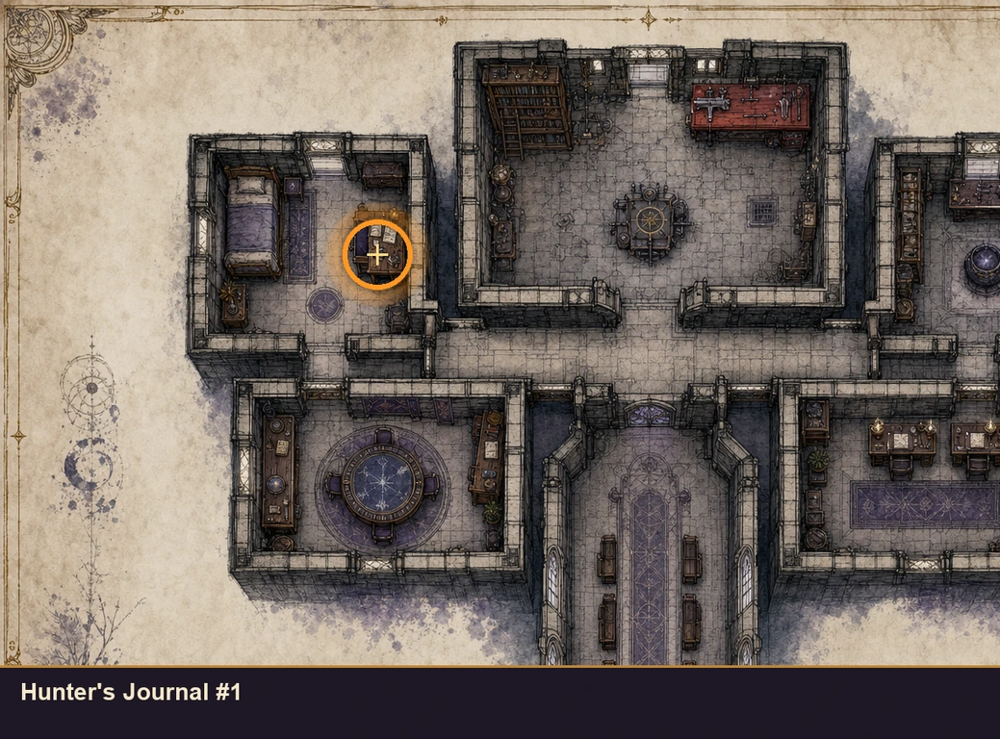
Tarot Card - The Star
Collectible
HintSearch the Abbey's furnished rooms and the short paths around the yard.
WhereOn the red workbench at the back-right side of the Forge.
Full detailThe target is on the red workbench at the back-right side of the Forge. Interact once and wait for the collection notification before leaving.
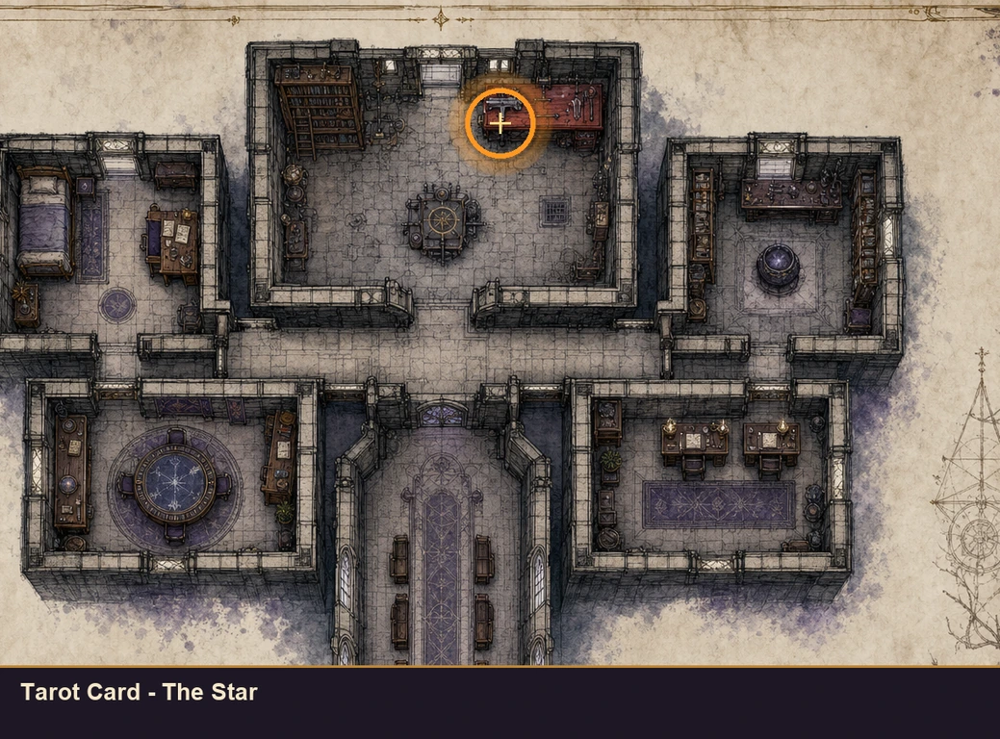
Tarot Card - The Moon
Collectible
HintSearch the Abbey's furnished rooms and the short paths around the yard.
WhereBeside the tall bookshelf at the back-left side of the Forge.
Full detailThe target is beside the tall bookshelf at the back-left side of the Forge. Interact once and wait for the collection notification before leaving.
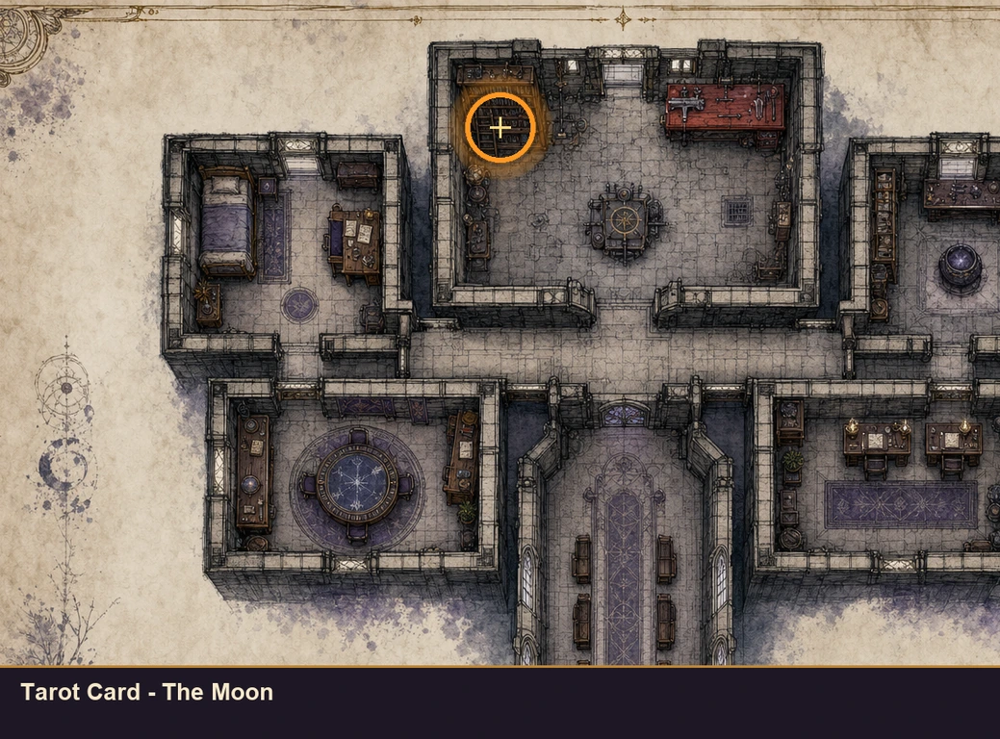
Caretaker's Journal #1
Page
HintSearch the Abbey's furnished rooms and the short paths around the yard.
WhereAt the far southern end of the chapel, beside the small pedestal.
Full detailThe target is at the far southern end of the chapel, beside the small pedestal. Interact once and wait for the collection notification before leaving.
Tarot Card - Strength
Collectible
HintSearch the Abbey's furnished rooms and the short paths around the yard.
WhereIn the chapel beside the same small pedestal as the nearby journal page.
Full detailThe target is in the chapel beside the same small pedestal as the nearby journal page. Interact once and wait for the collection notification before leaving.
Fire Rod
Collectible
HintSearch the Abbey's furnished rooms and the short paths around the yard.
WhereInside the chapel at the southern end of the Abbey.
Full detailThe target is inside the chapel at the southern end of the Abbey. Interact once and wait for the collection notification before leaving.
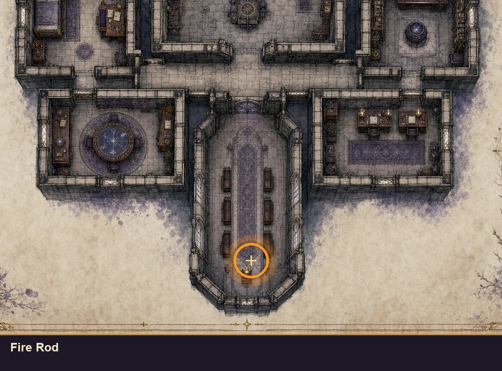
Water Rod
Collectible
HintSearch the Abbey's furnished rooms and the short paths around the yard.
WhereBeneath the small bridge beside the pool and Grotto.
Full detailThe target is beneath the small bridge beside the pool and Grotto. Interact once and wait for the collection notification before leaving.
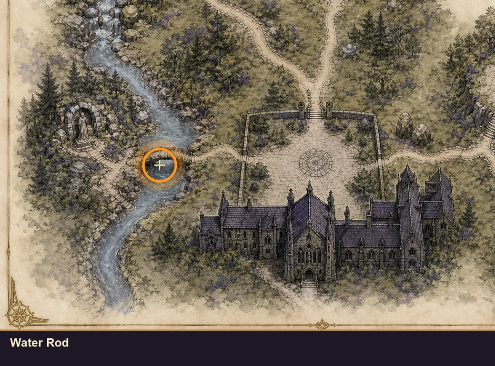
Masterwork - Heart's Ease
Collectible
HintSearch the Abbey's furnished rooms and the short paths around the yard.
WhereOn a river rock north of the first statue west of the Grotto.
Full detailThe target is on a river rock north of the first statue west of the Grotto. Interact once and wait for the collection notification before leaving.
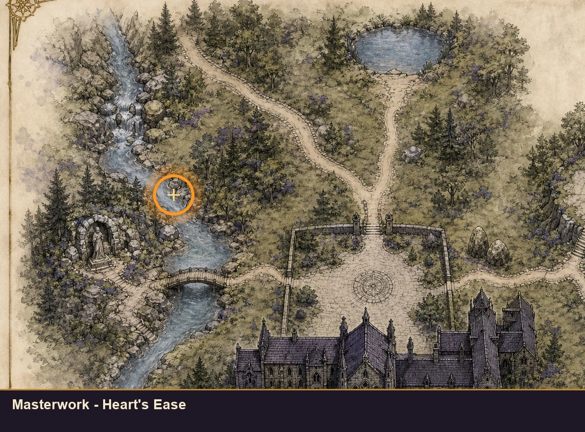
Masterwork - Allegory of the Transience of Life
Collectible
HintSearch the Abbey's furnished rooms and the short paths around the yard.
WhereOn the middle path northwest of the Yard.
Full detailThe target is on the middle path northwest of the Yard. Interact once and wait for the collection notification before leaving.
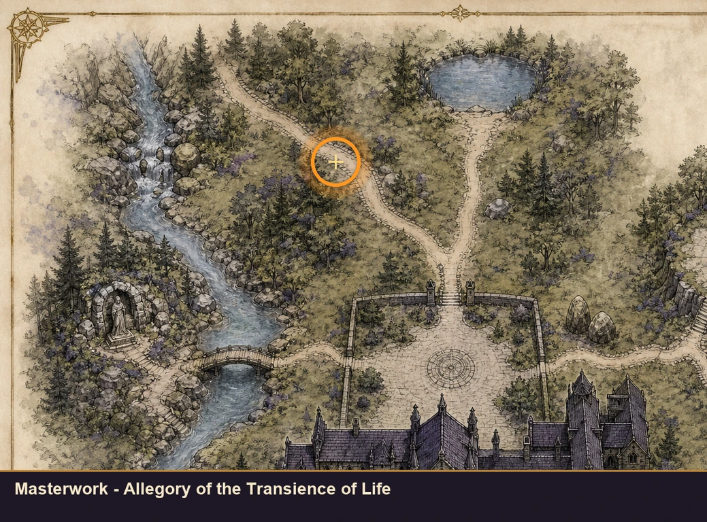
Tarot Card - The Sun
Collectible
HintSearch the Abbey's furnished rooms and the short paths around the yard.
WhereAt the pond beside the dead-end road north of the Abbey.
Full detailThe target is at the pond beside the dead-end road north of the Abbey. Interact once and wait for the collection notification before leaving.
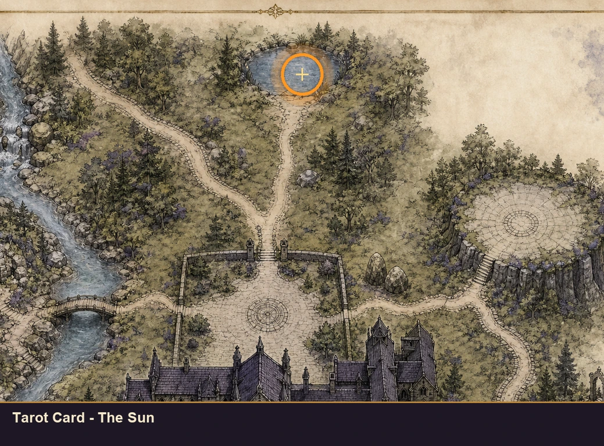
Masterwork - Evening in the Woods
Collectible
HintSearch the Abbey's furnished rooms and the short paths around the yard.
WhereOn the southern bank of the small pond north of the Abbey.
Full detailThe target is on the southern bank of the small pond north of the Abbey. Interact once and wait for the collection notification before leaving.
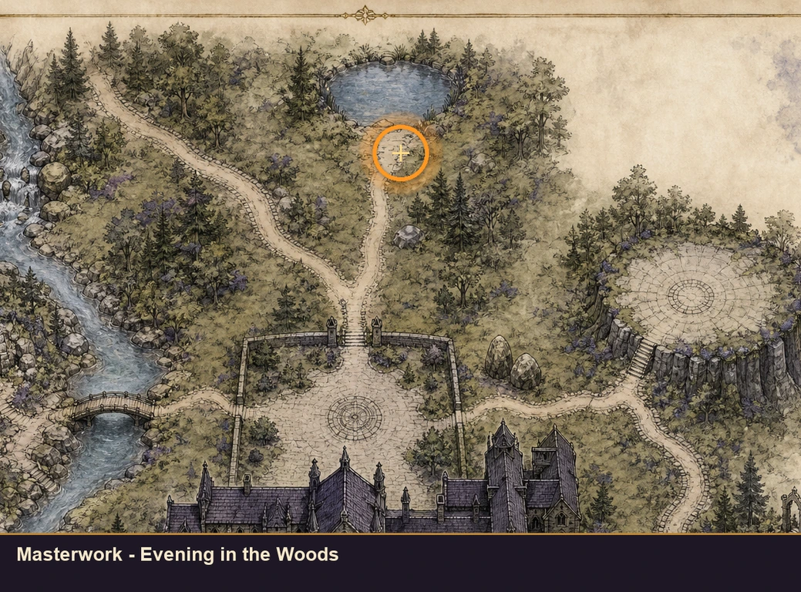
Masterwork - The Damsel and Orlando
Collectible
HintSearch the Abbey's furnished rooms and the short paths around the yard.
WhereBetween the southeastern cliff circle and Hunter's Folly.
Full detailThe target is between the southeastern cliff circle and Hunter's Folly. Interact once and wait for the collection notification before leaving.
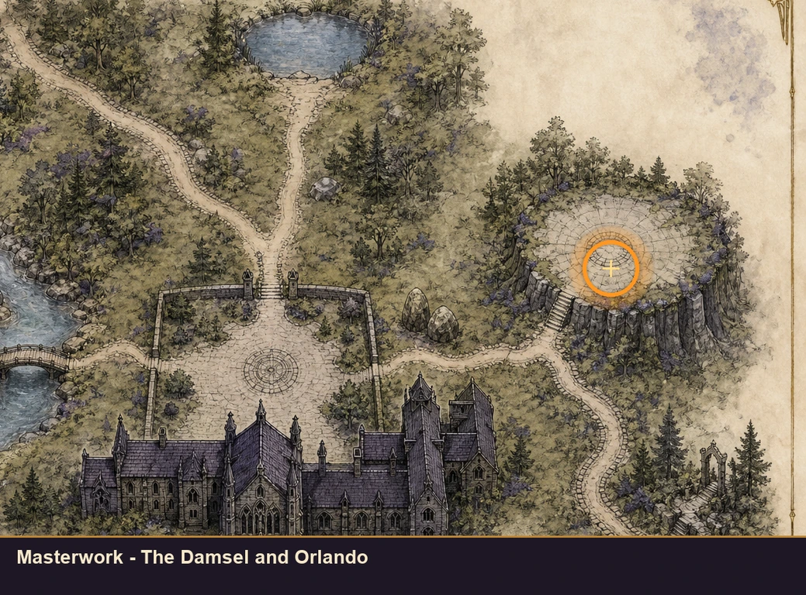
Tarot Card - Temperance
Collectible
HintSearch the Abbey's furnished rooms and the short paths around the yard.
WhereBetween two rocks east of the Abbey, roughly level with the Forge.
Full detailThe target is between two rocks east of the Abbey, roughly level with the Forge. Interact once and wait for the collection notification before leaving.
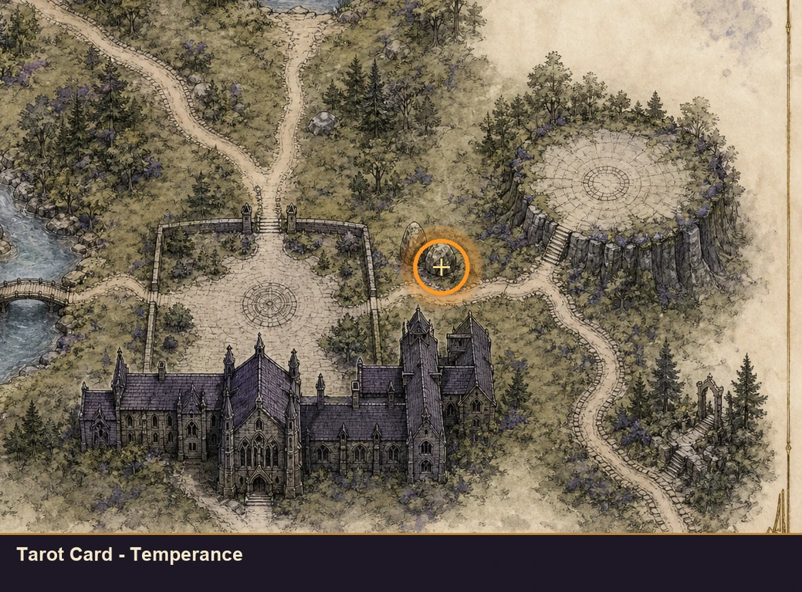
Caretaker's Journal #2
Page
HintSearch the Abbey's furnished rooms and the short paths around the yard.
WhereOn the side desk immediately east of the Mirror Table.
Full detailThe target is on the side desk immediately east of the Mirror Table. Interact once and wait for the collection notification before leaving.
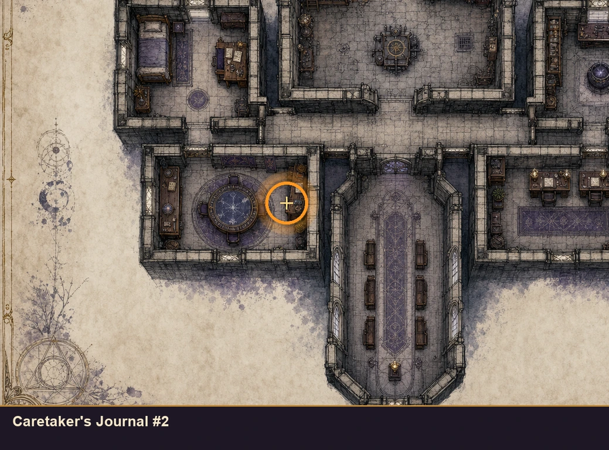
Caretaker's Journal #3
Page
HintSearch the Abbey's furnished rooms and the short paths around the yard.
WhereOn the rear side of the Mirror Table area.
Full detailThe target is on the rear side of the Mirror Table area. Interact once and wait for the collection notification before leaving.
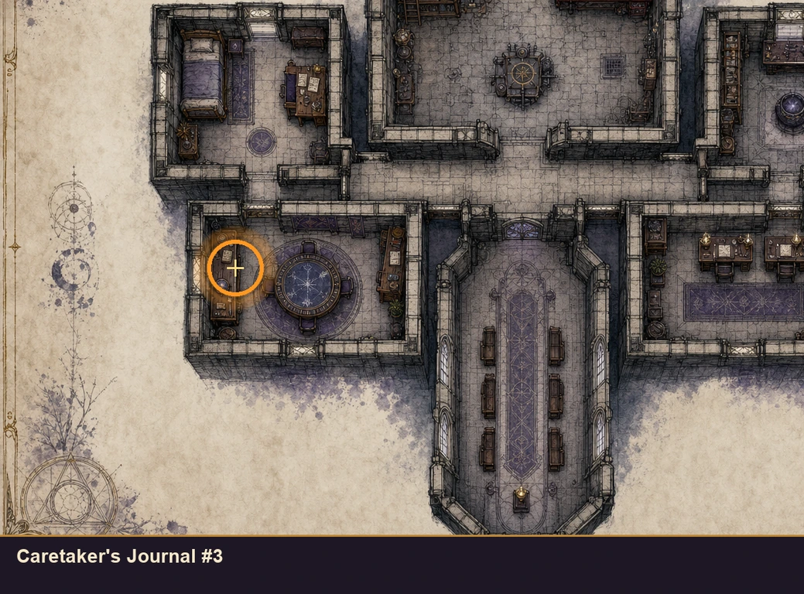
Caretaker's Journal #4
Page
HintSearch the Abbey's furnished rooms and the short paths around the yard.
WhereOn a surface at the back of the Library.
Full detailThe target is on a surface at the back of the Library. Interact once and wait for the collection notification before leaving.
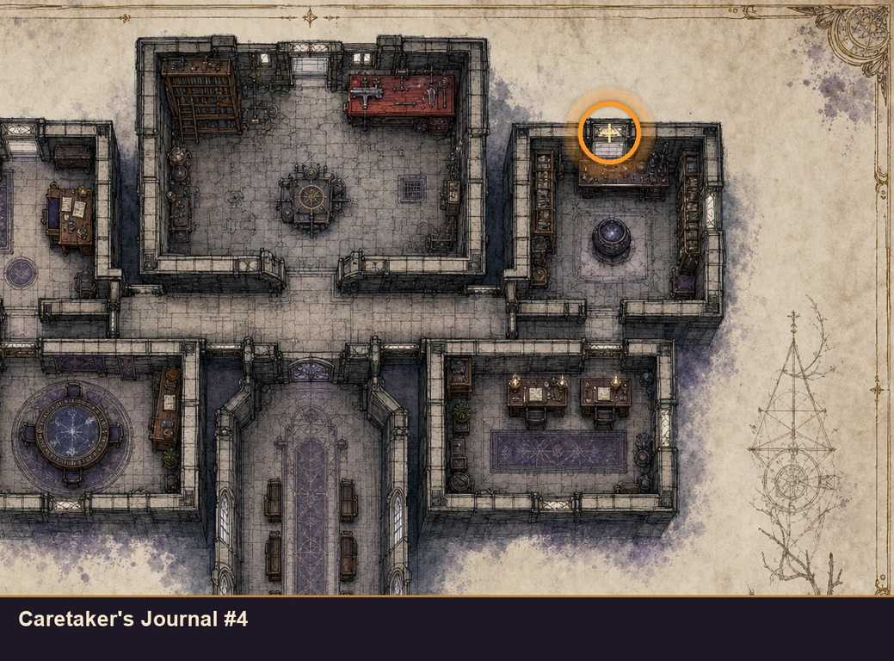
Caretaker's Journal #9
Page
HintSearch the Abbey's furnished rooms and the short paths around the yard.
WhereInside Caretaker's room after its door becomes available.
Full detailThe target is inside Caretaker's room after its door becomes available. Interact once and wait for the collection notification before leaving.
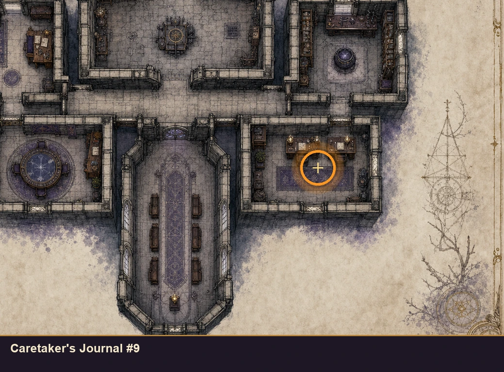
Caretaker's Journal #10
Page
HintSearch the Abbey's furnished rooms and the short paths around the yard.
WhereOn the main desk inside Caretaker's room.
Full detailThe target is on the main desk inside Caretaker's room. Interact once and wait for the collection notification before leaving.
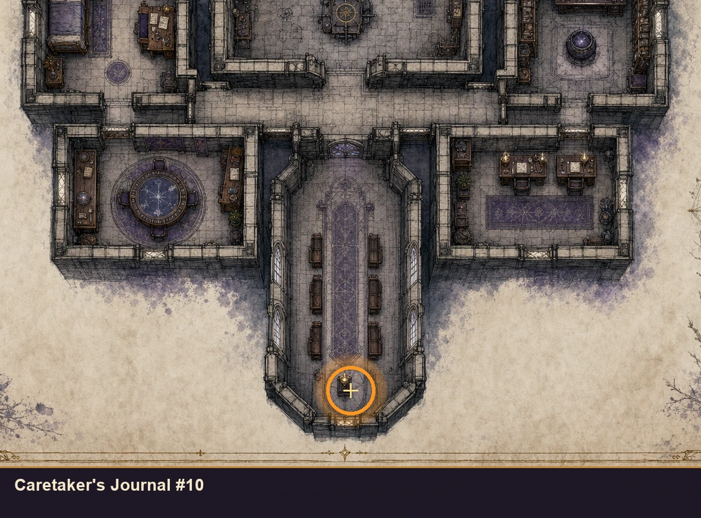
Caretaker's Journal #11
Page
HintSearch the Abbey's furnished rooms and the short paths around the yard.
WhereOn the adjacent desk to the right inside Caretaker's room.
Full detailThe target is on the adjacent desk to the right inside Caretaker's room. Interact once and wait for the collection notification before leaving.
Southwestern Grounds
You are here when: The wooded paths west of the Abbey leading to a stone altar, river, grotto, and cliff edge.
Open-marked barriers expose several side paths; sweep each branch before moving on.
Apothecary Vessel #1
Collectible
HintSweep the altar-side woods and every branch along the western river.
WhereOn the small altar immediately right after passing the western Open barrier.
Full detailTo reach it, use open on the western stone barriers. The target is on the small altar immediately right after passing the western Open barrier. Interact once and wait for the collection notification before leaving.
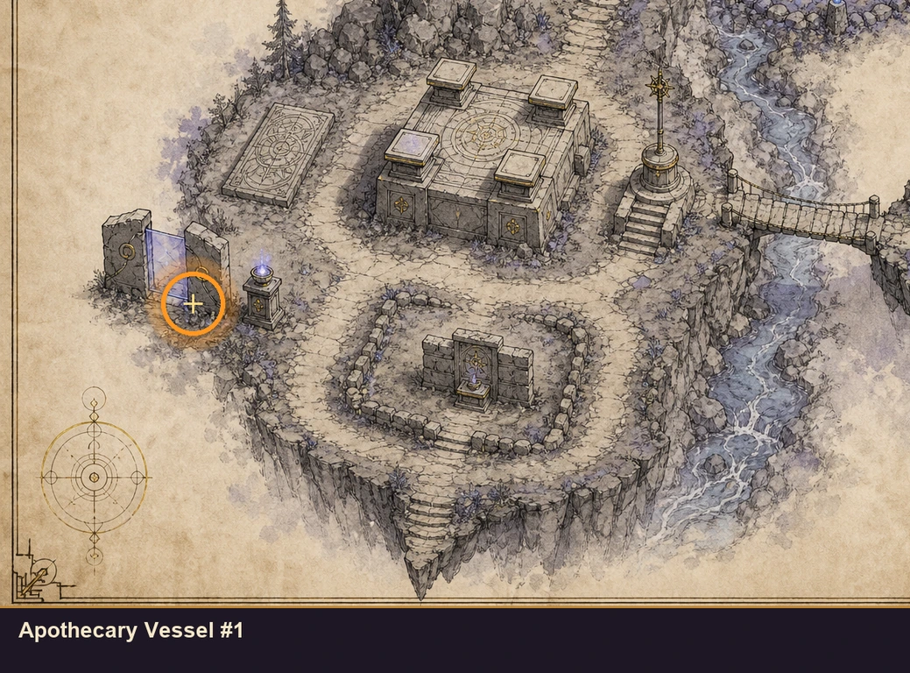
Tarot Card - Justice
Collectible
HintSweep the altar-side woods and every branch along the western river.
WhereBehind the large stone altar southwest of the Abbey.
Full detailThe target is behind the large stone altar southwest of the Abbey. Interact once and wait for the collection notification before leaving.
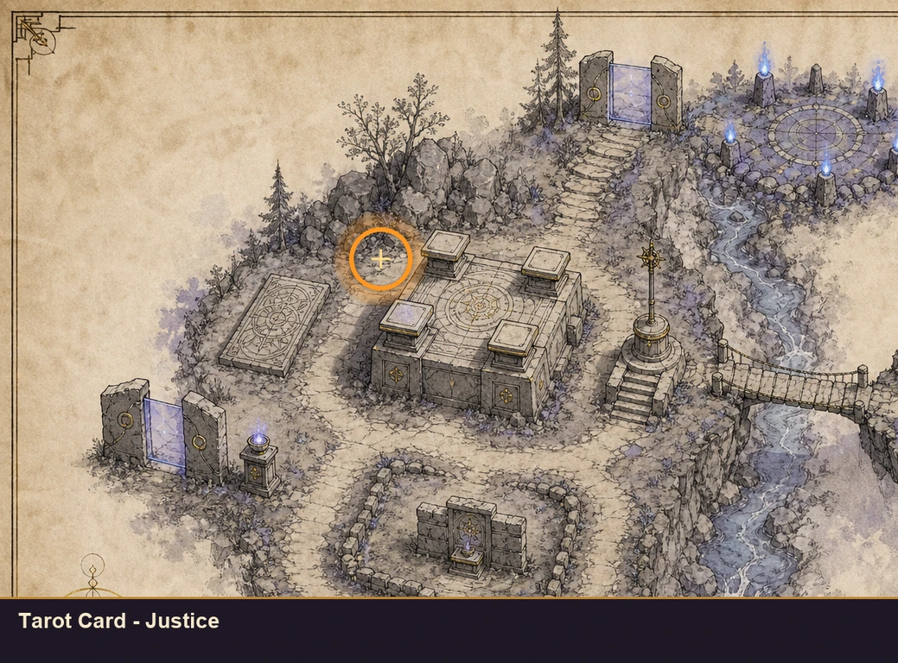
Tarot Card - Death
Collectible
HintSweep the altar-side woods and every branch along the western river.
WhereOn a rock pile at the southern cliff point behind the large altar.
Full detailThe target is on a rock pile at the southern cliff point behind the large altar. Interact once and wait for the collection notification before leaving.
Masterwork - Moonlight on Mount Lafayette, New Hampshire
Collectible
HintSweep the altar-side woods and every branch along the western river.
WhereLeaning against the miniature altar wall on the square-shaped southern path.
Full detailThe target is leaning against the miniature altar wall on the square-shaped southern path. Interact once and wait for the collection notification before leaving.
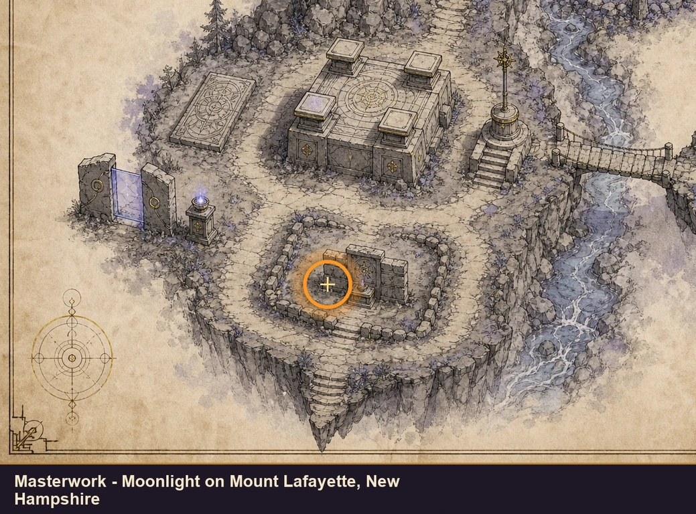
Hunter's Journal #2
Page
HintSweep the altar-side woods and every branch along the western river.
WhereBeside the miniature altar on the square-shaped southern path.
Full detailThe target is beside the miniature altar on the square-shaped southern path. Interact once and wait for the collection notification before leaving.
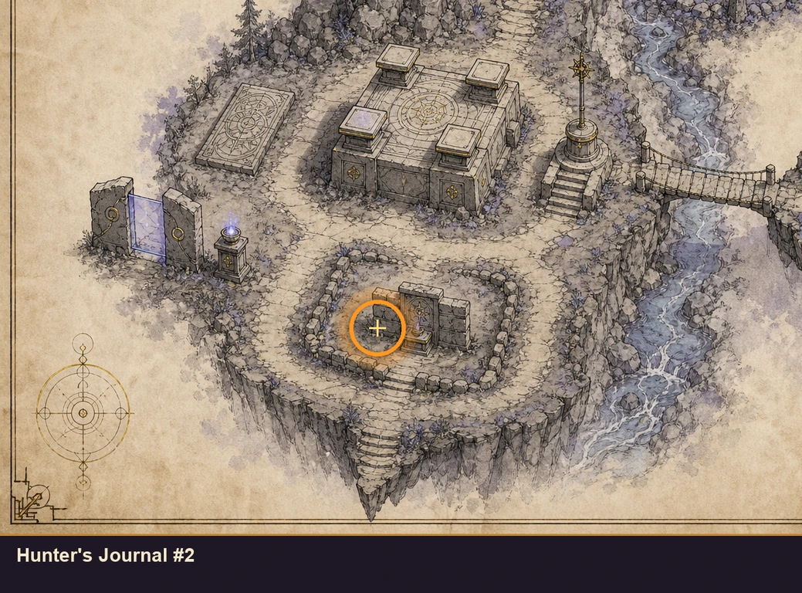
Wanda's Journal #2
Page
HintSweep the altar-side woods and every branch along the western river.
WhereOn top of that miniature altar.
Full detailThe target is on top of that miniature altar. Interact once and wait for the collection notification before leaving.
Tarot Card - Wheel of Fortune
Collectible
HintSweep the altar-side woods and every branch along the western river.
WhereOn an engraved stone slab just west of the large altar.
Full detailThe target is on an engraved stone slab just west of the large altar. Interact once and wait for the collection notification before leaving.
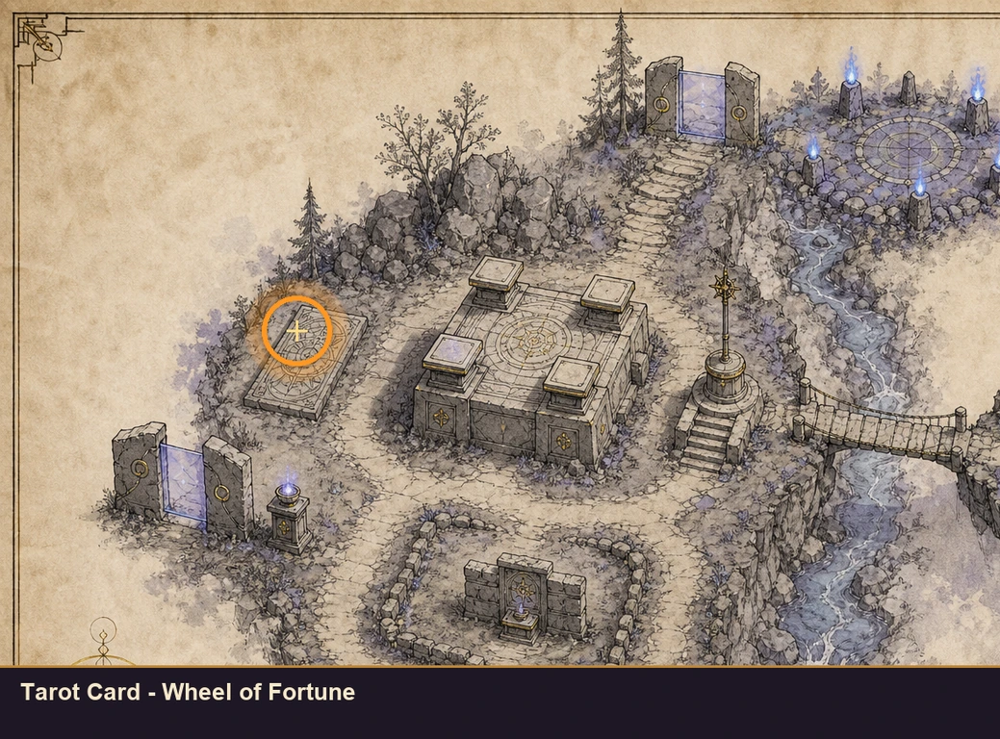
Apothecary Vessel #2
Collectible
HintSweep the altar-side woods and every branch along the western river.
WhereLeft of the faery ring reached through the northern Open barrier near the altar.
Full detailThe target is left of the faery ring reached through the northern Open barrier near the altar. Interact once and wait for the collection notification before leaving.
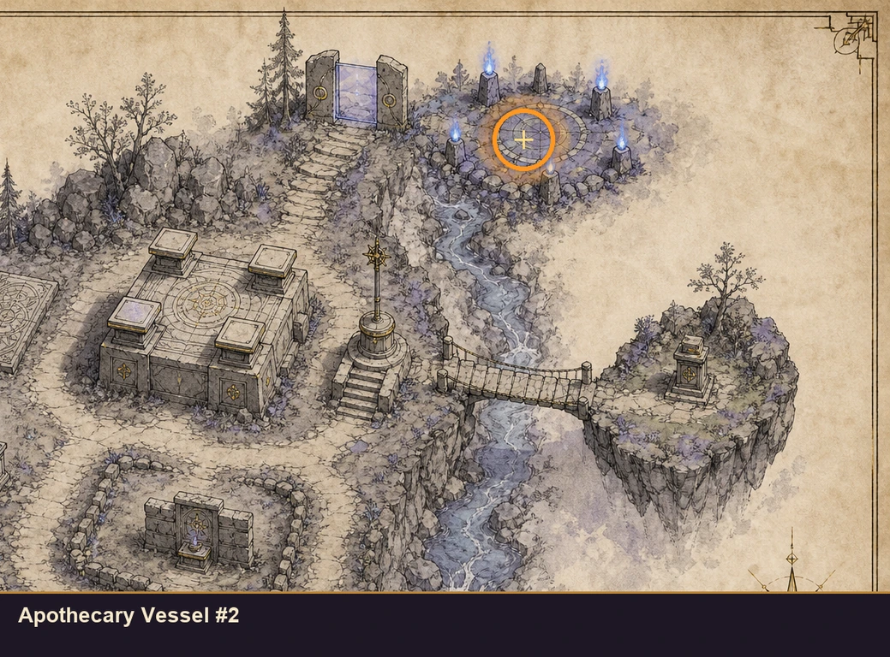
Tarot Card - The Hermit
Collectible
HintSweep the altar-side woods and every branch along the western river.
WhereBeside the Air Rod pedestal west of the Whispering Wood marker.
Full detailThe target is beside the Air Rod pedestal west of the Whispering Wood marker. Interact once and wait for the collection notification before leaving.
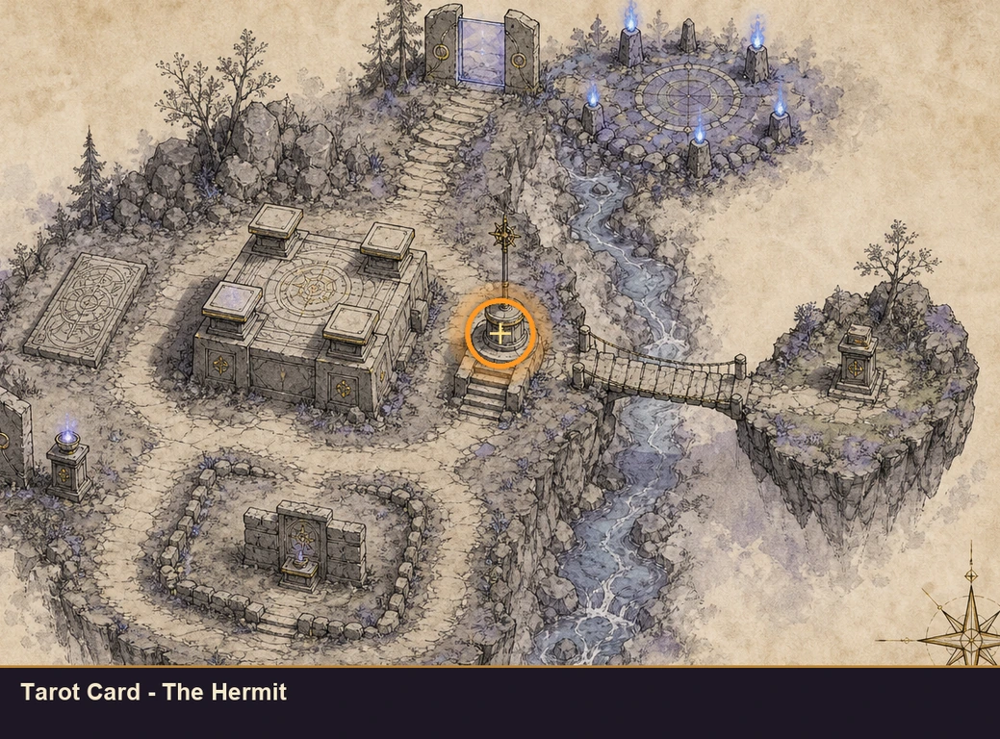
Air Rod
Collectible
HintSweep the altar-side woods and every branch along the western river.
WhereOn the raised pedestal reached by the short stairs beside the large stone altar.
Full detailThe target is on the raised pedestal reached by the short stairs beside the large stone altar. Interact once and wait for the collection notification before leaving.
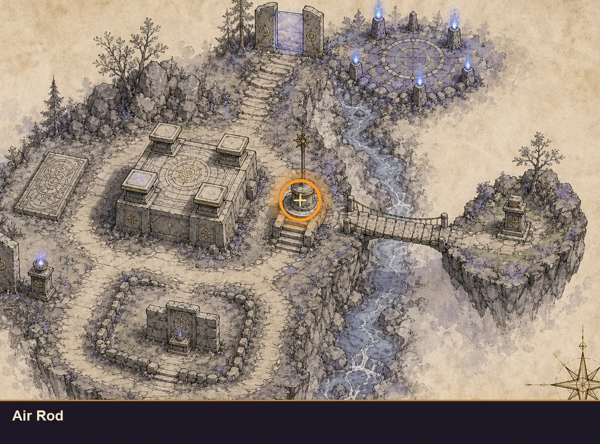
Dreamer's Descent and Stone Terrace
You are here when: The eastern woods with an overturned cart, a small fort, broken structures, and standing stones.
Follow both sides of the branching roads and inspect caves, ruins, and bridge undersides.
Earth Rod
Collectible
HintCheck the roads, caves, and ruined structures east of the Abbey.
WhereInside the crypt at Hunter's Folly, behind the Open-marked door.
Full detailTo reach it, use open on marked doors. The target is inside the crypt at Hunter's Folly, behind the Open-marked door. Interact once and wait for the collection notification before leaving.
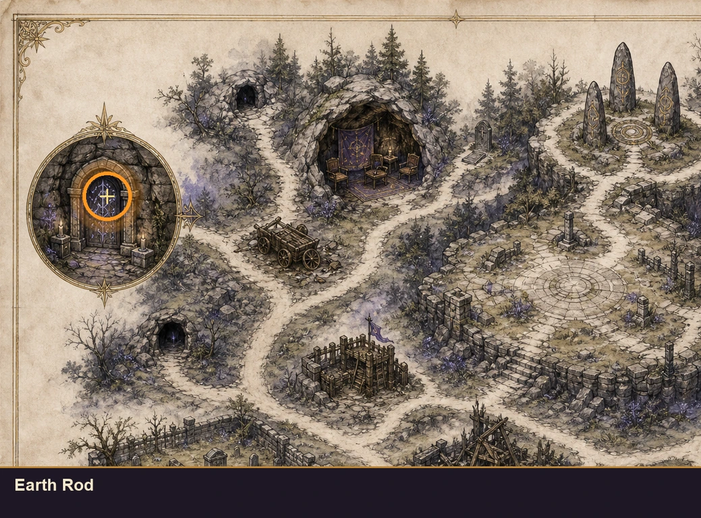
Hunter's Journal #3
Page
HintCheck the roads, caves, and ruined structures east of the Abbey.
WhereBeside the overturned cart on the first right-hand branch beyond an Open barrier east of the Abbey.
Full detailTo reach it, use open on marked doors. The target is beside the overturned cart on the first right-hand branch beyond an Open barrier east of the Abbey. Interact once and wait for the collection notification before leaving.
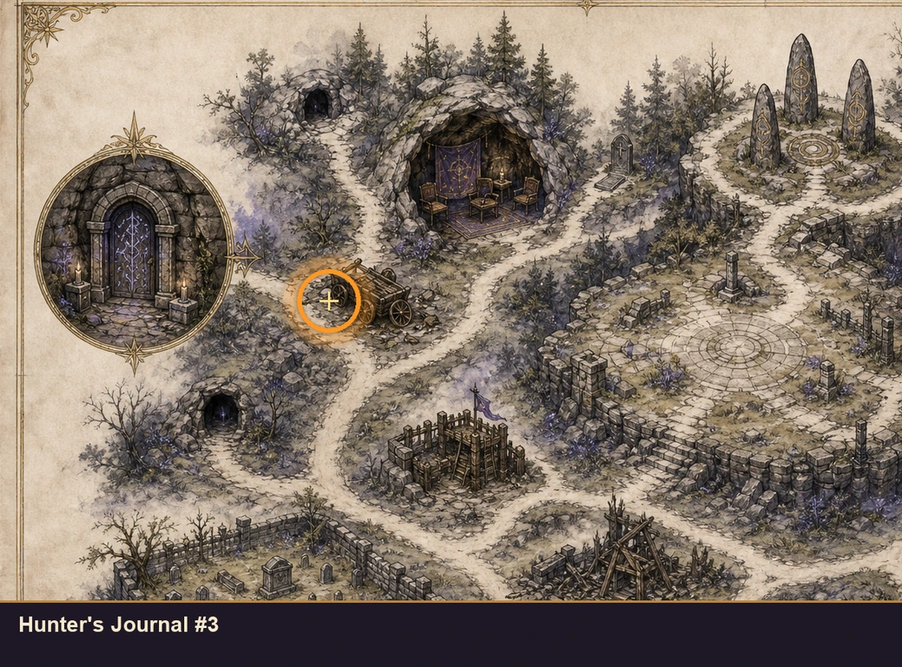
Wanda's Journal #3
Page
HintCheck the roads, caves, and ruined structures east of the Abbey.
WhereOn the ground at the Dreamer's Descent map marker.
Full detailThe target is on the ground at the Dreamer's Descent map marker. Interact once and wait for the collection notification before leaving.
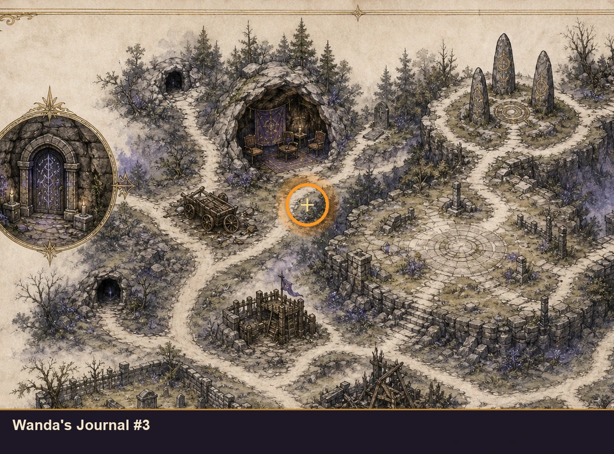
Hunter's Journal #4
Page
HintCheck the roads, caves, and ruined structures east of the Abbey.
WhereOn the same road, a short distance left of the Dreamer's Descent marker.
Full detailThe target is on the same road, a short distance left of the Dreamer's Descent marker. Interact once and wait for the collection notification before leaving.
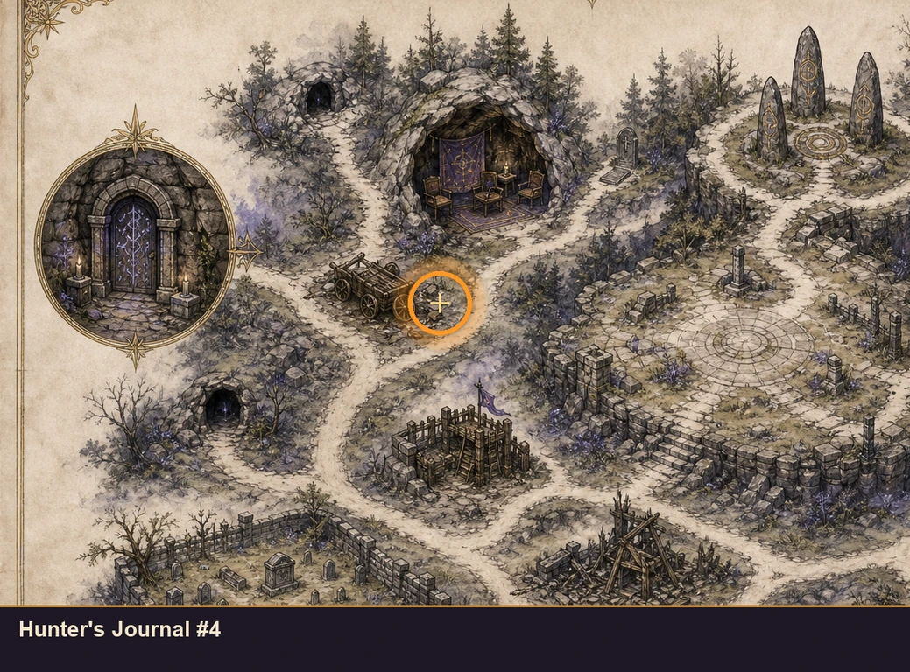
Hiram Shaw's Journal #1
Page
HintCheck the roads, caves, and ruined structures east of the Abbey.
WhereAt the back of the cave beside the tapestry alcove in Dreamer's Descent.
Full detailThe target is at the back of the cave beside the tapestry alcove in Dreamer's Descent. Interact once and wait for the collection notification before leaving.
Hunter's Journal #5
Page
HintCheck the roads, caves, and ruined structures east of the Abbey.
WhereAmong broken timber near the western end of Stone Terrace's southern road.
Full detailThe target is among broken timber near the western end of Stone Terrace's southern road. Interact once and wait for the collection notification before leaving.
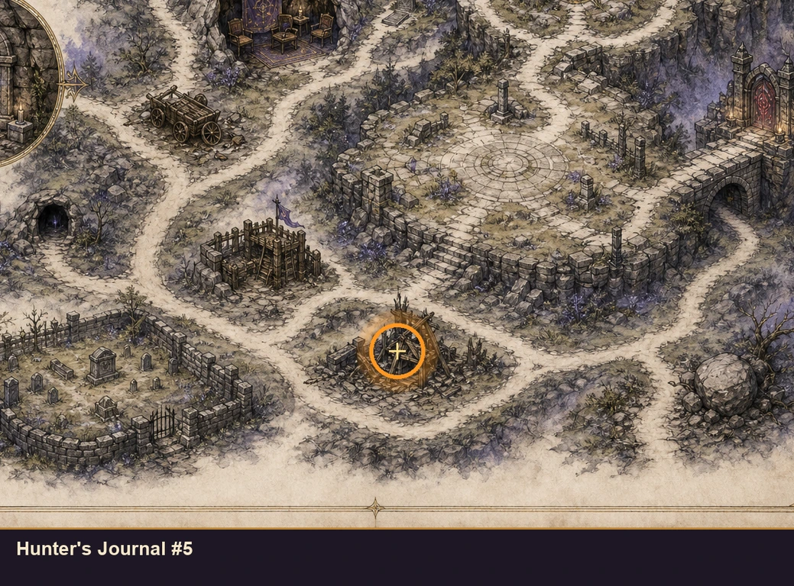
Masterwork - The Return of the Cattle
Collectible
HintCheck the roads, caves, and ruined structures east of the Abbey.
WhereOn the opposite side of the ruined structure beside Hunter's Journal #5.
Full detailThe target is on the opposite side of the ruined structure beside Hunter's Journal #5. Interact once and wait for the collection notification before leaving.
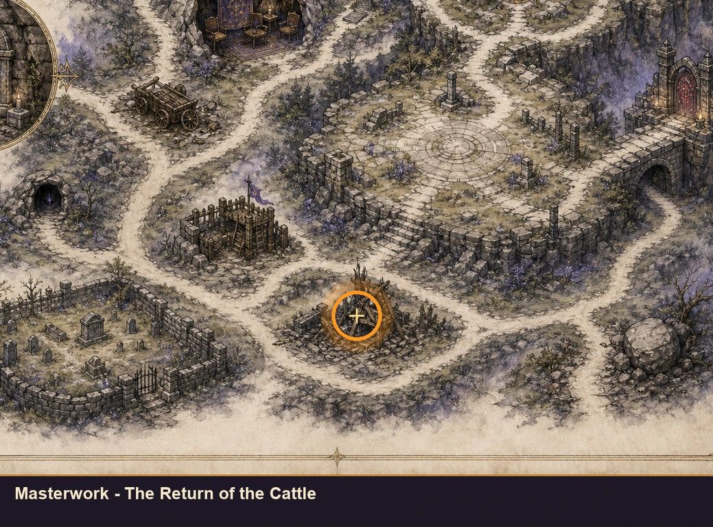
Tarot Card - The High Priestess
Collectible
HintCheck the roads, caves, and ruined structures east of the Abbey.
WhereOn a rock northeast of the Standing Stones, before the road fork.
Full detailThe target is on a rock northeast of the Standing Stones, before the road fork. Interact once and wait for the collection notification before leaving.
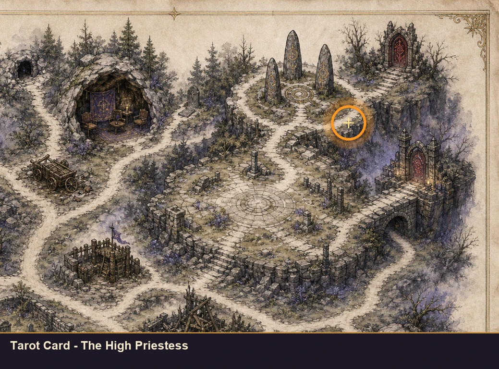
Hunter's Journal #6
Page
HintCheck the roads, caves, and ruined structures east of the Abbey.
WhereOn the ground beyond the underside of the bridge left of the eastern Blood Gate.
Full detailThe target is on the ground beyond the underside of the bridge left of the eastern Blood Gate. Interact once and wait for the collection notification before leaving.
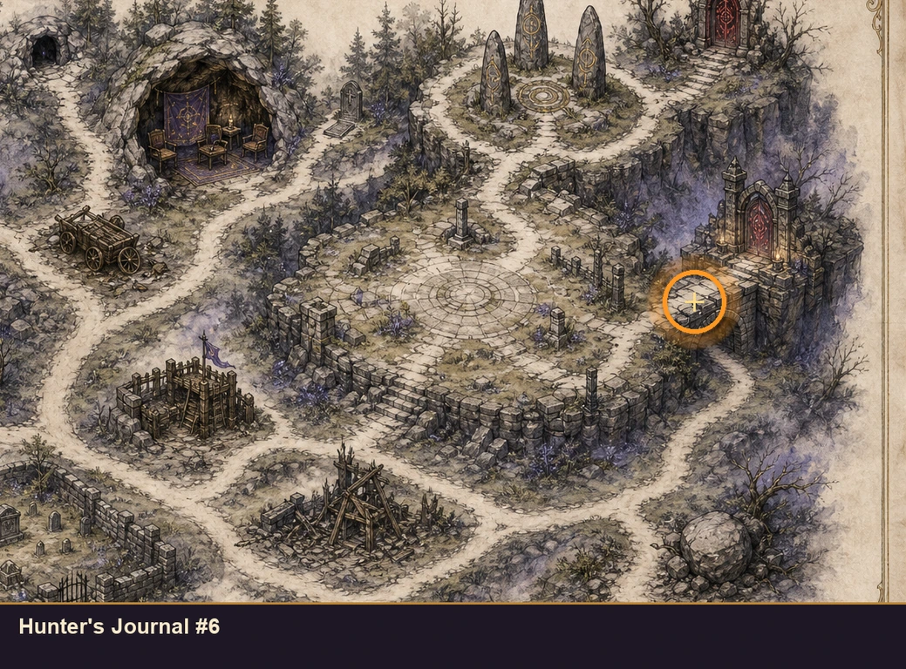
Hiram Shaw's Journal #2
Page
HintCheck the roads, caves, and ruined structures east of the Abbey.
WhereInside the cave on the southwest-curving road near the second old statue.
Full detailThe target is inside the cave on the southwest-curving road near the second old statue. Interact once and wait for the collection notification before leaving.
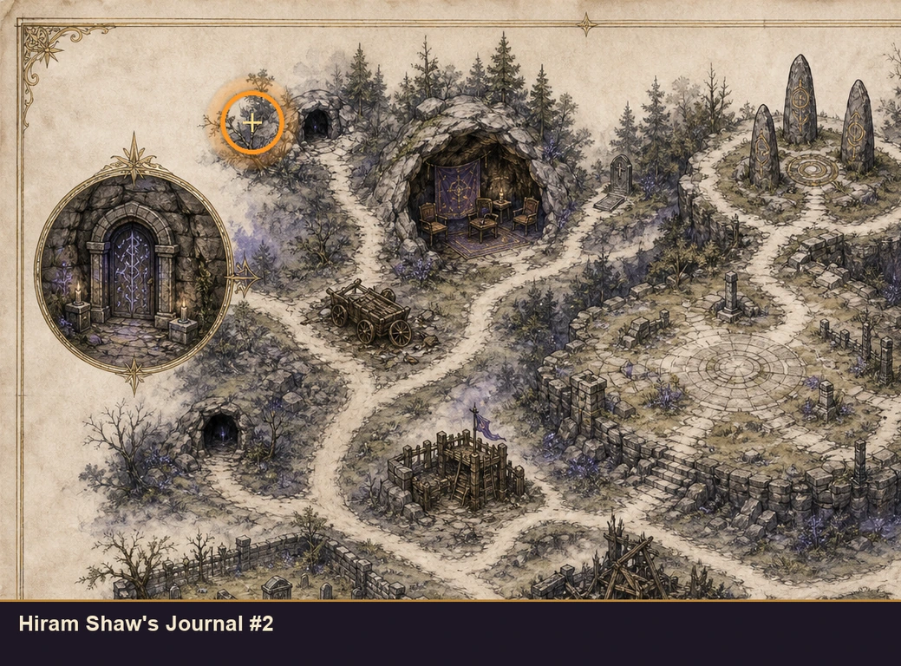
Wanda's Journal #7
Page
HintCheck the roads, caves, and ruined structures east of the Abbey.
WhereHalfway along the left fork from the Stone Terrace fast-travel marker.
Full detailThe target is halfway along the left fork from the Stone Terrace fast-travel marker. Interact once and wait for the collection notification before leaving.
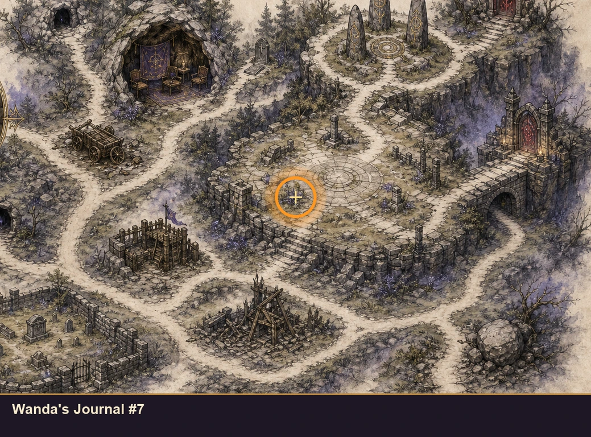
Tarot Card - The Magician
Collectible
HintCheck the roads, caves, and ruined structures east of the Abbey.
WhereOn a table in the small graveyard behind the southern Break wall in Dreamer's Descent.
Full detailTo reach it, learn break. The target is on a table in the small graveyard behind the southern Break wall in Dreamer's Descent. Interact once and wait for the collection notification before leaving.
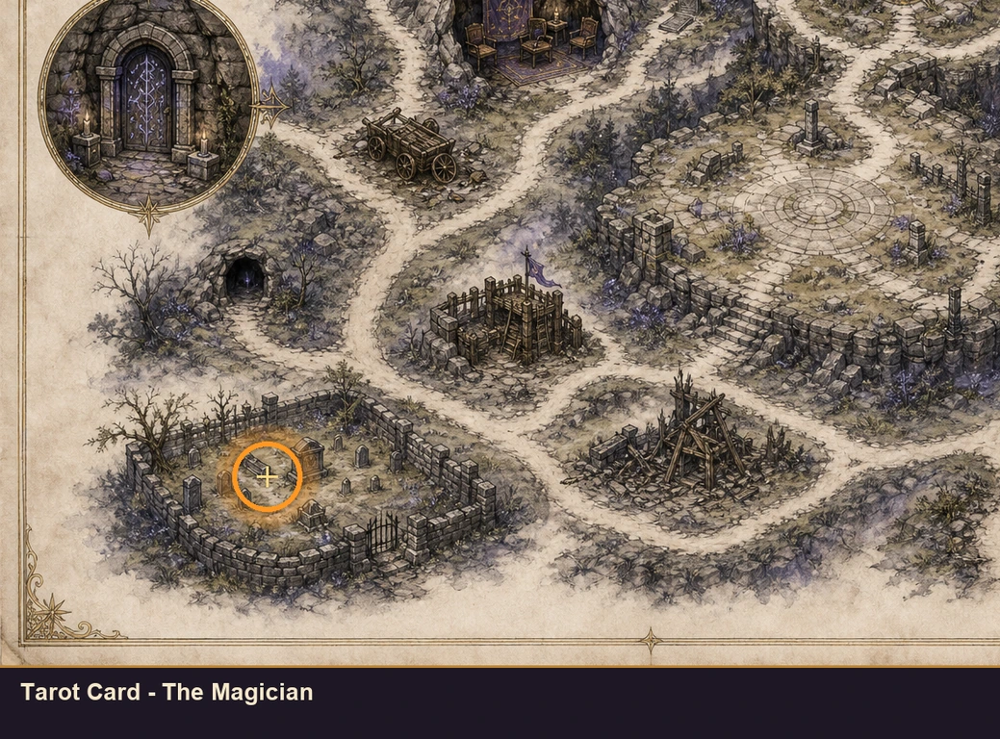
Tarot Card - The Tower
Collectible
HintCheck the roads, caves, and ruined structures east of the Abbey.
WhereOn a desk behind the large breakable rock at the southeastern dead end of Dreamer's Descent.
Full detailTo reach it, learn break. The target is on a desk behind the large breakable rock at the southeastern dead end of Dreamer's Descent. Interact once and wait for the collection notification before leaving.
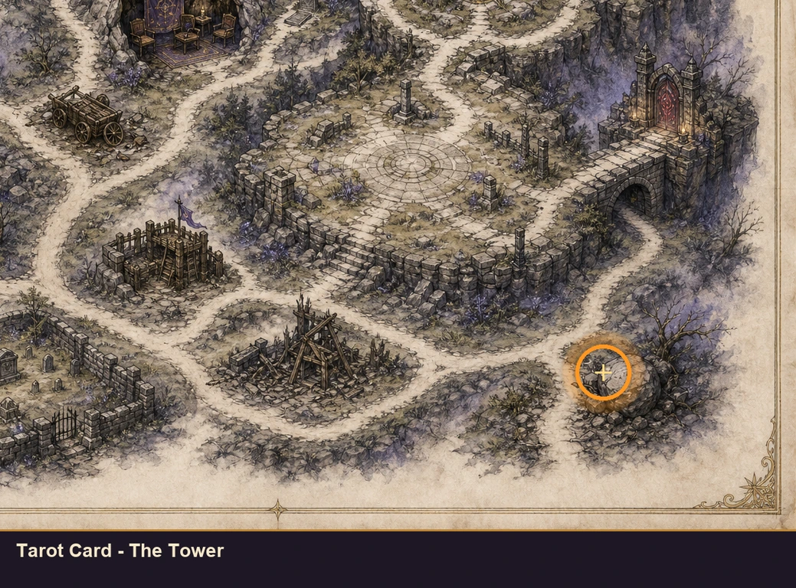
Valley of the Winds and Church Grounds
You are here when: The northern valley containing a graveyard, old church, wooden walkways, and narrow riverside paths.
Reveal-marked bridges and the church study open most of this sweep.
Wanda's Journal #4
Page
HintSearch the old church, graveyard, bridges, and valley side paths.
WhereOn the right-hand rock after the valley trial doorway and before the Reveal bridge.
Full detailTo reach it, learn reveal and use open inside the church. The target is on the right-hand rock after the valley trial doorway and before the Reveal bridge. Interact once and wait for the collection notification before leaving.
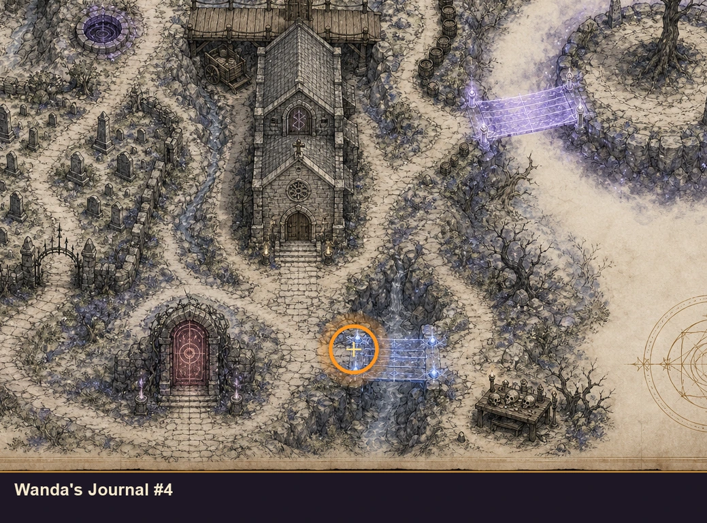
Interrogation Record #1
Record
HintSearch the old church, graveyard, bridges, and valley side paths.
WhereOn the stone table in the clearing at the left fork of the northern path.
Full detailTo reach it, learn reveal. The target is on the stone table in the clearing at the left fork of the northern path. Interact once and wait for the collection notification before leaving.
Masterwork - The Glorification of the Royal Hungarian Saints
Collectible
HintSearch the old church, graveyard, bridges, and valley side paths.
WhereBeside a cart on the right before the church entrance.
Full detailTo reach it, learn reveal and use open inside the church. The target is beside a cart on the right before the church entrance. Interact once and wait for the collection notification before leaving.
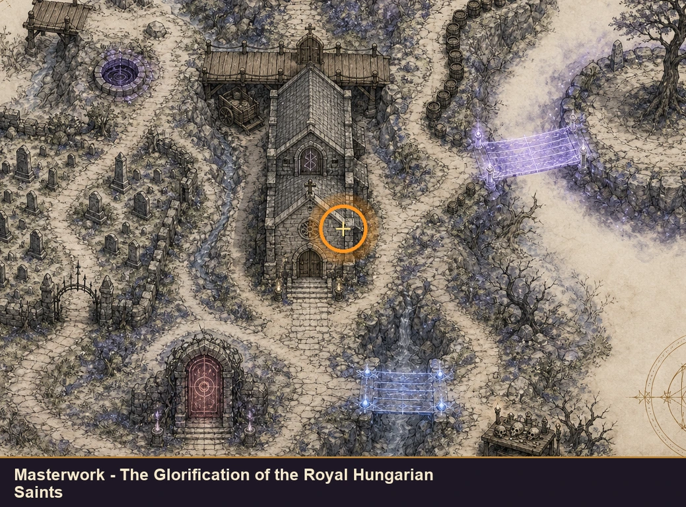
Hiram Shaw's Journal #3
Page
HintSearch the old church, graveyard, bridges, and valley side paths.
WhereOn one desk in the church study behind the first Open door.
Full detailTo reach it, learn reveal and use open inside the church. The target is on one desk in the church study behind the first Open door. Interact once and wait for the collection notification before leaving.
Hiram Shaw's Journal #4
Page
HintSearch the old church, graveyard, bridges, and valley side paths.
WhereOn the other desk in the same church study.
Full detailTo reach it, learn reveal and use open inside the church. The target is on the other desk in the same church study. Interact once and wait for the collection notification before leaving.
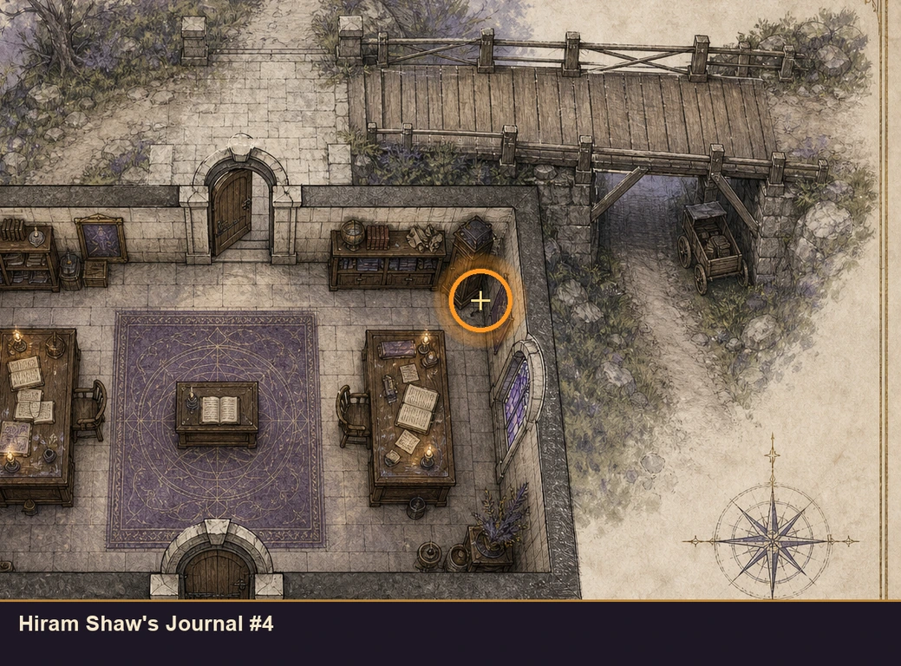
Hunter's Journal #7
Page
HintSearch the old church, graveyard, bridges, and valley side paths.
WhereOutside on the left after opening the rear study door.
Full detailTo reach it, learn reveal. The target is outside on the left after opening the rear study door. Interact once and wait for the collection notification before leaving.
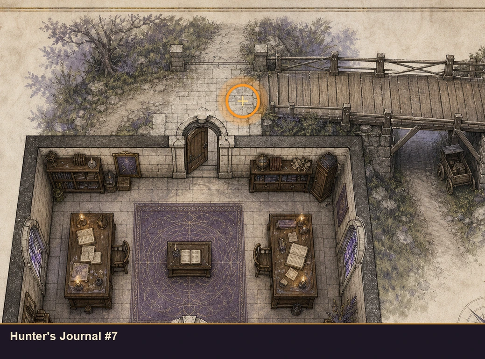
Hiram Shaw's Journal #5
Page
HintSearch the old church, graveyard, bridges, and valley side paths.
WhereUnder the wooden bridge behind the church, on its right side.
Full detailTo reach it, learn reveal and use open inside the church. The target is under the wooden bridge behind the church, on its right side. Interact once and wait for the collection notification before leaving.
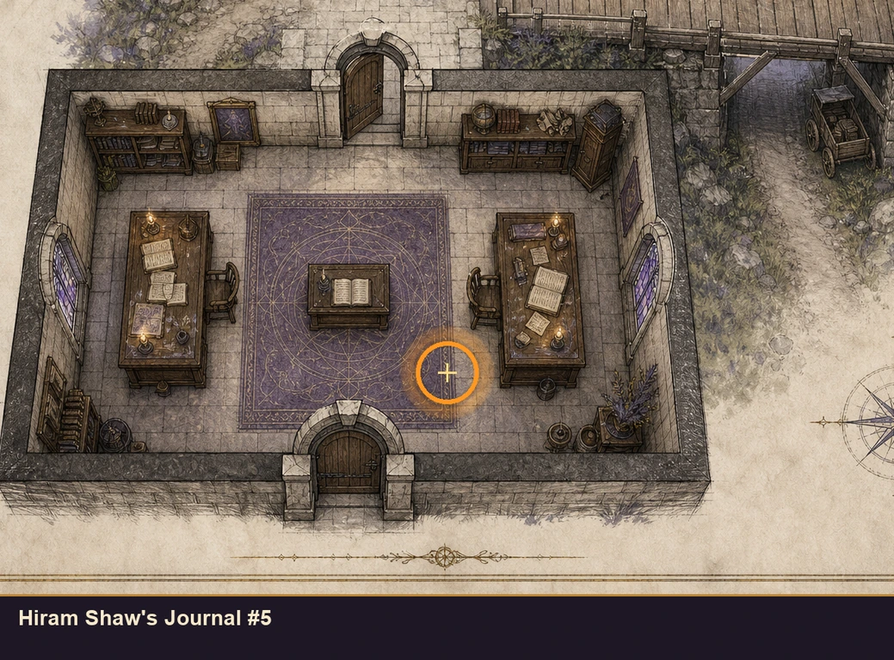
Tarot Card - The Hierophant
Collectible
HintSearch the old church, graveyard, bridges, and valley side paths.
WhereInside the cart under the wooden bridge behind the church.
Full detailTo reach it, learn reveal and use open inside the church. The target is inside the cart under the wooden bridge behind the church. Interact once and wait for the collection notification before leaving.
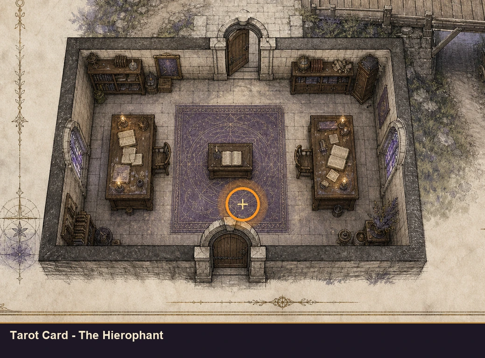
Wanda's Journal #5
Page
HintSearch the old church, graveyard, bridges, and valley side paths.
WhereOn a barrel along the right-hand path north of the church front.
Full detailTo reach it, learn reveal and use open inside the church. The target is on a barrel along the right-hand path north of the church front. Interact once and wait for the collection notification before leaving.
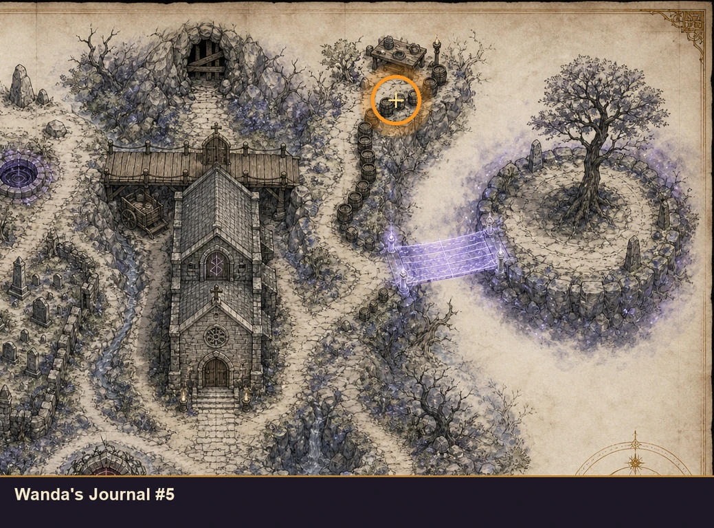
Masterwork - The Weeders
Collectible
HintSearch the old church, graveyard, bridges, and valley side paths.
WhereOn the table at the far end of the path north of Wanda's Journal #5.
Full detailTo reach it, learn reveal. The target is on the table at the far end of the path north of Wanda's Journal #5. Interact once and wait for the collection notification before leaving.
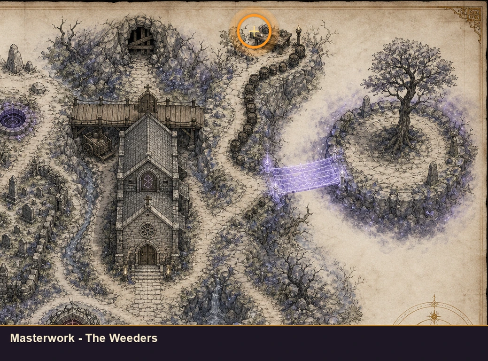
Interrogation Record #2
Record
HintSearch the old church, graveyard, bridges, and valley side paths.
WhereInside the circular clearing around a tree, reached from the first left fork beyond the eastern Reveal bridge.
Full detailTo reach it, learn reveal and use open inside the church. The target is inside the circular clearing around a tree, reached from the first left fork beyond the eastern Reveal bridge. Interact once and wait for the collection notification before leaving.
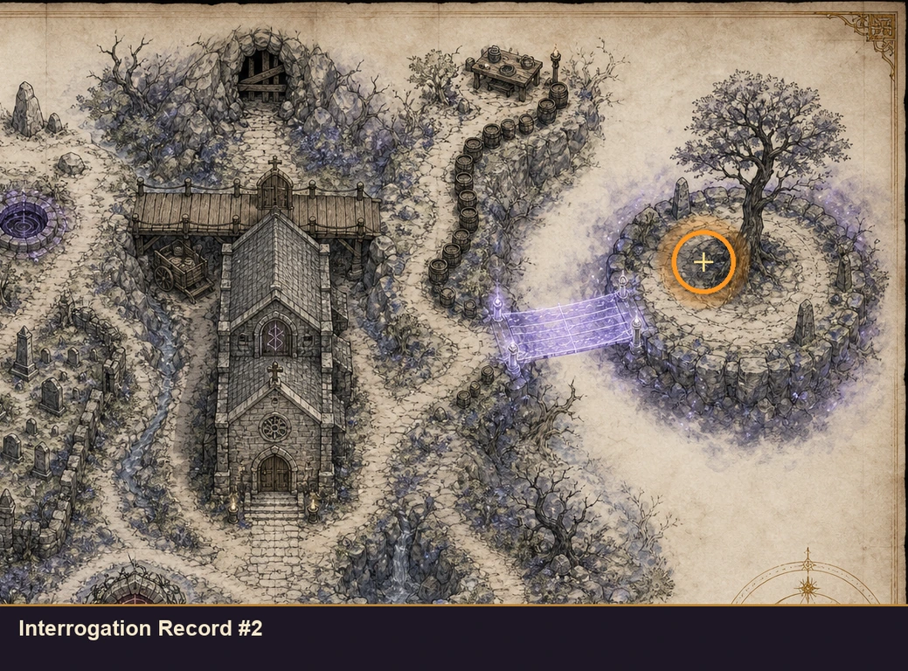
Tarot Card - The Empress
Collectible
HintSearch the old church, graveyard, bridges, and valley side paths.
WhereBehind a gravestone on the left side of the old cemetery.
Full detailTo reach it, learn reveal. The target is behind a gravestone on the left side of the old cemetery. Interact once and wait for the collection notification before leaving.
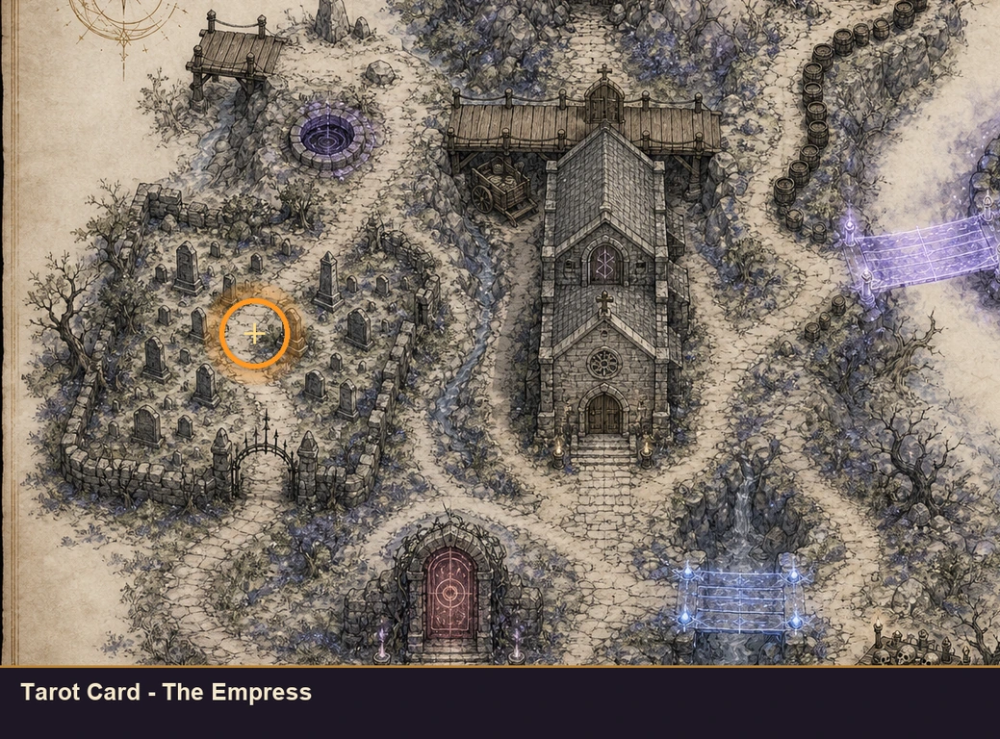
Hunter's Journal #8
Page
HintSearch the old church, graveyard, bridges, and valley side paths.
WhereOn the ground just before the bridge at the northern dead end beyond the cemetery.
Full detailTo reach it, learn reveal. The target is on the ground just before the bridge at the northern dead end beyond the cemetery. Interact once and wait for the collection notification before leaving.
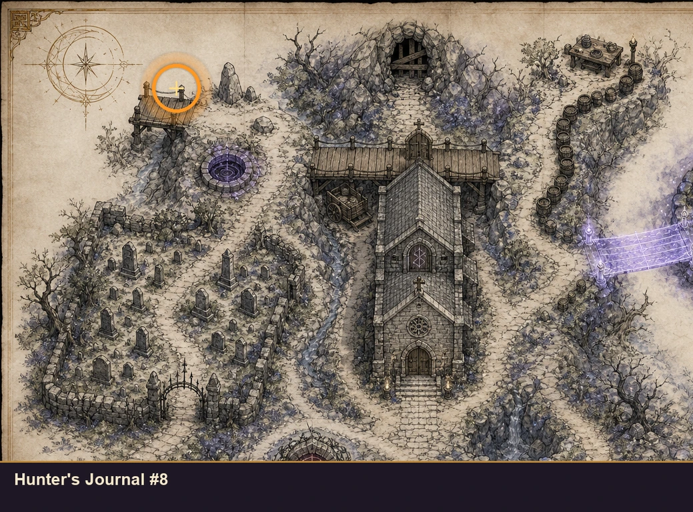
Wanda's Journal #6
Page
HintSearch the old church, graveyard, bridges, and valley side paths.
WhereOn rocks south of the Haven beside Hunter's Journal #8.
Full detailTo reach it, learn reveal. The target is on rocks south of the Haven beside Hunter's Journal #8. Interact once and wait for the collection notification before leaving.
Tarot Card - The Emperor
Collectible
HintSearch the old church, graveyard, bridges, and valley side paths.
WhereOn the left side of the skull-covered table south of Everflowing Glade.
Full detailTo reach it, learn reveal. The target is on the left side of the skull-covered table south of Everflowing Glade. Interact once and wait for the collection notification before leaving.
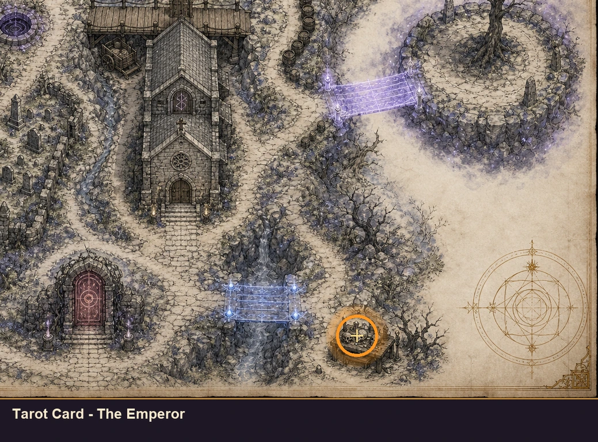
Hiram Shaw's Journal #6
Page
HintSearch the old church, graveyard, bridges, and valley side paths.
WhereAt the rear of the cave beyond the church's blocked passage.
Full detailTo reach it, learn reveal and use open inside the church. The target is at the rear of the cave beyond the church's blocked passage. Interact once and wait for the collection notification before leaving.
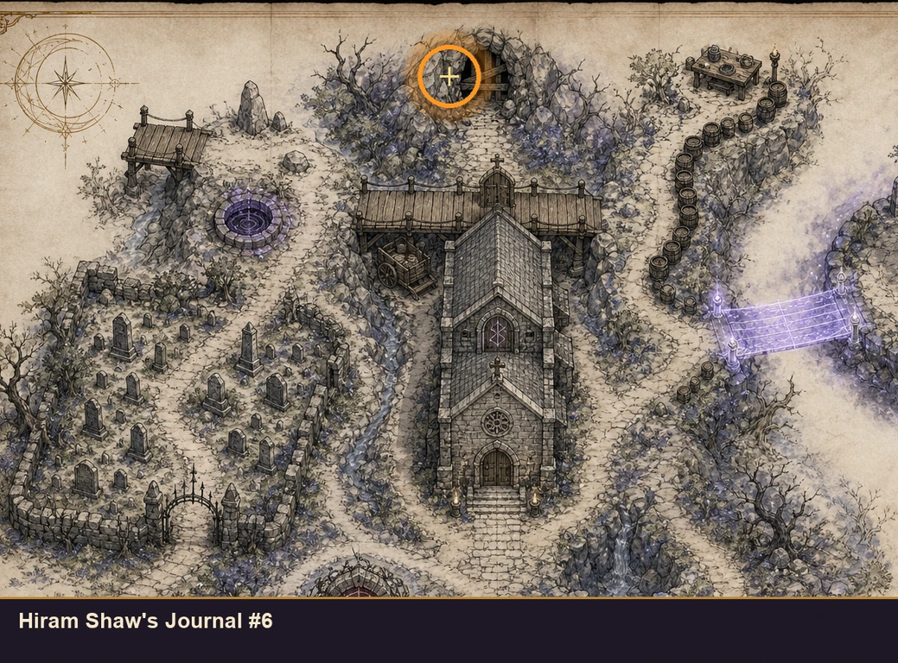
Northern Cottage and Gardens
You are here when: The far northern cottage, its awning and yard, plus the greenhouse and vine-covered garden paths.
Several pickups sit beside chests or on stone benches; revisit after gaining stronger exploration Words.
Caretaker's Journal #5
Page
HintInspect the cottage, greenhouse, garden walls, and nearby clearings.
WhereIn the cottage yard immediately right of the nearby Haven circle.
Full detailThe target is in the cottage yard immediately right of the nearby Haven circle. Interact once and wait for the collection notification before leaving.
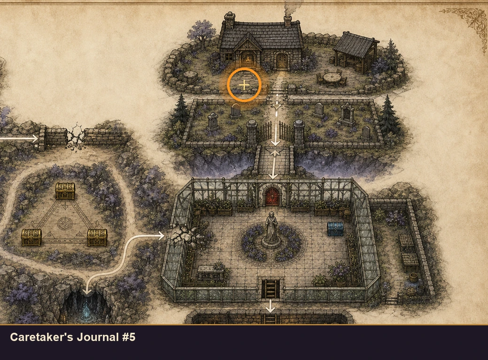
Caretaker's Journal #6
Page
HintInspect the cottage, greenhouse, garden walls, and nearby clearings.
WhereInside the cottage, left of the fireplace.
Full detailThe target is inside the cottage, left of the fireplace. Interact once and wait for the collection notification before leaving.
Caretaker's Journal #7
Page
HintInspect the cottage, greenhouse, garden walls, and nearby clearings.
WhereInside the cottage, right of the fireplace.
Full detailThe target is inside the cottage, right of the fireplace. Interact once and wait for the collection notification before leaving.
Caretaker's Journal #8
Page
HintInspect the cottage, greenhouse, garden walls, and nearby clearings.
WhereOutside the cottage beneath the side awning.
Full detailThe target is outside the cottage beneath the side awning. Interact once and wait for the collection notification before leaving.
Tarot Card - The World
Collectible
HintInspect the cottage, greenhouse, garden walls, and nearby clearings.
WhereOn the outdoor table beneath the cottage awning.
Full detailThe target is on the outdoor table beneath the cottage awning. Interact once and wait for the collection notification before leaving.
Tarot Card - The Hanged Man
Collectible
HintInspect the cottage, greenhouse, garden walls, and nearby clearings.
WhereAcross the Reveal bridge west of the first trial cave, beside a Haven and chest.
Full detailThe target is across the Reveal bridge west of the first trial cave, beside a Haven and chest. Interact once and wait for the collection notification before leaving.
Tarot Card - The Lovers
Collectible
HintInspect the cottage, greenhouse, garden walls, and nearby clearings.
WhereOn the left inside the small graveyard west of the Purify-blocked path.
Full detailTo reach it, learn purify. The target is on the left inside the small graveyard west of the Purify-blocked path. Interact once and wait for the collection notification before leaving.
Lilith's Journal #1
Page
HintInspect the cottage, greenhouse, garden walls, and nearby clearings.
WhereDirectly behind The Lovers card in the small graveyard.
Full detailTo reach it, learn purify. The target is directly behind The Lovers card in the small graveyard. Interact once and wait for the collection notification before leaving.
Masterwork - The Dream of Aeneas
Collectible
HintInspect the cottage, greenhouse, garden walls, and nearby clearings.
WhereBeside the blue chest on the graveyard's eastern side.
Full detailThe target is beside the blue chest on the graveyard's eastern side. Interact once and wait for the collection notification before leaving.
Caretaker's Journal #12
Page
HintInspect the cottage, greenhouse, garden walls, and nearby clearings.
WhereOn the stone bench right of the central statue inside the greenhouse garden.
Full detailThe target is on the stone bench right of the central statue inside the greenhouse garden. Interact once and wait for the collection notification before leaving.
Wanda's Journal #8
Page
HintInspect the cottage, greenhouse, garden walls, and nearby clearings.
WhereAt the rear of the greenhouse garden beside a blue chest.
Full detailThe target is at the rear of the greenhouse garden beside a blue chest. Interact once and wait for the collection notification before leaving.
Bones of the Dead - Sarah Howe
Collectible
HintInspect the cottage, greenhouse, garden walls, and nearby clearings.
WhereOn the ground east of the Haven behind the greenhouse garden.
Full detailThe target is on the ground east of the Haven behind the greenhouse garden. Interact once and wait for the collection notification before leaving.
Tarot Card - The Chariot
Collectible
HintInspect the cottage, greenhouse, garden walls, and nearby clearings.
WhereBefore the northern trial doorway, beside the bridge that appears with Reveal.
Full detailThe target is before the northern trial doorway, beside the bridge that appears with Reveal. Interact once and wait for the collection notification before leaving.
Bones of the Dead - Martha Richards
Collectible
HintInspect the cottage, greenhouse, garden walls, and nearby clearings.
WhereNorth of the westernmost chest in the three-chest triangle at Garden of Envy.
Full detailThe target is north of the westernmost chest in the three-chest triangle at Garden of Envy. Interact once and wait for the collection notification before leaving.
Bones of the Dead - Elizabeth Smith
Collectible
HintInspect the cottage, greenhouse, garden walls, and nearby clearings.
WhereBeside the northern chest in the three-chest triangle at Garden of Envy.
Full detailThe target is beside the northern chest in the three-chest triangle at Garden of Envy. Interact once and wait for the collection notification before leaving.
Hunter's Journal #9
Page
HintInspect the cottage, greenhouse, garden walls, and nearby clearings.
WhereBeside a barrel just southeast of the purified cave in Garden of Envy.
Full detailTo reach it, learn purify. The target is beside a barrel just southeast of the purified cave in Garden of Envy. Interact once and wait for the collection notification before leaving.
Lilith's Journal #2
Page
HintInspect the cottage, greenhouse, garden walls, and nearby clearings.
WhereSouth of Hunter's Journal #9, immediately before the cracked rock pile.
Full detailThe target is south of Hunter's Journal #9, immediately before the cracked rock pile. Interact once and wait for the collection notification before leaving.
Lilith's Journal #3
Page
HintInspect the cottage, greenhouse, garden walls, and nearby clearings.
WhereOn the left-hand table immediately beyond the Break wall inside the greenhouse garden.
Full detailTo reach it, learn break. The target is on the left-hand table immediately beyond the Break wall inside the greenhouse garden. Interact once and wait for the collection notification before leaving.
Lilith's Journal #4
Page
HintInspect the cottage, greenhouse, garden walls, and nearby clearings.
WhereAt the left side of the underground room reached by the garden ladder.
Full detailTo reach it, learn break. The target is at the left side of the underground room reached by the garden ladder. Interact once and wait for the collection notification before leaving.
Lilith's Journal #5
Page
HintInspect the cottage, greenhouse, garden walls, and nearby clearings.
WhereOn the first desk to the right in the underground garden room.
Full detailTo reach it, learn break. The target is on the first desk to the right in the underground garden room. Interact once and wait for the collection notification before leaving.
Lilith's Journal #6
Page
HintInspect the cottage, greenhouse, garden walls, and nearby clearings.
WhereOn the next right-hand desk deeper in the underground garden room.
Full detailTo reach it, learn break. The target is on the next right-hand desk deeper in the underground garden room. Interact once and wait for the collection notification before leaving.
Lilith's Journal #7
Page
HintInspect the cottage, greenhouse, garden walls, and nearby clearings.
WhereOn the adjoining desk beside Lilith's Journal #6.
Full detailThe target is on the adjoining desk beside Lilith's Journal #6. Interact once and wait for the collection notification before leaving.
Masterwork - The Flower Girl
Collectible
HintInspect the cottage, greenhouse, garden walls, and nearby clearings.
WhereOn the right beyond the Break wall along Garden of Envy's northern road.
Full detailTo reach it, learn break. The target is on the right beyond the Break wall along Garden of Envy's northern road. Interact once and wait for the collection notification before leaving.
Bones of the Dead - Margaret Adams
Collectible
HintInspect the cottage, greenhouse, garden walls, and nearby clearings.
WhereOn the left under the bridge beyond Garden of Envy's western Break wall.
Full detailTo reach it, learn break. The target is on the left under the bridge beyond Garden of Envy's western Break wall. Interact once and wait for the collection notification before leaving.
Lilith's Journal #8
Page
HintInspect the cottage, greenhouse, garden walls, and nearby clearings.
WhereOn the right side of the right-hand fork, just before the old statue.
Full detailThe target is on the right side of the right-hand fork, just before the old statue. Interact once and wait for the collection notification before leaving.
Bones of the Dead - Anne Stevens
Collectible
HintInspect the cottage, greenhouse, garden walls, and nearby clearings.
WhereOn the ground beside Lilith's Journal #8.
Full detailThe target is on the ground beside Lilith's Journal #8. Interact once and wait for the collection notification before leaving.
Hunter's Journal #10
Page
HintInspect the cottage, greenhouse, garden walls, and nearby clearings.
WhereOn the left of the other fork, just before its Haven circle.
Full detailThe target is on the left of the other fork, just before its Haven circle. Interact once and wait for the collection notification before leaving.
Lilith's Journal #9
Page
HintInspect the cottage, greenhouse, garden walls, and nearby clearings.
WhereBehind the Epic chest on the right-hand branch beyond that Haven.
Full detailThe target is behind the Epic chest on the right-hand branch beyond that Haven. Interact once and wait for the collection notification before leaving.
Bones of the Dead - May Richards
Collectible
HintInspect the cottage, greenhouse, garden walls, and nearby clearings.
WhereOn the right behind the same Epic chest.
Full detailThe target is on the right behind the same Epic chest. Interact once and wait for the collection notification before leaving.
Hiram Shaw's Journal #7
Page
HintInspect the cottage, greenhouse, garden walls, and nearby clearings.
WhereOn rocks at the dead end of the center branch beyond the Haven.
Full detailThe target is on rocks at the dead end of the center branch beyond the Haven. Interact once and wait for the collection notification before leaving.
Lilith's Journal #10
Page
HintInspect the cottage, greenhouse, garden walls, and nearby clearings.
WhereBeside ground debris on the left-hand branch beyond the Haven.
Full detailThe target is beside ground debris on the left-hand branch beyond the Haven. Interact once and wait for the collection notification before leaving.
Masterwork - Still Life with a Skull and a Writing Quill
Collectible
HintInspect the cottage, greenhouse, garden walls, and nearby clearings.
WhereImmediately behind Lilith's Journal #10.
Full detailThe target is immediately behind Lilith's Journal #10. Interact once and wait for the collection notification before leaving.
Misty Moors and Gideon's Cross
You are here when: The southern outer paths beyond breakable rock walls, with a well, ruined arches, and scattered stone tables.
Use Break on every cracked wall and check both forks around each ruin.
Lilith's Journal #11
Page
HintExplore beyond the cracked rock barriers and inspect every ruined table or slab.
WhereOn the right-hand table immediately after entering Misty Moors through the northern Break wall.
Full detailTo reach it, learn break. The target is on the right-hand table immediately after entering Misty Moors through the northern Break wall. Interact once and wait for the collection notification before leaving.
Hunter's Journal #11
Page
HintExplore beyond the cracked rock barriers and inspect every ruined table or slab.
WhereOn the ground against the eastern wall near the first Misty Moors Haven.
Full detailTo reach it, learn break. The target is on the ground against the eastern wall near the first Misty Moors Haven. Interact once and wait for the collection notification before leaving.
Hiram Shaw's Journal #8
Page
HintExplore beyond the cracked rock barriers and inspect every ruined table or slab.
WhereOn a table a few steps south of Hunter's Journal #11.
Full detailTo reach it, learn break. The target is on a table a few steps south of Hunter's Journal #11. Interact once and wait for the collection notification before leaving.
Tarot Card - The Devil
Collectible
HintExplore beyond the cracked rock barriers and inspect every ruined table or slab.
WhereOn the table against the western wall opposite Hiram Shaw's Journal #8.
Full detailTo reach it, learn break. The target is on the table against the western wall opposite Hiram Shaw's Journal #8. Interact once and wait for the collection notification before leaving.
Tarot Card - Judgement
Collectible
HintExplore beyond the cracked rock barriers and inspect every ruined table or slab.
WhereFloating over the well along Misty Moors' western wall.
Full detailTo reach it, learn break. The target is floating over the well along Misty Moors' western wall. Interact once and wait for the collection notification before leaving.
Hiram Shaw's Journal #9
Page
HintExplore beyond the cracked rock barriers and inspect every ruined table or slab.
WhereOn the table immediately right of the well holding Judgement.
Full detailTo reach it, learn break. The target is on the table immediately right of the well holding Judgement. Interact once and wait for the collection notification before leaving.
Masterwork - Girl with Cherries
Collectible
HintExplore beyond the cracked rock barriers and inspect every ruined table or slab.
WhereOn the left just behind the Break wall south of Everflowing Glade.
Full detailTo reach it, learn break. The target is on the left just behind the Break wall south of Everflowing Glade. Interact once and wait for the collection notification before leaving.
Hiram Shaw's Journal #10
Page
HintExplore beyond the cracked rock barriers and inspect every ruined table or slab.
WhereOn the table right of the Epic chest beyond that wall.
Full detailTo reach it, learn break. The target is on the table right of the Epic chest beyond that wall. Interact once and wait for the collection notification before leaving.
Interrogation Record #3
Record
HintExplore beyond the cracked rock barriers and inspect every ruined table or slab.
WhereOn a stand along the first short right-hand path in Gideon's Cross.
Full detailTo reach it, learn break. The target is on a stand along the first short right-hand path in Gideon's Cross. Interact once and wait for the collection notification before leaving.
Masterwork - Schloss Milkel in Moonlight
Collectible
HintExplore beyond the cracked rock barriers and inspect every ruined table or slab.
WhereInside the ruined building south of the Gideon's Cross entrance, on the right.
Full detailTo reach it, learn break. The target is inside the ruined building south of the Gideon's Cross entrance, on the right. Interact once and wait for the collection notification before leaving.
Interrogation Record #4
Record
HintExplore beyond the cracked rock barriers and inspect every ruined table or slab.
WhereAgainst the wall down the left path from the ruined building.
Full detailTo reach it, learn break. The target is against the wall down the left path from the ruined building. Interact once and wait for the collection notification before leaving.
Lilith's Journal #12
Page
HintExplore beyond the cracked rock barriers and inspect every ruined table or slab.
WhereAgainst the left wall directly south of Interrogation Record #4.
Full detailTo reach it, learn break. The target is against the left wall directly south of Interrogation Record #4. Interact once and wait for the collection notification before leaving.
Hunter's Journal #12
Page
HintExplore beyond the cracked rock barriers and inspect every ruined table or slab.
WhereOn the right-hand table farther south along the main Gideon's Cross road.
Full detailTo reach it, learn break. The target is on the right-hand table farther south along the main Gideon's Cross road. Interact once and wait for the collection notification before leaving.
Tarot Card - The Fool
Collectible
HintExplore beyond the cracked rock barriers and inspect every ruined table or slab.
WhereBehind the tree altar south of Hunter's Journal #12.
Full detailTo reach it, learn break. The target is behind the tree altar south of Hunter's Journal #12. Interact once and wait for the collection notification before leaving.
Masterwork - Moonlight, Wood Island Light
Collectible
HintExplore beyond the cracked rock barriers and inspect every ruined table or slab.
WhereBeside the Rare chest on the short branch back north of the tree altar.
Full detailTo reach it, learn break. The target is beside the Rare chest on the short branch back north of the tree altar. Interact once and wait for the collection notification before leaving.
Interrogation Record #5
Record
HintExplore beyond the cracked rock barriers and inspect every ruined table or slab.
WhereOn a stone block along the short right-hand spur south of the tree altar.
Full detailTo reach it, learn break. The target is on a stone block along the short right-hand spur south of the tree altar. Interact once and wait for the collection notification before leaving.
Interrogation Record #6
Record
HintExplore beyond the cracked rock barriers and inspect every ruined table or slab.
WhereOn a block behind the Break wall north of Interrogation Record #5.
Full detailTo reach it, learn break. The target is on a block behind the Break wall north of Interrogation Record #5. Interact once and wait for the collection notification before leaving.
Whispering Wood Cleanup
You are here when: The western woods around the stone slabs, blue torches, faery rings, and a vine-blocked end path.
Return with Reveal, Purify, and Break to finish the last sealed pockets.
Apothecary Vessel #3
Collectible
HintRevisit the western woods once every exploration Word is available.
WhereOn the ground before a stone slab behind the southern Break wall in Whispering Wood.
Full detailTo reach it, learn break, reveal, and purify. The target is on the ground before a stone slab behind the southern Break wall in Whispering Wood. Interact once and wait for the collection notification before leaving.
Apothecary Vessel #4
Collectible
HintRevisit the western woods once every exploration Word is available.
WhereOn the bench left of the bridge beyond the southern Whispering Wood pocket.
Full detailTo reach it, learn break, reveal, and purify. The target is on the bench left of the bridge beyond the southern Whispering Wood pocket. Interact once and wait for the collection notification before leaving.
Masterwork - Two Men Contemplating the Moon
Collectible
HintRevisit the western woods once every exploration Word is available.
WhereOn the slab beside Apothecary Vessel #4.
Full detailTo reach it, learn break, reveal, and purify. The target is on the slab beside Apothecary Vessel #4. Interact once and wait for the collection notification before leaving.
Hiram Shaw's Journal #11
Page
HintRevisit the western woods once every exploration Word is available.
WhereOn the same slab as Two Men Contemplating the Moon.
Full detailTo reach it, learn break, reveal, and purify. The target is on the same slab as Two Men Contemplating the Moon. Interact once and wait for the collection notification before leaving.
Hiram Shaw's Journal #12
Page
HintRevisit the western woods once every exploration Word is available.
WhereOn the left-hand slab at the far end across the Reveal bridge.
Full detailTo reach it, learn break, reveal, and purify. The target is on the left-hand slab at the far end across the Reveal bridge. Interact once and wait for the collection notification before leaving.
Masterwork - Vanitas Still Life
Collectible
HintRevisit the western woods once every exploration Word is available.
WhereBeside Hiram Shaw's Journal #12 on the far slab.
Full detailTo reach it, learn break, reveal, and purify. The target is beside Hiram Shaw's Journal #12 on the far slab. Interact once and wait for the collection notification before leaving.
Apothecary Vessel #5
Collectible
HintRevisit the western woods once every exploration Word is available.
WhereInside the basket right of the far stone slab.
Full detailTo reach it, learn break, reveal, and purify. The target is inside the basket right of the far stone slab. Interact once and wait for the collection notification before leaving.
Apothecary Vessel #6
Collectible
HintRevisit the western woods once every exploration Word is available.
WhereAt the end of the path behind the Purify vines and Rare chest.
Full detailTo reach it, learn break, reveal, and purify. The target is at the end of the path behind the Purify vines and Rare chest. Interact once and wait for the collection notification before leaving.
Abbey Mysteries
You are here when: Puzzle landmarks across the grounds: statues, grave sites, standing stones, rings, a well, and a pyramid.
These are permanent discoveries; puzzle answers appear only at full detail.
Wanda's Journal #1
Page
HintInspect the chambers and unusual landmarks connected to the Abbey's grounds puzzles.
WhereOn the altar in the first Word chamber, beside the Moon Seal pedestal.
Full detailThe target is on the altar in the first Word chamber, beside the Moon Seal pedestal. Interact once and wait for the collection notification before leaving.
Handmade Hunter Doll
Puzzle item
HintA nearby grounds mystery requires a physical component found on a side path.
WhereOn the table in the tapestry-and-chairs alcove at the eastern edge of Dreamer's Descent.
Full detailAfter obtaining Open, the component is on the table in the tapestry-and-chairs alcove at the eastern edge of Dreamer's Descent. Collect it and confirm it appears in the mystery inventory before returning to the associated altar or grave.
Handmade Caretaker Doll
Puzzle item
HintA nearby grounds mystery requires a physical component found on a side path.
WhereOn the right at the upper end of the wooden bridge northwest of the tapestry alcove.
Full detailAfter obtaining Open, the component is on the right at the upper end of the wooden bridge northwest of the tapestry alcove. Collect it and confirm it appears in the mystery inventory before returning to the associated altar or grave.
Handmade Lilith Doll
Puzzle item
HintA nearby grounds mystery requires a physical component found on a side path.
WhereInside the small childhood fort at the southern edge of Stone Terrace.
Full detailAfter obtaining Open, the component is inside the small childhood fort at the southern edge of Stone Terrace. Collect it and confirm it appears in the mystery inventory before returning to the associated altar or grave.
Stained Soil Sample - Abbey River
Puzzle item
HintA nearby grounds mystery requires a physical component found on a side path.
WhereAt the northern dead end of the river west of the Abbey.
Full detailAfter obtaining Reveal and the active church mystery, the component is at the northern dead end of the river west of the Abbey. Collect it and confirm it appears in the mystery inventory before returning to the associated altar or grave.
Stained Soil Sample - Stone Terrace West Cave
Puzzle item
HintA nearby grounds mystery requires a physical component found on a side path.
WhereAt the back of the small cave along Stone Terrace's western branch.
Full detailAfter obtaining Reveal and the active church mystery, the component is at the back of the small cave along Stone Terrace's western branch. Collect it and confirm it appears in the mystery inventory before returning to the associated altar or grave.
Stained Soil Sample - Stone Terrace Entrance Cave
Puzzle item
HintA nearby grounds mystery requires a physical component found on a side path.
WhereAt the rear of the small cave left of the Stone Terrace entrance, east of a purple chest.
Full detailAfter obtaining Reveal and the active church mystery, the component is at the rear of the small cave left of the Stone Terrace entrance, east of a purple chest. Collect it and confirm it appears in the mystery inventory before returning to the associated altar or grave.
Moon Seal Fragment - Hanging Tree Path
Puzzle item
HintA nearby grounds mystery requires a physical component found on a side path.
WhereAcross the bridge exposed by Purify on the path north of the hanging tree.
Full detailAfter obtaining Purify, the component is across the bridge exposed by Purify on the path north of the hanging tree. Collect it and confirm it appears in the mystery inventory before returning to the associated altar or grave.
Moon Seal Fragment - Small Graveyard Ledge
Puzzle item
HintA nearby grounds mystery requires a physical component found on a side path.
WhereFollow the elevated-log path to its end at the small graveyard's right edge, west of Everflowing Glade.
Full detailAfter learning Purify, follow the elevated-log path beside the small graveyard west of Everflowing Glade. The component rests at the path's far end on the graveyard's right edge; collect it, confirm the mystery inventory entry, then return to the associated altar or grave.
Moon Seal Fragment - Garden Cave
Puzzle item
HintA nearby grounds mystery requires a physical component found on a side path.
WhereAt the top of the left-hand ramp inside the purified cave near Garden of Envy's three-chest clearing.
Full detailAfter obtaining Purify and Reveal, the component is at the top of the left-hand ramp inside the purified cave near Garden of Envy's three-chest clearing. Collect it and confirm it appears in the mystery inventory before returning to the associated altar or grave.
Mysterious Flower
Puzzle item
HintA nearby grounds mystery requires a physical component found on a side path.
WhereOn the ground beside the far northern cottage after all three Moon Seal fragments are registered.
Full detailAfter obtaining all three Moon Seal fragments, the component is on the ground beside the far northern cottage after all three Moon Seal fragments are registered. Collect it and confirm it appears in the mystery inventory before returning to the associated altar or grave.
Blood Gate - First Trial
Mystery
HintA sealed red doorway marks a new exploration route.
WhereAt the red stone doorway northeast of the Abbey.
Full detailComplete the fixed solo trial, collect the Moon Seal in the cave beyond, place it on the pedestal, then interact with the inscription to learn Open.
Word of Power - Open
Exploration power
HintThe chamber beyond a red trial doorway contains a permanent grounds ability.
WhereInside the chamber beyond First Trial, use the Moon Seal pedestal.
Full detailComplete Blood Gate - First Trial, walk through the opened cave, place the Moon Seal if prompted, and interact with the glowing inscription to permanently learn Open.
Blood Gate - Standing Stones Trial
Mystery
HintA sealed red doorway marks a new exploration route.
WhereAt the red doorway north of the Standing Stones.
Full detailPlace the Moon Seal earned from the four Elemental Rods, finish the fixed trial, and use the chamber pedestal to learn Reveal.
Word of Power - Reveal
Exploration power
HintThe chamber beyond a red trial doorway contains a permanent grounds ability.
WhereInside the chamber beyond Standing Stones Trial, use the Moon Seal pedestal.
Full detailComplete Blood Gate - Standing Stones Trial, walk through the opened cave, place the Moon Seal if prompted, and interact with the glowing inscription to permanently learn Reveal.
Blood Gate - Everflowing Glade Trial
Mystery
HintA sealed red doorway marks a new exploration route.
WhereAt the red doorway beside the bridge in Everflowing Glade.
Full detailFinish the stained-soil and hanging-tree mystery, place its Moon Seal here, clear the fixed trial, and use the chamber pedestal to learn Purify.
Word of Power - Purify
Exploration power
HintThe chamber beyond a red trial doorway contains a permanent grounds ability.
WhereInside the chamber beyond Everflowing Glade Trial, use the Moon Seal pedestal.
Full detailComplete Blood Gate - Everflowing Glade Trial, walk through the opened cave, place the Moon Seal if prompted, and interact with the glowing inscription to permanently learn Purify.
Blood Gate - Garden Trial
Mystery
HintA sealed red doorway marks a new exploration route.
WhereAt the red doorway north of the greenhouse garden.
Full detailCollect the three Moon Seal fragments, complete the flower handoff at the cottage, place the restored seal, clear the fixed trial, and use the chamber pedestal to learn Break.
Word of Power - Break
Exploration power
HintThe chamber beyond a red trial doorway contains a permanent grounds ability.
WhereInside the chamber beyond Garden Trial, use the Moon Seal pedestal.
Full detailComplete Blood Gate - Garden Trial, walk through the opened cave, place the Moon Seal if prompted, and interact with the glowing inscription to permanently learn Break.
Elemental Altar Solution
Mystery
HintFour empty plinths at the southwestern altar correspond to the rods found nearby.
WhereAt the large southwestern altar, face the four empty plinths.
Full detailFrom left to right, place Water, Air, Earth, then Fire. Collect the Moon Seal that appears and carry it to the Standing Stones Blood Gate.
Old Midnight Suns Statues
Mystery
HintAn unusual landmark on the Abbey grounds has more than one interaction.
WhereFour carved statues stand west of the Grotto, near the eastern bridge, south of Everflowing Glade, and beyond Garden of Envy.
Full detailPay respects at all four statues, then return to the statue circle southeast of the Abbey and open the revealed legendary chest.
Unknown Grave and Handmade Dolls
Mystery
HintAn unusual landmark on the Abbey grounds has more than one interaction.
WhereThe grave lies beyond the overturned-cart route in Dreamer's Descent.
Full detailCollect the Hunter doll from the tapestry table, the Caretaker doll by the wooden bridge, and the Lilith doll inside the small fort; place all three at the grave and open the reward chest.
Shaw's Church
Mystery
HintAn unusual landmark on the Abbey grounds has more than one interaction.
WhereThe old church and study sit in Valley of the Winds.
Full detailOpen the study, Reveal the middle-desk papers, inspect the rear cave, then collect three stained-soil samples: the western Abbey river dead end and both small Stone Terrace caves. Return them, Reveal the marked hanging tree, and take its Moon Seal to Everflowing Glade.
Corrupted Well
Mystery
HintAn unusual landmark on the Abbey grounds has more than one interaction.
WhereA dead-end path north of the cemetery leads to a tainted circular well.
Full detailCreate the nearby bridge with Reveal, approach the well, use Purify on it, and open the chest that rises.
Lilith's Garden
Mystery
HintAn unusual landmark on the Abbey grounds has more than one interaction.
WhereA Break wall inside the greenhouse garden hides a ladder into a stone underground room.
Full detailBreak the inner wall, descend the ladder, read the four desks if desired, inspect the central altar, then Break the rear wall for the final Standing Stones code clue; two legendary chests appear.
Standing Stones
Mystery
HintAn unusual landmark on the Abbey grounds has more than one interaction.
WhereThree tall stones form a circle east of Dreamer's Descent.
Full detailUse Reveal at the circle. The three symbol sequences vary by save: copy them from the Abbey chapel wall, Agatha's Cottage wall, and the underground garden wall, entering each sequence exactly to summon three legendary chests.
Faery Rings
Mystery
HintAn unusual landmark on the Abbey grounds has more than one interaction.
WhereThree mushroom rings marked by blue torches sit in the southwestern and western woods.
Full detailUse Reveal on all three rings. One lies near the first western altar route; the other two are beyond the southern Whispering Wood Break wall and Reveal bridge. The last activated ring produces the legendary chest.
Stone Pyramid
Mystery
HintAn unusual landmark on the Abbey grounds has more than one interaction.
WhereA cracked wall just north of the first Misty Moors Haven hides a low pyramid.
Full detailBreak the wall, inspect the pyramid, cast Reveal on it, then open the Epic chest that appears.
Disturbed Grave
Mystery
HintAn unusual landmark on the Abbey grounds has more than one interaction.
WhereA small cemetery lies behind the southern Break wall in Dreamer's Descent.
Full detailInspect the grave, Reveal the red ground mark, pick up the exposed remains, return them to the grave, and open the legendary chest.
Tree Altar
Mystery
HintAn unusual landmark on the Abbey grounds has more than one interaction.
WhereA lone altar tree stands on the southern Gideon's Cross road.
Full detailInspect the tree, cast Reveal on its mark, then follow the nearby branch path to the Rare chest that appears.
Meteor
Mystery
HintAn unusual landmark on the Abbey grounds has more than one interaction.
WhereA satellite-like object can appear beside the Misty Moors fast-travel point.
Full detailChoose Stargazing during evening hangouts until the random event triggers; then fast-travel to Misty Moors and interact with the object beside the arrival point.
Agatha's Cauldron
Mystery
HintAn unusual landmark on the Abbey grounds has more than one interaction.
WhereThe unlit cauldron stands in the Abbey Library.
Full detailFrom the first Blood Gate, take the southern path into the crater mine, collect an ember from the large flame, return it to the Library, then use the relit cauldron once.
Recipe Books
You are here when: Books and scrolls resting on tables, slabs, benches, and shelves throughout the Abbey grounds.
Read each interactable recipe book once; collection rewards and recipes register immediately.
Foraging Quarterly
Recipe book
HintKeep checking books, slabs, and tables as new grounds routes open.
WhereOn a candlelit stone slab beyond an Open barrier in Dreamer's Descent.
Full detailAfter obtaining Open, the book is on a candlelit stone slab beyond an Open barrier in Dreamer's Descent. Interact once and wait for its recipes and Arcane Knowledge to register.
Arcane Cooking for the Gifted Amateur
Recipe book
HintKeep checking books, slabs, and tables as new grounds routes open.
WhereOn the small ocean-facing altar near the Standing Stones.
Full detailAfter obtaining Open, the book is on the small ocean-facing altar near the Standing Stones. Interact once and wait for its recipes and Arcane Knowledge to register.
Agatha's Cookbook
Recipe book
HintKeep checking books, slabs, and tables as new grounds routes open.
WhereBeside the Library cauldron after it has been relit.
Full detailAfter obtaining the cauldron mystery, the book is beside the Library cauldron after it has been relit. Interact once and wait for its recipes and Arcane Knowledge to register.
Cauldron Mixology
Recipe book
HintKeep checking books, slabs, and tables as new grounds routes open.
WhereOn a desk inside the church study behind its Open door.
Full detailAfter obtaining Reveal and Open, the book is on a desk inside the church study behind its Open door. Interact once and wait for its recipes and Arcane Knowledge to register.
Encyclopedia Decoctio
Recipe book
HintKeep checking books, slabs, and tables as new grounds routes open.
WhereOn a small table at the southeastern dead end below Everflowing Glade.
Full detailAfter obtaining Purify, the book is on a small table at the southeastern dead end below Everflowing Glade. Interact once and wait for its recipes and Arcane Knowledge to register.
Everbloom Grimoire
Recipe book
HintKeep checking books, slabs, and tables as new grounds routes open.
WhereOn a table inside the far northern cottage.
Full detailAfter obtaining Open, the book is on a table inside the far northern cottage. Interact once and wait for its recipes and Arcane Knowledge to register.
Advanced Occult Transmutation
Recipe book
HintKeep checking books, slabs, and tables as new grounds routes open.
WhereOutside the far northern cottage beside its potted plants.
Full detailAfter obtaining Open, the book is outside the far northern cottage beside its potted plants. Interact once and wait for its recipes and Arcane Knowledge to register.
Celestial Brewing
Recipe book
HintKeep checking books, slabs, and tables as new grounds routes open.
WhereOn the table beside the vine-blocked wooden walkway uphill from the cemetery.
Full detailAfter obtaining Purify, the book is on the table beside the vine-blocked wooden walkway uphill from the cemetery. Interact once and wait for its recipes and Arcane Knowledge to register.
Bespoke Potions
Recipe book
HintKeep checking books, slabs, and tables as new grounds routes open.
WhereOn the table beside a bridge that must be formed with Reveal.
Full detailAfter obtaining Reveal, the book is on the table beside a bridge that must be formed with Reveal. Interact once and wait for its recipes and Arcane Knowledge to register.
Notes on Hedge-Magic
Recipe book
HintKeep checking books, slabs, and tables as new grounds routes open.
WhereOn the right side of the tapestry-and-chairs table near the Unknown Grave route.
Full detailAfter obtaining Open, the book is on the right side of the tapestry-and-chairs table near the Unknown Grave route. Interact once and wait for its recipes and Arcane Knowledge to register.
New England Flora
Recipe book
HintKeep checking books, slabs, and tables as new grounds routes open.
WhereInside Caretaker's room once its door becomes available.
Full detailAfter obtaining room access, the book is inside Caretaker's room once its door becomes available. Interact once and wait for its recipes and Arcane Knowledge to register.
Caretaker's Cookbook
Recipe book
HintKeep checking books, slabs, and tables as new grounds routes open.
WhereLeaning against a broken arch in Gideon's Cross.
Full detailAfter obtaining Break, the book is leaning against a broken arch in Gideon's Cross. Interact once and wait for its recipes and Arcane Knowledge to register.
Diviner's Journal
Recipe book
HintKeep checking books, slabs, and tables as new grounds routes open.
WhereOn an overturned bench beside a pile of books in the outer grounds.
Full detailAfter obtaining Break and Reveal, the book is on an overturned bench beside a pile of books in the outer grounds. Interact once and wait for its recipes and Arcane Knowledge to register.
Illustrated Mycology
Recipe book
HintKeep checking books, slabs, and tables as new grounds routes open.
WhereOn a table in the ruined-house corner beyond the small fort at Stone Terrace.
Full detailAfter obtaining Open, the book is on a table in the ruined-house corner beyond the small fort at Stone Terrace. Interact once and wait for its recipes and Arcane Knowledge to register.
Black Grimoire
Recipe book
HintKeep checking books, slabs, and tables as new grounds routes open.
WhereGranted by the Collections menu after all twelve Caretaker journal pages register.
Full detailRegister all twelve Caretaker journal pages in Collections; Black Grimoire is granted automatically, so there is no separate ground pickup.
Haven Network
You are here when: Glowing blue circles placed at scenic clearings around the grounds.
Discover all circles before using them; each hero and each Haven can be paired only once.
Haven - Elemental Altar Hill
Haven
HintWatch for a glowing blue circle in a quiet clearing.
WhereOn the hill beside the large southwestern stone altar.
Full detailWalk into the blue circle at on the hill beside the large southwestern stone altar. to discover it. Do not spend it yet unless you are ready: a Haven accepts one hero once, and each hero can visit only one Haven.
Haven - Unknown Grave Hill
Haven
HintWatch for a glowing blue circle in a quiet clearing.
WhereOn the hill above the Unknown Grave in Dreamer's Descent.
Full detailWalk into the blue circle at on the hill above the Unknown Grave in Dreamer's Descent. to discover it. Do not spend it yet unless you are ready: a Haven accepts one hero once, and each hero can visit only one Haven.
Haven - Misty Moors
Haven
HintWatch for a glowing blue circle in a quiet clearing.
WhereBeside the main southbound Misty Moors road.
Full detailWalk into the blue circle at beside the main southbound Misty Moors road. to discover it. Do not spend it yet unless you are ready: a Haven accepts one hero once, and each hero can visit only one Haven.
Haven - Altar Stream
Haven
HintWatch for a glowing blue circle in a quiet clearing.
WhereAlong the stream beside the path climbing to the southwestern altar.
Full detailWalk into the blue circle at along the stream beside the path climbing to the southwestern altar. to discover it. Do not spend it yet unless you are ready: a Haven accepts one hero once, and each hero can visit only one Haven.
Haven - Inquisitors' Graveyard
Haven
HintWatch for a glowing blue circle in a quiet clearing.
WhereIn the cemetery west of Valley of the Winds.
Full detailWalk into the blue circle at in the cemetery west of Valley of the Winds. to discover it. Do not spend it yet unless you are ready: a Haven accepts one hero once, and each hero can visit only one Haven.
Haven - Altar Island
Haven
HintWatch for a glowing blue circle in a quiet clearing.
WhereOn the island across the Reveal bridge behind the southwestern altar.
Full detailWalk into the blue circle at on the island across the Reveal bridge behind the southwestern altar. to discover it. Do not spend it yet unless you are ready: a Haven accepts one hero once, and each hero can visit only one Haven.
Haven - Standing Stones North
Haven
HintWatch for a glowing blue circle in a quiet clearing.
WherePush past the second Blood Gate, keeping to its eastern side, then look uphill to the north of the Standing Stones.
Full detailStep into the blue circle to discover it. Push past the second Blood Gate, keeping to its eastern side, then look to the north of the Standing Stones. Do not spend it yet unless you are ready: a Haven accepts one hero once, and each hero can visit only one Haven.
Haven - Gideon's Cross
Haven
HintWatch for a glowing blue circle in a quiet clearing.
WhereAlong the main path through Gideon's Cross.
Full detailWalk into the blue circle at along the main path through Gideon's Cross. to discover it. Do not spend it yet unless you are ready: a Haven accepts one hero once, and each hero can visit only one Haven.
Haven - Dreamer's Descent South
Haven
HintWatch for a glowing blue circle in a quiet clearing.
WhereSoutheast of the Unknown Grave, behind the Break barrier.
Full detailWalk into the blue circle at southeast of the Unknown Grave, behind the Break barrier. to discover it. Do not spend it yet unless you are ready: a Haven accepts one hero once, and each hero can visit only one Haven.
Haven - North Abbey Hill
Haven
HintWatch for a glowing blue circle in a quiet clearing.
WhereNorth of the Abbey and west of the first Blood Gate.
Full detailWalk into the blue circle at north of the Abbey and west of the first Blood Gate. to discover it. Do not spend it yet unless you are ready: a Haven accepts one hero once, and each hero can visit only one Haven.
Haven - Everflowing Glade
Haven
HintWatch for a glowing blue circle in a quiet clearing.
WhereIn the clearing at Everflowing Glade.
Full detailWalk into the blue circle at in the clearing at Everflowing Glade. to discover it. Do not spend it yet unless you are ready: a Haven accepts one hero once, and each hero can visit only one Haven.
Haven - Greenhouse Exterior
Haven
HintWatch for a glowing blue circle in a quiet clearing.
WhereOutside and behind the greenhouse garden.
Full detailWalk into the blue circle at outside and behind the greenhouse garden. to discover it. Do not spend it yet unless you are ready: a Haven accepts one hero once, and each hero can visit only one Haven.
Haven - Devil's Den
Haven
HintWatch for a glowing blue circle in a quiet clearing.
WhereAt the end of the outer Devil's Den path.
Full detailWalk into the blue circle at at the end of the outer Devil's Den path. to discover it. Do not spend it yet unless you are ready: a Haven accepts one hero once, and each hero can visit only one Haven.
Haven - Church Bridge Clearing
Haven
HintWatch for a glowing blue circle in a quiet clearing.
WhereAt the northern end of the bridge above the Valley of the Winds churchyard.
Full detailWalk into the blue circle at at the northern end of the bridge above the Valley of the Winds churchyard. to discover it. Do not spend it yet unless you are ready: a Haven accepts one hero once, and each hero can visit only one Haven.
Haven - Cottage Yard
Haven
HintWatch for a glowing blue circle in a quiet clearing.
WhereIn the yard outside the far northern cottage.
Full detailWalk into the blue circle at in the yard outside the far northern cottage. to discover it. Do not spend it yet unless you are ready: a Haven accepts one hero once, and each hero can visit only one Haven.
Renewable Exploration
You are here when: Arcane chests and reagent patches distributed through already explored Abbey grounds.
These resources respawn or cycle, so the checklist tracks their systems rather than pretending each pickup is permanent.
Arcane Chest Network
Renewable chest
HintColored chests appear beside ruins, caves, statues, and solved mysteries.
WhereOpen every newly revealed chest while sweeping the grounds; previously opened chests can later refill.
Full detailUse Arcane Keys for locked chests until Arcane Knowledge makes lower-rarity chests free. Because chest contents respawn, a reopened chest is not a missed permanent collectible; prioritize unique mystery reward chests and spend spare keys on unopened high-rarity chests.
Wundagore Everbloom Route
Rare reagent
HintA rare purple flower appears near magically resonant landmarks on particular nights.
WhereOn a waxing-moon night, check the Library, major Blood Gates, the southwestern altar, Standing Stones, the far cottage, and the greenhouse garden.
Full detailCheck the moon phase on the map at night, then fast-travel between magical landmarks and collect each glowing Wundagore Everbloom. It is renewable rather than a finite collectible, so repeat this route on later waxing moons if recipes require more.
Regional Reagent Sweep
Reagent route
HintDifferent plant types favor different sections of the grounds and can return after time passes.
WhereAfter rain or a new night cycle, sweep tree bases, graveyards, caves, and garden edges in each unlocked region.
Full detailCollect every visible plant during normal exploration, but do not treat empty spawn points as misses. Reagents are crafting materials that repopulate; revisit after missions or weather changes and reserve rare types until their recipe books are unlocked.
Hero Friendship
You are here when: Daytime conversations, evening hangouts, Havens, gifts, compliments, and sparring around the Abbey.
Raise every friendship-enabled hero to level 5; Hulk uses research instead of friendship.
Friendship Level 5 - Blade
Hero bond
HintSpend time with this hero between missions and learn which activities and gifts they enjoy.
WhereUse conversations, compliments, evening hangouts, gifts, sparring, and one compatible Haven to raise Blade to Friendship Level 5.
Full detailPrioritize Blade whenever a hangout appears, pair a loved activity with a matching gift, and use one Haven for a doubled friendship visit. Level 5 unlocks the hero's Forge challenge; friendship continues into prestige levels afterward, so no permanent reward is lost by overshooting.
Friendship Level 5 - Captain America
Hero bond
HintSpend time with this hero between missions and learn which activities and gifts they enjoy.
WhereUse conversations, compliments, evening hangouts, gifts, sparring, and one compatible Haven to raise Captain America to Friendship Level 5.
Full detailPrioritize Captain America whenever a hangout appears, pair a loved activity with a matching gift, and use one Haven for a doubled friendship visit. Level 5 unlocks the hero's Forge challenge; friendship continues into prestige levels afterward, so no permanent reward is lost by overshooting.
Friendship Level 5 - Captain Marvel
Hero bond
HintSpend time with this hero between missions and learn which activities and gifts they enjoy.
WhereUse conversations, compliments, evening hangouts, gifts, sparring, and one compatible Haven to raise Captain Marvel to Friendship Level 5.
Full detailPrioritize Captain Marvel whenever a hangout appears, pair a loved activity with a matching gift, and use one Haven for a doubled friendship visit. Level 5 unlocks the hero's Forge challenge; friendship continues into prestige levels afterward, so no permanent reward is lost by overshooting.
Friendship Level 5 - Doctor Strange
Hero bond
HintSpend time with this hero between missions and learn which activities and gifts they enjoy.
WhereUse conversations, compliments, evening hangouts, gifts, sparring, and one compatible Haven to raise Doctor Strange to Friendship Level 5.
Full detailPrioritize Doctor Strange whenever a hangout appears, pair a loved activity with a matching gift, and use one Haven for a doubled friendship visit. Level 5 unlocks the hero's Forge challenge; friendship continues into prestige levels afterward, so no permanent reward is lost by overshooting.
Friendship Level 5 - Ghost Rider
Hero bond
HintSpend time with this hero between missions and learn which activities and gifts they enjoy.
WhereUse conversations, compliments, evening hangouts, gifts, sparring, and one compatible Haven to raise Ghost Rider to Friendship Level 5.
Full detailPrioritize Ghost Rider whenever a hangout appears, pair a loved activity with a matching gift, and use one Haven for a doubled friendship visit. Level 5 unlocks the hero's Forge challenge; friendship continues into prestige levels afterward, so no permanent reward is lost by overshooting.
Friendship Level 5 - Iron Man
Hero bond
HintSpend time with this hero between missions and learn which activities and gifts they enjoy.
WhereUse conversations, compliments, evening hangouts, gifts, sparring, and one compatible Haven to raise Iron Man to Friendship Level 5.
Full detailPrioritize Iron Man whenever a hangout appears, pair a loved activity with a matching gift, and use one Haven for a doubled friendship visit. Level 5 unlocks the hero's Forge challenge; friendship continues into prestige levels afterward, so no permanent reward is lost by overshooting.
Friendship Level 5 - Magik
Hero bond
HintSpend time with this hero between missions and learn which activities and gifts they enjoy.
WhereUse conversations, compliments, evening hangouts, gifts, sparring, and one compatible Haven to raise Magik to Friendship Level 5.
Full detailPrioritize Magik whenever a hangout appears, pair a loved activity with a matching gift, and use one Haven for a doubled friendship visit. Level 5 unlocks the hero's Forge challenge; friendship continues into prestige levels afterward, so no permanent reward is lost by overshooting.
Friendship Level 5 - Nico Minoru
Hero bond
HintSpend time with this hero between missions and learn which activities and gifts they enjoy.
WhereUse conversations, compliments, evening hangouts, gifts, sparring, and one compatible Haven to raise Nico Minoru to Friendship Level 5.
Full detailPrioritize Nico Minoru whenever a hangout appears, pair a loved activity with a matching gift, and use one Haven for a doubled friendship visit. Level 5 unlocks the hero's Forge challenge; friendship continues into prestige levels afterward, so no permanent reward is lost by overshooting.
Friendship Level 5 - Scarlet Witch
Hero bond
HintSpend time with this hero between missions and learn which activities and gifts they enjoy.
WhereUse conversations, compliments, evening hangouts, gifts, sparring, and one compatible Haven to raise Scarlet Witch to Friendship Level 5.
Full detailPrioritize Scarlet Witch whenever a hangout appears, pair a loved activity with a matching gift, and use one Haven for a doubled friendship visit. Level 5 unlocks the hero's Forge challenge; friendship continues into prestige levels afterward, so no permanent reward is lost by overshooting.
Friendship Level 5 - Spider-Man
Hero bond
HintSpend time with this hero between missions and learn which activities and gifts they enjoy.
WhereUse conversations, compliments, evening hangouts, gifts, sparring, and one compatible Haven to raise Spider-Man to Friendship Level 5.
Full detailPrioritize Spider-Man whenever a hangout appears, pair a loved activity with a matching gift, and use one Haven for a doubled friendship visit. Level 5 unlocks the hero's Forge challenge; friendship continues into prestige levels afterward, so no permanent reward is lost by overshooting.
Friendship Level 5 - Wolverine
Hero bond
HintSpend time with this hero between missions and learn which activities and gifts they enjoy.
WhereUse conversations, compliments, evening hangouts, gifts, sparring, and one compatible Haven to raise Wolverine to Friendship Level 5.
Full detailPrioritize Wolverine whenever a hangout appears, pair a loved activity with a matching gift, and use one Haven for a doubled friendship visit. Level 5 unlocks the hero's Forge challenge; friendship continues into prestige levels afterward, so no permanent reward is lost by overshooting.
Abbey Clubs
You are here when: Club invitations arrive through Superlink and lead to the Library, southwestern altar, or workshop cave at night.
Each of the three clubs has five meetings. Accept invitations promptly and recheck old Superlink threads when a series appears stalled.
Book Club Meeting 1
Club meeting
HintCheck private Superlink threads after each operation; an older invitation may be waiting without a notification.
WhereReply that you are ready in the Book Club Superlink thread, then return from an operation and meet the host at the Library that night.
Full detailNo advance reading is required. Reply to the newest unanswered Book Club invitation, complete an operation, and follow the host to the Library. If nobody appears, clear other queued evening events, advance normal operations, and check the same message thread again; declining only postpones the meeting.
Book Club Meeting 2
Club meeting
HintCheck private Superlink threads after each operation; an older invitation may be waiting without a notification.
WhereReply that you are ready in the Book Club Superlink thread, then return from an operation and meet the host at the Library that night.
Full detailUse the Library e-reader to read The Art of War before attending. Reply to the newest unanswered Book Club invitation, complete an operation, and follow the host to the Library. If nobody appears, clear other queued evening events, advance normal operations, and check the same message thread again; declining only postpones the meeting.
Book Club Meeting 3
Club meeting
HintCheck private Superlink threads after each operation; an older invitation may be waiting without a notification.
WhereReply that you are ready in the Book Club Superlink thread, then return from an operation and meet the host at the Library that night.
Full detailUse the Library e-reader to read Kava't Koth, Volume 32 before attending. Reply to the newest unanswered Book Club invitation, complete an operation, and follow the host to the Library. If nobody appears, clear other queued evening events, advance normal operations, and check the same message thread again; declining only postpones the meeting.
Book Club Meeting 4
Club meeting
HintCheck private Superlink threads after each operation; an older invitation may be waiting without a notification.
WhereReply that you are ready in the Book Club Superlink thread, then return from an operation and meet the host at the Library that night.
Full detailUse the Library e-reader to read The Mantle of Authority before attending. Reply to the newest unanswered Book Club invitation, complete an operation, and follow the host to the Library. If nobody appears, clear other queued evening events, advance normal operations, and check the same message thread again; declining only postpones the meeting.
Book Club Meeting 5
Club meeting
HintCheck private Superlink threads after each operation; an older invitation may be waiting without a notification.
WhereReply that you are ready in the Book Club Superlink thread, then return from an operation and meet the host at the Library that night.
Full detailUse the Library e-reader to read The Adventures of Crash Morgan, Number 5 before attending. Reply to the newest unanswered Book Club invitation, complete an operation, and follow the host to the Library. If nobody appears, clear other queued evening events, advance normal operations, and check the same message thread again; declining only postpones the meeting.
EMO KIDS Meeting 1
Club meeting
HintCheck private Superlink threads after each operation; an older invitation may be waiting without a notification.
WhereReply that you are ready in the EMO KIDS Superlink thread, then return from an operation and meet the host at the southwestern stone altar that night.
Full detailNo supplies are required. Reply to the newest unanswered EMO KIDS invitation, complete an operation, and follow the host to the southwestern stone altar. If nobody appears, clear other queued evening events, advance normal operations, and check the same message thread again; declining only postpones the meeting.
EMO KIDS Meeting 2
Club meeting
HintCheck private Superlink threads after each operation; an older invitation may be waiting without a notification.
WhereReply that you are ready in the EMO KIDS Superlink thread, then return from an operation and meet the host at the southwestern stone altar that night.
Full detailIf you want the improved reward, carry 10 Oyster Mushrooms, 10 Wolfsbane, and 15 Skill Essence. Reply to the newest unanswered EMO KIDS invitation, complete an operation, and follow the host to the southwestern stone altar. If nobody appears, clear other queued evening events, advance normal operations, and check the same message thread again; declining only postpones the meeting.
EMO KIDS Meeting 3
Club meeting
HintCheck private Superlink threads after each operation; an older invitation may be waiting without a notification.
WhereReply that you are ready in the EMO KIDS Superlink thread, then return from an operation and meet the host at the southwestern stone altar that night.
Full detailFor the improved reward, carry 10 Witch Hazel, 10 Chicken Mushrooms, and 30 Skill Essence. Reply to the newest unanswered EMO KIDS invitation, complete an operation, and follow the host to the southwestern stone altar. If nobody appears, clear other queued evening events, advance normal operations, and check the same message thread again; declining only postpones the meeting.
EMO KIDS Meeting 4
Club meeting
HintCheck private Superlink threads after each operation; an older invitation may be waiting without a notification.
WhereReply that you are ready in the EMO KIDS Superlink thread, then return from an operation and meet the host at the southwestern stone altar that night.
Full detailFor the improved reward, carry 10 Death Caps, 10 Moon Flowers, and 50 Attack Essence. Reply to the newest unanswered EMO KIDS invitation, complete an operation, and follow the host to the southwestern stone altar. If nobody appears, clear other queued evening events, advance normal operations, and check the same message thread again; declining only postpones the meeting.
EMO KIDS Meeting 5
Club meeting
HintCheck private Superlink threads after each operation; an older invitation may be waiting without a notification.
WhereReply that you are ready in the EMO KIDS Superlink thread, then return from an operation and meet the host at the southwestern stone altar that night.
Full detailFor the improved reward, carry 10 Corpse Flowers, 10 Dryad's Saddles, and 50 Heroic Essence. Reply to the newest unanswered EMO KIDS invitation, complete an operation, and follow the host to the southwestern stone altar. If nobody appears, clear other queued evening events, advance normal operations, and check the same message thread again; declining only postpones the meeting.
Shop Class Meeting 1
Club meeting
HintCheck private Superlink threads after each operation; an older invitation may be waiting without a notification.
WhereReply that you are ready in the Shop Class Superlink thread, then return from an operation and meet the host at the tool-filled workshop cave that night.
Full detailNo components are required. Reply to the newest unanswered Shop Class invitation, complete an operation, and follow the host to the tool-filled workshop cave. If nobody appears, clear other queued evening events, advance normal operations, and check the same message thread again; declining only postpones the meeting.
Shop Class Meeting 2
Club meeting
HintCheck private Superlink threads after each operation; an older invitation may be waiting without a notification.
WhereReply that you are ready in the Shop Class Superlink thread, then return from an operation and meet the host at the tool-filled workshop cave that night.
Full detailFor the improved reward, carry 25 Attack Essence and one Common Blueprint. Reply to the newest unanswered Shop Class invitation, complete an operation, and follow the host to the tool-filled workshop cave. If nobody appears, clear other queued evening events, advance normal operations, and check the same message thread again; declining only postpones the meeting.
Shop Class Meeting 3
Club meeting
HintCheck private Superlink threads after each operation; an older invitation may be waiting without a notification.
WhereReply that you are ready in the Shop Class Superlink thread, then return from an operation and meet the host at the tool-filled workshop cave that night.
Full detailFor the improved reward, carry 25 Skill Essence and two Common Blueprints. Reply to the newest unanswered Shop Class invitation, complete an operation, and follow the host to the tool-filled workshop cave. If nobody appears, clear other queued evening events, advance normal operations, and check the same message thread again; declining only postpones the meeting.
Shop Class Meeting 4
Club meeting
HintCheck private Superlink threads after each operation; an older invitation may be waiting without a notification.
WhereReply that you are ready in the Shop Class Superlink thread, then return from an operation and meet the host at the tool-filled workshop cave that night.
Full detailFor the improved reward, carry 50 Skill Essence, one Rare Blueprint, and one Common Blueprint. Reply to the newest unanswered Shop Class invitation, complete an operation, and follow the host to the tool-filled workshop cave. If nobody appears, clear other queued evening events, advance normal operations, and check the same message thread again; declining only postpones the meeting.
Shop Class Meeting 5
Club meeting
HintCheck private Superlink threads after each operation; an older invitation may be waiting without a notification.
WhereReply that you are ready in the Shop Class Superlink thread, then return from an operation and meet the host at the tool-filled workshop cave that night.
Full detailFor the improved reward, carry 50 Heroic Essence and two Rare Blueprints. Reply to the newest unanswered Shop Class invitation, complete an operation, and follow the host to the tool-filled workshop cave. If nobody appears, clear other queued evening events, advance normal operations, and check the same message thread again; declining only postpones the meeting.
Forge Challenges
You are here when: The challenge portal inside the Forge after the Armory is built.
Each fixed-hand puzzle awards a legendary card and suit; full card orders are kept at level 3.
Hunter - Child of Darkness
Hero challenge
HintA fixed-hand Forge puzzle rewards careful card order rather than a normal combat build.
WhereAt the Forge challenge portal, select Hunter's unlocked challenge.
Full detailBuild the Armory from Forged in Hellfire; Hunter's puzzle is available immediately. Number ordinary targets left-to-right before acting. Charge the nearest left target toward the upper-left one; Charge the upper-left target to defeat it; push the survivor right through the rocks; defeat the lower-right target with Charge to take position; use the last Charge and then Whip to send the survivor into the red crystal; play Bladestorm on the new black crystal.
Blade - Bare Fangs
Hero challenge
HintA fixed-hand Forge puzzle rewards careful card order rather than a normal combat build.
WhereAt the Forge challenge portal, select Blade's unlocked challenge.
Full detailBuild the Armory, complete Hunter's challenge, and reach Friendship Level 5 with Blade. Number ordinary targets left-to-right before acting. Quick Strike the right card-holder, finish it with Relentless, then play Make 'em Bleed. Split Strike across the two survivors, put every Daywalker chain on the stronger one, Quick Strike the weak one, use Reaper on the bleeding survivor, and finish the spawned crystal with Glaive.
Captain America - Guardian
Hero challenge
HintA fixed-hand Forge puzzle rewards careful card order rather than a normal combat build.
WhereAt the Forge challenge portal, select Captain America's unlocked challenge.
Full detailBuild the Armory, complete Hunter's challenge, and reach Friendship Level 5 with Captain America. Number ordinary targets left-to-right before acting. Punch the right card-holder into a pillar, play The Best Defense, then aim Shield Bounce through three weak targets. Play Tactician, Punch the last weak target, and spend both Shield Bashes plus the remaining Punch on the elite. Use the acquired Shield Charge on the crystal.
Captain Marvel - Hero's Heart
Hero challenge
HintA fixed-hand Forge puzzle rewards careful card order rather than a normal combat build.
WhereAt the Forge challenge portal, select Captain Marvel's unlocked challenge.
Full detailBuild the Armory, complete Hunter's challenge, and reach Friendship Level 5 with Captain Marvel. Number ordinary targets left-to-right before acting. Play Knee Strike and Cosmic Ray on the target, then knock it into the red crystal with Fists of Radiance. Go Binary, KO the target with Quick Jab, play One Step Ahead, Regroup, and All In, then hit the crystal with Fists of Radiance and Rain of Blows. Use Supernova on the black crystal.
Doctor Strange - Strange Memories
Hero challenge
HintA fixed-hand Forge puzzle rewards careful card order rather than a normal combat build.
WhereAt the Forge challenge portal, select Doctor Strange's unlocked challenge.
Full detailBuild the Armory, complete Hunter's challenge, and reach Friendship Level 5 with Doctor Strange. Number ordinary targets left-to-right before acting. Use Bolt of Balthakk on card-holding targets to collect Blessing of Vishanti and Agamotto's Gaze. Alternate the Gaze draws with both Blessings, then direct every strengthened Bolt into the remaining target and crystal. When Seven Suns of Cinnibus appears, cast it on the black crystal.
Ghost Rider - Dark Heart
Hero challenge
HintA fixed-hand Forge puzzle rewards careful card order rather than a normal combat build.
WhereAt the Forge challenge portal, select Ghost Rider's unlocked challenge.
Full detailBuild the Armory, complete Hunter's challenge, and reach Friendship Level 5 with Ghost Rider. Number ordinary targets left-to-right before acting. Lash the second target into the third, then Lash the fourth into the second. Use Judgement on the clustered pair, Retribution the remaining weak target into rubble, and use Penance Stare on the elite; play the awarded card if the closing target remains.
Hulk - Monster or Man?
Hero challenge
HintA fixed-hand Forge puzzle rewards careful card order rather than a normal combat build.
WhereAt the Forge challenge portal, select Hulk's unlocked challenge.
Full detailResearch Change of Plans, complete three Hulk missions, upgrade three Hulk abilities, then research Energy Drink. Number ordinary targets left-to-right before acting. Gamma Kick the fourth target; follow with Smash and Crush to KO it. Chain Rampage through targets one, two, and three, Gamma Kick target five, play Let's Do This, then Smash once more to reach maximum Rage. Use Worldbreaker on the full group.
Iron Man - Iron Will
Hero challenge
HintA fixed-hand Forge puzzle rewards careful card order rather than a normal combat build.
WhereAt the Forge challenge portal, select Iron Man's unlocked challenge.
Full detailBuild the Armory, complete Hunter's challenge, and reach Friendship Level 5 with Iron Man. Number ordinary targets left-to-right before acting. Redraw New Plan, then play Heads Up, Precision, and Leave It to Me. Put the eight-hit Surgical Strike into the red crystal, play the next Heads Up, use the six-hit Surgical Strike, and fire all three Blasts at the crystal. Finish the spawned crystal with Hellfire Beam.
Magik - Demon Child
Hero challenge
HintA fixed-hand Forge puzzle rewards careful card order rather than a normal combat build.
WhereAt the Forge challenge portal, select Magik's unlocked challenge.
Full detailBuild the Armory, complete Hunter's challenge, and reach Friendship Level 5 with Magik. Number ordinary targets left-to-right before acting. Play Limbo's Grasp, place a Limbo Portal at the green hazard, and Quick Soul Slash the central target through it. Use Trap Door, detonate the red hazard, then alternate Kick, Trap Door, and Soul Blast to collide the surviving target with its neighbors. Play Darkchylde and end the turn.
Nico Minoru - Black Shadows
Hero challenge
HintA fixed-hand Forge puzzle rewards careful card order rather than a normal combat build.
WhereAt the Forge challenge portal, select Nico Minoru's unlocked challenge.
Full detailBuild the Armory, complete Hunter's challenge, and reach Friendship Level 5 with Nico Minoru. Number ordinary targets left-to-right before acting. Redraw Blood Magic for Double Up, play both Double Ups, then redraw Empower and cast the new Blood Magic on Nico. Put one Witchstorm into each pair of untouched targets and play both Witchfires to clean up. Use Crack the Sky when it appears.
Scarlet Witch - Witch's Trial
Hero challenge
HintA fixed-hand Forge puzzle rewards careful card order rather than a normal combat build.
WhereAt the Forge challenge portal, select Scarlet Witch's unlocked challenge.
Full detailBuild the Armory, complete Hunter's challenge, and reach Friendship Level 5 with Scarlet Witch. Number ordinary targets left-to-right before acting. Use both Quick Toss cards to pull the two distant targets into Wanda's radius. Cast Hex Field twice, then chain successive Hex Bolts through targets three, two, four, and one while collecting the replacement Bolts. Finish the elite with No More.
Spider-Man - Wall Crawler
Hero challenge
HintA fixed-hand Forge puzzle rewards careful card order rather than a normal combat build.
WhereAt the Forge challenge portal, select Spider-Man's unlocked challenge.
Full detailBuild the Armory, complete Hunter's challenge, and reach Friendship Level 5 with Spider-Man. Number ordinary targets left-to-right before acting. Play Opportunist. Use the low coffin to knock the elite into one weak target, then the left coffin into the second. Throw the last weak target into the elite with Special Delivery and use the remaining coffin to finish it. Play Infernal Spider, then empty the free follow-up cards into the crystal.
Wolverine - Bone & Claw
Hero challenge
HintA fixed-hand Forge puzzle rewards careful card order rather than a normal combat build.
WhereAt the Forge challenge portal, select Wolverine's unlocked challenge.
Full detailBuild the Armory, complete Hunter's challenge, and reach Friendship Level 5 with Wolverine. Number ordinary targets left-to-right before acting. Put every Lethal Pounce chain on the nearer right target for Strengthened. Split Chain Swipes across the two right targets, Power Slash each left target into the short wall, and use Stink of Fear on the left pair. Play Let's Do This, split Eviscerate two-and-two across the survivors, then use Midnight Special.
Optional DLC Completion
You are here when: Mission-table and Abbey activities that appear only when the matching add-on is installed.
This area is conditional; ignore it when playing the base game without the Season Pass heroes.
Friendship Level 5 - Deadpool
DLC hero bond
HintIf this add-on is installed, include its hero in the Abbey friendship rotation.
WhereAfter recruiting Deadpool, use hangouts, gifts, compliments, sparring, and one compatible Haven to reach Friendship Level 5.
Full detailFinish the add-on's recruitment mission, then prioritize Deadpool during evening hangouts and use a matching gift at a Haven. Friendship Level 5 unlocks Deadpool's Forge challenge once the Armory exists.
Friendship Level 5 - Morbius
DLC hero bond
HintIf this add-on is installed, include its hero in the Abbey friendship rotation.
WhereAfter recruiting Morbius, use hangouts, gifts, compliments, sparring, and one compatible Haven to reach Friendship Level 5.
Full detailFinish the add-on's recruitment mission, then prioritize Morbius during evening hangouts and use a matching gift at a Haven. Friendship Level 5 unlocks Morbius's Forge challenge once the Armory exists.
Friendship Level 5 - Storm
DLC hero bond
HintIf this add-on is installed, include its hero in the Abbey friendship rotation.
WhereAfter recruiting Storm, use hangouts, gifts, compliments, sparring, and one compatible Haven to reach Friendship Level 5.
Full detailFinish the add-on's recruitment mission, then prioritize Storm during evening hangouts and use a matching gift at a Haven. Friendship Level 5 unlocks Storm's Forge challenge once the Armory exists.
Friendship Level 5 - Venom
DLC hero bond
HintIf this add-on is installed, include its hero in the Abbey friendship rotation.
WhereAfter recruiting Venom, use hangouts, gifts, compliments, sparring, and one compatible Haven to reach Friendship Level 5.
Full detailFinish the add-on's recruitment mission, then prioritize Venom during evening hangouts and use a matching gift at a Haven. Friendship Level 5 unlocks Venom's Forge challenge once the Armory exists.
Deadpool - Fourth Wall
DLC challenge
HintThis add-on hero has a fixed-hand Forge puzzle after maximum friendship.
WhereAt the Forge portal, choose Deadpool's challenge after reaching Friendship Level 5.
Full detailBuild the Armory and finish Hunter's puzzle first. Number targets left-to-right before acting. Chain Spread the Love through the two card-holders, use Death from Above on the survivor, and place Pain Piñata over the three targets on the right. Chain the second Spread the Love through the two outside survivors, use Death from Above on the right survivor, Mag Dump the last weak target, then use Burning Sensation on the elite.
Morbius - Late Night Snack
DLC challenge
HintThis add-on hero has a fixed-hand Forge puzzle after maximum friendship.
WhereAt the Forge portal, choose Morbius's challenge after reaching Friendship Level 5.
Full detailBuild the Armory and finish Hunter's puzzle first. Number targets left-to-right before acting. Quick Claw the lowest-health card-holder, play Mist Form, then Claw the far-right card-holder and activate Bloodlust. Chain Shadow Strike once through all three survivors, Claw the left card-holder, chain the new Shadow Strike twice into the Feeding Frenzy holder and once into the other, then Claw and Feeding Frenzy. Claw the elite to apply Bleed and finish with Undying Fury.
Storm - Make It Rain
DLC challenge
HintThis add-on hero has a fixed-hand Forge puzzle after maximum friendship.
WhereAt the Forge portal, choose Storm's challenge after reaching Friendship Level 5.
Full detailBuild the Armory and finish Hunter's puzzle first. Number targets left-to-right before acting. Gale Force the front Vortex holder into the rear-left Goddess' Blessing holder, then play the Blessing. Stun the imminent Frenzy attacker with Live Wire. Use Arc twice, concentrating chains until the front targets fall; after the distant Frenzy attacks, aim Vortex so both survivors hit their leylines. Destroy the crystal with Hellstorm.
Venom - Brain Buffet
DLC challenge
HintThis add-on hero has a fixed-hand Forge puzzle after maximum friendship.
WhereAt the Forge portal, choose Venom's challenge after reaching Friendship Level 5.
Full detailBuild the Armory and finish Hunter's puzzle first. Number targets left-to-right before acting. Lethal Embrace the Tasty Brains holder. Tendril Strike the two right targets, then put both chains of the second Tendril Strike into the same card-holder. Web Toss the far-left target into the leyline, Spike Burst the four injured targets, play Insatiable Hunger, and use Tasty Brains on the survivor. Activate Assimilation, Tasty Brains one new target, and Lethal Embrace the other.
Base Completion Records
You are here when: Track these through the corresponding Forge, Yard, War Room, Hero, customization, and combat menus.
These are game-internal completion actions and collection records.
Item Bench Craft
Completion requirement
HintTry the Forge's consumable workstation once.
WhereCraft one combat item at the Item Bench.
Full detailResearch and purchase Item Bench, interact with it in the Forge, choose any recipe whose ingredients are available, and confirm one crafted combat item enters inventory.
Forge Ability Craft
Completion requirement
HintBlueprints can create a chosen hero card directly.
WhereCraft one hero ability at the Forge.
Full detailUnlock Ability Crafting, open its Forge station, choose a hero and an affordable discovered ability, spend the required Blueprint and Essence, and collect the finished card.
Cauldron Recipe
Completion requirement
HintA Grounds workstation turns reagents into useful supplies.
WhereComplete one recipe at Agatha's Cauldron.
Full detailUnlock the Cauldron through Grounds progress, collect the displayed reagents, select any known recipe, and brew it once; reading a recipe book without brewing does not complete the action.
Hunter Room Upgrades
Completion requirement
HintThe bedroom has its own Gloss-funded customization list.
WherePurchase ten different upgrades for Hunter's room.
Full detailInteract with ten separate furniture or decor positions in Hunter's room and buy a distinct option at each. Color variants at one position do not replace ten different room fixtures.
Every Research Project (missable)
Completion requirement
HintKeep studying Artifacts even after the essential facilities are open.
WhereComplete every available base-game and installed-DLC project at the Forge.
Full detailRaise Research Level by studying Artifacts, inspect each locked project's champion requirement, and deploy or upgrade the named hero until it is met. Research one project per day, claim it the following morning, and continue until every base tab and each installed DLC portrait has a completed mark. Purchase the upgrades separately afterward.
Every Abbey Facility Upgrade (missable)
Completion requirement
HintResearch alone does not build a facility improvement.
WhereBuild every Forge, Yard, and War Room upgrade in one campaign.
Full detailStudy Artifacts, finish each prerequisite, claim its research, and spend Credits on the resulting construction. Verify Forge: Item Bench I-III, Foundry I-II, Book of the Vishanti, Armory, Articulated Arm, Empowered Anvil, and Cauldron of the Cosmos. Verify Yard: Combat Therapy, Crucible, Legendary Blade, Teamwork Tactics I-II, T.H.R.E.A.T. Room, Training Dummies: Shove, and Training Dummies: Cure. Verify War Room: S.H.I.E.L.D. Exchange, S.T.R.I.K.E. Terminal, and Kree Processor. With DLC installed, also build Food Truck, Whisper Web, Laboratory I-II, and Enhanced T.H.R.E.A.T. Room I-II before New Game+.
Maximum Team Friendship (missable)
Completion requirement
HintGroup friendship grows through individual bonds and shared activities.
WhereRaise Team Friendship to its maximum level in one campaign.
Full detailEarn Friendship XP through Hangouts, Havens, gifts, Compliments, club meetings, and dialogue. Claim each Team Friendship reward at the central level-up display and continue until the team meter shows its maximum.
Twenty-Five Arcane Chests
Completion requirement
HintRespawning chests make this a cumulative opening counter.
WhereOpen Arcane Chests twenty-five times.
Full detailRaise Arcane Knowledge through exploration so lower-rarity chests become free, revisit opened chest locations after they reset, and perform twenty-five opening interactions. Unique chest locations are not required.
Every Hero Daily Sparring (missable)
Completion requirement
HintRotate the Yard's daily partner instead of repeating favorites.
WhereComplete Daily Sparring once with every available hero.
Full detailEach day, use Daily Sparring at the Yard with a hero not yet checked. Track the full base roster and installed DLC roster manually; only one partner is available per day, so advance with general missions and finish before New Game+.
Charlie Fifteen-Day Streak (missable)
Completion requirement
HintA daily Abbey interaction must remain unbroken.
WherePet Charlie on fifteen consecutive in-game days.
Full detailFind Charlie after every wake-up and interact until the pet animation completes before starting the next mission. Keep a manual day count; missing one day resets the streak, while post-campaign general missions provide unlimited recovery time.
Ebony on Four Days
Completion requirement
HintA second Abbey animal appears only on some nights.
WherePet Ebony on four different in-game days.
Full detailListen for the arrival cue and inspect the Abbey interior, chapel, library, and nearby common areas at night. Pet Ebony whenever found and repeat on four separate days; duplicate interactions on one day count once.
Every Hunter Ability (missable)
Completion requirement
HintHunter's full card pool spans Power, Light, and Dark branches.
WhereAcquire at least one copy of every Hunter ability.
Full detailAnalyze Gamma Coils, craft missing discovered cards, finish Hunter's challenge, reach both Balance reward tracks, and use the Garden mystery reward strategically. Compare the Ability Crafting list against owned Hunter cards until every ability is represented.
Ten of Every Reagent
Completion requirement
HintDelay mass brewing until every ingredient stack reaches double digits.
WhereHold or collect ten of every Grounds reagent type.
Full detailSweep all Grounds regions by day and night, including moon-phase-only Wundagore Everbloom spawns, until the cumulative requirement for every reagent reaches ten. Avoid spending scarce stacks at the Cauldron until the record registers.
Every-Hero Suit Palette (missable)
Completion requirement
HintEach recruited hero needs one alternate palette actively applied.
WhereDuring one campaign, equip a nondefault combat-suit color on each hero.
Full detailOpen Customization for each available base and installed-DLC hero, select a combat suit, and apply any nondefault unlocked palette. Repeat for the full active roster before New Game+; merely unlocking a palette is insufficient.
Every-Hero Mission Lead (missable)
Completion requirement
HintThe first portrait at the Mirror Table rotates the mission leader.
WhereUse every hero as leader for at least one completed general mission.
Full detailAt the Mirror Table, choose general missions whose required leader has not yet been checked, complete the objective, and return to the Abbey. Repeat for every base and installed-DLC hero; story missions do not substitute reliably.
Every-Hero T.H.R.E.A.T. Survival (missable)
Completion requirement
HintThe training portal tracks heroes separately.
WhereSurvive all three T.H.R.E.A.T. Room turns with every hero.
Full detailUnlock the T.H.R.E.A.T. Room, enter with one unchecked hero per day, and survive through the third turn. Use Quick and chain-KO cards to maintain Card Plays, then repeat for every base and installed-DLC hero before New Game+.
Hunter Cosmetic Spending
Completion requirement
HintHunter's wardrobe provides a large Gloss sink.
WhereSpend a total of 1,500 Gloss on Hunter cosmetics.
Full detailBuy Hunter outfits, room clothes, face props, and palettes from Customization until the cumulative spend reaches 1,500 Gloss. Purchases for other heroes do not advance this total.
Quick Villain Finish
Completion requirement
HintSave a Quick attack for a named target's final health.
WhereKO a villain with a Quick ability.
Full detailLower the villain until a Quick card's displayed damage is lethal, then use that card for the KO. Quick's Card Play refund is irrelevant; the final hit must come from the Quick ability.
Twenty-Five Multi-Knockback KOs
Completion requirement
HintLine enemies up with one shove repeatedly.
WhereKO multiple enemies with one Knockback twenty-five times.
Full detailUse Forceful Knockback, directional knockbacks, or shove angles that send one target into another and KO at least two enemies from the same action. Repeat until the cumulative counter reaches twenty-five.
Seventy-Five Redraws
Completion requirement
HintUse spare redraws every mission.
WhereRedraw a total of seventy-five cards.
Full detailDuring combat, select unwanted cards and use Redraw whenever charges remain. Card effects that redraw also help only if the game records them; the safest method is the standard Redraw command across missions.
Eight Abilities in One Turn
Completion requirement
HintFree and Quick cards stretch the normal Card Play limit.
WherePlay eight hero abilities during one turn.
Full detailBuild a hand with Quick attacks that secure KOs, Free cards, Marked targets, and Card Play refunds. In one turn, resolve eight hero cards before ending the turn; moves, items, and environment attacks are not hero abilities.
Five Interrogations
Completion requirement
HintResearch enables post-KO questioning opportunities.
WhereInterrogate five enemies across missions.
Full detailComplete the Truth Serum research and install its War Room upgrade. When an Interrogate card appears after an eligible enemy is downed, spend a Card Play on it; repeat five times across missions.
Two Drop KOs in One Turn
Completion requirement
HintOpen ledges can remove two targets without raw damage.
WhereKnock two enemies into Drops during one turn.
Full detailOn a map with two open Drop edges, weaken targets if necessary, then use knockback cards, moves, or shoves to send two enemies over marked Drop boundaries before ending the same turn.
Two-Turn General Mission
Completion requirement
HintChoose a short objective and front-load damage.
WhereComplete any general mission in two turns or fewer.
Full detailLower difficulty if needed, bring upgraded burst decks and combat items, and select a simple general mission. Finish its actual objective by the end of turn two; surviving an additional required wave would exceed the limit.
Villain Hero-Combo Finish
Completion requirement
HintSave a Combo card for a named target.
WhereKO a villain with a Hero Combo.
Full detailBuild Friendship until Hero Combo cards appear, lower the villain below a Combo card's previewed damage, then spend the Heroism and use that Combo for the final hit.
Five Environmentals in One Turn
Completion requirement
HintBank Heroism and leave props intact for one crowded turn.
WhereUse five environmental attacks during one turn.
Full detailEnter a room with several usable props, build enough Heroism, and perform five separate environmental attacks before ending the turn. Reusing a prop is allowed only if it remains interactable.
Ten Mission Challenges
Completion requirement
HintBuy optional objectives before launching general missions.
WhereComplete ten purchased Mission Challenges.
Full detailUnlock the S.H.I.E.L.D. Exchange, buy a Challenge for a general mission, meet its condition, and finish the mission successfully. Repeat until ten challenge rewards are collected; failed conditions do not count.
Untouched General Mission
Completion requirement
HintDefense, Conceal, Resist, and fast objective play prevent health loss.
WhereFinish a general mission with no hero taking Health damage.
Full detailUse a low-difficulty general mission, conceal or protect targeted heroes, remove marked attackers first, and finish the objective before any hit penetrates Block or Resist. Health damage from any teammate invalidates the attempt.
Four KOs with One Environmental
Completion requirement
HintA single explosive or heavy prop needs a tightly packed group.
WhereKO four enemies with one environmental attack.
Full detailOn a reinforcement-heavy map, weaken four minions near one explosive, pole, or large environmental. Confirm all four lie inside the preview and trigger that one environmental for all four KOs.
Three Legendary Abilities in One Mission
Completion requirement
HintBring three heroes whose legendary cards are already unlocked.
WhereUse three different Legendary abilities during one mission.
Full detailEquip one Legendary card in each hero's deck, bring those three heroes together, draw and play all three named cards before completing the mission. Duplicate copies or a single hero's repeated card do not count as three different abilities.
Ten Ability Mods
Completion requirement
HintThe Yard can add a random modifier to upgraded cards.
WhereApply mods to ten different hero abilities.
Full detailResearch and build the Crucible, upgrade ten distinct ability cards, then use Apply Ability Mods at the Yard on each. Re-rolling one card repeatedly does not replace ten different abilities.
Ten-Heroism Ability
Completion requirement
HintOne high-cost ability can consume a full Heroism bank.
WhereSpend ten Heroism with a single ability.
Full detailEquip a scalable or ten-cost Heroic ability, build Heroism to at least ten, and play it when its displayed cost is ten. Several smaller cards totaling ten do not count.
Twenty-Five Combat Items
Completion requirement
HintUse consumables steadily instead of hoarding them.
WhereUse twenty-five combat items across missions.
Full detailEquip combat items before deployment and activate them during encounters until twenty-five total uses register. Craft or buy replacements; carrying an item through a mission without activating it does not count.
Installed DLC Completion Records
You are here when: These entries apply only when the corresponding character packs are installed and their opening missions appear at the Mirror Table.
Finish all four character packs on one campaign before the combined closing mission becomes available.
Deadpool Mission Chain
DLC requirement
HintFollow one installed character's purple missions to their own conclusion.
WhereComplete every Deadpool story mission.
Full detailSelect each Deadpool-marked mission whenever it appears, complete its objective, then advance days until the next entry unlocks. Continue until his chain reports complete.
Deadpool Research Set
DLC requirement
HintHis missions unlock several themed Forge projects.
WhereComplete every Deadpool research project and build its upgrade.
Full detailUse Deadpool often enough to satisfy each displayed champion requirement, raise Research Level as needed, complete every project bearing his portrait, and purchase the Food Truck upgrade those projects unlock.
Maximum En Fuego
DLC requirement
HintChain Deadpool KOs without letting incoming hits erase momentum.
WhereReach Deadpool's maximum En Fuego level during combat.
Full detailUse Deadpool to secure the required KOs for each En Fuego step while Taunting away from him, Concealing him, or removing his attackers. Continue in one encounter until the meter reaches its maximum.
Venom Mission Chain
DLC requirement
HintComplete the full purple mission sequence for the symbiote character.
WhereComplete every Venom story mission.
Full detailSelect and finish each Venom-marked mission, advance days when the next entry is not yet present, and continue until his character chain reports complete.
Venom Research Set
DLC requirement
HintHis completed missions and deployments unlock themed projects.
WhereComplete every Venom research project and build its upgrade.
Full detailMeet each displayed Venom usage requirement, claim every portrait-marked project at the Forge, and spend Credits to build the Whisper Web in the War Room.
Ravenous Empty and Refill
DLC requirement
HintVenom's meter must visit both extremes in one encounter.
WhereCompletely spend and then refill Ravenous during one encounter.
Full detailUse Venom abilities that consume Ravenous until the meter is empty, then secure enough Venom KOs or trigger his refill effects to return it to maximum before the encounter ends.
Five Whisper-Web Missions
DLC requirement
HintA War Room upgrade can alter general mission conditions.
WhereUse the Whisper Web to modify five general missions.
Full detailBuild the Whisper Web, interact with it before choosing a general mission, apply one offered modifier, and complete that mission. Repeat on five separate general missions.
Morbius Mission Chain
DLC requirement
HintComplete the full purple mission sequence for the laboratory character.
WhereComplete every Morbius story mission.
Full detailSelect and finish every Morbius-marked mission, advancing days as needed between entries, until his character chain reports complete.
Morbius Research Set
DLC requirement
HintHis deployments unlock projects and a stat laboratory.
WhereComplete every Morbius research project and build its upgrade.
Full detailMeet each displayed Morbius usage requirement, claim all of his Forge projects, and purchase Laboratory and its available improvement before leaving the campaign.
Five Laboratory Subjects
DLC requirement
HintThe Laboratory's daily treatment should rotate among heroes.
WhereApply a Laboratory stat modification to five different heroes.
Full detailBuild the Laboratory, select one hero and complete a stat treatment, then advance a day and choose a different hero. Repeat until five unique heroes have received a completed modification.
Full-Mission Bloodlust
DLC requirement
HintActivate Morbius's stance immediately and keep it from expiring.
WhereUse Bloodlust on turn one and retain it through the mission.
Full detailDraw or fetch Bloodlust on the first turn, play it before ending that turn, and refresh or preserve its duration with Morbius's card effects until the final objective completes. Letting the status disappear invalidates the attempt.
Bleed-Free Vampyre Mission
DLC requirement
HintPrioritize biting enemies and block their marked attacks.
WhereFinish a Vampyre mission without any hero receiving Bleed from a bite.
Full detailUse Resist, Block, Conceal, Taunt control, and fast KOs to prevent every Vampyre Bite from landing on Health. Finish the mission and verify no hero ever gained the bite-applied Bleed status.
Storm Mission Chain
DLC requirement
HintComplete the full purple mission sequence for the weather character.
WhereComplete every Storm story mission.
Full detailSelect and finish every Storm-marked mission, advancing days between entries when necessary, until her character chain reports complete.
Storm Research Set
DLC requirement
HintHer missions unlock projects and a training-room improvement.
WhereComplete every Storm research project and build its upgrade.
Full detailMeet each displayed Storm usage requirement, claim all portrait-marked Forge projects, and purchase the Enhanced T.H.R.E.A.T. Room improvement.
Three Next-Turn Storm Cards
DLC requirement
HintHold delayed Storm abilities until three bonuses are charged together.
WherePlay three Storm abilities with active Next Turn bonuses in one turn.
Full detailRetain three cards bearing Next Turn text for at least one full turn without playing them. On the following turn, confirm each bonus is lit and play all three before ending the turn.
Four Storm Stuns
DLC requirement
HintGroup targets and combine Storm's stun effects in one turn.
WhereStun four enemies with Storm abilities during one turn.
Full detailBring Storm cards that apply Stun directly or through area and knockback effects, gather four valid enemies, then apply Storm-sourced Stun to all four before the turn ends.
Four-Pack Closing Mission
DLC requirement
HintA final DLC operation appears only after all character chains are complete.
WhereComplete every Deadpool, Venom, Morbius, and Storm mission, then finish the combined closing mission.
Full detailOn one save with all four packs installed, finish each character's full purple mission chain. Advance a day, check the Mirror Table for the new combined mission, complete it, and return to the Abbey to register the DLC campaign closure.
Mission Table Safety Check
You are here when: The Mirror Table and the explicit on-screen lock warning shown before the closing operation.
The campaign presents one ending rather than branching endings; make a manual backup when the lock warning appears.
Campaign Completion
Completion
HintThe Mirror Table eventually displays a large lock warning before a long operation.
WhereWhen the explicit lock warning appears at the Mirror Table, stop before accepting and make a separate manual save.
Full detailThere is one campaign ending and no light/dark ending branch to collect. After the backup, accept the warned operation and finish its connected missions; after the credits, load the continuation state for remaining Abbey exploration and friendship cleanup.
Ability and Item Card Catalog
You are here when: The Forge, hero loadout screens, and combat-item inventory.
A card is complete once its entry has been unlocked or encountered and can be identified in the relevant collection screen.
A Greater Hunger
Ability or card
HintKeep opening new coils and checking newly recruited heroes and crafted items.
WhereLocate A Greater Hunger in the matching hero, combat-item, or collection section and reveal its entry.
Full detailUse the Collections screen to identify which hero, item bench, or encounter owns A Greater Hunger. For a hero card, open Gamma Coils after missions with that hero until it appears, then keep or craft a copy; for an item or encounter card, craft or trigger its named source once. Confirm the entry is no longer hidden.
A Greater Hunger II
Ability or card
HintKeep opening new coils and checking newly recruited heroes and crafted items.
WhereLocate A Greater Hunger II in the matching hero, combat-item, or collection section and reveal its entry.
Full detailUse the Collections screen to identify which hero, item bench, or encounter owns A Greater Hunger II. For a hero card, open Gamma Coils after missions with that hero until it appears, then keep or craft a copy; for an item or encounter card, craft or trigger its named source once. Confirm the entry is no longer hidden.
Absorb Darkness
Ability or card
HintKeep opening new coils and checking newly recruited heroes and crafted items.
WhereLocate Absorb Darkness in the matching hero, combat-item, or collection section and reveal its entry.
Full detailUse the Collections screen to identify which hero, item bench, or encounter owns Absorb Darkness. For a hero card, open Gamma Coils after missions with that hero until it appears, then keep or craft a copy; for an item or encounter card, craft or trigger its named source once. Confirm the entry is no longer hidden.
Agamotto's Gaze (Card)
Ability or card
HintKeep opening new coils and checking newly recruited heroes and crafted items.
WhereLocate Agamotto's Gaze (Card) in the matching hero, combat-item, or collection section and reveal its entry.
Full detailUse the Collections screen to identify which hero, item bench, or encounter owns Agamotto's Gaze (Card). For a hero card, open Gamma Coils after missions with that hero until it appears, then keep or craft a copy; for an item or encounter card, craft or trigger its named source once. Confirm the entry is no longer hidden.
Agility Serum
Ability or card
HintKeep opening new coils and checking newly recruited heroes and crafted items.
WhereLocate Agility Serum in the matching hero, combat-item, or collection section and reveal its entry.
Full detailUse the Collections screen to identify which hero, item bench, or encounter owns Agility Serum. For a hero card, open Gamma Coils after missions with that hero until it appears, then keep or craft a copy; for an item or encounter card, craft or trigger its named source once. Confirm the entry is no longer hidden.
Air Superiority
Ability or card
HintKeep opening new coils and checking newly recruited heroes and crafted items.
WhereLocate Air Superiority in the matching hero, combat-item, or collection section and reveal its entry.
Full detailUse the Collections screen to identify which hero, item bench, or encounter owns Air Superiority. For a hero card, open Gamma Coils after missions with that hero until it appears, then keep or craft a copy; for an item or encounter card, craft or trigger its named source once. Confirm the entry is no longer hidden.
All Day
Ability or card
HintKeep opening new coils and checking newly recruited heroes and crafted items.
WhereLocate All Day in the matching hero, combat-item, or collection section and reveal its entry.
Full detailUse the Collections screen to identify which hero, item bench, or encounter owns All Day. For a hero card, open Gamma Coils after missions with that hero until it appears, then keep or craft a copy; for an item or encounter card, craft or trigger its named source once. Confirm the entry is no longer hidden.
All Day II
Ability or card
HintKeep opening new coils and checking newly recruited heroes and crafted items.
WhereLocate All Day II in the matching hero, combat-item, or collection section and reveal its entry.
Full detailUse the Collections screen to identify which hero, item bench, or encounter owns All Day II. For a hero card, open Gamma Coils after missions with that hero until it appears, then keep or craft a copy; for an item or encounter card, craft or trigger its named source once. Confirm the entry is no longer hidden.
All In
Ability or card
HintKeep opening new coils and checking newly recruited heroes and crafted items.
WhereLocate All In in the matching hero, combat-item, or collection section and reveal its entry.
Full detailUse the Collections screen to identify which hero, item bench, or encounter owns All In. For a hero card, open Gamma Coils after missions with that hero until it appears, then keep or craft a copy; for an item or encounter card, craft or trigger its named source once. Confirm the entry is no longer hidden.
All Out
Ability or card
HintKeep opening new coils and checking newly recruited heroes and crafted items.
WhereLocate All Out in the matching hero, combat-item, or collection section and reveal its entry.
Full detailUse the Collections screen to identify which hero, item bench, or encounter owns All Out. For a hero card, open Gamma Coils after missions with that hero until it appears, then keep or craft a copy; for an item or encounter card, craft or trigger its named source once. Confirm the entry is no longer hidden.
All Together Now (Card)
Ability or card
HintKeep opening new coils and checking newly recruited heroes and crafted items.
WhereLocate All Together Now (Card) in the matching hero, combat-item, or collection section and reveal its entry.
Full detailUse the Collections screen to identify which hero, item bench, or encounter owns All Together Now (Card). For a hero card, open Gamma Coils after missions with that hero until it appears, then keep or craft a copy; for an item or encounter card, craft or trigger its named source once. Confirm the entry is no longer hidden.
Always Angry
Ability or card
HintKeep opening new coils and checking newly recruited heroes and crafted items.
WhereLocate Always Angry in the matching hero, combat-item, or collection section and reveal its entry.
Full detailUse the Collections screen to identify which hero, item bench, or encounter owns Always Angry. For a hero card, open Gamma Coils after missions with that hero until it appears, then keep or craft a copy; for an item or encounter card, craft or trigger its named source once. Confirm the entry is no longer hidden.
Always Get Back Up
Ability or card
HintKeep opening new coils and checking newly recruited heroes and crafted items.
WhereLocate Always Get Back Up in the matching hero, combat-item, or collection section and reveal its entry.
Full detailUse the Collections screen to identify which hero, item bench, or encounter owns Always Get Back Up. For a hero card, open Gamma Coils after missions with that hero until it appears, then keep or craft a copy; for an item or encounter card, craft or trigger its named source once. Confirm the entry is no longer hidden.
Ancestors' Guidance
Ability or card
HintKeep opening new coils and checking newly recruited heroes and crafted items.
WhereLocate Ancestors' Guidance in the matching hero, combat-item, or collection section and reveal its entry.
Full detailUse the Collections screen to identify which hero, item bench, or encounter owns Ancestors' Guidance. For a hero card, open Gamma Coils after missions with that hero until it appears, then keep or craft a copy; for an item or encounter card, craft or trigger its named source once. Confirm the entry is no longer hidden.
And Another One
Ability or card
HintKeep opening new coils and checking newly recruited heroes and crafted items.
WhereLocate And Another One in the matching hero, combat-item, or collection section and reveal its entry.
Full detailUse the Collections screen to identify which hero, item bench, or encounter owns And Another One. For a hero card, open Gamma Coils after missions with that hero until it appears, then keep or craft a copy; for an item or encounter card, craft or trigger its named source once. Confirm the entry is no longer hidden.
And Another One II
Ability or card
HintKeep opening new coils and checking newly recruited heroes and crafted items.
WhereLocate And Another One II in the matching hero, combat-item, or collection section and reveal its entry.
Full detailUse the Collections screen to identify which hero, item bench, or encounter owns And Another One II. For a hero card, open Gamma Coils after missions with that hero until it appears, then keep or craft a copy; for an item or encounter card, craft or trigger its named source once. Confirm the entry is no longer hidden.
Annihilation
Ability or card
HintKeep opening new coils and checking newly recruited heroes and crafted items.
WhereLocate Annihilation in the matching hero, combat-item, or collection section and reveal its entry.
Full detailUse the Collections screen to identify which hero, item bench, or encounter owns Annihilation. For a hero card, open Gamma Coils after missions with that hero until it appears, then keep or craft a copy; for an item or encounter card, craft or trigger its named source once. Confirm the entry is no longer hidden.
Anti-Material Charm
Ability or card
HintKeep opening new coils and checking newly recruited heroes and crafted items.
WhereLocate Anti-Material Charm in the matching hero, combat-item, or collection section and reveal its entry.
Full detailUse the Collections screen to identify which hero, item bench, or encounter owns Anti-Material Charm. For a hero card, open Gamma Coils after missions with that hero until it appears, then keep or craft a copy; for an item or encounter card, craft or trigger its named source once. Confirm the entry is no longer hidden.
Anticipation
Ability or card
HintKeep opening new coils and checking newly recruited heroes and crafted items.
WhereLocate Anticipation in the matching hero, combat-item, or collection section and reveal its entry.
Full detailUse the Collections screen to identify which hero, item bench, or encounter owns Anticipation. For a hero card, open Gamma Coils after missions with that hero until it appears, then keep or craft a copy; for an item or encounter card, craft or trigger its named source once. Confirm the entry is no longer hidden.
Arc
Ability or card
HintKeep opening new coils and checking newly recruited heroes and crafted items.
WhereLocate Arc in the matching hero, combat-item, or collection section and reveal its entry.
Full detailUse the Collections screen to identify which hero, item bench, or encounter owns Arc. For a hero card, open Gamma Coils after missions with that hero until it appears, then keep or craft a copy; for an item or encounter card, craft or trigger its named source once. Confirm the entry is no longer hidden.
Armor-Piercing Charm
Ability or card
HintKeep opening new coils and checking newly recruited heroes and crafted items.
WhereLocate Armor-Piercing Charm in the matching hero, combat-item, or collection section and reveal its entry.
Full detailUse the Collections screen to identify which hero, item bench, or encounter owns Armor-Piercing Charm. For a hero card, open Gamma Coils after missions with that hero until it appears, then keep or craft a copy; for an item or encounter card, craft or trigger its named source once. Confirm the entry is no longer hidden.
Assimilation
Ability or card
HintKeep opening new coils and checking newly recruited heroes and crafted items.
WhereLocate Assimilation in the matching hero, combat-item, or collection section and reveal its entry.
Full detailUse the Collections screen to identify which hero, item bench, or encounter owns Assimilation. For a hero card, open Gamma Coils after missions with that hero until it appears, then keep or craft a copy; for an item or encounter card, craft or trigger its named source once. Confirm the entry is no longer hidden.
Astral Meditation
Ability or card
HintKeep opening new coils and checking newly recruited heroes and crafted items.
WhereLocate Astral Meditation in the matching hero, combat-item, or collection section and reveal its entry.
Full detailUse the Collections screen to identify which hero, item bench, or encounter owns Astral Meditation. For a hero card, open Gamma Coils after missions with that hero until it appears, then keep or craft a copy; for an item or encounter card, craft or trigger its named source once. Confirm the entry is no longer hidden.
Atum's Call
Ability or card
HintKeep opening new coils and checking newly recruited heroes and crafted items.
WhereLocate Atum's Call in the matching hero, combat-item, or collection section and reveal its entry.
Full detailUse the Collections screen to identify which hero, item bench, or encounter owns Atum's Call. For a hero card, open Gamma Coils after missions with that hero until it appears, then keep or craft a copy; for an item or encounter card, craft or trigger its named source once. Confirm the entry is no longer hidden.
Axe of Angarruumus
Ability or card
HintKeep opening new coils and checking newly recruited heroes and crafted items.
WhereLocate Axe of Angarruumus in the matching hero, combat-item, or collection section and reveal its entry.
Full detailUse the Collections screen to identify which hero, item bench, or encounter owns Axe of Angarruumus. For a hero card, open Gamma Coils after missions with that hero until it appears, then keep or craft a copy; for an item or encounter card, craft or trigger its named source once. Confirm the entry is no longer hidden.
Balanced Collar (Card)
Ability or card
HintKeep opening new coils and checking newly recruited heroes and crafted items.
WhereLocate Balanced Collar (Card) in the matching hero, combat-item, or collection section and reveal its entry.
Full detailUse the Collections screen to identify which hero, item bench, or encounter owns Balanced Collar (Card). For a hero card, open Gamma Coils after missions with that hero until it appears, then keep or craft a copy; for an item or encounter card, craft or trigger its named source once. Confirm the entry is no longer hidden.
Bands of Fire
Ability or card
HintKeep opening new coils and checking newly recruited heroes and crafted items.
WhereLocate Bands of Fire in the matching hero, combat-item, or collection section and reveal its entry.
Full detailUse the Collections screen to identify which hero, item bench, or encounter owns Bands of Fire. For a hero card, open Gamma Coils after missions with that hero until it appears, then keep or craft a copy; for an item or encounter card, craft or trigger its named source once. Confirm the entry is no longer hidden.
Banish
Ability or card
HintKeep opening new coils and checking newly recruited heroes and crafted items.
WhereLocate Banish in the matching hero, combat-item, or collection section and reveal its entry.
Full detailUse the Collections screen to identify which hero, item bench, or encounter owns Banish. For a hero card, open Gamma Coils after missions with that hero until it appears, then keep or craft a copy; for an item or encounter card, craft or trigger its named source once. Confirm the entry is no longer hidden.
Battlefield Scanner
Ability or card
HintKeep opening new coils and checking newly recruited heroes and crafted items.
WhereLocate Battlefield Scanner in the matching hero, combat-item, or collection section and reveal its entry.
Full detailUse the Collections screen to identify which hero, item bench, or encounter owns Battlefield Scanner. For a hero card, open Gamma Coils after missions with that hero until it appears, then keep or craft a copy; for an item or encounter card, craft or trigger its named source once. Confirm the entry is no longer hidden.
Battlefield Scanner Mk II
Ability or card
HintKeep opening new coils and checking newly recruited heroes and crafted items.
WhereLocate Battlefield Scanner Mk II in the matching hero, combat-item, or collection section and reveal its entry.
Full detailUse the Collections screen to identify which hero, item bench, or encounter owns Battlefield Scanner Mk II. For a hero card, open Gamma Coils after missions with that hero until it appears, then keep or craft a copy; for an item or encounter card, craft or trigger its named source once. Confirm the entry is no longer hidden.
Berserk (Card)
Ability or card
HintKeep opening new coils and checking newly recruited heroes and crafted items.
WhereLocate Berserk (Card) in the matching hero, combat-item, or collection section and reveal its entry.
Full detailUse the Collections screen to identify which hero, item bench, or encounter owns Berserk (Card). For a hero card, open Gamma Coils after missions with that hero until it appears, then keep or craft a copy; for an item or encounter card, craft or trigger its named source once. Confirm the entry is no longer hidden.
Binary (Passive Ability)
Ability or card
HintKeep opening new coils and checking newly recruited heroes and crafted items.
WhereLocate Binary (Passive Ability) in the matching hero, combat-item, or collection section and reveal its entry.
Full detailUse the Collections screen to identify which hero, item bench, or encounter owns Binary (Passive Ability). For a hero card, open Gamma Coils after missions with that hero until it appears, then keep or craft a copy; for an item or encounter card, craft or trigger its named source once. Confirm the entry is no longer hidden.
Binding
Ability or card
HintKeep opening new coils and checking newly recruited heroes and crafted items.
WhereLocate Binding in the matching hero, combat-item, or collection section and reveal its entry.
Full detailUse the Collections screen to identify which hero, item bench, or encounter owns Binding. For a hero card, open Gamma Coils after missions with that hero until it appears, then keep or craft a copy; for an item or encounter card, craft or trigger its named source once. Confirm the entry is no longer hidden.
Bite
Ability or card
HintKeep opening new coils and checking newly recruited heroes and crafted items.
WhereLocate Bite in the matching hero, combat-item, or collection section and reveal its entry.
Full detailUse the Collections screen to identify which hero, item bench, or encounter owns Bite. For a hero card, open Gamma Coils after missions with that hero until it appears, then keep or craft a copy; for an item or encounter card, craft or trigger its named source once. Confirm the entry is no longer hidden.
Bladestorm
Ability or card
HintKeep opening new coils and checking newly recruited heroes and crafted items.
WhereLocate Bladestorm in the matching hero, combat-item, or collection section and reveal its entry.
Full detailUse the Collections screen to identify which hero, item bench, or encounter owns Bladestorm. For a hero card, open Gamma Coils after missions with that hero until it appears, then keep or craft a copy; for an item or encounter card, craft or trigger its named source once. Confirm the entry is no longer hidden.
Blast
Ability or card
HintKeep opening new coils and checking newly recruited heroes and crafted items.
WhereLocate Blast in the matching hero, combat-item, or collection section and reveal its entry.
Full detailUse the Collections screen to identify which hero, item bench, or encounter owns Blast. For a hero card, open Gamma Coils after missions with that hero until it appears, then keep or craft a copy; for an item or encounter card, craft or trigger its named source once. Confirm the entry is no longer hidden.
Blessed Blade
Ability or card
HintKeep opening new coils and checking newly recruited heroes and crafted items.
WhereLocate Blessed Blade in the matching hero, combat-item, or collection section and reveal its entry.
Full detailUse the Collections screen to identify which hero, item bench, or encounter owns Blessed Blade. For a hero card, open Gamma Coils after missions with that hero until it appears, then keep or craft a copy; for an item or encounter card, craft or trigger its named source once. Confirm the entry is no longer hidden.
Blessed Relic
Ability or card
HintKeep opening new coils and checking newly recruited heroes and crafted items.
WhereLocate Blessed Relic in the matching hero, combat-item, or collection section and reveal its entry.
Full detailUse the Collections screen to identify which hero, item bench, or encounter owns Blessed Relic. For a hero card, open Gamma Coils after missions with that hero until it appears, then keep or craft a copy; for an item or encounter card, craft or trigger its named source once. Confirm the entry is no longer hidden.
Blessing
Ability or card
HintKeep opening new coils and checking newly recruited heroes and crafted items.
WhereLocate Blessing in the matching hero, combat-item, or collection section and reveal its entry.
Full detailUse the Collections screen to identify which hero, item bench, or encounter owns Blessing. For a hero card, open Gamma Coils after missions with that hero until it appears, then keep or craft a copy; for an item or encounter card, craft or trigger its named source once. Confirm the entry is no longer hidden.
Blessing of the Vishanti
Ability or card
HintKeep opening new coils and checking newly recruited heroes and crafted items.
WhereLocate Blessing of the Vishanti in the matching hero, combat-item, or collection section and reveal its entry.
Full detailUse the Collections screen to identify which hero, item bench, or encounter owns Blessing of the Vishanti. For a hero card, open Gamma Coils after missions with that hero until it appears, then keep or craft a copy; for an item or encounter card, craft or trigger its named source once. Confirm the entry is no longer hidden.
Blood Frenzy
Ability or card
HintKeep opening new coils and checking newly recruited heroes and crafted items.
WhereLocate Blood Frenzy in the matching hero, combat-item, or collection section and reveal its entry.
Full detailUse the Collections screen to identify which hero, item bench, or encounter owns Blood Frenzy. For a hero card, open Gamma Coils after missions with that hero until it appears, then keep or craft a copy; for an item or encounter card, craft or trigger its named source once. Confirm the entry is no longer hidden.
Blood Hunger
Ability or card
HintKeep opening new coils and checking newly recruited heroes and crafted items.
WhereLocate Blood Hunger in the matching hero, combat-item, or collection section and reveal its entry.
Full detailUse the Collections screen to identify which hero, item bench, or encounter owns Blood Hunger. For a hero card, open Gamma Coils after missions with that hero until it appears, then keep or craft a copy; for an item or encounter card, craft or trigger its named source once. Confirm the entry is no longer hidden.
Blood Magic (Card)
Ability or card
HintKeep opening new coils and checking newly recruited heroes and crafted items.
WhereLocate Blood Magic (Card) in the matching hero, combat-item, or collection section and reveal its entry.
Full detailUse the Collections screen to identify which hero, item bench, or encounter owns Blood Magic (Card). For a hero card, open Gamma Coils after missions with that hero until it appears, then keep or craft a copy; for an item or encounter card, craft or trigger its named source once. Confirm the entry is no longer hidden.
Blood for Blood
Ability or card
HintKeep opening new coils and checking newly recruited heroes and crafted items.
WhereLocate Blood for Blood in the matching hero, combat-item, or collection section and reveal its entry.
Full detailUse the Collections screen to identify which hero, item bench, or encounter owns Blood for Blood. For a hero card, open Gamma Coils after missions with that hero until it appears, then keep or craft a copy; for an item or encounter card, craft or trigger its named source once. Confirm the entry is no longer hidden.
Bloodlust (Card)
Ability or card
HintKeep opening new coils and checking newly recruited heroes and crafted items.
WhereLocate Bloodlust (Card) in the matching hero, combat-item, or collection section and reveal its entry.
Full detailUse the Collections screen to identify which hero, item bench, or encounter owns Bloodlust (Card). For a hero card, open Gamma Coils after missions with that hero until it appears, then keep or craft a copy; for an item or encounter card, craft or trigger its named source once. Confirm the entry is no longer hidden.
Bloodrage
Ability or card
HintKeep opening new coils and checking newly recruited heroes and crafted items.
WhereLocate Bloodrage in the matching hero, combat-item, or collection section and reveal its entry.
Full detailUse the Collections screen to identify which hero, item bench, or encounter owns Bloodrage. For a hero card, open Gamma Coils after missions with that hero until it appears, then keep or craft a copy; for an item or encounter card, craft or trigger its named source once. Confirm the entry is no longer hidden.
Bloodsight
Ability or card
HintKeep opening new coils and checking newly recruited heroes and crafted items.
WhereLocate Bloodsight in the matching hero, combat-item, or collection section and reveal its entry.
Full detailUse the Collections screen to identify which hero, item bench, or encounter owns Bloodsight. For a hero card, open Gamma Coils after missions with that hero until it appears, then keep or craft a copy; for an item or encounter card, craft or trigger its named source once. Confirm the entry is no longer hidden.
Blue Keycard
Ability or card
HintKeep opening new coils and checking newly recruited heroes and crafted items.
WhereLocate Blue Keycard in the matching hero, combat-item, or collection section and reveal its entry.
Full detailUse the Collections screen to identify which hero, item bench, or encounter owns Blue Keycard. For a hero card, open Gamma Coils after missions with that hero until it appears, then keep or craft a copy; for an item or encounter card, craft or trigger its named source once. Confirm the entry is no longer hidden.
Bolt of Balthakk
Ability or card
HintKeep opening new coils and checking newly recruited heroes and crafted items.
WhereLocate Bolt of Balthakk in the matching hero, combat-item, or collection section and reveal its entry.
Full detailUse the Collections screen to identify which hero, item bench, or encounter owns Bolt of Balthakk. For a hero card, open Gamma Coils after missions with that hero until it appears, then keep or craft a copy; for an item or encounter card, craft or trigger its named source once. Confirm the entry is no longer hidden.
Bonded
Ability or card
HintKeep opening new coils and checking newly recruited heroes and crafted items.
WhereLocate Bonded in the matching hero, combat-item, or collection section and reveal its entry.
Full detailUse the Collections screen to identify which hero, item bench, or encounter owns Bonded. For a hero card, open Gamma Coils after missions with that hero until it appears, then keep or craft a copy; for an item or encounter card, craft or trigger its named source once. Confirm the entry is no longer hidden.
Boom, Headshot
Ability or card
HintKeep opening new coils and checking newly recruited heroes and crafted items.
WhereLocate Boom, Headshot in the matching hero, combat-item, or collection section and reveal its entry.
Full detailUse the Collections screen to identify which hero, item bench, or encounter owns Boom, Headshot. For a hero card, open Gamma Coils after missions with that hero until it appears, then keep or craft a copy; for an item or encounter card, craft or trigger its named source once. Confirm the entry is no longer hidden.
Break (Mission Card)
Ability or card
HintKeep opening new coils and checking newly recruited heroes and crafted items.
WhereLocate Break (Mission Card) in the matching hero, combat-item, or collection section and reveal its entry.
Full detailUse the Collections screen to identify which hero, item bench, or encounter owns Break (Mission Card). For a hero card, open Gamma Coils after missions with that hero until it appears, then keep or craft a copy; for an item or encounter card, craft or trigger its named source once. Confirm the entry is no longer hidden.
Bring It On
Ability or card
HintKeep opening new coils and checking newly recruited heroes and crafted items.
WhereLocate Bring It On in the matching hero, combat-item, or collection section and reveal its entry.
Full detailUse the Collections screen to identify which hero, item bench, or encounter owns Bring It On. For a hero card, open Gamma Coils after missions with that hero until it appears, then keep or craft a copy; for an item or encounter card, craft or trigger its named source once. Confirm the entry is no longer hidden.
Bring the House Down
Ability or card
HintKeep opening new coils and checking newly recruited heroes and crafted items.
WhereLocate Bring the House Down in the matching hero, combat-item, or collection section and reveal its entry.
Full detailUse the Collections screen to identify which hero, item bench, or encounter owns Bring the House Down. For a hero card, open Gamma Coils after missions with that hero until it appears, then keep or craft a copy; for an item or encounter card, craft or trigger its named source once. Confirm the entry is no longer hidden.
Bring the House Down II
Ability or card
HintKeep opening new coils and checking newly recruited heroes and crafted items.
WhereLocate Bring the House Down II in the matching hero, combat-item, or collection section and reveal its entry.
Full detailUse the Collections screen to identify which hero, item bench, or encounter owns Bring the House Down II. For a hero card, open Gamma Coils after missions with that hero until it appears, then keep or craft a copy; for an item or encounter card, craft or trigger its named source once. Confirm the entry is no longer hidden.
Brooklyn Handshake
Ability or card
HintKeep opening new coils and checking newly recruited heroes and crafted items.
WhereLocate Brooklyn Handshake in the matching hero, combat-item, or collection section and reveal its entry.
Full detailUse the Collections screen to identify which hero, item bench, or encounter owns Brooklyn Handshake. For a hero card, open Gamma Coils after missions with that hero until it appears, then keep or craft a copy; for an item or encounter card, craft or trigger its named source once. Confirm the entry is no longer hidden.
Burning
Ability or card
HintKeep opening new coils and checking newly recruited heroes and crafted items.
WhereLocate Burning in the matching hero, combat-item, or collection section and reveal its entry.
Full detailUse the Collections screen to identify which hero, item bench, or encounter owns Burning. For a hero card, open Gamma Coils after missions with that hero until it appears, then keep or craft a copy; for an item or encounter card, craft or trigger its named source once. Confirm the entry is no longer hidden.
Burning Sensation
Ability or card
HintKeep opening new coils and checking newly recruited heroes and crafted items.
WhereLocate Burning Sensation in the matching hero, combat-item, or collection section and reveal its entry.
Full detailUse the Collections screen to identify which hero, item bench, or encounter owns Burning Sensation. For a hero card, open Gamma Coils after missions with that hero until it appears, then keep or craft a copy; for an item or encounter card, craft or trigger its named source once. Confirm the entry is no longer hidden.
Call To Action
Ability or card
HintKeep opening new coils and checking newly recruited heroes and crafted items.
WhereLocate Call To Action in the matching hero, combat-item, or collection section and reveal its entry.
Full detailUse the Collections screen to identify which hero, item bench, or encounter owns Call To Action. For a hero card, open Gamma Coils after missions with that hero until it appears, then keep or craft a copy; for an item or encounter card, craft or trigger its named source once. Confirm the entry is no longer hidden.
Call To Arms
Ability or card
HintKeep opening new coils and checking newly recruited heroes and crafted items.
WhereLocate Call To Arms in the matching hero, combat-item, or collection section and reveal its entry.
Full detailUse the Collections screen to identify which hero, item bench, or encounter owns Call To Arms. For a hero card, open Gamma Coils after missions with that hero until it appears, then keep or craft a copy; for an item or encounter card, craft or trigger its named source once. Confirm the entry is no longer hidden.
Call the Lightning
Ability or card
HintKeep opening new coils and checking newly recruited heroes and crafted items.
WhereLocate Call the Lightning in the matching hero, combat-item, or collection section and reveal its entry.
Full detailUse the Collections screen to identify which hero, item bench, or encounter owns Call the Lightning. For a hero card, open Gamma Coils after missions with that hero until it appears, then keep or craft a copy; for an item or encounter card, craft or trigger its named source once. Confirm the entry is no longer hidden.
Camouflage
Ability or card
HintKeep opening new coils and checking newly recruited heroes and crafted items.
WhereLocate Camouflage in the matching hero, combat-item, or collection section and reveal its entry.
Full detailUse the Collections screen to identify which hero, item bench, or encounter owns Camouflage. For a hero card, open Gamma Coils after missions with that hero until it appears, then keep or craft a copy; for an item or encounter card, craft or trigger its named source once. Confirm the entry is no longer hidden.
Capture Agent
Ability or card
HintKeep opening new coils and checking newly recruited heroes and crafted items.
WhereLocate Capture Agent in the matching hero, combat-item, or collection section and reveal its entry.
Full detailUse the Collections screen to identify which hero, item bench, or encounter owns Capture Agent. For a hero card, open Gamma Coils after missions with that hero until it appears, then keep or craft a copy; for an item or encounter card, craft or trigger its named source once. Confirm the entry is no longer hidden.
Chain Strike
Ability or card
HintKeep opening new coils and checking newly recruited heroes and crafted items.
WhereLocate Chain Strike in the matching hero, combat-item, or collection section and reveal its entry.
Full detailUse the Collections screen to identify which hero, item bench, or encounter owns Chain Strike. For a hero card, open Gamma Coils after missions with that hero until it appears, then keep or craft a copy; for an item or encounter card, craft or trigger its named source once. Confirm the entry is no longer hidden.
Chain Swipes
Ability or card
HintKeep opening new coils and checking newly recruited heroes and crafted items.
WhereLocate Chain Swipes in the matching hero, combat-item, or collection section and reveal its entry.
Full detailUse the Collections screen to identify which hero, item bench, or encounter owns Chain Swipes. For a hero card, open Gamma Coils after missions with that hero until it appears, then keep or craft a copy; for an item or encounter card, craft or trigger its named source once. Confirm the entry is no longer hidden.
Challenging Roar
Ability or card
HintKeep opening new coils and checking newly recruited heroes and crafted items.
WhereLocate Challenging Roar in the matching hero, combat-item, or collection section and reveal its entry.
Full detailUse the Collections screen to identify which hero, item bench, or encounter owns Challenging Roar. For a hero card, open Gamma Coils after missions with that hero until it appears, then keep or craft a copy; for an item or encounter card, craft or trigger its named source once. Confirm the entry is no longer hidden.
Channeling Hex (Combat Item)
Ability or card
HintKeep opening new coils and checking newly recruited heroes and crafted items.
WhereLocate Channeling Hex (Combat Item) in the matching hero, combat-item, or collection section and reveal its entry.
Full detailUse the Collections screen to identify which hero, item bench, or encounter owns Channeling Hex (Combat Item). For a hero card, open Gamma Coils after missions with that hero until it appears, then keep or craft a copy; for an item or encounter card, craft or trigger its named source once. Confirm the entry is no longer hidden.
Chaos Field (Card)
Ability or card
HintKeep opening new coils and checking newly recruited heroes and crafted items.
WhereLocate Chaos Field (Card) in the matching hero, combat-item, or collection section and reveal its entry.
Full detailUse the Collections screen to identify which hero, item bench, or encounter owns Chaos Field (Card). For a hero card, open Gamma Coils after missions with that hero until it appears, then keep or craft a copy; for an item or encounter card, craft or trigger its named source once. Confirm the entry is no longer hidden.
Chaos Reigns
Ability or card
HintKeep opening new coils and checking newly recruited heroes and crafted items.
WhereLocate Chaos Reigns in the matching hero, combat-item, or collection section and reveal its entry.
Full detailUse the Collections screen to identify which hero, item bench, or encounter owns Chaos Reigns. For a hero card, open Gamma Coils after missions with that hero until it appears, then keep or craft a copy; for an item or encounter card, craft or trigger its named source once. Confirm the entry is no longer hidden.
Charge
Ability or card
HintKeep opening new coils and checking newly recruited heroes and crafted items.
WhereLocate Charge in the matching hero, combat-item, or collection section and reveal its entry.
Full detailUse the Collections screen to identify which hero, item bench, or encounter owns Charge. For a hero card, open Gamma Coils after missions with that hero until it appears, then keep or craft a copy; for an item or encounter card, craft or trigger its named source once. Confirm the entry is no longer hidden.
Charm
Ability or card
HintKeep opening new coils and checking newly recruited heroes and crafted items.
WhereLocate Charm in the matching hero, combat-item, or collection section and reveal its entry.
Full detailUse the Collections screen to identify which hero, item bench, or encounter owns Charm. For a hero card, open Gamma Coils after missions with that hero until it appears, then keep or craft a copy; for an item or encounter card, craft or trigger its named source once. Confirm the entry is no longer hidden.
Charm of Clarity
Ability or card
HintKeep opening new coils and checking newly recruited heroes and crafted items.
WhereLocate Charm of Clarity in the matching hero, combat-item, or collection section and reveal its entry.
Full detailUse the Collections screen to identify which hero, item bench, or encounter owns Charm of Clarity. For a hero card, open Gamma Coils after missions with that hero until it appears, then keep or craft a copy; for an item or encounter card, craft or trigger its named source once. Confirm the entry is no longer hidden.
Claw
Ability or card
HintKeep opening new coils and checking newly recruited heroes and crafted items.
WhereLocate Claw in the matching hero, combat-item, or collection section and reveal its entry.
Full detailUse the Collections screen to identify which hero, item bench, or encounter owns Claw. For a hero card, open Gamma Coils after missions with that hero until it appears, then keep or craft a copy; for an item or encounter card, craft or trigger its named source once. Confirm the entry is no longer hidden.
Close Ranks
Ability or card
HintKeep opening new coils and checking newly recruited heroes and crafted items.
WhereLocate Close Ranks in the matching hero, combat-item, or collection section and reveal its entry.
Full detailUse the Collections screen to identify which hero, item bench, or encounter owns Close Ranks. For a hero card, open Gamma Coils after missions with that hero until it appears, then keep or craft a copy; for an item or encounter card, craft or trigger its named source once. Confirm the entry is no longer hidden.
Cold Blooded
Ability or card
HintKeep opening new coils and checking newly recruited heroes and crafted items.
WhereLocate Cold Blooded in the matching hero, combat-item, or collection section and reveal its entry.
Full detailUse the Collections screen to identify which hero, item bench, or encounter owns Cold Blooded. For a hero card, open Gamma Coils after missions with that hero until it appears, then keep or craft a copy; for an item or encounter card, craft or trigger its named source once. Confirm the entry is no longer hidden.
Cold Blooded II
Ability or card
HintKeep opening new coils and checking newly recruited heroes and crafted items.
WhereLocate Cold Blooded II in the matching hero, combat-item, or collection section and reveal its entry.
Full detailUse the Collections screen to identify which hero, item bench, or encounter owns Cold Blooded II. For a hero card, open Gamma Coils after missions with that hero until it appears, then keep or craft a copy; for an item or encounter card, craft or trigger its named source once. Confirm the entry is no longer hidden.
Complete Seal
Ability or card
HintKeep opening new coils and checking newly recruited heroes and crafted items.
WhereLocate Complete Seal in the matching hero, combat-item, or collection section and reveal its entry.
Full detailUse the Collections screen to identify which hero, item bench, or encounter owns Complete Seal. For a hero card, open Gamma Coils after missions with that hero until it appears, then keep or craft a copy; for an item or encounter card, craft or trigger its named source once. Confirm the entry is no longer hidden.
Cornered
Ability or card
HintKeep opening new coils and checking newly recruited heroes and crafted items.
WhereLocate Cornered in the matching hero, combat-item, or collection section and reveal its entry.
Full detailUse the Collections screen to identify which hero, item bench, or encounter owns Cornered. For a hero card, open Gamma Coils after missions with that hero until it appears, then keep or craft a copy; for an item or encounter card, craft or trigger its named source once. Confirm the entry is no longer hidden.
Cosmic Ray
Ability or card
HintKeep opening new coils and checking newly recruited heroes and crafted items.
WhereLocate Cosmic Ray in the matching hero, combat-item, or collection section and reveal its entry.
Full detailUse the Collections screen to identify which hero, item bench, or encounter owns Cosmic Ray. For a hero card, open Gamma Coils after missions with that hero until it appears, then keep or craft a copy; for an item or encounter card, craft or trigger its named source once. Confirm the entry is no longer hidden.
Crack the Sky
Ability or card
HintKeep opening new coils and checking newly recruited heroes and crafted items.
WhereLocate Crack the Sky in the matching hero, combat-item, or collection section and reveal its entry.
Full detailUse the Collections screen to identify which hero, item bench, or encounter owns Crack the Sky. For a hero card, open Gamma Coils after missions with that hero until it appears, then keep or craft a copy; for an item or encounter card, craft or trigger its named source once. Confirm the entry is no longer hidden.
Creed Repellent
Ability or card
HintKeep opening new coils and checking newly recruited heroes and crafted items.
WhereLocate Creed Repellent in the matching hero, combat-item, or collection section and reveal its entry.
Full detailUse the Collections screen to identify which hero, item bench, or encounter owns Creed Repellent. For a hero card, open Gamma Coils after missions with that hero until it appears, then keep or craft a copy; for an item or encounter card, craft or trigger its named source once. Confirm the entry is no longer hidden.
Crimson Bands of Cyttorak
Ability or card
HintKeep opening new coils and checking newly recruited heroes and crafted items.
WhereLocate Crimson Bands of Cyttorak in the matching hero, combat-item, or collection section and reveal its entry.
Full detailUse the Collections screen to identify which hero, item bench, or encounter owns Crimson Bands of Cyttorak. For a hero card, open Gamma Coils after missions with that hero until it appears, then keep or craft a copy; for an item or encounter card, craft or trigger its named source once. Confirm the entry is no longer hidden.
Critical Objective
Ability or card
HintKeep opening new coils and checking newly recruited heroes and crafted items.
WhereLocate Critical Objective in the matching hero, combat-item, or collection section and reveal its entry.
Full detailUse the Collections screen to identify which hero, item bench, or encounter owns Critical Objective. For a hero card, open Gamma Coils after missions with that hero until it appears, then keep or craft a copy; for an item or encounter card, craft or trigger its named source once. Confirm the entry is no longer hidden.
Crush
Ability or card
HintKeep opening new coils and checking newly recruited heroes and crafted items.
WhereLocate Crush in the matching hero, combat-item, or collection section and reveal its entry.
Full detailUse the Collections screen to identify which hero, item bench, or encounter owns Crush. For a hero card, open Gamma Coils after missions with that hero until it appears, then keep or craft a copy; for an item or encounter card, craft or trigger its named source once. Confirm the entry is no longer hidden.
Crushing Blow
Ability or card
HintKeep opening new coils and checking newly recruited heroes and crafted items.
WhereLocate Crushing Blow in the matching hero, combat-item, or collection section and reveal its entry.
Full detailUse the Collections screen to identify which hero, item bench, or encounter owns Crushing Blow. For a hero card, open Gamma Coils after missions with that hero until it appears, then keep or craft a copy; for an item or encounter card, craft or trigger its named source once. Confirm the entry is no longer hidden.
Curse
Ability or card
HintKeep opening new coils and checking newly recruited heroes and crafted items.
WhereLocate Curse in the matching hero, combat-item, or collection section and reveal its entry.
Full detailUse the Collections screen to identify which hero, item bench, or encounter owns Curse. For a hero card, open Gamma Coils after missions with that hero until it appears, then keep or craft a copy; for an item or encounter card, craft or trigger its named source once. Confirm the entry is no longer hidden.
Curse of the Daywalker
Ability or card
HintKeep opening new coils and checking newly recruited heroes and crafted items.
WhereLocate Curse of the Daywalker in the matching hero, combat-item, or collection section and reveal its entry.
Full detailUse the Collections screen to identify which hero, item bench, or encounter owns Curse of the Daywalker. For a hero card, open Gamma Coils after missions with that hero until it appears, then keep or craft a copy; for an item or encounter card, craft or trigger its named source once. Confirm the entry is no longer hidden.
Cursed Effigy
Ability or card
HintKeep opening new coils and checking newly recruited heroes and crafted items.
WhereLocate Cursed Effigy in the matching hero, combat-item, or collection section and reveal its entry.
Full detailUse the Collections screen to identify which hero, item bench, or encounter owns Cursed Effigy. For a hero card, open Gamma Coils after missions with that hero until it appears, then keep or craft a copy; for an item or encounter card, craft or trigger its named source once. Confirm the entry is no longer hidden.
Dark Blessing
Ability or card
HintKeep opening new coils and checking newly recruited heroes and crafted items.
WhereLocate Dark Blessing in the matching hero, combat-item, or collection section and reveal its entry.
Full detailUse the Collections screen to identify which hero, item bench, or encounter owns Dark Blessing. For a hero card, open Gamma Coils after missions with that hero until it appears, then keep or craft a copy; for an item or encounter card, craft or trigger its named source once. Confirm the entry is no longer hidden.
Dark Blood
Ability or card
HintKeep opening new coils and checking newly recruited heroes and crafted items.
WhereLocate Dark Blood in the matching hero, combat-item, or collection section and reveal its entry.
Full detailUse the Collections screen to identify which hero, item bench, or encounter owns Dark Blood. For a hero card, open Gamma Coils after missions with that hero until it appears, then keep or craft a copy; for an item or encounter card, craft or trigger its named source once. Confirm the entry is no longer hidden.
Dark Champion
Ability or card
HintKeep opening new coils and checking newly recruited heroes and crafted items.
WhereLocate Dark Champion in the matching hero, combat-item, or collection section and reveal its entry.
Full detailUse the Collections screen to identify which hero, item bench, or encounter owns Dark Champion. For a hero card, open Gamma Coils after missions with that hero until it appears, then keep or craft a copy; for an item or encounter card, craft or trigger its named source once. Confirm the entry is no longer hidden.
Dark Explosive
Ability or card
HintKeep opening new coils and checking newly recruited heroes and crafted items.
WhereLocate Dark Explosive in the matching hero, combat-item, or collection section and reveal its entry.
Full detailUse the Collections screen to identify which hero, item bench, or encounter owns Dark Explosive. For a hero card, open Gamma Coils after missions with that hero until it appears, then keep or craft a copy; for an item or encounter card, craft or trigger its named source once. Confirm the entry is no longer hidden.
Dark Heal
Ability or card
HintKeep opening new coils and checking newly recruited heroes and crafted items.
WhereLocate Dark Heal in the matching hero, combat-item, or collection section and reveal its entry.
Full detailUse the Collections screen to identify which hero, item bench, or encounter owns Dark Heal. For a hero card, open Gamma Coils after missions with that hero until it appears, then keep or craft a copy; for an item or encounter card, craft or trigger its named source once. Confirm the entry is no longer hidden.
Dark Incubation
Ability or card
HintKeep opening new coils and checking newly recruited heroes and crafted items.
WhereLocate Dark Incubation in the matching hero, combat-item, or collection section and reveal its entry.
Full detailUse the Collections screen to identify which hero, item bench, or encounter owns Dark Incubation. For a hero card, open Gamma Coils after missions with that hero until it appears, then keep or craft a copy; for an item or encounter card, craft or trigger its named source once. Confirm the entry is no longer hidden.
Darkchylde
Ability or card
HintKeep opening new coils and checking newly recruited heroes and crafted items.
WhereLocate Darkchylde in the matching hero, combat-item, or collection section and reveal its entry.
Full detailUse the Collections screen to identify which hero, item bench, or encounter owns Darkchylde. For a hero card, open Gamma Coils after missions with that hero until it appears, then keep or craft a copy; for an item or encounter card, craft or trigger its named source once. Confirm the entry is no longer hidden.
Daywalker
Ability or card
HintKeep opening new coils and checking newly recruited heroes and crafted items.
WhereLocate Daywalker in the matching hero, combat-item, or collection section and reveal its entry.
Full detailUse the Collections screen to identify which hero, item bench, or encounter owns Daywalker. For a hero card, open Gamma Coils after missions with that hero until it appears, then keep or craft a copy; for an item or encounter card, craft or trigger its named source once. Confirm the entry is no longer hidden.
Deadly Ground
Ability or card
HintKeep opening new coils and checking newly recruited heroes and crafted items.
WhereLocate Deadly Ground in the matching hero, combat-item, or collection section and reveal its entry.
Full detailUse the Collections screen to identify which hero, item bench, or encounter owns Deadly Ground. For a hero card, open Gamma Coils after missions with that hero until it appears, then keep or craft a copy; for an item or encounter card, craft or trigger its named source once. Confirm the entry is no longer hidden.
Death From Above
Ability or card
HintKeep opening new coils and checking newly recruited heroes and crafted items.
WhereLocate Death From Above in the matching hero, combat-item, or collection section and reveal its entry.
Full detailUse the Collections screen to identify which hero, item bench, or encounter owns Death From Above. For a hero card, open Gamma Coils after missions with that hero until it appears, then keep or craft a copy; for an item or encounter card, craft or trigger its named source once. Confirm the entry is no longer hidden.
Defender of the Light
Ability or card
HintKeep opening new coils and checking newly recruited heroes and crafted items.
WhereLocate Defender of the Light in the matching hero, combat-item, or collection section and reveal its entry.
Full detailUse the Collections screen to identify which hero, item bench, or encounter owns Defender of the Light. For a hero card, open Gamma Coils after missions with that hero until it appears, then keep or craft a copy; for an item or encounter card, craft or trigger its named source once. Confirm the entry is no longer hidden.
Defensive Posture
Ability or card
HintKeep opening new coils and checking newly recruited heroes and crafted items.
WhereLocate Defensive Posture in the matching hero, combat-item, or collection section and reveal its entry.
Full detailUse the Collections screen to identify which hero, item bench, or encounter owns Defensive Posture. For a hero card, open Gamma Coils after missions with that hero until it appears, then keep or craft a copy; for an item or encounter card, craft or trigger its named source once. Confirm the entry is no longer hidden.
Delay Detonation
Ability or card
HintKeep opening new coils and checking newly recruited heroes and crafted items.
WhereLocate Delay Detonation in the matching hero, combat-item, or collection section and reveal its entry.
Full detailUse the Collections screen to identify which hero, item bench, or encounter owns Delay Detonation. For a hero card, open Gamma Coils after missions with that hero until it appears, then keep or craft a copy; for an item or encounter card, craft or trigger its named source once. Confirm the entry is no longer hidden.
Delay Helicopter
Ability or card
HintKeep opening new coils and checking newly recruited heroes and crafted items.
WhereLocate Delay Helicopter in the matching hero, combat-item, or collection section and reveal its entry.
Full detailUse the Collections screen to identify which hero, item bench, or encounter owns Delay Helicopter. For a hero card, open Gamma Coils after missions with that hero until it appears, then keep or craft a copy; for an item or encounter card, craft or trigger its named source once. Confirm the entry is no longer hidden.
Delay Reinforcements
Ability or card
HintKeep opening new coils and checking newly recruited heroes and crafted items.
WhereLocate Delay Reinforcements in the matching hero, combat-item, or collection section and reveal its entry.
Full detailUse the Collections screen to identify which hero, item bench, or encounter owns Delay Reinforcements. For a hero card, open Gamma Coils after missions with that hero until it appears, then keep or craft a copy; for an item or encounter card, craft or trigger its named source once. Confirm the entry is no longer hidden.
Delay Summoning
Ability or card
HintKeep opening new coils and checking newly recruited heroes and crafted items.
WhereLocate Delay Summoning in the matching hero, combat-item, or collection section and reveal its entry.
Full detailUse the Collections screen to identify which hero, item bench, or encounter owns Delay Summoning. For a hero card, open Gamma Coils after missions with that hero until it appears, then keep or craft a copy; for an item or encounter card, craft or trigger its named source once. Confirm the entry is no longer hidden.
Delay Truck
Ability or card
HintKeep opening new coils and checking newly recruited heroes and crafted items.
WhereLocate Delay Truck in the matching hero, combat-item, or collection section and reveal its entry.
Full detailUse the Collections screen to identify which hero, item bench, or encounter owns Delay Truck. For a hero card, open Gamma Coils after missions with that hero until it appears, then keep or craft a copy; for an item or encounter card, craft or trigger its named source once. Confirm the entry is no longer hidden.
Detonate
Ability or card
HintKeep opening new coils and checking newly recruited heroes and crafted items.
WhereLocate Detonate in the matching hero, combat-item, or collection section and reveal its entry.
Full detailUse the Collections screen to identify which hero, item bench, or encounter owns Detonate. For a hero card, open Gamma Coils after missions with that hero until it appears, then keep or craft a copy; for an item or encounter card, craft or trigger its named source once. Confirm the entry is no longer hidden.
Devouring Strike
Ability or card
HintKeep opening new coils and checking newly recruited heroes and crafted items.
WhereLocate Devouring Strike in the matching hero, combat-item, or collection section and reveal its entry.
Full detailUse the Collections screen to identify which hero, item bench, or encounter owns Devouring Strike. For a hero card, open Gamma Coils after missions with that hero until it appears, then keep or craft a copy; for an item or encounter card, craft or trigger its named source once. Confirm the entry is no longer hidden.
Didn't Feel a Thing
Ability or card
HintKeep opening new coils and checking newly recruited heroes and crafted items.
WhereLocate Didn't Feel a Thing in the matching hero, combat-item, or collection section and reveal its entry.
Full detailUse the Collections screen to identify which hero, item bench, or encounter owns Didn't Feel a Thing. For a hero card, open Gamma Coils after missions with that hero until it appears, then keep or craft a copy; for an item or encounter card, craft or trigger its named source once. Confirm the entry is no longer hidden.
Didn't Feel a Thing II
Ability or card
HintKeep opening new coils and checking newly recruited heroes and crafted items.
WhereLocate Didn't Feel a Thing II in the matching hero, combat-item, or collection section and reveal its entry.
Full detailUse the Collections screen to identify which hero, item bench, or encounter owns Didn't Feel a Thing II. For a hero card, open Gamma Coils after missions with that hero until it appears, then keep or craft a copy; for an item or encounter card, craft or trigger its named source once. Confirm the entry is no longer hidden.
Dig In
Ability or card
HintKeep opening new coils and checking newly recruited heroes and crafted items.
WhereLocate Dig In in the matching hero, combat-item, or collection section and reveal its entry.
Full detailUse the Collections screen to identify which hero, item bench, or encounter owns Dig In. For a hero card, open Gamma Coils after missions with that hero until it appears, then keep or craft a copy; for an item or encounter card, craft or trigger its named source once. Confirm the entry is no longer hidden.
Disable Truck
Ability or card
HintKeep opening new coils and checking newly recruited heroes and crafted items.
WhereLocate Disable Truck in the matching hero, combat-item, or collection section and reveal its entry.
Full detailUse the Collections screen to identify which hero, item bench, or encounter owns Disable Truck. For a hero card, open Gamma Coils after missions with that hero until it appears, then keep or craft a copy; for an item or encounter card, craft or trigger its named source once. Confirm the entry is no longer hidden.
Distractable
Ability or card
HintKeep opening new coils and checking newly recruited heroes and crafted items.
WhereLocate Distractable in the matching hero, combat-item, or collection section and reveal its entry.
Full detailUse the Collections screen to identify which hero, item bench, or encounter owns Distractable. For a hero card, open Gamma Coils after missions with that hero until it appears, then keep or craft a copy; for an item or encounter card, craft or trigger its named source once. Confirm the entry is no longer hidden.
Double Up
Ability or card
HintKeep opening new coils and checking newly recruited heroes and crafted items.
WhereLocate Double Up in the matching hero, combat-item, or collection section and reveal its entry.
Full detailUse the Collections screen to identify which hero, item bench, or encounter owns Double Up. For a hero card, open Gamma Coils after missions with that hero until it appears, then keep or craft a copy; for an item or encounter card, craft or trigger its named source once. Confirm the entry is no longer hidden.
Drain Soul
Ability or card
HintKeep opening new coils and checking newly recruited heroes and crafted items.
WhereLocate Drain Soul in the matching hero, combat-item, or collection section and reveal its entry.
Full detailUse the Collections screen to identify which hero, item bench, or encounter owns Drain Soul. For a hero card, open Gamma Coils after missions with that hero until it appears, then keep or craft a copy; for an item or encounter card, craft or trigger its named source once. Confirm the entry is no longer hidden.
Dread Mark (Combat Item)
Ability or card
HintKeep opening new coils and checking newly recruited heroes and crafted items.
WhereLocate Dread Mark (Combat Item) in the matching hero, combat-item, or collection section and reveal its entry.
Full detailUse the Collections screen to identify which hero, item bench, or encounter owns Dread Mark (Combat Item). For a hero card, open Gamma Coils after missions with that hero until it appears, then keep or craft a copy; for an item or encounter card, craft or trigger its named source once. Confirm the entry is no longer hidden.
Dread Vigilance
Ability or card
HintKeep opening new coils and checking newly recruited heroes and crafted items.
WhereLocate Dread Vigilance in the matching hero, combat-item, or collection section and reveal its entry.
Full detailUse the Collections screen to identify which hero, item bench, or encounter owns Dread Vigilance. For a hero card, open Gamma Coils after missions with that hero until it appears, then keep or craft a copy; for an item or encounter card, craft or trigger its named source once. Confirm the entry is no longer hidden.
Echolocate
Ability or card
HintKeep opening new coils and checking newly recruited heroes and crafted items.
WhereLocate Echolocate in the matching hero, combat-item, or collection section and reveal its entry.
Full detailUse the Collections screen to identify which hero, item bench, or encounter owns Echolocate. For a hero card, open Gamma Coils after missions with that hero until it appears, then keep or craft a copy; for an item or encounter card, craft or trigger its named source once. Confirm the entry is no longer hidden.
Effort Maximizer (Combat Item)
Ability or card
HintKeep opening new coils and checking newly recruited heroes and crafted items.
WhereLocate Effort Maximizer (Combat Item) in the matching hero, combat-item, or collection section and reveal its entry.
Full detailUse the Collections screen to identify which hero, item bench, or encounter owns Effort Maximizer (Combat Item). For a hero card, open Gamma Coils after missions with that hero until it appears, then keep or craft a copy; for an item or encounter card, craft or trigger its named source once. Confirm the entry is no longer hidden.
Empower
Ability or card
HintKeep opening new coils and checking newly recruited heroes and crafted items.
WhereLocate Empower in the matching hero, combat-item, or collection section and reveal its entry.
Full detailUse the Collections screen to identify which hero, item bench, or encounter owns Empower. For a hero card, open Gamma Coils after missions with that hero until it appears, then keep or craft a copy; for an item or encounter card, craft or trigger its named source once. Confirm the entry is no longer hidden.
En Fuego (Passive Ability)
Ability or card
HintKeep opening new coils and checking newly recruited heroes and crafted items.
WhereLocate En Fuego (Passive Ability) in the matching hero, combat-item, or collection section and reveal its entry.
Full detailUse the Collections screen to identify which hero, item bench, or encounter owns En Fuego (Passive Ability). For a hero card, open Gamma Coils after missions with that hero until it appears, then keep or craft a copy; for an item or encounter card, craft or trigger its named source once. Confirm the entry is no longer hidden.
End Of The Line
Ability or card
HintKeep opening new coils and checking newly recruited heroes and crafted items.
WhereLocate End Of The Line in the matching hero, combat-item, or collection section and reveal its entry.
Full detailUse the Collections screen to identify which hero, item bench, or encounter owns End Of The Line. For a hero card, open Gamma Coils after missions with that hero until it appears, then keep or craft a copy; for an item or encounter card, craft or trigger its named source once. Confirm the entry is no longer hidden.
Enrage
Ability or card
HintKeep opening new coils and checking newly recruited heroes and crafted items.
WhereLocate Enrage in the matching hero, combat-item, or collection section and reveal its entry.
Full detailUse the Collections screen to identify which hero, item bench, or encounter owns Enrage. For a hero card, open Gamma Coils after missions with that hero until it appears, then keep or craft a copy; for an item or encounter card, craft or trigger its named source once. Confirm the entry is no longer hidden.
Enraged
Ability or card
HintKeep opening new coils and checking newly recruited heroes and crafted items.
WhereLocate Enraged in the matching hero, combat-item, or collection section and reveal its entry.
Full detailUse the Collections screen to identify which hero, item bench, or encounter owns Enraged. For a hero card, open Gamma Coils after missions with that hero until it appears, then keep or craft a copy; for an item or encounter card, craft or trigger its named source once. Confirm the entry is no longer hidden.
Establish Seal
Ability or card
HintKeep opening new coils and checking newly recruited heroes and crafted items.
WhereLocate Establish Seal in the matching hero, combat-item, or collection section and reveal its entry.
Full detailUse the Collections screen to identify which hero, item bench, or encounter owns Establish Seal. For a hero card, open Gamma Coils after missions with that hero until it appears, then keep or craft a copy; for an item or encounter card, craft or trigger its named source once. Confirm the entry is no longer hidden.
Evil Eye Totem (Combat Item)
Ability or card
HintKeep opening new coils and checking newly recruited heroes and crafted items.
WhereLocate Evil Eye Totem (Combat Item) in the matching hero, combat-item, or collection section and reveal its entry.
Full detailUse the Collections screen to identify which hero, item bench, or encounter owns Evil Eye Totem (Combat Item). For a hero card, open Gamma Coils after missions with that hero until it appears, then keep or craft a copy; for an item or encounter card, craft or trigger its named source once. Confirm the entry is no longer hidden.
Eviscerate
Ability or card
HintKeep opening new coils and checking newly recruited heroes and crafted items.
WhereLocate Eviscerate in the matching hero, combat-item, or collection section and reveal its entry.
Full detailUse the Collections screen to identify which hero, item bench, or encounter owns Eviscerate. For a hero card, open Gamma Coils after missions with that hero until it appears, then keep or craft a copy; for an item or encounter card, craft or trigger its named source once. Confirm the entry is no longer hidden.
Fangs
Ability or card
HintKeep opening new coils and checking newly recruited heroes and crafted items.
WhereLocate Fangs in the matching hero, combat-item, or collection section and reveal its entry.
Full detailUse the Collections screen to identify which hero, item bench, or encounter owns Fangs. For a hero card, open Gamma Coils after missions with that hero until it appears, then keep or craft a copy; for an item or encounter card, craft or trigger its named source once. Confirm the entry is no longer hidden.
Feeding Frenzy (Card)
Ability or card
HintKeep opening new coils and checking newly recruited heroes and crafted items.
WhereLocate Feeding Frenzy (Card) in the matching hero, combat-item, or collection section and reveal its entry.
Full detailUse the Collections screen to identify which hero, item bench, or encounter owns Feeding Frenzy (Card). For a hero card, open Gamma Coils after missions with that hero until it appears, then keep or craft a copy; for an item or encounter card, craft or trigger its named source once. Confirm the entry is no longer hidden.
Fists of Radiance
Ability or card
HintKeep opening new coils and checking newly recruited heroes and crafted items.
WhereLocate Fists of Radiance in the matching hero, combat-item, or collection section and reveal its entry.
Full detailUse the Collections screen to identify which hero, item bench, or encounter owns Fists of Radiance. For a hero card, open Gamma Coils after missions with that hero until it appears, then keep or craft a copy; for an item or encounter card, craft or trigger its named source once. Confirm the entry is no longer hidden.
Focusing Beacon
Ability or card
HintKeep opening new coils and checking newly recruited heroes and crafted items.
WhereLocate Focusing Beacon in the matching hero, combat-item, or collection section and reveal its entry.
Full detailUse the Collections screen to identify which hero, item bench, or encounter owns Focusing Beacon. For a hero card, open Gamma Coils after missions with that hero until it appears, then keep or craft a copy; for an item or encounter card, craft or trigger its named source once. Confirm the entry is no longer hidden.
Focusing Lens
Ability or card
HintKeep opening new coils and checking newly recruited heroes and crafted items.
WhereLocate Focusing Lens in the matching hero, combat-item, or collection section and reveal its entry.
Full detailUse the Collections screen to identify which hero, item bench, or encounter owns Focusing Lens. For a hero card, open Gamma Coils after missions with that hero until it appears, then keep or craft a copy; for an item or encounter card, craft or trigger its named source once. Confirm the entry is no longer hidden.
Fortify
Ability or card
HintKeep opening new coils and checking newly recruited heroes and crafted items.
WhereLocate Fortify in the matching hero, combat-item, or collection section and reveal its entry.
Full detailUse the Collections screen to identify which hero, item bench, or encounter owns Fortify. For a hero card, open Gamma Coils after missions with that hero until it appears, then keep or craft a copy; for an item or encounter card, craft or trigger its named source once. Confirm the entry is no longer hidden.
Full Force (Card)
Ability or card
HintKeep opening new coils and checking newly recruited heroes and crafted items.
WhereLocate Full Force (Card) in the matching hero, combat-item, or collection section and reveal its entry.
Full detailUse the Collections screen to identify which hero, item bench, or encounter owns Full Force (Card). For a hero card, open Gamma Coils after missions with that hero until it appears, then keep or craft a copy; for an item or encounter card, craft or trigger its named source once. Confirm the entry is no longer hidden.
Fully Charged
Ability or card
HintKeep opening new coils and checking newly recruited heroes and crafted items.
WhereLocate Fully Charged in the matching hero, combat-item, or collection section and reveal its entry.
Full detailUse the Collections screen to identify which hero, item bench, or encounter owns Fully Charged. For a hero card, open Gamma Coils after missions with that hero until it appears, then keep or craft a copy; for an item or encounter card, craft or trigger its named source once. Confirm the entry is no longer hidden.
Fury
Ability or card
HintKeep opening new coils and checking newly recruited heroes and crafted items.
WhereLocate Fury in the matching hero, combat-item, or collection section and reveal its entry.
Full detailUse the Collections screen to identify which hero, item bench, or encounter owns Fury. For a hero card, open Gamma Coils after missions with that hero until it appears, then keep or craft a copy; for an item or encounter card, craft or trigger its named source once. Confirm the entry is no longer hidden.
Fury Totem
Ability or card
HintKeep opening new coils and checking newly recruited heroes and crafted items.
WhereLocate Fury Totem in the matching hero, combat-item, or collection section and reveal its entry.
Full detailUse the Collections screen to identify which hero, item bench, or encounter owns Fury Totem. For a hero card, open Gamma Coils after missions with that hero until it appears, then keep or craft a copy; for an item or encounter card, craft or trigger its named source once. Confirm the entry is no longer hidden.
Gaea's Blessing
Ability or card
HintKeep opening new coils and checking newly recruited heroes and crafted items.
WhereLocate Gaea's Blessing in the matching hero, combat-item, or collection section and reveal its entry.
Full detailUse the Collections screen to identify which hero, item bench, or encounter owns Gaea's Blessing. For a hero card, open Gamma Coils after missions with that hero until it appears, then keep or craft a copy; for an item or encounter card, craft or trigger its named source once. Confirm the entry is no longer hidden.
Gale Force
Ability or card
HintKeep opening new coils and checking newly recruited heroes and crafted items.
WhereLocate Gale Force in the matching hero, combat-item, or collection section and reveal its entry.
Full detailUse the Collections screen to identify which hero, item bench, or encounter owns Gale Force. For a hero card, open Gamma Coils after missions with that hero until it appears, then keep or craft a copy; for an item or encounter card, craft or trigger its named source once. Confirm the entry is no longer hidden.
Gamma Agitator
Ability or card
HintKeep opening new coils and checking newly recruited heroes and crafted items.
WhereLocate Gamma Agitator in the matching hero, combat-item, or collection section and reveal its entry.
Full detailUse the Collections screen to identify which hero, item bench, or encounter owns Gamma Agitator. For a hero card, open Gamma Coils after missions with that hero until it appears, then keep or craft a copy; for an item or encounter card, craft or trigger its named source once. Confirm the entry is no longer hidden.
Gamma Kick
Ability or card
HintKeep opening new coils and checking newly recruited heroes and crafted items.
WhereLocate Gamma Kick in the matching hero, combat-item, or collection section and reveal its entry.
Full detailUse the Collections screen to identify which hero, item bench, or encounter owns Gamma Kick. For a hero card, open Gamma Coils after missions with that hero until it appears, then keep or craft a copy; for an item or encounter card, craft or trigger its named source once. Confirm the entry is no longer hidden.
Gamma Reversion Pulse
Ability or card
HintKeep opening new coils and checking newly recruited heroes and crafted items.
WhereLocate Gamma Reversion Pulse in the matching hero, combat-item, or collection section and reveal its entry.
Full detailUse the Collections screen to identify which hero, item bench, or encounter owns Gamma Reversion Pulse. For a hero card, open Gamma Coils after missions with that hero until it appears, then keep or craft a copy; for an item or encounter card, craft or trigger its named source once. Confirm the entry is no longer hidden.
Gather
Ability or card
HintKeep opening new coils and checking newly recruited heroes and crafted items.
WhereLocate Gather in the matching hero, combat-item, or collection section and reveal its entry.
Full detailUse the Collections screen to identify which hero, item bench, or encounter owns Gather. For a hero card, open Gamma Coils after missions with that hero until it appears, then keep or craft a copy; for an item or encounter card, craft or trigger its named source once. Confirm the entry is no longer hidden.
Glaive
Ability or card
HintKeep opening new coils and checking newly recruited heroes and crafted items.
WhereLocate Glaive in the matching hero, combat-item, or collection section and reveal its entry.
Full detailUse the Collections screen to identify which hero, item bench, or encounter owns Glaive. For a hero card, open Gamma Coils after missions with that hero until it appears, then keep or craft a copy; for an item or encounter card, craft or trigger its named source once. Confirm the entry is no longer hidden.
Go Binary
Ability or card
HintKeep opening new coils and checking newly recruited heroes and crafted items.
WhereLocate Go Binary in the matching hero, combat-item, or collection section and reveal its entry.
Full detailUse the Collections screen to identify which hero, item bench, or encounter owns Go Binary. For a hero card, open Gamma Coils after missions with that hero until it appears, then keep or craft a copy; for an item or encounter card, craft or trigger its named source once. Confirm the entry is no longer hidden.
Goddess' Blessing
Ability or card
HintKeep opening new coils and checking newly recruited heroes and crafted items.
WhereLocate Goddess' Blessing in the matching hero, combat-item, or collection section and reveal its entry.
Full detailUse the Collections screen to identify which hero, item bench, or encounter owns Goddess' Blessing. For a hero card, open Gamma Coils after missions with that hero until it appears, then keep or craft a copy; for an item or encounter card, craft or trigger its named source once. Confirm the entry is no longer hidden.
Golden Opportunity
Ability or card
HintKeep opening new coils and checking newly recruited heroes and crafted items.
WhereLocate Golden Opportunity in the matching hero, combat-item, or collection section and reveal its entry.
Full detailUse the Collections screen to identify which hero, item bench, or encounter owns Golden Opportunity. For a hero card, open Gamma Coils after missions with that hero until it appears, then keep or craft a copy; for an item or encounter card, craft or trigger its named source once. Confirm the entry is no longer hidden.
Greater Charm of Clarity
Ability or card
HintKeep opening new coils and checking newly recruited heroes and crafted items.
WhereLocate Greater Charm of Clarity in the matching hero, combat-item, or collection section and reveal its entry.
Full detailUse the Collections screen to identify which hero, item bench, or encounter owns Greater Charm of Clarity. For a hero card, open Gamma Coils after missions with that hero until it appears, then keep or craft a copy; for an item or encounter card, craft or trigger its named source once. Confirm the entry is no longer hidden.
Greater Good
Ability or card
HintKeep opening new coils and checking newly recruited heroes and crafted items.
WhereLocate Greater Good in the matching hero, combat-item, or collection section and reveal its entry.
Full detailUse the Collections screen to identify which hero, item bench, or encounter owns Greater Good. For a hero card, open Gamma Coils after missions with that hero until it appears, then keep or craft a copy; for an item or encounter card, craft or trigger its named source once. Confirm the entry is no longer hidden.
Greater Good II
Ability or card
HintKeep opening new coils and checking newly recruited heroes and crafted items.
WhereLocate Greater Good II in the matching hero, combat-item, or collection section and reveal its entry.
Full detailUse the Collections screen to identify which hero, item bench, or encounter owns Greater Good II. For a hero card, open Gamma Coils after missions with that hero until it appears, then keep or craft a copy; for an item or encounter card, craft or trigger its named source once. Confirm the entry is no longer hidden.
Greater Healing Salve
Ability or card
HintKeep opening new coils and checking newly recruited heroes and crafted items.
WhereLocate Greater Healing Salve in the matching hero, combat-item, or collection section and reveal its entry.
Full detailUse the Collections screen to identify which hero, item bench, or encounter owns Greater Healing Salve. For a hero card, open Gamma Coils after missions with that hero until it appears, then keep or craft a copy; for an item or encounter card, craft or trigger its named source once. Confirm the entry is no longer hidden.
Greater Strength Tonic
Ability or card
HintKeep opening new coils and checking newly recruited heroes and crafted items.
WhereLocate Greater Strength Tonic in the matching hero, combat-item, or collection section and reveal its entry.
Full detailUse the Collections screen to identify which hero, item bench, or encounter owns Greater Strength Tonic. For a hero card, open Gamma Coils after missions with that hero until it appears, then keep or craft a copy; for an item or encounter card, craft or trigger its named source once. Confirm the entry is no longer hidden.
Grounded
Ability or card
HintKeep opening new coils and checking newly recruited heroes and crafted items.
WhereLocate Grounded in the matching hero, combat-item, or collection section and reveal its entry.
Full detailUse the Collections screen to identify which hero, item bench, or encounter owns Grounded. For a hero card, open Gamma Coils after missions with that hero until it appears, then keep or craft a copy; for an item or encounter card, craft or trigger its named source once. Confirm the entry is no longer hidden.
Guarding Strike
Ability or card
HintKeep opening new coils and checking newly recruited heroes and crafted items.
WhereLocate Guarding Strike in the matching hero, combat-item, or collection section and reveal its entry.
Full detailUse the Collections screen to identify which hero, item bench, or encounter owns Guarding Strike. For a hero card, open Gamma Coils after missions with that hero until it appears, then keep or craft a copy; for an item or encounter card, craft or trigger its named source once. Confirm the entry is no longer hidden.
Habanero Dart
Ability or card
HintKeep opening new coils and checking newly recruited heroes and crafted items.
WhereLocate Habanero Dart in the matching hero, combat-item, or collection section and reveal its entry.
Full detailUse the Collections screen to identify which hero, item bench, or encounter owns Habanero Dart. For a hero card, open Gamma Coils after missions with that hero until it appears, then keep or craft a copy; for an item or encounter card, craft or trigger its named source once. Confirm the entry is no longer hidden.
Hack Data Terminal
Ability or card
HintKeep opening new coils and checking newly recruited heroes and crafted items.
WhereLocate Hack Data Terminal in the matching hero, combat-item, or collection section and reveal its entry.
Full detailUse the Collections screen to identify which hero, item bench, or encounter owns Hack Data Terminal. For a hero card, open Gamma Coils after missions with that hero until it appears, then keep or craft a copy; for an item or encounter card, craft or trigger its named source once. Confirm the entry is no longer hidden.
Heads Up
Ability or card
HintKeep opening new coils and checking newly recruited heroes and crafted items.
WhereLocate Heads Up in the matching hero, combat-item, or collection section and reveal its entry.
Full detailUse the Collections screen to identify which hero, item bench, or encounter owns Heads Up. For a hero card, open Gamma Coils after missions with that hero until it appears, then keep or craft a copy; for an item or encounter card, craft or trigger its named source once. Confirm the entry is no longer hidden.
Heal
Ability or card
HintKeep opening new coils and checking newly recruited heroes and crafted items.
WhereLocate Heal in the matching hero, combat-item, or collection section and reveal its entry.
Full detailUse the Collections screen to identify which hero, item bench, or encounter owns Heal. For a hero card, open Gamma Coils after missions with that hero until it appears, then keep or craft a copy; for an item or encounter card, craft or trigger its named source once. Confirm the entry is no longer hidden.
Healing Factor
Ability or card
HintKeep opening new coils and checking newly recruited heroes and crafted items.
WhereLocate Healing Factor in the matching hero, combat-item, or collection section and reveal its entry.
Full detailUse the Collections screen to identify which hero, item bench, or encounter owns Healing Factor. For a hero card, open Gamma Coils after missions with that hero until it appears, then keep or craft a copy; for an item or encounter card, craft or trigger its named source once. Confirm the entry is no longer hidden.
Healing Factor II
Ability or card
HintKeep opening new coils and checking newly recruited heroes and crafted items.
WhereLocate Healing Factor II in the matching hero, combat-item, or collection section and reveal its entry.
Full detailUse the Collections screen to identify which hero, item bench, or encounter owns Healing Factor II. For a hero card, open Gamma Coils after missions with that hero until it appears, then keep or craft a copy; for an item or encounter card, craft or trigger its named source once. Confirm the entry is no longer hidden.
Healing Salve
Ability or card
HintKeep opening new coils and checking newly recruited heroes and crafted items.
WhereLocate Healing Salve in the matching hero, combat-item, or collection section and reveal its entry.
Full detailUse the Collections screen to identify which hero, item bench, or encounter owns Healing Salve. For a hero card, open Gamma Coils after missions with that hero until it appears, then keep or craft a copy; for an item or encounter card, craft or trigger its named source once. Confirm the entry is no longer hidden.
Heightened Senses
Ability or card
HintKeep opening new coils and checking newly recruited heroes and crafted items.
WhereLocate Heightened Senses in the matching hero, combat-item, or collection section and reveal its entry.
Full detailUse the Collections screen to identify which hero, item bench, or encounter owns Heightened Senses. For a hero card, open Gamma Coils after missions with that hero until it appears, then keep or craft a copy; for an item or encounter card, craft or trigger its named source once. Confirm the entry is no longer hidden.
Hell Ride
Ability or card
HintKeep opening new coils and checking newly recruited heroes and crafted items.
WhereLocate Hell Ride in the matching hero, combat-item, or collection section and reveal its entry.
Full detailUse the Collections screen to identify which hero, item bench, or encounter owns Hell Ride. For a hero card, open Gamma Coils after missions with that hero until it appears, then keep or craft a copy; for an item or encounter card, craft or trigger its named source once. Confirm the entry is no longer hidden.
Hell's Fury
Ability or card
HintKeep opening new coils and checking newly recruited heroes and crafted items.
WhereLocate Hell's Fury in the matching hero, combat-item, or collection section and reveal its entry.
Full detailUse the Collections screen to identify which hero, item bench, or encounter owns Hell's Fury. For a hero card, open Gamma Coils after missions with that hero until it appears, then keep or craft a copy; for an item or encounter card, craft or trigger its named source once. Confirm the entry is no longer hidden.
Hellbeast
Ability or card
HintKeep opening new coils and checking newly recruited heroes and crafted items.
WhereLocate Hellbeast in the matching hero, combat-item, or collection section and reveal its entry.
Full detailUse the Collections screen to identify which hero, item bench, or encounter owns Hellbeast. For a hero card, open Gamma Coils after missions with that hero until it appears, then keep or craft a copy; for an item or encounter card, craft or trigger its named source once. Confirm the entry is no longer hidden.
Hellbrute
Ability or card
HintKeep opening new coils and checking newly recruited heroes and crafted items.
WhereLocate Hellbrute in the matching hero, combat-item, or collection section and reveal its entry.
Full detailUse the Collections screen to identify which hero, item bench, or encounter owns Hellbrute. For a hero card, open Gamma Coils after missions with that hero until it appears, then keep or craft a copy; for an item or encounter card, craft or trigger its named source once. Confirm the entry is no longer hidden.
Hellfire Beam
Ability or card
HintKeep opening new coils and checking newly recruited heroes and crafted items.
WhereLocate Hellfire Beam in the matching hero, combat-item, or collection section and reveal its entry.
Full detailUse the Collections screen to identify which hero, item bench, or encounter owns Hellfire Beam. For a hero card, open Gamma Coils after missions with that hero until it appears, then keep or craft a copy; for an item or encounter card, craft or trigger its named source once. Confirm the entry is no longer hidden.
Hellmouth
Ability or card
HintKeep opening new coils and checking newly recruited heroes and crafted items.
WhereLocate Hellmouth in the matching hero, combat-item, or collection section and reveal its entry.
Full detailUse the Collections screen to identify which hero, item bench, or encounter owns Hellmouth. For a hero card, open Gamma Coils after missions with that hero until it appears, then keep or craft a copy; for an item or encounter card, craft or trigger its named source once. Confirm the entry is no longer hidden.
Hellstorm
Ability or card
HintKeep opening new coils and checking newly recruited heroes and crafted items.
WhereLocate Hellstorm in the matching hero, combat-item, or collection section and reveal its entry.
Full detailUse the Collections screen to identify which hero, item bench, or encounter owns Hellstorm. For a hero card, open Gamma Coils after missions with that hero until it appears, then keep or craft a copy; for an item or encounter card, craft or trigger its named source once. Confirm the entry is no longer hidden.
Hex
Ability or card
HintKeep opening new coils and checking newly recruited heroes and crafted items.
WhereLocate Hex in the matching hero, combat-item, or collection section and reveal its entry.
Full detailUse the Collections screen to identify which hero, item bench, or encounter owns Hex. For a hero card, open Gamma Coils after missions with that hero until it appears, then keep or craft a copy; for an item or encounter card, craft or trigger its named source once. Confirm the entry is no longer hidden.
Hex Bolt
Ability or card
HintKeep opening new coils and checking newly recruited heroes and crafted items.
WhereLocate Hex Bolt in the matching hero, combat-item, or collection section and reveal its entry.
Full detailUse the Collections screen to identify which hero, item bench, or encounter owns Hex Bolt. For a hero card, open Gamma Coils after missions with that hero until it appears, then keep or craft a copy; for an item or encounter card, craft or trigger its named source once. Confirm the entry is no longer hidden.
Hex Charge
Ability or card
HintKeep opening new coils and checking newly recruited heroes and crafted items.
WhereLocate Hex Charge in the matching hero, combat-item, or collection section and reveal its entry.
Full detailUse the Collections screen to identify which hero, item bench, or encounter owns Hex Charge. For a hero card, open Gamma Coils after missions with that hero until it appears, then keep or craft a copy; for an item or encounter card, craft or trigger its named source once. Confirm the entry is no longer hidden.
Hex Field
Ability or card
HintKeep opening new coils and checking newly recruited heroes and crafted items.
WhereLocate Hex Field in the matching hero, combat-item, or collection section and reveal its entry.
Full detailUse the Collections screen to identify which hero, item bench, or encounter owns Hex Field. For a hero card, open Gamma Coils after missions with that hero until it appears, then keep or craft a copy; for an item or encounter card, craft or trigger its named source once. Confirm the entry is no longer hidden.
Hex Mark
Ability or card
HintKeep opening new coils and checking newly recruited heroes and crafted items.
WhereLocate Hex Mark in the matching hero, combat-item, or collection section and reveal its entry.
Full detailUse the Collections screen to identify which hero, item bench, or encounter owns Hex Mark. For a hero card, open Gamma Coils after missions with that hero until it appears, then keep or craft a copy; for an item or encounter card, craft or trigger its named source once. Confirm the entry is no longer hidden.
Hey ＃^*face!
Ability or card
HintKeep opening new coils and checking newly recruited heroes and crafted items.
WhereLocate Hey ＃^*face! in the matching hero, combat-item, or collection section and reveal its entry.
Full detailUse the Collections screen to identify which hero, item bench, or encounter owns Hey ＃^*face!. For a hero card, open Gamma Coils after missions with that hero until it appears, then keep or craft a copy; for an item or encounter card, craft or trigger its named source once. Confirm the entry is no longer hidden.
Holy Burst
Ability or card
HintKeep opening new coils and checking newly recruited heroes and crafted items.
WhereLocate Holy Burst in the matching hero, combat-item, or collection section and reveal its entry.
Full detailUse the Collections screen to identify which hero, item bench, or encounter owns Holy Burst. For a hero card, open Gamma Coils after missions with that hero until it appears, then keep or craft a copy; for an item or encounter card, craft or trigger its named source once. Confirm the entry is no longer hidden.
Holy Flame
Ability or card
HintKeep opening new coils and checking newly recruited heroes and crafted items.
WhereLocate Holy Flame in the matching hero, combat-item, or collection section and reveal its entry.
Full detailUse the Collections screen to identify which hero, item bench, or encounter owns Holy Flame. For a hero card, open Gamma Coils after missions with that hero until it appears, then keep or craft a copy; for an item or encounter card, craft or trigger its named source once. Confirm the entry is no longer hidden.
Holy Gift
Ability or card
HintKeep opening new coils and checking newly recruited heroes and crafted items.
WhereLocate Holy Gift in the matching hero, combat-item, or collection section and reveal its entry.
Full detailUse the Collections screen to identify which hero, item bench, or encounter owns Holy Gift. For a hero card, open Gamma Coils after missions with that hero until it appears, then keep or craft a copy; for an item or encounter card, craft or trigger its named source once. Confirm the entry is no longer hidden.
Holy Spark
Ability or card
HintKeep opening new coils and checking newly recruited heroes and crafted items.
WhereLocate Holy Spark in the matching hero, combat-item, or collection section and reveal its entry.
Full detailUse the Collections screen to identify which hero, item bench, or encounter owns Holy Spark. For a hero card, open Gamma Coils after missions with that hero until it appears, then keep or craft a copy; for an item or encounter card, craft or trigger its named source once. Confirm the entry is no longer hidden.
Howl
Ability or card
HintKeep opening new coils and checking newly recruited heroes and crafted items.
WhereLocate Howl in the matching hero, combat-item, or collection section and reveal its entry.
Full detailUse the Collections screen to identify which hero, item bench, or encounter owns Howl. For a hero card, open Gamma Coils after missions with that hero until it appears, then keep or craft a copy; for an item or encounter card, craft or trigger its named source once. Confirm the entry is no longer hidden.
Hunger
Ability or card
HintKeep opening new coils and checking newly recruited heroes and crafted items.
WhereLocate Hunger in the matching hero, combat-item, or collection section and reveal its entry.
Full detailUse the Collections screen to identify which hero, item bench, or encounter owns Hunger. For a hero card, open Gamma Coils after missions with that hero until it appears, then keep or craft a copy; for an item or encounter card, craft or trigger its named source once. Confirm the entry is no longer hidden.
Hydra Shield
Ability or card
HintKeep opening new coils and checking newly recruited heroes and crafted items.
WhereLocate Hydra Shield in the matching hero, combat-item, or collection section and reveal its entry.
Full detailUse the Collections screen to identify which hero, item bench, or encounter owns Hydra Shield. For a hero card, open Gamma Coils after missions with that hero until it appears, then keep or craft a copy; for an item or encounter card, craft or trigger its named source once. Confirm the entry is no longer hidden.
Hyppus' Aid
Ability or card
HintKeep opening new coils and checking newly recruited heroes and crafted items.
WhereLocate Hyppus' Aid in the matching hero, combat-item, or collection section and reveal its entry.
Full detailUse the Collections screen to identify which hero, item bench, or encounter owns Hyppus' Aid. For a hero card, open Gamma Coils after missions with that hero until it appears, then keep or craft a copy; for an item or encounter card, craft or trigger its named source once. Confirm the entry is no longer hidden.
I Have A Plan
Ability or card
HintKeep opening new coils and checking newly recruited heroes and crafted items.
WhereLocate I Have A Plan in the matching hero, combat-item, or collection section and reveal its entry.
Full detailUse the Collections screen to identify which hero, item bench, or encounter owns I Have A Plan. For a hero card, open Gamma Coils after missions with that hero until it appears, then keep or craft a copy; for an item or encounter card, craft or trigger its named source once. Confirm the entry is no longer hidden.
I'll Handle This
Ability or card
HintKeep opening new coils and checking newly recruited heroes and crafted items.
WhereLocate I'll Handle This in the matching hero, combat-item, or collection section and reveal its entry.
Full detailUse the Collections screen to identify which hero, item bench, or encounter owns I'll Handle This. For a hero card, open Gamma Coils after missions with that hero until it appears, then keep or craft a copy; for an item or encounter card, craft or trigger its named source once. Confirm the entry is no longer hidden.
I'll Handle This II
Ability or card
HintKeep opening new coils and checking newly recruited heroes and crafted items.
WhereLocate I'll Handle This II in the matching hero, combat-item, or collection section and reveal its entry.
Full detailUse the Collections screen to identify which hero, item bench, or encounter owns I'll Handle This II. For a hero card, open Gamma Coils after missions with that hero until it appears, then keep or craft a copy; for an item or encounter card, craft or trigger its named source once. Confirm the entry is no longer hidden.
I've Got This
Ability or card
HintKeep opening new coils and checking newly recruited heroes and crafted items.
WhereLocate I've Got This in the matching hero, combat-item, or collection section and reveal its entry.
Full detailUse the Collections screen to identify which hero, item bench, or encounter owns I've Got This. For a hero card, open Gamma Coils after missions with that hero until it appears, then keep or craft a copy; for an item or encounter card, craft or trigger its named source once. Confirm the entry is no longer hidden.
Immolate
Ability or card
HintKeep opening new coils and checking newly recruited heroes and crafted items.
WhereLocate Immolate in the matching hero, combat-item, or collection section and reveal its entry.
Full detailUse the Collections screen to identify which hero, item bench, or encounter owns Immolate. For a hero card, open Gamma Coils after missions with that hero until it appears, then keep or craft a copy; for an item or encounter card, craft or trigger its named source once. Confirm the entry is no longer hidden.
Inanimate
Ability or card
HintKeep opening new coils and checking newly recruited heroes and crafted items.
WhereLocate Inanimate in the matching hero, combat-item, or collection section and reveal its entry.
Full detailUse the Collections screen to identify which hero, item bench, or encounter owns Inanimate. For a hero card, open Gamma Coils after missions with that hero until it appears, then keep or craft a copy; for an item or encounter card, craft or trigger its named source once. Confirm the entry is no longer hidden.
Infernal Spider
Ability or card
HintKeep opening new coils and checking newly recruited heroes and crafted items.
WhereLocate Infernal Spider in the matching hero, combat-item, or collection section and reveal its entry.
Full detailUse the Collections screen to identify which hero, item bench, or encounter owns Infernal Spider. For a hero card, open Gamma Coils after missions with that hero until it appears, then keep or craft a copy; for an item or encounter card, craft or trigger its named source once. Confirm the entry is no longer hidden.
Inorganic
Ability or card
HintKeep opening new coils and checking newly recruited heroes and crafted items.
WhereLocate Inorganic in the matching hero, combat-item, or collection section and reveal its entry.
Full detailUse the Collections screen to identify which hero, item bench, or encounter owns Inorganic. For a hero card, open Gamma Coils after missions with that hero until it appears, then keep or craft a copy; for an item or encounter card, craft or trigger its named source once. Confirm the entry is no longer hidden.
Insatiable Hunger
Ability or card
HintKeep opening new coils and checking newly recruited heroes and crafted items.
WhereLocate Insatiable Hunger in the matching hero, combat-item, or collection section and reveal its entry.
Full detailUse the Collections screen to identify which hero, item bench, or encounter owns Insatiable Hunger. For a hero card, open Gamma Coils after missions with that hero until it appears, then keep or craft a copy; for an item or encounter card, craft or trigger its named source once. Confirm the entry is no longer hidden.
Inspire
Ability or card
HintKeep opening new coils and checking newly recruited heroes and crafted items.
WhereLocate Inspire in the matching hero, combat-item, or collection section and reveal its entry.
Full detailUse the Collections screen to identify which hero, item bench, or encounter owns Inspire. For a hero card, open Gamma Coils after missions with that hero until it appears, then keep or craft a copy; for an item or encounter card, craft or trigger its named source once. Confirm the entry is no longer hidden.
Insult Venom
Ability or card
HintKeep opening new coils and checking newly recruited heroes and crafted items.
WhereLocate Insult Venom in the matching hero, combat-item, or collection section and reveal its entry.
Full detailUse the Collections screen to identify which hero, item bench, or encounter owns Insult Venom. For a hero card, open Gamma Coils after missions with that hero until it appears, then keep or craft a copy; for an item or encounter card, craft or trigger its named source once. Confirm the entry is no longer hidden.
Interrogate
Ability or card
HintKeep opening new coils and checking newly recruited heroes and crafted items.
WhereLocate Interrogate in the matching hero, combat-item, or collection section and reveal its entry.
Full detailUse the Collections screen to identify which hero, item bench, or encounter owns Interrogate. For a hero card, open Gamma Coils after missions with that hero until it appears, then keep or craft a copy; for an item or encounter card, craft or trigger its named source once. Confirm the entry is no longer hidden.
Ironoak Charm
Ability or card
HintKeep opening new coils and checking newly recruited heroes and crafted items.
WhereLocate Ironoak Charm in the matching hero, combat-item, or collection section and reveal its entry.
Full detailUse the Collections screen to identify which hero, item bench, or encounter owns Ironoak Charm. For a hero card, open Gamma Coils after missions with that hero until it appears, then keep or craft a copy; for an item or encounter card, craft or trigger its named source once. Confirm the entry is no longer hidden.
Ivory Collar (Card)
Ability or card
HintKeep opening new coils and checking newly recruited heroes and crafted items.
WhereLocate Ivory Collar (Card) in the matching hero, combat-item, or collection section and reveal its entry.
Full detailUse the Collections screen to identify which hero, item bench, or encounter owns Ivory Collar (Card). For a hero card, open Gamma Coils after missions with that hero until it appears, then keep or craft a copy; for an item or encounter card, craft or trigger its named source once. Confirm the entry is no longer hidden.
Jab
Ability or card
HintKeep opening new coils and checking newly recruited heroes and crafted items.
WhereLocate Jab in the matching hero, combat-item, or collection section and reveal its entry.
Full detailUse the Collections screen to identify which hero, item bench, or encounter owns Jab. For a hero card, open Gamma Coils after missions with that hero until it appears, then keep or craft a copy; for an item or encounter card, craft or trigger its named source once. Confirm the entry is no longer hidden.
Jail Keycard
Ability or card
HintKeep opening new coils and checking newly recruited heroes and crafted items.
WhereLocate Jail Keycard in the matching hero, combat-item, or collection section and reveal its entry.
Full detailUse the Collections screen to identify which hero, item bench, or encounter owns Jail Keycard. For a hero card, open Gamma Coils after missions with that hero until it appears, then keep or craft a copy; for an item or encounter card, craft or trigger its named source once. Confirm the entry is no longer hidden.
Join Us
Ability or card
HintKeep opening new coils and checking newly recruited heroes and crafted items.
WhereLocate Join Us in the matching hero, combat-item, or collection section and reveal its entry.
Full detailUse the Collections screen to identify which hero, item bench, or encounter owns Join Us. For a hero card, open Gamma Coils after missions with that hero until it appears, then keep or craft a copy; for an item or encounter card, craft or trigger its named source once. Confirm the entry is no longer hidden.
Judgment
Ability or card
HintKeep opening new coils and checking newly recruited heroes and crafted items.
WhereLocate Judgment in the matching hero, combat-item, or collection section and reveal its entry.
Full detailUse the Collections screen to identify which hero, item bench, or encounter owns Judgment. For a hero card, open Gamma Coils after missions with that hero until it appears, then keep or craft a copy; for an item or encounter card, craft or trigger its named source once. Confirm the entry is no longer hidden.
Kick
Ability or card
HintKeep opening new coils and checking newly recruited heroes and crafted items.
WhereLocate Kick in the matching hero, combat-item, or collection section and reveal its entry.
Full detailUse the Collections screen to identify which hero, item bench, or encounter owns Kick. For a hero card, open Gamma Coils after missions with that hero until it appears, then keep or craft a copy; for an item or encounter card, craft or trigger its named source once. Confirm the entry is no longer hidden.
Knee Strike
Ability or card
HintKeep opening new coils and checking newly recruited heroes and crafted items.
WhereLocate Knee Strike in the matching hero, combat-item, or collection section and reveal its entry.
Full detailUse the Collections screen to identify which hero, item bench, or encounter owns Knee Strike. For a hero card, open Gamma Coils after missions with that hero until it appears, then keep or craft a copy; for an item or encounter card, craft or trigger its named source once. Confirm the entry is no longer hidden.
Lash
Ability or card
HintKeep opening new coils and checking newly recruited heroes and crafted items.
WhereLocate Lash in the matching hero, combat-item, or collection section and reveal its entry.
Full detailUse the Collections screen to identify which hero, item bench, or encounter owns Lash. For a hero card, open Gamma Coils after missions with that hero until it appears, then keep or craft a copy; for an item or encounter card, craft or trigger its named source once. Confirm the entry is no longer hidden.
Last Sight (Card)
Ability or card
HintKeep opening new coils and checking newly recruited heroes and crafted items.
WhereLocate Last Sight (Card) in the matching hero, combat-item, or collection section and reveal its entry.
Full detailUse the Collections screen to identify which hero, item bench, or encounter owns Last Sight (Card). For a hero card, open Gamma Coils after missions with that hero until it appears, then keep or craft a copy; for an item or encounter card, craft or trigger its named source once. Confirm the entry is no longer hidden.
Leave It to Me
Ability or card
HintKeep opening new coils and checking newly recruited heroes and crafted items.
WhereLocate Leave It to Me in the matching hero, combat-item, or collection section and reveal its entry.
Full detailUse the Collections screen to identify which hero, item bench, or encounter owns Leave It to Me. For a hero card, open Gamma Coils after missions with that hero until it appears, then keep or craft a copy; for an item or encounter card, craft or trigger its named source once. Confirm the entry is no longer hidden.
Let's Do This
Ability or card
HintKeep opening new coils and checking newly recruited heroes and crafted items.
WhereLocate Let's Do This in the matching hero, combat-item, or collection section and reveal its entry.
Full detailUse the Collections screen to identify which hero, item bench, or encounter owns Let's Do This. For a hero card, open Gamma Coils after missions with that hero until it appears, then keep or craft a copy; for an item or encounter card, craft or trigger its named source once. Confirm the entry is no longer hidden.
Lethal Embrace
Ability or card
HintKeep opening new coils and checking newly recruited heroes and crafted items.
WhereLocate Lethal Embrace in the matching hero, combat-item, or collection section and reveal its entry.
Full detailUse the Collections screen to identify which hero, item bench, or encounter owns Lethal Embrace. For a hero card, open Gamma Coils after missions with that hero until it appears, then keep or craft a copy; for an item or encounter card, craft or trigger its named source once. Confirm the entry is no longer hidden.
Lethal Pounce
Ability or card
HintKeep opening new coils and checking newly recruited heroes and crafted items.
WhereLocate Lethal Pounce in the matching hero, combat-item, or collection section and reveal its entry.
Full detailUse the Collections screen to identify which hero, item bench, or encounter owns Lethal Pounce. For a hero card, open Gamma Coils after missions with that hero until it appears, then keep or craft a copy; for an item or encounter card, craft or trigger its named source once. Confirm the entry is no longer hidden.
Lifeblood
Ability or card
HintKeep opening new coils and checking newly recruited heroes and crafted items.
WhereLocate Lifeblood in the matching hero, combat-item, or collection section and reveal its entry.
Full detailUse the Collections screen to identify which hero, item bench, or encounter owns Lifeblood. For a hero card, open Gamma Coils after missions with that hero until it appears, then keep or craft a copy; for an item or encounter card, craft or trigger its named source once. Confirm the entry is no longer hidden.
Light Explosive
Ability or card
HintKeep opening new coils and checking newly recruited heroes and crafted items.
WhereLocate Light Explosive in the matching hero, combat-item, or collection section and reveal its entry.
Full detailUse the Collections screen to identify which hero, item bench, or encounter owns Light Explosive. For a hero card, open Gamma Coils after missions with that hero until it appears, then keep or craft a copy; for an item or encounter card, craft or trigger its named source once. Confirm the entry is no longer hidden.
Limbo Portal
Ability or card
HintKeep opening new coils and checking newly recruited heroes and crafted items.
WhereLocate Limbo Portal in the matching hero, combat-item, or collection section and reveal its entry.
Full detailUse the Collections screen to identify which hero, item bench, or encounter owns Limbo Portal. For a hero card, open Gamma Coils after missions with that hero until it appears, then keep or craft a copy; for an item or encounter card, craft or trigger its named source once. Confirm the entry is no longer hidden.
Limbo's Grasp (Card)
Ability or card
HintKeep opening new coils and checking newly recruited heroes and crafted items.
WhereLocate Limbo's Grasp (Card) in the matching hero, combat-item, or collection section and reveal its entry.
Full detailUse the Collections screen to identify which hero, item bench, or encounter owns Limbo's Grasp (Card). For a hero card, open Gamma Coils after missions with that hero until it appears, then keep or craft a copy; for an item or encounter card, craft or trigger its named source once. Confirm the entry is no longer hidden.
Live Wire (Card)
Ability or card
HintKeep opening new coils and checking newly recruited heroes and crafted items.
WhereLocate Live Wire (Card) in the matching hero, combat-item, or collection section and reveal its entry.
Full detailUse the Collections screen to identify which hero, item bench, or encounter owns Live Wire (Card). For a hero card, open Gamma Coils after missions with that hero until it appears, then keep or craft a copy; for an item or encounter card, craft or trigger its named source once. Confirm the entry is no longer hidden.
Mag Dump
Ability or card
HintKeep opening new coils and checking newly recruited heroes and crafted items.
WhereLocate Mag Dump in the matching hero, combat-item, or collection section and reveal its entry.
Full detailUse the Collections screen to identify which hero, item bench, or encounter owns Mag Dump. For a hero card, open Gamma Coils after missions with that hero until it appears, then keep or craft a copy; for an item or encounter card, craft or trigger its named source once. Confirm the entry is no longer hidden.
Major Strength Tonic
Ability or card
HintKeep opening new coils and checking newly recruited heroes and crafted items.
WhereLocate Major Strength Tonic in the matching hero, combat-item, or collection section and reveal its entry.
Full detailUse the Collections screen to identify which hero, item bench, or encounter owns Major Strength Tonic. For a hero card, open Gamma Coils after missions with that hero until it appears, then keep or craft a copy; for an item or encounter card, craft or trigger its named source once. Confirm the entry is no longer hidden.
Make 'em Bleed (Card)
Ability or card
HintKeep opening new coils and checking newly recruited heroes and crafted items.
WhereLocate Make 'em Bleed (Card) in the matching hero, combat-item, or collection section and reveal its entry.
Full detailUse the Collections screen to identify which hero, item bench, or encounter owns Make 'em Bleed (Card). For a hero card, open Gamma Coils after missions with that hero until it appears, then keep or craft a copy; for an item or encounter card, craft or trigger its named source once. Confirm the entry is no longer hidden.
Mark Target
Ability or card
HintKeep opening new coils and checking newly recruited heroes and crafted items.
WhereLocate Mark Target in the matching hero, combat-item, or collection section and reveal its entry.
Full detailUse the Collections screen to identify which hero, item bench, or encounter owns Mark Target. For a hero card, open Gamma Coils after missions with that hero until it appears, then keep or craft a copy; for an item or encounter card, craft or trigger its named source once. Confirm the entry is no longer hidden.
Master of the Hunt
Ability or card
HintKeep opening new coils and checking newly recruited heroes and crafted items.
WhereLocate Master of the Hunt in the matching hero, combat-item, or collection section and reveal its entry.
Full detailUse the Collections screen to identify which hero, item bench, or encounter owns Master of the Hunt. For a hero card, open Gamma Coils after missions with that hero until it appears, then keep or craft a copy; for an item or encounter card, craft or trigger its named source once. Confirm the entry is no longer hidden.
Maul
Ability or card
HintKeep opening new coils and checking newly recruited heroes and crafted items.
WhereLocate Maul in the matching hero, combat-item, or collection section and reveal its entry.
Full detailUse the Collections screen to identify which hero, item bench, or encounter owns Maul. For a hero card, open Gamma Coils after missions with that hero until it appears, then keep or craft a copy; for an item or encounter card, craft or trigger its named source once. Confirm the entry is no longer hidden.
Mercenary's Instinct
Ability or card
HintKeep opening new coils and checking newly recruited heroes and crafted items.
WhereLocate Mercenary's Instinct in the matching hero, combat-item, or collection section and reveal its entry.
Full detailUse the Collections screen to identify which hero, item bench, or encounter owns Mercenary's Instinct. For a hero card, open Gamma Coils after missions with that hero until it appears, then keep or craft a copy; for an item or encounter card, craft or trigger its named source once. Confirm the entry is no longer hidden.
Merciless
Ability or card
HintKeep opening new coils and checking newly recruited heroes and crafted items.
WhereLocate Merciless in the matching hero, combat-item, or collection section and reveal its entry.
Full detailUse the Collections screen to identify which hero, item bench, or encounter owns Merciless. For a hero card, open Gamma Coils after missions with that hero until it appears, then keep or craft a copy; for an item or encounter card, craft or trigger its named source once. Confirm the entry is no longer hidden.
Mercury Totem
Ability or card
HintKeep opening new coils and checking newly recruited heroes and crafted items.
WhereLocate Mercury Totem in the matching hero, combat-item, or collection section and reveal its entry.
Full detailUse the Collections screen to identify which hero, item bench, or encounter owns Mercury Totem. For a hero card, open Gamma Coils after missions with that hero until it appears, then keep or craft a copy; for an item or encounter card, craft or trigger its named source once. Confirm the entry is no longer hidden.
Midnight Special
Ability or card
HintKeep opening new coils and checking newly recruited heroes and crafted items.
WhereLocate Midnight Special in the matching hero, combat-item, or collection section and reveal its entry.
Full detailUse the Collections screen to identify which hero, item bench, or encounter owns Midnight Special. For a hero card, open Gamma Coils after missions with that hero until it appears, then keep or craft a copy; for an item or encounter card, craft or trigger its named source once. Confirm the entry is no longer hidden.
Mighty Blow
Ability or card
HintKeep opening new coils and checking newly recruited heroes and crafted items.
WhereLocate Mighty Blow in the matching hero, combat-item, or collection section and reveal its entry.
Full detailUse the Collections screen to identify which hero, item bench, or encounter owns Mighty Blow. For a hero card, open Gamma Coils after missions with that hero until it appears, then keep or craft a copy; for an item or encounter card, craft or trigger its named source once. Confirm the entry is no longer hidden.
Mild Injury
Ability or card
HintKeep opening new coils and checking newly recruited heroes and crafted items.
WhereLocate Mild Injury in the matching hero, combat-item, or collection section and reveal its entry.
Full detailUse the Collections screen to identify which hero, item bench, or encounter owns Mild Injury. For a hero card, open Gamma Coils after missions with that hero until it appears, then keep or craft a copy; for an item or encounter card, craft or trigger its named source once. Confirm the entry is no longer hidden.
Mindbender
Ability or card
HintKeep opening new coils and checking newly recruited heroes and crafted items.
WhereLocate Mindbender in the matching hero, combat-item, or collection section and reveal its entry.
Full detailUse the Collections screen to identify which hero, item bench, or encounter owns Mindbender. For a hero card, open Gamma Coils after missions with that hero until it appears, then keep or craft a copy; for an item or encounter card, craft or trigger its named source once. Confirm the entry is no longer hidden.
Mindbreaker
Ability or card
HintKeep opening new coils and checking newly recruited heroes and crafted items.
WhereLocate Mindbreaker in the matching hero, combat-item, or collection section and reveal its entry.
Full detailUse the Collections screen to identify which hero, item bench, or encounter owns Mindbreaker. For a hero card, open Gamma Coils after missions with that hero until it appears, then keep or craft a copy; for an item or encounter card, craft or trigger its named source once. Confirm the entry is no longer hidden.
Mist Form
Ability or card
HintKeep opening new coils and checking newly recruited heroes and crafted items.
WhereLocate Mist Form in the matching hero, combat-item, or collection section and reveal its entry.
Full detailUse the Collections screen to identify which hero, item bench, or encounter owns Mist Form. For a hero card, open Gamma Coils after missions with that hero until it appears, then keep or craft a copy; for an item or encounter card, craft or trigger its named source once. Confirm the entry is no longer hidden.
Moderate Injury
Ability or card
HintKeep opening new coils and checking newly recruited heroes and crafted items.
WhereLocate Moderate Injury in the matching hero, combat-item, or collection section and reveal its entry.
Full detailUse the Collections screen to identify which hero, item bench, or encounter owns Moderate Injury. For a hero card, open Gamma Coils after missions with that hero until it appears, then keep or craft a copy; for an item or encounter card, craft or trigger its named source once. Confirm the entry is no longer hidden.
Monument of Affliction
Ability or card
HintKeep opening new coils and checking newly recruited heroes and crafted items.
WhereLocate Monument of Affliction in the matching hero, combat-item, or collection section and reveal its entry.
Full detailUse the Collections screen to identify which hero, item bench, or encounter owns Monument of Affliction. For a hero card, open Gamma Coils after missions with that hero until it appears, then keep or craft a copy; for an item or encounter card, craft or trigger its named source once. Confirm the entry is no longer hidden.
Monument of Combustion
Ability or card
HintKeep opening new coils and checking newly recruited heroes and crafted items.
WhereLocate Monument of Combustion in the matching hero, combat-item, or collection section and reveal its entry.
Full detailUse the Collections screen to identify which hero, item bench, or encounter owns Monument of Combustion. For a hero card, open Gamma Coils after missions with that hero until it appears, then keep or craft a copy; for an item or encounter card, craft or trigger its named source once. Confirm the entry is no longer hidden.
Monument of Mending
Ability or card
HintKeep opening new coils and checking newly recruited heroes and crafted items.
WhereLocate Monument of Mending in the matching hero, combat-item, or collection section and reveal its entry.
Full detailUse the Collections screen to identify which hero, item bench, or encounter owns Monument of Mending. For a hero card, open Gamma Coils after missions with that hero until it appears, then keep or craft a copy; for an item or encounter card, craft or trigger its named source once. Confirm the entry is no longer hidden.
Monument of Shadows
Ability or card
HintKeep opening new coils and checking newly recruited heroes and crafted items.
WhereLocate Monument of Shadows in the matching hero, combat-item, or collection section and reveal its entry.
Full detailUse the Collections screen to identify which hero, item bench, or encounter owns Monument of Shadows. For a hero card, open Gamma Coils after missions with that hero until it appears, then keep or craft a copy; for an item or encounter card, craft or trigger its named source once. Confirm the entry is no longer hidden.
Monument of Warding
Ability or card
HintKeep opening new coils and checking newly recruited heroes and crafted items.
WhereLocate Monument of Warding in the matching hero, combat-item, or collection section and reveal its entry.
Full detailUse the Collections screen to identify which hero, item bench, or encounter owns Monument of Warding. For a hero card, open Gamma Coils after missions with that hero until it appears, then keep or craft a copy; for an item or encounter card, craft or trigger its named source once. Confirm the entry is no longer hidden.
Morning Star
Ability or card
HintKeep opening new coils and checking newly recruited heroes and crafted items.
WhereLocate Morning Star in the matching hero, combat-item, or collection section and reveal its entry.
Full detailUse the Collections screen to identify which hero, item bench, or encounter owns Morning Star. For a hero card, open Gamma Coils after missions with that hero until it appears, then keep or craft a copy; for an item or encounter card, craft or trigger its named source once. Confirm the entry is no longer hidden.
Nanite Edge
Ability or card
HintKeep opening new coils and checking newly recruited heroes and crafted items.
WhereLocate Nanite Edge in the matching hero, combat-item, or collection section and reveal its entry.
Full detailUse the Collections screen to identify which hero, item bench, or encounter owns Nanite Edge. For a hero card, open Gamma Coils after missions with that hero until it appears, then keep or craft a copy; for an item or encounter card, craft or trigger its named source once. Confirm the entry is no longer hidden.
Nanotech Weave (Combat Item)
Ability or card
HintKeep opening new coils and checking newly recruited heroes and crafted items.
WhereLocate Nanotech Weave (Combat Item) in the matching hero, combat-item, or collection section and reveal its entry.
Full detailUse the Collections screen to identify which hero, item bench, or encounter owns Nanotech Weave (Combat Item). For a hero card, open Gamma Coils after missions with that hero until it appears, then keep or craft a copy; for an item or encounter card, craft or trigger its named source once. Confirm the entry is no longer hidden.
Neural Enhancer
Ability or card
HintKeep opening new coils and checking newly recruited heroes and crafted items.
WhereLocate Neural Enhancer in the matching hero, combat-item, or collection section and reveal its entry.
Full detailUse the Collections screen to identify which hero, item bench, or encounter owns Neural Enhancer. For a hero card, open Gamma Coils after missions with that hero until it appears, then keep or craft a copy; for an item or encounter card, craft or trigger its named source once. Confirm the entry is no longer hidden.
Never Let Up
Ability or card
HintKeep opening new coils and checking newly recruited heroes and crafted items.
WhereLocate Never Let Up in the matching hero, combat-item, or collection section and reveal its entry.
Full detailUse the Collections screen to identify which hero, item bench, or encounter owns Never Let Up. For a hero card, open Gamma Coils after missions with that hero until it appears, then keep or craft a copy; for an item or encounter card, craft or trigger its named source once. Confirm the entry is no longer hidden.
New Plan
Ability or card
HintKeep opening new coils and checking newly recruited heroes and crafted items.
WhereLocate New Plan in the matching hero, combat-item, or collection section and reveal its entry.
Full detailUse the Collections screen to identify which hero, item bench, or encounter owns New Plan. For a hero card, open Gamma Coils after missions with that hero until it appears, then keep or craft a copy; for an item or encounter card, craft or trigger its named source once. Confirm the entry is no longer hidden.
No More
Ability or card
HintKeep opening new coils and checking newly recruited heroes and crafted items.
WhereLocate No More in the matching hero, combat-item, or collection section and reveal its entry.
Full detailUse the Collections screen to identify which hero, item bench, or encounter owns No More. For a hero card, open Gamma Coils after missions with that hero until it appears, then keep or craft a copy; for an item or encounter card, craft or trigger its named source once. Confirm the entry is no longer hidden.
No More+ (Objective Card)
Ability or card
HintKeep opening new coils and checking newly recruited heroes and crafted items.
WhereLocate No More+ (Objective Card) in the matching hero, combat-item, or collection section and reveal its entry.
Full detailUse the Collections screen to identify which hero, item bench, or encounter owns No More+ (Objective Card). For a hero card, open Gamma Coils after missions with that hero until it appears, then keep or craft a copy; for an item or encounter card, craft or trigger its named source once. Confirm the entry is no longer hidden.
Obsidian Athame (Combat Item)
Ability or card
HintKeep opening new coils and checking newly recruited heroes and crafted items.
WhereLocate Obsidian Athame (Combat Item) in the matching hero, combat-item, or collection section and reveal its entry.
Full detailUse the Collections screen to identify which hero, item bench, or encounter owns Obsidian Athame (Combat Item). For a hero card, open Gamma Coils after missions with that hero until it appears, then keep or craft a copy; for an item or encounter card, craft or trigger its named source once. Confirm the entry is no longer hidden.
Obsidian Collar (Card)
Ability or card
HintKeep opening new coils and checking newly recruited heroes and crafted items.
WhereLocate Obsidian Collar (Card) in the matching hero, combat-item, or collection section and reveal its entry.
Full detailUse the Collections screen to identify which hero, item bench, or encounter owns Obsidian Collar (Card). For a hero card, open Gamma Coils after missions with that hero until it appears, then keep or craft a copy; for an item or encounter card, craft or trigger its named source once. Confirm the entry is no longer hidden.
Offensive Rush (Mission Card)
Ability or card
HintKeep opening new coils and checking newly recruited heroes and crafted items.
WhereLocate Offensive Rush (Mission Card) in the matching hero, combat-item, or collection section and reveal its entry.
Full detailUse the Collections screen to identify which hero, item bench, or encounter owns Offensive Rush (Mission Card). For a hero card, open Gamma Coils after missions with that hero until it appears, then keep or craft a copy; for an item or encounter card, craft or trigger its named source once. Confirm the entry is no longer hidden.
One Step Ahead
Ability or card
HintKeep opening new coils and checking newly recruited heroes and crafted items.
WhereLocate One Step Ahead in the matching hero, combat-item, or collection section and reveal its entry.
Full detailUse the Collections screen to identify which hero, item bench, or encounter owns One Step Ahead. For a hero card, open Gamma Coils after missions with that hero until it appears, then keep or craft a copy; for an item or encounter card, craft or trigger its named source once. Confirm the entry is no longer hidden.
Opportunist (Card)
Ability or card
HintKeep opening new coils and checking newly recruited heroes and crafted items.
WhereLocate Opportunist (Card) in the matching hero, combat-item, or collection section and reveal its entry.
Full detailUse the Collections screen to identify which hero, item bench, or encounter owns Opportunist (Card). For a hero card, open Gamma Coils after missions with that hero until it appears, then keep or craft a copy; for an item or encounter card, craft or trigger its named source once. Confirm the entry is no longer hidden.
Oshtur's Gift
Ability or card
HintKeep opening new coils and checking newly recruited heroes and crafted items.
WhereLocate Oshtur's Gift in the matching hero, combat-item, or collection section and reveal its entry.
Full detailUse the Collections screen to identify which hero, item bench, or encounter owns Oshtur's Gift. For a hero card, open Gamma Coils after missions with that hero until it appears, then keep or craft a copy; for an item or encounter card, craft or trigger its named source once. Confirm the entry is no longer hidden.
Out Of Your League
Ability or card
HintKeep opening new coils and checking newly recruited heroes and crafted items.
WhereLocate Out Of Your League in the matching hero, combat-item, or collection section and reveal its entry.
Full detailUse the Collections screen to identify which hero, item bench, or encounter owns Out Of Your League. For a hero card, open Gamma Coils after missions with that hero until it appears, then keep or craft a copy; for an item or encounter card, craft or trigger its named source once. Confirm the entry is no longer hidden.
Overdrive Serum (Combat Item)
Ability or card
HintKeep opening new coils and checking newly recruited heroes and crafted items.
WhereLocate Overdrive Serum (Combat Item) in the matching hero, combat-item, or collection section and reveal its entry.
Full detailUse the Collections screen to identify which hero, item bench, or encounter owns Overdrive Serum (Combat Item). For a hero card, open Gamma Coils after missions with that hero until it appears, then keep or craft a copy; for an item or encounter card, craft or trigger its named source once. Confirm the entry is no longer hidden.
Overload (Card)
Ability or card
HintKeep opening new coils and checking newly recruited heroes and crafted items.
WhereLocate Overload (Card) in the matching hero, combat-item, or collection section and reveal its entry.
Full detailUse the Collections screen to identify which hero, item bench, or encounter owns Overload (Card). For a hero card, open Gamma Coils after missions with that hero until it appears, then keep or craft a copy; for an item or encounter card, craft or trigger its named source once. Confirm the entry is no longer hidden.
Overpowered (Card)
Ability or card
HintKeep opening new coils and checking newly recruited heroes and crafted items.
WhereLocate Overpowered (Card) in the matching hero, combat-item, or collection section and reveal its entry.
Full detailUse the Collections screen to identify which hero, item bench, or encounter owns Overpowered (Card). For a hero card, open Gamma Coils after missions with that hero until it appears, then keep or craft a copy; for an item or encounter card, craft or trigger its named source once. Confirm the entry is no longer hidden.
Pain Piñata
Ability or card
HintKeep opening new coils and checking newly recruited heroes and crafted items.
WhereLocate Pain Piñata in the matching hero, combat-item, or collection section and reveal its entry.
Full detailUse the Collections screen to identify which hero, item bench, or encounter owns Pain Piñata. For a hero card, open Gamma Coils after missions with that hero until it appears, then keep or craft a copy; for an item or encounter card, craft or trigger its named source once. Confirm the entry is no longer hidden.
Paragon Collar (Card)
Ability or card
HintKeep opening new coils and checking newly recruited heroes and crafted items.
WhereLocate Paragon Collar (Card) in the matching hero, combat-item, or collection section and reveal its entry.
Full detailUse the Collections screen to identify which hero, item bench, or encounter owns Paragon Collar (Card). For a hero card, open Gamma Coils after missions with that hero until it appears, then keep or craft a copy; for an item or encounter card, craft or trigger its named source once. Confirm the entry is no longer hidden.
Patience
Ability or card
HintKeep opening new coils and checking newly recruited heroes and crafted items.
WhereLocate Patience in the matching hero, combat-item, or collection section and reveal its entry.
Full detailUse the Collections screen to identify which hero, item bench, or encounter owns Patience. For a hero card, open Gamma Coils after missions with that hero until it appears, then keep or craft a copy; for an item or encounter card, craft or trigger its named source once. Confirm the entry is no longer hidden.
Penance Stare
Ability or card
HintKeep opening new coils and checking newly recruited heroes and crafted items.
WhereLocate Penance Stare in the matching hero, combat-item, or collection section and reveal its entry.
Full detailUse the Collections screen to identify which hero, item bench, or encounter owns Penance Stare. For a hero card, open Gamma Coils after missions with that hero until it appears, then keep or craft a copy; for an item or encounter card, craft or trigger its named source once. Confirm the entry is no longer hidden.
Phoenix Flame (Combat Item)
Ability or card
HintKeep opening new coils and checking newly recruited heroes and crafted items.
WhereLocate Phoenix Flame (Combat Item) in the matching hero, combat-item, or collection section and reveal its entry.
Full detailUse the Collections screen to identify which hero, item bench, or encounter owns Phoenix Flame (Combat Item). For a hero card, open Gamma Coils after missions with that hero until it appears, then keep or craft a copy; for an item or encounter card, craft or trigger its named source once. Confirm the entry is no longer hidden.
Photon Beam
Ability or card
HintKeep opening new coils and checking newly recruited heroes and crafted items.
WhereLocate Photon Beam in the matching hero, combat-item, or collection section and reveal its entry.
Full detailUse the Collections screen to identify which hero, item bench, or encounter owns Photon Beam. For a hero card, open Gamma Coils after missions with that hero until it appears, then keep or craft a copy; for an item or encounter card, craft or trigger its named source once. Confirm the entry is no longer hidden.
Piercing Slash
Ability or card
HintKeep opening new coils and checking newly recruited heroes and crafted items.
WhereLocate Piercing Slash in the matching hero, combat-item, or collection section and reveal its entry.
Full detailUse the Collections screen to identify which hero, item bench, or encounter owns Piercing Slash. For a hero card, open Gamma Coils after missions with that hero until it appears, then keep or craft a copy; for an item or encounter card, craft or trigger its named source once. Confirm the entry is no longer hidden.
Power Slash
Ability or card
HintKeep opening new coils and checking newly recruited heroes and crafted items.
WhereLocate Power Slash in the matching hero, combat-item, or collection section and reveal its entry.
Full detailUse the Collections screen to identify which hero, item bench, or encounter owns Power Slash. For a hero card, open Gamma Coils after missions with that hero until it appears, then keep or craft a copy; for an item or encounter card, craft or trigger its named source once. Confirm the entry is no longer hidden.
Precision
Ability or card
HintKeep opening new coils and checking newly recruited heroes and crafted items.
WhereLocate Precision in the matching hero, combat-item, or collection section and reveal its entry.
Full detailUse the Collections screen to identify which hero, item bench, or encounter owns Precision. For a hero card, open Gamma Coils after missions with that hero until it appears, then keep or craft a copy; for an item or encounter card, craft or trigger its named source once. Confirm the entry is no longer hidden.
Protect Device
Ability or card
HintKeep opening new coils and checking newly recruited heroes and crafted items.
WhereLocate Protect Device in the matching hero, combat-item, or collection section and reveal its entry.
Full detailUse the Collections screen to identify which hero, item bench, or encounter owns Protect Device. For a hero card, open Gamma Coils after missions with that hero until it appears, then keep or craft a copy; for an item or encounter card, craft or trigger its named source once. Confirm the entry is no longer hidden.
Punch
Ability or card
HintKeep opening new coils and checking newly recruited heroes and crafted items.
WhereLocate Punch in the matching hero, combat-item, or collection section and reveal its entry.
Full detailUse the Collections screen to identify which hero, item bench, or encounter owns Punch. For a hero card, open Gamma Coils after missions with that hero until it appears, then keep or craft a copy; for an item or encounter card, craft or trigger its named source once. Confirm the entry is no longer hidden.
Purge Symbiote
Ability or card
HintKeep opening new coils and checking newly recruited heroes and crafted items.
WhereLocate Purge Symbiote in the matching hero, combat-item, or collection section and reveal its entry.
Full detailUse the Collections screen to identify which hero, item bench, or encounter owns Purge Symbiote. For a hero card, open Gamma Coils after missions with that hero until it appears, then keep or craft a copy; for an item or encounter card, craft or trigger its named source once. Confirm the entry is no longer hidden.
Quick Blast
Ability or card
HintKeep opening new coils and checking newly recruited heroes and crafted items.
WhereLocate Quick Blast in the matching hero, combat-item, or collection section and reveal its entry.
Full detailUse the Collections screen to identify which hero, item bench, or encounter owns Quick Blast. For a hero card, open Gamma Coils after missions with that hero until it appears, then keep or craft a copy; for an item or encounter card, craft or trigger its named source once. Confirm the entry is no longer hidden.
Quick Claw
Ability or card
HintKeep opening new coils and checking newly recruited heroes and crafted items.
WhereLocate Quick Claw in the matching hero, combat-item, or collection section and reveal its entry.
Full detailUse the Collections screen to identify which hero, item bench, or encounter owns Quick Claw. For a hero card, open Gamma Coils after missions with that hero until it appears, then keep or craft a copy; for an item or encounter card, craft or trigger its named source once. Confirm the entry is no longer hidden.
Quick Jab
Ability or card
HintKeep opening new coils and checking newly recruited heroes and crafted items.
WhereLocate Quick Jab in the matching hero, combat-item, or collection section and reveal its entry.
Full detailUse the Collections screen to identify which hero, item bench, or encounter owns Quick Jab. For a hero card, open Gamma Coils after missions with that hero until it appears, then keep or craft a copy; for an item or encounter card, craft or trigger its named source once. Confirm the entry is no longer hidden.
Quick Kick
Ability or card
HintKeep opening new coils and checking newly recruited heroes and crafted items.
WhereLocate Quick Kick in the matching hero, combat-item, or collection section and reveal its entry.
Full detailUse the Collections screen to identify which hero, item bench, or encounter owns Quick Kick. For a hero card, open Gamma Coils after missions with that hero until it appears, then keep or craft a copy; for an item or encounter card, craft or trigger its named source once. Confirm the entry is no longer hidden.
Quick Punch
Ability or card
HintKeep opening new coils and checking newly recruited heroes and crafted items.
WhereLocate Quick Punch in the matching hero, combat-item, or collection section and reveal its entry.
Full detailUse the Collections screen to identify which hero, item bench, or encounter owns Quick Punch. For a hero card, open Gamma Coils after missions with that hero until it appears, then keep or craft a copy; for an item or encounter card, craft or trigger its named source once. Confirm the entry is no longer hidden.
Quick Shot
Ability or card
HintKeep opening new coils and checking newly recruited heroes and crafted items.
WhereLocate Quick Shot in the matching hero, combat-item, or collection section and reveal its entry.
Full detailUse the Collections screen to identify which hero, item bench, or encounter owns Quick Shot. For a hero card, open Gamma Coils after missions with that hero until it appears, then keep or craft a copy; for an item or encounter card, craft or trigger its named source once. Confirm the entry is no longer hidden.
Quick Slash
Ability or card
HintKeep opening new coils and checking newly recruited heroes and crafted items.
WhereLocate Quick Slash in the matching hero, combat-item, or collection section and reveal its entry.
Full detailUse the Collections screen to identify which hero, item bench, or encounter owns Quick Slash. For a hero card, open Gamma Coils after missions with that hero until it appears, then keep or craft a copy; for an item or encounter card, craft or trigger its named source once. Confirm the entry is no longer hidden.
Quick Soulslash
Ability or card
HintKeep opening new coils and checking newly recruited heroes and crafted items.
WhereLocate Quick Soulslash in the matching hero, combat-item, or collection section and reveal its entry.
Full detailUse the Collections screen to identify which hero, item bench, or encounter owns Quick Soulslash. For a hero card, open Gamma Coils after missions with that hero until it appears, then keep or craft a copy; for an item or encounter card, craft or trigger its named source once. Confirm the entry is no longer hidden.
Quick Strike
Ability or card
HintKeep opening new coils and checking newly recruited heroes and crafted items.
WhereLocate Quick Strike in the matching hero, combat-item, or collection section and reveal its entry.
Full detailUse the Collections screen to identify which hero, item bench, or encounter owns Quick Strike. For a hero card, open Gamma Coils after missions with that hero until it appears, then keep or craft a copy; for an item or encounter card, craft or trigger its named source once. Confirm the entry is no longer hidden.
Quick Swipe
Ability or card
HintKeep opening new coils and checking newly recruited heroes and crafted items.
WhereLocate Quick Swipe in the matching hero, combat-item, or collection section and reveal its entry.
Full detailUse the Collections screen to identify which hero, item bench, or encounter owns Quick Swipe. For a hero card, open Gamma Coils after missions with that hero until it appears, then keep or craft a copy; for an item or encounter card, craft or trigger its named source once. Confirm the entry is no longer hidden.
Quick Toss
Ability or card
HintKeep opening new coils and checking newly recruited heroes and crafted items.
WhereLocate Quick Toss in the matching hero, combat-item, or collection section and reveal its entry.
Full detailUse the Collections screen to identify which hero, item bench, or encounter owns Quick Toss. For a hero card, open Gamma Coils after missions with that hero until it appears, then keep or craft a copy; for an item or encounter card, craft or trigger its named source once. Confirm the entry is no longer hidden.
Rage (Guardian)
Ability or card
HintKeep opening new coils and checking newly recruited heroes and crafted items.
WhereLocate Rage (Guardian) in the matching hero, combat-item, or collection section and reveal its entry.
Full detailUse the Collections screen to identify which hero, item bench, or encounter owns Rage (Guardian). For a hero card, open Gamma Coils after missions with that hero until it appears, then keep or craft a copy; for an item or encounter card, craft or trigger its named source once. Confirm the entry is no longer hidden.
Rage (Hulk)
Ability or card
HintKeep opening new coils and checking newly recruited heroes and crafted items.
WhereLocate Rage (Hulk) in the matching hero, combat-item, or collection section and reveal its entry.
Full detailUse the Collections screen to identify which hero, item bench, or encounter owns Rage (Hulk). For a hero card, open Gamma Coils after missions with that hero until it appears, then keep or craft a copy; for an item or encounter card, craft or trigger its named source once. Confirm the entry is no longer hidden.
Rain of Blows
Ability or card
HintKeep opening new coils and checking newly recruited heroes and crafted items.
WhereLocate Rain of Blows in the matching hero, combat-item, or collection section and reveal its entry.
Full detailUse the Collections screen to identify which hero, item bench, or encounter owns Rain of Blows. For a hero card, open Gamma Coils after missions with that hero until it appears, then keep or craft a copy; for an item or encounter card, craft or trigger its named source once. Confirm the entry is no longer hidden.
Rampage
Ability or card
HintKeep opening new coils and checking newly recruited heroes and crafted items.
WhereLocate Rampage in the matching hero, combat-item, or collection section and reveal its entry.
Full detailUse the Collections screen to identify which hero, item bench, or encounter owns Rampage. For a hero card, open Gamma Coils after missions with that hero until it appears, then keep or craft a copy; for an item or encounter card, craft or trigger its named source once. Confirm the entry is no longer hidden.
Rapid Growth
Ability or card
HintKeep opening new coils and checking newly recruited heroes and crafted items.
WhereLocate Rapid Growth in the matching hero, combat-item, or collection section and reveal its entry.
Full detailUse the Collections screen to identify which hero, item bench, or encounter owns Rapid Growth. For a hero card, open Gamma Coils after missions with that hero until it appears, then keep or craft a copy; for an item or encounter card, craft or trigger its named source once. Confirm the entry is no longer hidden.
Rapid Healing
Ability or card
HintKeep opening new coils and checking newly recruited heroes and crafted items.
WhereLocate Rapid Healing in the matching hero, combat-item, or collection section and reveal its entry.
Full detailUse the Collections screen to identify which hero, item bench, or encounter owns Rapid Healing. For a hero card, open Gamma Coils after missions with that hero until it appears, then keep or craft a copy; for an item or encounter card, craft or trigger its named source once. Confirm the entry is no longer hidden.
Rapid Regeneration
Ability or card
HintKeep opening new coils and checking newly recruited heroes and crafted items.
WhereLocate Rapid Regeneration in the matching hero, combat-item, or collection section and reveal its entry.
Full detailUse the Collections screen to identify which hero, item bench, or encounter owns Rapid Regeneration. For a hero card, open Gamma Coils after missions with that hero until it appears, then keep or craft a copy; for an item or encounter card, craft or trigger its named source once. Confirm the entry is no longer hidden.
Ravenous (Mission Card)
Ability or card
HintKeep opening new coils and checking newly recruited heroes and crafted items.
WhereLocate Ravenous (Mission Card) in the matching hero, combat-item, or collection section and reveal its entry.
Full detailUse the Collections screen to identify which hero, item bench, or encounter owns Ravenous (Mission Card). For a hero card, open Gamma Coils after missions with that hero until it appears, then keep or craft a copy; for an item or encounter card, craft or trigger its named source once. Confirm the entry is no longer hidden.
Ravenous (Passive Ability)
Ability or card
HintKeep opening new coils and checking newly recruited heroes and crafted items.
WhereLocate Ravenous (Passive Ability) in the matching hero, combat-item, or collection section and reveal its entry.
Full detailUse the Collections screen to identify which hero, item bench, or encounter owns Ravenous (Passive Ability). For a hero card, open Gamma Coils after missions with that hero until it appears, then keep or craft a copy; for an item or encounter card, craft or trigger its named source once. Confirm the entry is no longer hidden.
Reality Anchor
Ability or card
HintKeep opening new coils and checking newly recruited heroes and crafted items.
WhereLocate Reality Anchor in the matching hero, combat-item, or collection section and reveal its entry.
Full detailUse the Collections screen to identify which hero, item bench, or encounter owns Reality Anchor. For a hero card, open Gamma Coils after missions with that hero until it appears, then keep or craft a copy; for an item or encounter card, craft or trigger its named source once. Confirm the entry is no longer hidden.
Reaper
Ability or card
HintKeep opening new coils and checking newly recruited heroes and crafted items.
WhereLocate Reaper in the matching hero, combat-item, or collection section and reveal its entry.
Full detailUse the Collections screen to identify which hero, item bench, or encounter owns Reaper. For a hero card, open Gamma Coils after missions with that hero until it appears, then keep or craft a copy; for an item or encounter card, craft or trigger its named source once. Confirm the entry is no longer hidden.
Recover Artifact
Ability or card
HintKeep opening new coils and checking newly recruited heroes and crafted items.
WhereLocate Recover Artifact in the matching hero, combat-item, or collection section and reveal its entry.
Full detailUse the Collections screen to identify which hero, item bench, or encounter owns Recover Artifact. For a hero card, open Gamma Coils after missions with that hero until it appears, then keep or craft a copy; for an item or encounter card, craft or trigger its named source once. Confirm the entry is no longer hidden.
Recover Supplies
Ability or card
HintKeep opening new coils and checking newly recruited heroes and crafted items.
WhereLocate Recover Supplies in the matching hero, combat-item, or collection section and reveal its entry.
Full detailUse the Collections screen to identify which hero, item bench, or encounter owns Recover Supplies. For a hero card, open Gamma Coils after missions with that hero until it appears, then keep or craft a copy; for an item or encounter card, craft or trigger its named source once. Confirm the entry is no longer hidden.
Recovery Nanobot
Ability or card
HintKeep opening new coils and checking newly recruited heroes and crafted items.
WhereLocate Recovery Nanobot in the matching hero, combat-item, or collection section and reveal its entry.
Full detailUse the Collections screen to identify which hero, item bench, or encounter owns Recovery Nanobot. For a hero card, open Gamma Coils after missions with that hero until it appears, then keep or craft a copy; for an item or encounter card, craft or trigger its named source once. Confirm the entry is no longer hidden.
Red Keycard
Ability or card
HintKeep opening new coils and checking newly recruited heroes and crafted items.
WhereLocate Red Keycard in the matching hero, combat-item, or collection section and reveal its entry.
Full detailUse the Collections screen to identify which hero, item bench, or encounter owns Red Keycard. For a hero card, open Gamma Coils after missions with that hero until it appears, then keep or craft a copy; for an item or encounter card, craft or trigger its named source once. Confirm the entry is no longer hidden.
Regroup
Ability or card
HintKeep opening new coils and checking newly recruited heroes and crafted items.
WhereLocate Regroup in the matching hero, combat-item, or collection section and reveal its entry.
Full detailUse the Collections screen to identify which hero, item bench, or encounter owns Regroup. For a hero card, open Gamma Coils after missions with that hero until it appears, then keep or craft a copy; for an item or encounter card, craft or trigger its named source once. Confirm the entry is no longer hidden.
Reinforcement
Ability or card
HintKeep opening new coils and checking newly recruited heroes and crafted items.
WhereLocate Reinforcement in the matching hero, combat-item, or collection section and reveal its entry.
Full detailUse the Collections screen to identify which hero, item bench, or encounter owns Reinforcement. For a hero card, open Gamma Coils after missions with that hero until it appears, then keep or craft a copy; for an item or encounter card, craft or trigger its named source once. Confirm the entry is no longer hidden.
Relay
Ability or card
HintKeep opening new coils and checking newly recruited heroes and crafted items.
WhereLocate Relay in the matching hero, combat-item, or collection section and reveal its entry.
Full detailUse the Collections screen to identify which hero, item bench, or encounter owns Relay. For a hero card, open Gamma Coils after missions with that hero until it appears, then keep or craft a copy; for an item or encounter card, craft or trigger its named source once. Confirm the entry is no longer hidden.
Relay II
Ability or card
HintKeep opening new coils and checking newly recruited heroes and crafted items.
WhereLocate Relay II in the matching hero, combat-item, or collection section and reveal its entry.
Full detailUse the Collections screen to identify which hero, item bench, or encounter owns Relay II. For a hero card, open Gamma Coils after missions with that hero until it appears, then keep or craft a copy; for an item or encounter card, craft or trigger its named source once. Confirm the entry is no longer hidden.
Relentless
Ability or card
HintKeep opening new coils and checking newly recruited heroes and crafted items.
WhereLocate Relentless in the matching hero, combat-item, or collection section and reveal its entry.
Full detailUse the Collections screen to identify which hero, item bench, or encounter owns Relentless. For a hero card, open Gamma Coils after missions with that hero until it appears, then keep or craft a copy; for an item or encounter card, craft or trigger its named source once. Confirm the entry is no longer hidden.
Renegade Collar (Card)
Ability or card
HintKeep opening new coils and checking newly recruited heroes and crafted items.
WhereLocate Renegade Collar (Card) in the matching hero, combat-item, or collection section and reveal its entry.
Full detailUse the Collections screen to identify which hero, item bench, or encounter owns Renegade Collar (Card). For a hero card, open Gamma Coils after missions with that hero until it appears, then keep or craft a copy; for an item or encounter card, craft or trigger its named source once. Confirm the entry is no longer hidden.
Repair Church Bell
Ability or card
HintKeep opening new coils and checking newly recruited heroes and crafted items.
WhereLocate Repair Church Bell in the matching hero, combat-item, or collection section and reveal its entry.
Full detailUse the Collections screen to identify which hero, item bench, or encounter owns Repair Church Bell. For a hero card, open Gamma Coils after missions with that hero until it appears, then keep or craft a copy; for an item or encounter card, craft or trigger its named source once. Confirm the entry is no longer hidden.
Repair Device
Ability or card
HintKeep opening new coils and checking newly recruited heroes and crafted items.
WhereLocate Repair Device in the matching hero, combat-item, or collection section and reveal its entry.
Full detailUse the Collections screen to identify which hero, item bench, or encounter owns Repair Device. For a hero card, open Gamma Coils after missions with that hero until it appears, then keep or craft a copy; for an item or encounter card, craft or trigger its named source once. Confirm the entry is no longer hidden.
Rescue Civilian
Ability or card
HintKeep opening new coils and checking newly recruited heroes and crafted items.
WhereLocate Rescue Civilian in the matching hero, combat-item, or collection section and reveal its entry.
Full detailUse the Collections screen to identify which hero, item bench, or encounter owns Rescue Civilian. For a hero card, open Gamma Coils after missions with that hero until it appears, then keep or craft a copy; for an item or encounter card, craft or trigger its named source once. Confirm the entry is no longer hidden.
Resonance
Ability or card
HintKeep opening new coils and checking newly recruited heroes and crafted items.
WhereLocate Resonance in the matching hero, combat-item, or collection section and reveal its entry.
Full detailUse the Collections screen to identify which hero, item bench, or encounter owns Resonance. For a hero card, open Gamma Coils after missions with that hero until it appears, then keep or craft a copy; for an item or encounter card, craft or trigger its named source once. Confirm the entry is no longer hidden.
Restore
Ability or card
HintKeep opening new coils and checking newly recruited heroes and crafted items.
WhereLocate Restore in the matching hero, combat-item, or collection section and reveal its entry.
Full detailUse the Collections screen to identify which hero, item bench, or encounter owns Restore. For a hero card, open Gamma Coils after missions with that hero until it appears, then keep or craft a copy; for an item or encounter card, craft or trigger its named source once. Confirm the entry is no longer hidden.
Retribution
Ability or card
HintKeep opening new coils and checking newly recruited heroes and crafted items.
WhereLocate Retribution in the matching hero, combat-item, or collection section and reveal its entry.
Full detailUse the Collections screen to identify which hero, item bench, or encounter owns Retribution. For a hero card, open Gamma Coils after missions with that hero until it appears, then keep or craft a copy; for an item or encounter card, craft or trigger its named source once. Confirm the entry is no longer hidden.
Revitalizing Swarm
Ability or card
HintKeep opening new coils and checking newly recruited heroes and crafted items.
WhereLocate Revitalizing Swarm in the matching hero, combat-item, or collection section and reveal its entry.
Full detailUse the Collections screen to identify which hero, item bench, or encounter owns Revitalizing Swarm. For a hero card, open Gamma Coils after missions with that hero until it appears, then keep or craft a copy; for an item or encounter card, craft or trigger its named source once. Confirm the entry is no longer hidden.
Revive
Ability or card
HintKeep opening new coils and checking newly recruited heroes and crafted items.
WhereLocate Revive in the matching hero, combat-item, or collection section and reveal its entry.
Full detailUse the Collections screen to identify which hero, item bench, or encounter owns Revive. For a hero card, open Gamma Coils after missions with that hero until it appears, then keep or craft a copy; for an item or encounter card, craft or trigger its named source once. Confirm the entry is no longer hidden.
Ring Small Bell
Ability or card
HintKeep opening new coils and checking newly recruited heroes and crafted items.
WhereLocate Ring Small Bell in the matching hero, combat-item, or collection section and reveal its entry.
Full detailUse the Collections screen to identify which hero, item bench, or encounter owns Ring Small Bell. For a hero card, open Gamma Coils after missions with that hero until it appears, then keep or craft a copy; for an item or encounter card, craft or trigger its named source once. Confirm the entry is no longer hidden.
Rising Storm
Ability or card
HintKeep opening new coils and checking newly recruited heroes and crafted items.
WhereLocate Rising Storm in the matching hero, combat-item, or collection section and reveal its entry.
Full detailUse the Collections screen to identify which hero, item bench, or encounter owns Rising Storm. For a hero card, open Gamma Coils after missions with that hero until it appears, then keep or craft a copy; for an item or encounter card, craft or trigger its named source once. Confirm the entry is no longer hidden.
Rising Storm II
Ability or card
HintKeep opening new coils and checking newly recruited heroes and crafted items.
WhereLocate Rising Storm II in the matching hero, combat-item, or collection section and reveal its entry.
Full detailUse the Collections screen to identify which hero, item bench, or encounter owns Rising Storm II. For a hero card, open Gamma Coils after missions with that hero until it appears, then keep or craft a copy; for an item or encounter card, craft or trigger its named source once. Confirm the entry is no longer hidden.
Rune of Aggression
Ability or card
HintKeep opening new coils and checking newly recruited heroes and crafted items.
WhereLocate Rune of Aggression in the matching hero, combat-item, or collection section and reveal its entry.
Full detailUse the Collections screen to identify which hero, item bench, or encounter owns Rune of Aggression. For a hero card, open Gamma Coils after missions with that hero until it appears, then keep or craft a copy; for an item or encounter card, craft or trigger its named source once. Confirm the entry is no longer hidden.
Rune of Force (Combat Item)
Ability or card
HintKeep opening new coils and checking newly recruited heroes and crafted items.
WhereLocate Rune of Force (Combat Item) in the matching hero, combat-item, or collection section and reveal its entry.
Full detailUse the Collections screen to identify which hero, item bench, or encounter owns Rune of Force (Combat Item). For a hero card, open Gamma Coils after missions with that hero until it appears, then keep or craft a copy; for an item or encounter card, craft or trigger its named source once. Confirm the entry is no longer hidden.
Rune of Invigoration
Ability or card
HintKeep opening new coils and checking newly recruited heroes and crafted items.
WhereLocate Rune of Invigoration in the matching hero, combat-item, or collection section and reveal its entry.
Full detailUse the Collections screen to identify which hero, item bench, or encounter owns Rune of Invigoration. For a hero card, open Gamma Coils after missions with that hero until it appears, then keep or craft a copy; for an item or encounter card, craft or trigger its named source once. Confirm the entry is no longer hidden.
Rune of Vertigo
Ability or card
HintKeep opening new coils and checking newly recruited heroes and crafted items.
WhereLocate Rune of Vertigo in the matching hero, combat-item, or collection section and reveal its entry.
Full detailUse the Collections screen to identify which hero, item bench, or encounter owns Rune of Vertigo. For a hero card, open Gamma Coils after missions with that hero until it appears, then keep or craft a copy; for an item or encounter card, craft or trigger its named source once. Confirm the entry is no longer hidden.
SPANG!
Ability or card
HintKeep opening new coils and checking newly recruited heroes and crafted items.
WhereLocate SPANG! in the matching hero, combat-item, or collection section and reveal its entry.
Full detailUse the Collections screen to identify which hero, item bench, or encounter owns SPANG!. For a hero card, open Gamma Coils after missions with that hero until it appears, then keep or craft a copy; for an item or encounter card, craft or trigger its named source once. Confirm the entry is no longer hidden.
Salem's Savior
Ability or card
HintKeep opening new coils and checking newly recruited heroes and crafted items.
WhereLocate Salem's Savior in the matching hero, combat-item, or collection section and reveal its entry.
Full detailUse the Collections screen to identify which hero, item bench, or encounter owns Salem's Savior. For a hero card, open Gamma Coils after missions with that hero until it appears, then keep or craft a copy; for an item or encounter card, craft or trigger its named source once. Confirm the entry is no longer hidden.
Savage
Ability or card
HintKeep opening new coils and checking newly recruited heroes and crafted items.
WhereLocate Savage in the matching hero, combat-item, or collection section and reveal its entry.
Full detailUse the Collections screen to identify which hero, item bench, or encounter owns Savage. For a hero card, open Gamma Coils after missions with that hero until it appears, then keep or craft a copy; for an item or encounter card, craft or trigger its named source once. Confirm the entry is no longer hidden.
Savage Swipe
Ability or card
HintKeep opening new coils and checking newly recruited heroes and crafted items.
WhereLocate Savage Swipe in the matching hero, combat-item, or collection section and reveal its entry.
Full detailUse the Collections screen to identify which hero, item bench, or encounter owns Savage Swipe. For a hero card, open Gamma Coils after missions with that hero until it appears, then keep or craft a copy; for an item or encounter card, craft or trigger its named source once. Confirm the entry is no longer hidden.
Save Dahlia
Ability or card
HintKeep opening new coils and checking newly recruited heroes and crafted items.
WhereLocate Save Dahlia in the matching hero, combat-item, or collection section and reveal its entry.
Full detailUse the Collections screen to identify which hero, item bench, or encounter owns Save Dahlia. For a hero card, open Gamma Coils after missions with that hero until it appears, then keep or craft a copy; for an item or encounter card, craft or trigger its named source once. Confirm the entry is no longer hidden.
Seismic Slam
Ability or card
HintKeep opening new coils and checking newly recruited heroes and crafted items.
WhereLocate Seismic Slam in the matching hero, combat-item, or collection section and reveal its entry.
Full detailUse the Collections screen to identify which hero, item bench, or encounter owns Seismic Slam. For a hero card, open Gamma Coils after missions with that hero until it appears, then keep or craft a copy; for an item or encounter card, craft or trigger its named source once. Confirm the entry is no longer hidden.
Send Them In
Ability or card
HintKeep opening new coils and checking newly recruited heroes and crafted items.
WhereLocate Send Them In in the matching hero, combat-item, or collection section and reveal its entry.
Full detailUse the Collections screen to identify which hero, item bench, or encounter owns Send Them In. For a hero card, open Gamma Coils after missions with that hero until it appears, then keep or craft a copy; for an item or encounter card, craft or trigger its named source once. Confirm the entry is no longer hidden.
Set's Favor
Ability or card
HintKeep opening new coils and checking newly recruited heroes and crafted items.
WhereLocate Set's Favor in the matching hero, combat-item, or collection section and reveal its entry.
Full detailUse the Collections screen to identify which hero, item bench, or encounter owns Set's Favor. For a hero card, open Gamma Coils after missions with that hero until it appears, then keep or craft a copy; for an item or encounter card, craft or trigger its named source once. Confirm the entry is no longer hidden.
Seven Suns of Cinnibus
Ability or card
HintKeep opening new coils and checking newly recruited heroes and crafted items.
WhereLocate Seven Suns of Cinnibus in the matching hero, combat-item, or collection section and reveal its entry.
Full detailUse the Collections screen to identify which hero, item bench, or encounter owns Seven Suns of Cinnibus. For a hero card, open Gamma Coils after missions with that hero until it appears, then keep or craft a copy; for an item or encounter card, craft or trigger its named source once. Confirm the entry is no longer hidden.
Severe Injury
Ability or card
HintKeep opening new coils and checking newly recruited heroes and crafted items.
WhereLocate Severe Injury in the matching hero, combat-item, or collection section and reveal its entry.
Full detailUse the Collections screen to identify which hero, item bench, or encounter owns Severe Injury. For a hero card, open Gamma Coils after missions with that hero until it appears, then keep or craft a copy; for an item or encounter card, craft or trigger its named source once. Confirm the entry is no longer hidden.
Shadow Strike
Ability or card
HintKeep opening new coils and checking newly recruited heroes and crafted items.
WhereLocate Shadow Strike in the matching hero, combat-item, or collection section and reveal its entry.
Full detailUse the Collections screen to identify which hero, item bench, or encounter owns Shadow Strike. For a hero card, open Gamma Coils after missions with that hero until it appears, then keep or craft a copy; for an item or encounter card, craft or trigger its named source once. Confirm the entry is no longer hidden.
Shadowstalker
Ability or card
HintKeep opening new coils and checking newly recruited heroes and crafted items.
WhereLocate Shadowstalker in the matching hero, combat-item, or collection section and reveal its entry.
Full detailUse the Collections screen to identify which hero, item bench, or encounter owns Shadowstalker. For a hero card, open Gamma Coils after missions with that hero until it appears, then keep or craft a copy; for an item or encounter card, craft or trigger its named source once. Confirm the entry is no longer hidden.
Shatter Pillar
Ability or card
HintKeep opening new coils and checking newly recruited heroes and crafted items.
WhereLocate Shatter Pillar in the matching hero, combat-item, or collection section and reveal its entry.
Full detailUse the Collections screen to identify which hero, item bench, or encounter owns Shatter Pillar. For a hero card, open Gamma Coils after missions with that hero until it appears, then keep or craft a copy; for an item or encounter card, craft or trigger its named source once. Confirm the entry is no longer hidden.
Shield Bash
Ability or card
HintKeep opening new coils and checking newly recruited heroes and crafted items.
WhereLocate Shield Bash in the matching hero, combat-item, or collection section and reveal its entry.
Full detailUse the Collections screen to identify which hero, item bench, or encounter owns Shield Bash. For a hero card, open Gamma Coils after missions with that hero until it appears, then keep or craft a copy; for an item or encounter card, craft or trigger its named source once. Confirm the entry is no longer hidden.
Shield Bounce
Ability or card
HintKeep opening new coils and checking newly recruited heroes and crafted items.
WhereLocate Shield Bounce in the matching hero, combat-item, or collection section and reveal its entry.
Full detailUse the Collections screen to identify which hero, item bench, or encounter owns Shield Bounce. For a hero card, open Gamma Coils after missions with that hero until it appears, then keep or craft a copy; for an item or encounter card, craft or trigger its named source once. Confirm the entry is no longer hidden.
Shield Charge
Ability or card
HintKeep opening new coils and checking newly recruited heroes and crafted items.
WhereLocate Shield Charge in the matching hero, combat-item, or collection section and reveal its entry.
Full detailUse the Collections screen to identify which hero, item bench, or encounter owns Shield Charge. For a hero card, open Gamma Coils after missions with that hero until it appears, then keep or craft a copy; for an item or encounter card, craft or trigger its named source once. Confirm the entry is no longer hidden.
Shield of the Seraphim
Ability or card
HintKeep opening new coils and checking newly recruited heroes and crafted items.
WhereLocate Shield of the Seraphim in the matching hero, combat-item, or collection section and reveal its entry.
Full detailUse the Collections screen to identify which hero, item bench, or encounter owns Shield of the Seraphim. For a hero card, open Gamma Coils after missions with that hero until it appears, then keep or craft a copy; for an item or encounter card, craft or trigger its named source once. Confirm the entry is no longer hidden.
Shock Shield
Ability or card
HintKeep opening new coils and checking newly recruited heroes and crafted items.
WhereLocate Shock Shield in the matching hero, combat-item, or collection section and reveal its entry.
Full detailUse the Collections screen to identify which hero, item bench, or encounter owns Shock Shield. For a hero card, open Gamma Coils after missions with that hero until it appears, then keep or craft a copy; for an item or encounter card, craft or trigger its named source once. Confirm the entry is no longer hidden.
Slash
Ability or card
HintKeep opening new coils and checking newly recruited heroes and crafted items.
WhereLocate Slash in the matching hero, combat-item, or collection section and reveal its entry.
Full detailUse the Collections screen to identify which hero, item bench, or encounter owns Slash. For a hero card, open Gamma Coils after missions with that hero until it appears, then keep or craft a copy; for an item or encounter card, craft or trigger its named source once. Confirm the entry is no longer hidden.
Smash
Ability or card
HintKeep opening new coils and checking newly recruited heroes and crafted items.
WhereLocate Smash in the matching hero, combat-item, or collection section and reveal its entry.
Full detailUse the Collections screen to identify which hero, item bench, or encounter owns Smash. For a hero card, open Gamma Coils after missions with that hero until it appears, then keep or craft a copy; for an item or encounter card, craft or trigger its named source once. Confirm the entry is no longer hidden.
Soul Blast
Ability or card
HintKeep opening new coils and checking newly recruited heroes and crafted items.
WhereLocate Soul Blast in the matching hero, combat-item, or collection section and reveal its entry.
Full detailUse the Collections screen to identify which hero, item bench, or encounter owns Soul Blast. For a hero card, open Gamma Coils after missions with that hero until it appears, then keep or craft a copy; for an item or encounter card, craft or trigger its named source once. Confirm the entry is no longer hidden.
Soul Collector
Ability or card
HintKeep opening new coils and checking newly recruited heroes and crafted items.
WhereLocate Soul Collector in the matching hero, combat-item, or collection section and reveal its entry.
Full detailUse the Collections screen to identify which hero, item bench, or encounter owns Soul Collector. For a hero card, open Gamma Coils after missions with that hero until it appears, then keep or craft a copy; for an item or encounter card, craft or trigger its named source once. Confirm the entry is no longer hidden.
Soul Collector II
Ability or card
HintKeep opening new coils and checking newly recruited heroes and crafted items.
WhereLocate Soul Collector II in the matching hero, combat-item, or collection section and reveal its entry.
Full detailUse the Collections screen to identify which hero, item bench, or encounter owns Soul Collector II. For a hero card, open Gamma Coils after missions with that hero until it appears, then keep or craft a copy; for an item or encounter card, craft or trigger its named source once. Confirm the entry is no longer hidden.
Souls
Ability or card
HintKeep opening new coils and checking newly recruited heroes and crafted items.
WhereLocate Souls in the matching hero, combat-item, or collection section and reveal its entry.
Full detailUse the Collections screen to identify which hero, item bench, or encounter owns Souls. For a hero card, open Gamma Coils after missions with that hero until it appears, then keep or craft a copy; for an item or encounter card, craft or trigger its named source once. Confirm the entry is no longer hidden.
Special Delivery
Ability or card
HintKeep opening new coils and checking newly recruited heroes and crafted items.
WhereLocate Special Delivery in the matching hero, combat-item, or collection section and reveal its entry.
Full detailUse the Collections screen to identify which hero, item bench, or encounter owns Special Delivery. For a hero card, open Gamma Coils after missions with that hero until it appears, then keep or craft a copy; for an item or encounter card, craft or trigger its named source once. Confirm the entry is no longer hidden.
Spider Sense
Ability or card
HintKeep opening new coils and checking newly recruited heroes and crafted items.
WhereLocate Spider Sense in the matching hero, combat-item, or collection section and reveal its entry.
Full detailUse the Collections screen to identify which hero, item bench, or encounter owns Spider Sense. For a hero card, open Gamma Coils after missions with that hero until it appears, then keep or craft a copy; for an item or encounter card, craft or trigger its named source once. Confirm the entry is no longer hidden.
Spike Burst
Ability or card
HintKeep opening new coils and checking newly recruited heroes and crafted items.
WhereLocate Spike Burst in the matching hero, combat-item, or collection section and reveal its entry.
Full detailUse the Collections screen to identify which hero, item bench, or encounter owns Spike Burst. For a hero card, open Gamma Coils after missions with that hero until it appears, then keep or craft a copy; for an item or encounter card, craft or trigger its named source once. Confirm the entry is no longer hidden.
Split
Ability or card
HintKeep opening new coils and checking newly recruited heroes and crafted items.
WhereLocate Split in the matching hero, combat-item, or collection section and reveal its entry.
Full detailUse the Collections screen to identify which hero, item bench, or encounter owns Split. For a hero card, open Gamma Coils after missions with that hero until it appears, then keep or craft a copy; for an item or encounter card, craft or trigger its named source once. Confirm the entry is no longer hidden.
Spread the Love
Ability or card
HintKeep opening new coils and checking newly recruited heroes and crafted items.
WhereLocate Spread the Love in the matching hero, combat-item, or collection section and reveal its entry.
Full detailUse the Collections screen to identify which hero, item bench, or encounter owns Spread the Love. For a hero card, open Gamma Coils after missions with that hero until it appears, then keep or craft a copy; for an item or encounter card, craft or trigger its named source once. Confirm the entry is no longer hidden.
Stake
Ability or card
HintKeep opening new coils and checking newly recruited heroes and crafted items.
WhereLocate Stake in the matching hero, combat-item, or collection section and reveal its entry.
Full detailUse the Collections screen to identify which hero, item bench, or encounter owns Stake. For a hero card, open Gamma Coils after missions with that hero until it appears, then keep or craft a copy; for an item or encounter card, craft or trigger its named source once. Confirm the entry is no longer hidden.
Staying Alive
Ability or card
HintKeep opening new coils and checking newly recruited heroes and crafted items.
WhereLocate Staying Alive in the matching hero, combat-item, or collection section and reveal its entry.
Full detailUse the Collections screen to identify which hero, item bench, or encounter owns Staying Alive. For a hero card, open Gamma Coils after missions with that hero until it appears, then keep or craft a copy; for an item or encounter card, craft or trigger its named source once. Confirm the entry is no longer hidden.
Staying Alive II
Ability or card
HintKeep opening new coils and checking newly recruited heroes and crafted items.
WhereLocate Staying Alive II in the matching hero, combat-item, or collection section and reveal its entry.
Full detailUse the Collections screen to identify which hero, item bench, or encounter owns Staying Alive II. For a hero card, open Gamma Coils after missions with that hero until it appears, then keep or craft a copy; for an item or encounter card, craft or trigger its named source once. Confirm the entry is no longer hidden.
Stink of Fear
Ability or card
HintKeep opening new coils and checking newly recruited heroes and crafted items.
WhereLocate Stink of Fear in the matching hero, combat-item, or collection section and reveal its entry.
Full detailUse the Collections screen to identify which hero, item bench, or encounter owns Stink of Fear. For a hero card, open Gamma Coils after missions with that hero until it appears, then keep or craft a copy; for an item or encounter card, craft or trigger its named source once. Confirm the entry is no longer hidden.
Stormshield
Ability or card
HintKeep opening new coils and checking newly recruited heroes and crafted items.
WhereLocate Stormshield in the matching hero, combat-item, or collection section and reveal its entry.
Full detailUse the Collections screen to identify which hero, item bench, or encounter owns Stormshield. For a hero card, open Gamma Coils after missions with that hero until it appears, then keep or craft a copy; for an item or encounter card, craft or trigger its named source once. Confirm the entry is no longer hidden.
Straight To Hell
Ability or card
HintKeep opening new coils and checking newly recruited heroes and crafted items.
WhereLocate Straight To Hell in the matching hero, combat-item, or collection section and reveal its entry.
Full detailUse the Collections screen to identify which hero, item bench, or encounter owns Straight To Hell. For a hero card, open Gamma Coils after missions with that hero until it appears, then keep or craft a copy; for an item or encounter card, craft or trigger its named source once. Confirm the entry is no longer hidden.
Strength Tonic
Ability or card
HintKeep opening new coils and checking newly recruited heroes and crafted items.
WhereLocate Strength Tonic in the matching hero, combat-item, or collection section and reveal its entry.
Full detailUse the Collections screen to identify which hero, item bench, or encounter owns Strength Tonic. For a hero card, open Gamma Coils after missions with that hero until it appears, then keep or craft a copy; for an item or encounter card, craft or trigger its named source once. Confirm the entry is no longer hidden.
Strike
Ability or card
HintKeep opening new coils and checking newly recruited heroes and crafted items.
WhereLocate Strike in the matching hero, combat-item, or collection section and reveal its entry.
Full detailUse the Collections screen to identify which hero, item bench, or encounter owns Strike. For a hero card, open Gamma Coils after missions with that hero until it appears, then keep or craft a copy; for an item or encounter card, craft or trigger its named source once. Confirm the entry is no longer hidden.
Summon Charlie
Ability or card
HintKeep opening new coils and checking newly recruited heroes and crafted items.
WhereLocate Summon Charlie in the matching hero, combat-item, or collection section and reveal its entry.
Full detailUse the Collections screen to identify which hero, item bench, or encounter owns Summon Charlie. For a hero card, open Gamma Coils after missions with that hero until it appears, then keep or craft a copy; for an item or encounter card, craft or trigger its named source once. Confirm the entry is no longer hidden.
Supernova
Ability or card
HintKeep opening new coils and checking newly recruited heroes and crafted items.
WhereLocate Supernova in the matching hero, combat-item, or collection section and reveal its entry.
Full detailUse the Collections screen to identify which hero, item bench, or encounter owns Supernova. For a hero card, open Gamma Coils after missions with that hero until it appears, then keep or craft a copy; for an item or encounter card, craft or trigger its named source once. Confirm the entry is no longer hidden.
Supervillain (Passive Ability)
Ability or card
HintKeep opening new coils and checking newly recruited heroes and crafted items.
WhereLocate Supervillain (Passive Ability) in the matching hero, combat-item, or collection section and reveal its entry.
Full detailUse the Collections screen to identify which hero, item bench, or encounter owns Supervillain (Passive Ability). For a hero card, open Gamma Coils after missions with that hero until it appears, then keep or craft a copy; for an item or encounter card, craft or trigger its named source once. Confirm the entry is no longer hidden.
Surgical Strike
Ability or card
HintKeep opening new coils and checking newly recruited heroes and crafted items.
WhereLocate Surgical Strike in the matching hero, combat-item, or collection section and reveal its entry.
Full detailUse the Collections screen to identify which hero, item bench, or encounter owns Surgical Strike. For a hero card, open Gamma Coils after missions with that hero until it appears, then keep or craft a copy; for an item or encounter card, craft or trigger its named source once. Confirm the entry is no longer hidden.
Swarm
Ability or card
HintKeep opening new coils and checking newly recruited heroes and crafted items.
WhereLocate Swarm in the matching hero, combat-item, or collection section and reveal its entry.
Full detailUse the Collections screen to identify which hero, item bench, or encounter owns Swarm. For a hero card, open Gamma Coils after missions with that hero until it appears, then keep or craft a copy; for an item or encounter card, craft or trigger its named source once. Confirm the entry is no longer hidden.
Symbiote Bind (Symbiote Shell Card)
Ability or card
HintKeep opening new coils and checking newly recruited heroes and crafted items.
WhereLocate Symbiote Bind (Symbiote Shell Card) in the matching hero, combat-item, or collection section and reveal its entry.
Full detailUse the Collections screen to identify which hero, item bench, or encounter owns Symbiote Bind (Symbiote Shell Card). For a hero card, open Gamma Coils after missions with that hero until it appears, then keep or craft a copy; for an item or encounter card, craft or trigger its named source once. Confirm the entry is no longer hidden.
Symbiote Bind (Venom Card)
Ability or card
HintKeep opening new coils and checking newly recruited heroes and crafted items.
WhereLocate Symbiote Bind (Venom Card) in the matching hero, combat-item, or collection section and reveal its entry.
Full detailUse the Collections screen to identify which hero, item bench, or encounter owns Symbiote Bind (Venom Card). For a hero card, open Gamma Coils after missions with that hero until it appears, then keep or craft a copy; for an item or encounter card, craft or trigger its named source once. Confirm the entry is no longer hidden.
Symbiote Bomb (Combat Item)
Ability or card
HintKeep opening new coils and checking newly recruited heroes and crafted items.
WhereLocate Symbiote Bomb (Combat Item) in the matching hero, combat-item, or collection section and reveal its entry.
Full detailUse the Collections screen to identify which hero, item bench, or encounter owns Symbiote Bomb (Combat Item). For a hero card, open Gamma Coils after missions with that hero until it appears, then keep or craft a copy; for an item or encounter card, craft or trigger its named source once. Confirm the entry is no longer hidden.
Symbiote Muffler
Ability or card
HintKeep opening new coils and checking newly recruited heroes and crafted items.
WhereLocate Symbiote Muffler in the matching hero, combat-item, or collection section and reveal its entry.
Full detailUse the Collections screen to identify which hero, item bench, or encounter owns Symbiote Muffler. For a hero card, open Gamma Coils after missions with that hero until it appears, then keep or craft a copy; for an item or encounter card, craft or trigger its named source once. Confirm the entry is no longer hidden.
Symbiote Shell
Ability or card
HintKeep opening new coils and checking newly recruited heroes and crafted items.
WhereLocate Symbiote Shell in the matching hero, combat-item, or collection section and reveal its entry.
Full detailUse the Collections screen to identify which hero, item bench, or encounter owns Symbiote Shell. For a hero card, open Gamma Coils after missions with that hero until it appears, then keep or craft a copy; for an item or encounter card, craft or trigger its named source once. Confirm the entry is no longer hidden.
Symbiotic Senses
Ability or card
HintKeep opening new coils and checking newly recruited heroes and crafted items.
WhereLocate Symbiotic Senses in the matching hero, combat-item, or collection section and reveal its entry.
Full detailUse the Collections screen to identify which hero, item bench, or encounter owns Symbiotic Senses. For a hero card, open Gamma Coils after missions with that hero until it appears, then keep or craft a copy; for an item or encounter card, craft or trigger its named source once. Confirm the entry is no longer hidden.
THWIP!
Ability or card
HintKeep opening new coils and checking newly recruited heroes and crafted items.
WhereLocate THWIP! in the matching hero, combat-item, or collection section and reveal its entry.
Full detailUse the Collections screen to identify which hero, item bench, or encounter owns THWIP!. For a hero card, open Gamma Coils after missions with that hero until it appears, then keep or craft a copy; for an item or encounter card, craft or trigger its named source once. Confirm the entry is no longer hidden.
Tactician
Ability or card
HintKeep opening new coils and checking newly recruited heroes and crafted items.
WhereLocate Tactician in the matching hero, combat-item, or collection section and reveal its entry.
Full detailUse the Collections screen to identify which hero, item bench, or encounter owns Tactician. For a hero card, open Gamma Coils after missions with that hero until it appears, then keep or craft a copy; for an item or encounter card, craft or trigger its named source once. Confirm the entry is no longer hidden.
Tag Out
Ability or card
HintKeep opening new coils and checking newly recruited heroes and crafted items.
WhereLocate Tag Out in the matching hero, combat-item, or collection section and reveal its entry.
Full detailUse the Collections screen to identify which hero, item bench, or encounter owns Tag Out. For a hero card, open Gamma Coils after missions with that hero until it appears, then keep or craft a copy; for an item or encounter card, craft or trigger its named source once. Confirm the entry is no longer hidden.
Targeting Module
Ability or card
HintKeep opening new coils and checking newly recruited heroes and crafted items.
WhereLocate Targeting Module in the matching hero, combat-item, or collection section and reveal its entry.
Full detailUse the Collections screen to identify which hero, item bench, or encounter owns Targeting Module. For a hero card, open Gamma Coils after missions with that hero until it appears, then keep or craft a copy; for an item or encounter card, craft or trigger its named source once. Confirm the entry is no longer hidden.
Tasty Brains
Ability or card
HintKeep opening new coils and checking newly recruited heroes and crafted items.
WhereLocate Tasty Brains in the matching hero, combat-item, or collection section and reveal its entry.
Full detailUse the Collections screen to identify which hero, item bench, or encounter owns Tasty Brains. For a hero card, open Gamma Coils after missions with that hero until it appears, then keep or craft a copy; for an item or encounter card, craft or trigger its named source once. Confirm the entry is no longer hidden.
Taunt Venom
Ability or card
HintKeep opening new coils and checking newly recruited heroes and crafted items.
WhereLocate Taunt Venom in the matching hero, combat-item, or collection section and reveal its entry.
Full detailUse the Collections screen to identify which hero, item bench, or encounter owns Taunt Venom. For a hero card, open Gamma Coils after missions with that hero until it appears, then keep or craft a copy; for an item or encounter card, craft or trigger its named source once. Confirm the entry is no longer hidden.
Tendril Strike
Ability or card
HintKeep opening new coils and checking newly recruited heroes and crafted items.
WhereLocate Tendril Strike in the matching hero, combat-item, or collection section and reveal its entry.
Full detailUse the Collections screen to identify which hero, item bench, or encounter owns Tendril Strike. For a hero card, open Gamma Coils after missions with that hero until it appears, then keep or craft a copy; for an item or encounter card, craft or trigger its named source once. Confirm the entry is no longer hidden.
The Best Defense
Ability or card
HintKeep opening new coils and checking newly recruited heroes and crafted items.
WhereLocate The Best Defense in the matching hero, combat-item, or collection section and reveal its entry.
Full detailUse the Collections screen to identify which hero, item bench, or encounter owns The Best Defense. For a hero card, open Gamma Coils after missions with that hero until it appears, then keep or craft a copy; for an item or encounter card, craft or trigger its named source once. Confirm the entry is no longer hidden.
The Damned
Ability or card
HintKeep opening new coils and checking newly recruited heroes and crafted items.
WhereLocate The Damned in the matching hero, combat-item, or collection section and reveal its entry.
Full detailUse the Collections screen to identify which hero, item bench, or encounter owns The Damned. For a hero card, open Gamma Coils after missions with that hero until it appears, then keep or craft a copy; for an item or encounter card, craft or trigger its named source once. Confirm the entry is no longer hidden.
The Hunger (Card)
Ability or card
HintKeep opening new coils and checking newly recruited heroes and crafted items.
WhereLocate The Hunger (Card) in the matching hero, combat-item, or collection section and reveal its entry.
Full detailUse the Collections screen to identify which hero, item bench, or encounter owns The Hunger (Card). For a hero card, open Gamma Coils after missions with that hero until it appears, then keep or craft a copy; for an item or encounter card, craft or trigger its named source once. Confirm the entry is no longer hidden.
The Midnight Sun (Card)
Ability or card
HintKeep opening new coils and checking newly recruited heroes and crafted items.
WhereLocate The Midnight Sun (Card) in the matching hero, combat-item, or collection section and reveal its entry.
Full detailUse the Collections screen to identify which hero, item bench, or encounter owns The Midnight Sun (Card). For a hero card, open Gamma Coils after missions with that hero until it appears, then keep or craft a copy; for an item or encounter card, craft or trigger its named source once. Confirm the entry is no longer hidden.
The Pack
Ability or card
HintKeep opening new coils and checking newly recruited heroes and crafted items.
WhereLocate The Pack in the matching hero, combat-item, or collection section and reveal its entry.
Full detailUse the Collections screen to identify which hero, item bench, or encounter owns The Pack. For a hero card, open Gamma Coils after missions with that hero until it appears, then keep or craft a copy; for an item or encounter card, craft or trigger its named source once. Confirm the entry is no longer hidden.
The Undying
Ability or card
HintKeep opening new coils and checking newly recruited heroes and crafted items.
WhereLocate The Undying in the matching hero, combat-item, or collection section and reveal its entry.
Full detailUse the Collections screen to identify which hero, item bench, or encounter owns The Undying. For a hero card, open Gamma Coils after missions with that hero until it appears, then keep or craft a copy; for an item or encounter card, craft or trigger its named source once. Confirm the entry is no longer hidden.
Thunderclap
Ability or card
HintKeep opening new coils and checking newly recruited heroes and crafted items.
WhereLocate Thunderclap in the matching hero, combat-item, or collection section and reveal its entry.
Full detailUse the Collections screen to identify which hero, item bench, or encounter owns Thunderclap. For a hero card, open Gamma Coils after missions with that hero until it appears, then keep or craft a copy; for an item or encounter card, craft or trigger its named source once. Confirm the entry is no longer hidden.
Trap Door
Ability or card
HintKeep opening new coils and checking newly recruited heroes and crafted items.
WhereLocate Trap Door in the matching hero, combat-item, or collection section and reveal its entry.
Full detailUse the Collections screen to identify which hero, item bench, or encounter owns Trap Door. For a hero card, open Gamma Coils after missions with that hero until it appears, then keep or craft a copy; for an item or encounter card, craft or trigger its named source once. Confirm the entry is no longer hidden.
Undying Fury
Ability or card
HintKeep opening new coils and checking newly recruited heroes and crafted items.
WhereLocate Undying Fury in the matching hero, combat-item, or collection section and reveal its entry.
Full detailUse the Collections screen to identify which hero, item bench, or encounter owns Undying Fury. For a hero card, open Gamma Coils after missions with that hero until it appears, then keep or craft a copy; for an item or encounter card, craft or trigger its named source once. Confirm the entry is no longer hidden.
Unity Collar (Card)
Ability or card
HintKeep opening new coils and checking newly recruited heroes and crafted items.
WhereLocate Unity Collar (Card) in the matching hero, combat-item, or collection section and reveal its entry.
Full detailUse the Collections screen to identify which hero, item bench, or encounter owns Unity Collar (Card). For a hero card, open Gamma Coils after missions with that hero until it appears, then keep or craft a copy; for an item or encounter card, craft or trigger its named source once. Confirm the entry is no longer hidden.
Unleashed (Card)
Ability or card
HintKeep opening new coils and checking newly recruited heroes and crafted items.
WhereLocate Unleashed (Card) in the matching hero, combat-item, or collection section and reveal its entry.
Full detailUse the Collections screen to identify which hero, item bench, or encounter owns Unleashed (Card). For a hero card, open Gamma Coils after missions with that hero until it appears, then keep or craft a copy; for an item or encounter card, craft or trigger its named source once. Confirm the entry is no longer hidden.
Up Here!
Ability or card
HintKeep opening new coils and checking newly recruited heroes and crafted items.
WhereLocate Up Here! in the matching hero, combat-item, or collection section and reveal its entry.
Full detailUse the Collections screen to identify which hero, item bench, or encounter owns Up Here!. For a hero card, open Gamma Coils after missions with that hero until it appears, then keep or craft a copy; for an item or encounter card, craft or trigger its named source once. Confirm the entry is no longer hidden.
Utility Belt (Combat Item)
Ability or card
HintKeep opening new coils and checking newly recruited heroes and crafted items.
WhereLocate Utility Belt (Combat Item) in the matching hero, combat-item, or collection section and reveal its entry.
Full detailUse the Collections screen to identify which hero, item bench, or encounter owns Utility Belt (Combat Item). For a hero card, open Gamma Coils after missions with that hero until it appears, then keep or craft a copy; for an item or encounter card, craft or trigger its named source once. Confirm the entry is no longer hidden.
Vampiric Essence (Combat Item)
Ability or card
HintKeep opening new coils and checking newly recruited heroes and crafted items.
WhereLocate Vampiric Essence (Combat Item) in the matching hero, combat-item, or collection section and reveal its entry.
Full detailUse the Collections screen to identify which hero, item bench, or encounter owns Vampiric Essence (Combat Item). For a hero card, open Gamma Coils after missions with that hero until it appears, then keep or craft a copy; for an item or encounter card, craft or trigger its named source once. Confirm the entry is no longer hidden.
Vapors of Valtorr
Ability or card
HintKeep opening new coils and checking newly recruited heroes and crafted items.
WhereLocate Vapors of Valtorr in the matching hero, combat-item, or collection section and reveal its entry.
Full detailUse the Collections screen to identify which hero, item bench, or encounter owns Vapors of Valtorr. For a hero card, open Gamma Coils after missions with that hero until it appears, then keep or craft a copy; for an item or encounter card, craft or trigger its named source once. Confirm the entry is no longer hidden.
Vengeance
Ability or card
HintKeep opening new coils and checking newly recruited heroes and crafted items.
WhereLocate Vengeance in the matching hero, combat-item, or collection section and reveal its entry.
Full detailUse the Collections screen to identify which hero, item bench, or encounter owns Vengeance. For a hero card, open Gamma Coils after missions with that hero until it appears, then keep or craft a copy; for an item or encounter card, craft or trigger its named source once. Confirm the entry is no longer hidden.
Vial of Shadows
Ability or card
HintKeep opening new coils and checking newly recruited heroes and crafted items.
WhereLocate Vial of Shadows in the matching hero, combat-item, or collection section and reveal its entry.
Full detailUse the Collections screen to identify which hero, item bench, or encounter owns Vial of Shadows. For a hero card, open Gamma Coils after missions with that hero until it appears, then keep or craft a copy; for an item or encounter card, craft or trigger its named source once. Confirm the entry is no longer hidden.
Vortex
Ability or card
HintKeep opening new coils and checking newly recruited heroes and crafted items.
WhereLocate Vortex in the matching hero, combat-item, or collection section and reveal its entry.
Full detailUse the Collections screen to identify which hero, item bench, or encounter owns Vortex. For a hero card, open Gamma Coils after missions with that hero until it appears, then keep or craft a copy; for an item or encounter card, craft or trigger its named source once. Confirm the entry is no longer hidden.
We Are Venom
Ability or card
HintKeep opening new coils and checking newly recruited heroes and crafted items.
WhereLocate We Are Venom in the matching hero, combat-item, or collection section and reveal its entry.
Full detailUse the Collections screen to identify which hero, item bench, or encounter owns We Are Venom. For a hero card, open Gamma Coils after missions with that hero until it appears, then keep or craft a copy; for an item or encounter card, craft or trigger its named source once. Confirm the entry is no longer hidden.
We Are Venom II
Ability or card
HintKeep opening new coils and checking newly recruited heroes and crafted items.
WhereLocate We Are Venom II in the matching hero, combat-item, or collection section and reveal its entry.
Full detailUse the Collections screen to identify which hero, item bench, or encounter owns We Are Venom II. For a hero card, open Gamma Coils after missions with that hero until it appears, then keep or craft a copy; for an item or encounter card, craft or trigger its named source once. Confirm the entry is no longer hidden.
Weak Point
Ability or card
HintKeep opening new coils and checking newly recruited heroes and crafted items.
WhereLocate Weak Point in the matching hero, combat-item, or collection section and reveal its entry.
Full detailUse the Collections screen to identify which hero, item bench, or encounter owns Weak Point. For a hero card, open Gamma Coils after missions with that hero until it appears, then keep or craft a copy; for an item or encounter card, craft or trigger its named source once. Confirm the entry is no longer hidden.
Web Throw
Ability or card
HintKeep opening new coils and checking newly recruited heroes and crafted items.
WhereLocate Web Throw in the matching hero, combat-item, or collection section and reveal its entry.
Full detailUse the Collections screen to identify which hero, item bench, or encounter owns Web Throw. For a hero card, open Gamma Coils after missions with that hero until it appears, then keep or craft a copy; for an item or encounter card, craft or trigger its named source once. Confirm the entry is no longer hidden.
Web Toss
Ability or card
HintKeep opening new coils and checking newly recruited heroes and crafted items.
WhereLocate Web Toss in the matching hero, combat-item, or collection section and reveal its entry.
Full detailUse the Collections screen to identify which hero, item bench, or encounter owns Web Toss. For a hero card, open Gamma Coils after missions with that hero until it appears, then keep or craft a copy; for an item or encounter card, craft or trigger its named source once. Confirm the entry is no longer hidden.
Webslinger
Ability or card
HintKeep opening new coils and checking newly recruited heroes and crafted items.
WhereLocate Webslinger in the matching hero, combat-item, or collection section and reveal its entry.
Full detailUse the Collections screen to identify which hero, item bench, or encounter owns Webslinger. For a hero card, open Gamma Coils after missions with that hero until it appears, then keep or craft a copy; for an item or encounter card, craft or trigger its named source once. Confirm the entry is no longer hidden.
Whip
Ability or card
HintKeep opening new coils and checking newly recruited heroes and crafted items.
WhereLocate Whip in the matching hero, combat-item, or collection section and reveal its entry.
Full detailUse the Collections screen to identify which hero, item bench, or encounter owns Whip. For a hero card, open Gamma Coils after missions with that hero until it appears, then keep or craft a copy; for an item or encounter card, craft or trigger its named source once. Confirm the entry is no longer hidden.
Wild Strike
Ability or card
HintKeep opening new coils and checking newly recruited heroes and crafted items.
WhereLocate Wild Strike in the matching hero, combat-item, or collection section and reveal its entry.
Full detailUse the Collections screen to identify which hero, item bench, or encounter owns Wild Strike. For a hero card, open Gamma Coils after missions with that hero until it appears, then keep or craft a copy; for an item or encounter card, craft or trigger its named source once. Confirm the entry is no longer hidden.
Winds of Watoomb
Ability or card
HintKeep opening new coils and checking newly recruited heroes and crafted items.
WhereLocate Winds of Watoomb in the matching hero, combat-item, or collection section and reveal its entry.
Full detailUse the Collections screen to identify which hero, item bench, or encounter owns Winds of Watoomb. For a hero card, open Gamma Coils after missions with that hero until it appears, then keep or craft a copy; for an item or encounter card, craft or trigger its named source once. Confirm the entry is no longer hidden.
Witchfire
Ability or card
HintKeep opening new coils and checking newly recruited heroes and crafted items.
WhereLocate Witchfire in the matching hero, combat-item, or collection section and reveal its entry.
Full detailUse the Collections screen to identify which hero, item bench, or encounter owns Witchfire. For a hero card, open Gamma Coils after missions with that hero until it appears, then keep or craft a copy; for an item or encounter card, craft or trigger its named source once. Confirm the entry is no longer hidden.
Witchstorm
Ability or card
HintKeep opening new coils and checking newly recruited heroes and crafted items.
WhereLocate Witchstorm in the matching hero, combat-item, or collection section and reveal its entry.
Full detailUse the Collections screen to identify which hero, item bench, or encounter owns Witchstorm. For a hero card, open Gamma Coils after missions with that hero until it appears, then keep or craft a copy; for an item or encounter card, craft or trigger its named source once. Confirm the entry is no longer hidden.
Worldbreaker
Ability or card
HintKeep opening new coils and checking newly recruited heroes and crafted items.
WhereLocate Worldbreaker in the matching hero, combat-item, or collection section and reveal its entry.
Full detailUse the Collections screen to identify which hero, item bench, or encounter owns Worldbreaker. For a hero card, open Gamma Coils after missions with that hero until it appears, then keep or craft a copy; for an item or encounter card, craft or trigger its named source once. Confirm the entry is no longer hidden.
Wrath
Ability or card
HintKeep opening new coils and checking newly recruited heroes and crafted items.
WhereLocate Wrath in the matching hero, combat-item, or collection section and reveal its entry.
Full detailUse the Collections screen to identify which hero, item bench, or encounter owns Wrath. For a hero card, open Gamma Coils after missions with that hero until it appears, then keep or craft a copy; for an item or encounter card, craft or trigger its named source once. Confirm the entry is no longer hidden.
Wrong Place, Wrong Time
Ability or card
HintKeep opening new coils and checking newly recruited heroes and crafted items.
WhereLocate Wrong Place, Wrong Time in the matching hero, combat-item, or collection section and reveal its entry.
Full detailUse the Collections screen to identify which hero, item bench, or encounter owns Wrong Place, Wrong Time. For a hero card, open Gamma Coils after missions with that hero until it appears, then keep or craft a copy; for an item or encounter card, craft or trigger its named source once. Confirm the entry is no longer hidden.
Wrong Place, Wrong Time II
Ability or card
HintKeep opening new coils and checking newly recruited heroes and crafted items.
WhereLocate Wrong Place, Wrong Time II in the matching hero, combat-item, or collection section and reveal its entry.
Full detailUse the Collections screen to identify which hero, item bench, or encounter owns Wrong Place, Wrong Time II. For a hero card, open Gamma Coils after missions with that hero until it appears, then keep or craft a copy; for an item or encounter card, craft or trigger its named source once. Confirm the entry is no longer hidden.
Yellow Keycard
Ability or card
HintKeep opening new coils and checking newly recruited heroes and crafted items.
WhereLocate Yellow Keycard in the matching hero, combat-item, or collection section and reveal its entry.
Full detailUse the Collections screen to identify which hero, item bench, or encounter owns Yellow Keycard. For a hero card, open Gamma Coils after missions with that hero until it appears, then keep or craft a copy; for an item or encounter card, craft or trigger its named source once. Confirm the entry is no longer hidden.
Zinger Protocol
Ability or card
HintKeep opening new coils and checking newly recruited heroes and crafted items.
WhereLocate Zinger Protocol in the matching hero, combat-item, or collection section and reveal its entry.
Full detailUse the Collections screen to identify which hero, item bench, or encounter owns Zinger Protocol. For a hero card, open Gamma Coils after missions with that hero until it appears, then keep or craft a copy; for an item or encounter card, craft or trigger its named source once. Confirm the entry is no longer hidden.
Research Project Catalog
You are here when: The research terminal beside the Forge work area.
Meet each project's stated research-level and hero-operation gate, then spend one day completing it at the Forge.
A Balanced Diet
Research project
HintRevisit the Forge after hero operations and research-level increases.
WhereFind A Balanced Diet in the Forge research list and satisfy the prerequisite shown beside it.
Full detailAt the Forge terminal, highlight A Balanced Diet; complete its listed hero operation or research-level gate, start the project, advance one in-game day, and collect its upgrade. If it remains absent, finish the associated hero's next operation and check again the following morning.
Advanced Materials
Research project
HintRevisit the Forge after hero operations and research-level increases.
WhereFind Advanced Materials in the Forge research list and satisfy the prerequisite shown beside it.
Full detailAt the Forge terminal, highlight Advanced Materials; complete its listed hero operation or research-level gate, start the project, advance one in-game day, and collect its upgrade. If it remains absent, finish the associated hero's next operation and check again the following morning.
Alien Alloys
Research project
HintRevisit the Forge after hero operations and research-level increases.
WhereFind Alien Alloys in the Forge research list and satisfy the prerequisite shown beside it.
Full detailAt the Forge terminal, highlight Alien Alloys; complete its listed hero operation or research-level gate, start the project, advance one in-game day, and collect its upgrade. If it remains absent, finish the associated hero's next operation and check again the following morning.
Arise
Research project
HintRevisit the Forge after hero operations and research-level increases.
WhereFind Arise in the Forge research list and satisfy the prerequisite shown beside it.
Full detailAt the Forge terminal, highlight Arise; complete its listed hero operation or research-level gate, start the project, advance one in-game day, and collect its upgrade. If it remains absent, finish the associated hero's next operation and check again the following morning.
Before They Know What Hit 'Em
Research project
HintRevisit the Forge after hero operations and research-level increases.
WhereFind Before They Know What Hit 'Em in the Forge research list and satisfy the prerequisite shown beside it.
Full detailAt the Forge terminal, highlight Before They Know What Hit 'Em; complete its listed hero operation or research-level gate, start the project, advance one in-game day, and collect its upgrade. If it remains absent, finish the associated hero's next operation and check again the following morning.
Better, Faster, Stronger
Research project
HintRevisit the Forge after hero operations and research-level increases.
WhereFind Better, Faster, Stronger in the Forge research list and satisfy the prerequisite shown beside it.
Full detailAt the Forge terminal, highlight Better, Faster, Stronger; complete its listed hero operation or research-level gate, start the project, advance one in-game day, and collect its upgrade. If it remains absent, finish the associated hero's next operation and check again the following morning.
Bleeding Edge
Research project
HintRevisit the Forge after hero operations and research-level increases.
WhereFind Bleeding Edge in the Forge research list and satisfy the prerequisite shown beside it.
Full detailAt the Forge terminal, highlight Bleeding Edge; complete its listed hero operation or research-level gate, start the project, advance one in-game day, and collect its upgrade. If it remains absent, finish the associated hero's next operation and check again the following morning.
Blood Born
Research project
HintRevisit the Forge after hero operations and research-level increases.
WhereFind Blood Born in the Forge research list and satisfy the prerequisite shown beside it.
Full detailAt the Forge terminal, highlight Blood Born; complete its listed hero operation or research-level gate, start the project, advance one in-game day, and collect its upgrade. If it remains absent, finish the associated hero's next operation and check again the following morning.
Blood, Sweat, and Tears
Research project
HintRevisit the Forge after hero operations and research-level increases.
WhereFind Blood, Sweat, and Tears in the Forge research list and satisfy the prerequisite shown beside it.
Full detailAt the Forge terminal, highlight Blood, Sweat, and Tears; complete its listed hero operation or research-level gate, start the project, advance one in-game day, and collect its upgrade. If it remains absent, finish the associated hero's next operation and check again the following morning.
Book of the Vishanti
Research project
HintRevisit the Forge after hero operations and research-level increases.
WhereFind Book of the Vishanti in the Forge research list and satisfy the prerequisite shown beside it.
Full detailAt the Forge terminal, highlight Book of the Vishanti; complete its listed hero operation or research-level gate, start the project, advance one in-game day, and collect its upgrade. If it remains absent, finish the associated hero's next operation and check again the following morning.
Borderline Suit
Research project
HintRevisit the Forge after hero operations and research-level increases.
WhereFind Borderline Suit in the Forge research list and satisfy the prerequisite shown beside it.
Full detailAt the Forge terminal, highlight Borderline Suit; complete its listed hero operation or research-level gate, start the project, advance one in-game day, and collect its upgrade. If it remains absent, finish the associated hero's next operation and check again the following morning.
Change of Plans
Research project
HintRevisit the Forge after hero operations and research-level increases.
WhereFind Change of Plans in the Forge research list and satisfy the prerequisite shown beside it.
Full detailAt the Forge terminal, highlight Change of Plans; complete its listed hero operation or research-level gate, start the project, advance one in-game day, and collect its upgrade. If it remains absent, finish the associated hero's next operation and check again the following morning.
Combat Item Slot II
Research project
HintRevisit the Forge after hero operations and research-level increases.
WhereFind Combat Item Slot II in the Forge research list and satisfy the prerequisite shown beside it.
Full detailAt the Forge terminal, highlight Combat Item Slot II; complete its listed hero operation or research-level gate, start the project, advance one in-game day, and collect its upgrade. If it remains absent, finish the associated hero's next operation and check again the following morning.
Combat Item Slot III
Research project
HintRevisit the Forge after hero operations and research-level increases.
WhereFind Combat Item Slot III in the Forge research list and satisfy the prerequisite shown beside it.
Full detailAt the Forge terminal, highlight Combat Item Slot III; complete its listed hero operation or research-level gate, start the project, advance one in-game day, and collect its upgrade. If it remains absent, finish the associated hero's next operation and check again the following morning.
Cosmic Inspiration
Research project
HintRevisit the Forge after hero operations and research-level increases.
WhereFind Cosmic Inspiration in the Forge research list and satisfy the prerequisite shown beside it.
Full detailAt the Forge terminal, highlight Cosmic Inspiration; complete its listed hero operation or research-level gate, start the project, advance one in-game day, and collect its upgrade. If it remains absent, finish the associated hero's next operation and check again the following morning.
Danger Close
Research project
HintRevisit the Forge after hero operations and research-level increases.
WhereFind Danger Close in the Forge research list and satisfy the prerequisite shown beside it.
Full detailAt the Forge terminal, highlight Danger Close; complete its listed hero operation or research-level gate, start the project, advance one in-game day, and collect its upgrade. If it remains absent, finish the associated hero's next operation and check again the following morning.
Dark Shadows
Research project
HintRevisit the Forge after hero operations and research-level increases.
WhereFind Dark Shadows in the Forge research list and satisfy the prerequisite shown beside it.
Full detailAt the Forge terminal, highlight Dark Shadows; complete its listed hero operation or research-level gate, start the project, advance one in-game day, and collect its upgrade. If it remains absent, finish the associated hero's next operation and check again the following morning.
Demonchylde
Research project
HintRevisit the Forge after hero operations and research-level increases.
WhereFind Demonchylde in the Forge research list and satisfy the prerequisite shown beside it.
Full detailAt the Forge terminal, highlight Demonchylde; complete its listed hero operation or research-level gate, start the project, advance one in-game day, and collect its upgrade. If it remains absent, finish the associated hero's next operation and check again the following morning.
Devil's Deal
Research project
HintRevisit the Forge after hero operations and research-level increases.
WhereFind Devil's Deal in the Forge research list and satisfy the prerequisite shown beside it.
Full detailAt the Forge terminal, highlight Devil's Deal; complete its listed hero operation or research-level gate, start the project, advance one in-game day, and collect its upgrade. If it remains absent, finish the associated hero's next operation and check again the following morning.
Energy Drink
Research project
HintRevisit the Forge after hero operations and research-level increases.
WhereFind Energy Drink in the Forge research list and satisfy the prerequisite shown beside it.
Full detailAt the Forge terminal, highlight Energy Drink; complete its listed hero operation or research-level gate, start the project, advance one in-game day, and collect its upgrade. If it remains absent, finish the associated hero's next operation and check again the following morning.
Faithbreaker Suit
Research project
HintRevisit the Forge after hero operations and research-level increases.
WhereFind Faithbreaker Suit in the Forge research list and satisfy the prerequisite shown beside it.
Full detailAt the Forge terminal, highlight Faithbreaker Suit; complete its listed hero operation or research-level gate, start the project, advance one in-game day, and collect its upgrade. If it remains absent, finish the associated hero's next operation and check again the following morning.
Fault Tolerance
Research project
HintRevisit the Forge after hero operations and research-level increases.
WhereFind Fault Tolerance in the Forge research list and satisfy the prerequisite shown beside it.
Full detailAt the Forge terminal, highlight Fault Tolerance; complete its listed hero operation or research-level gate, start the project, advance one in-game day, and collect its upgrade. If it remains absent, finish the associated hero's next operation and check again the following morning.
Forged in Hellfire
Research project
HintRevisit the Forge after hero operations and research-level increases.
WhereFind Forged in Hellfire in the Forge research list and satisfy the prerequisite shown beside it.
Full detailAt the Forge terminal, highlight Forged in Hellfire; complete its listed hero operation or research-level gate, start the project, advance one in-game day, and collect its upgrade. If it remains absent, finish the associated hero's next operation and check again the following morning.
Full Force (Research)
Research project
HintRevisit the Forge after hero operations and research-level increases.
WhereFind Full Force (Research) in the Forge research list and satisfy the prerequisite shown beside it.
Full detailAt the Forge terminal, highlight Full Force (Research); complete its listed hero operation or research-level gate, start the project, advance one in-game day, and collect its upgrade. If it remains absent, finish the associated hero's next operation and check again the following morning.
Gamma Accelerator
Research project
HintRevisit the Forge after hero operations and research-level increases.
WhereFind Gamma Accelerator in the Forge research list and satisfy the prerequisite shown beside it.
Full detailAt the Forge terminal, highlight Gamma Accelerator; complete its listed hero operation or research-level gate, start the project, advance one in-game day, and collect its upgrade. If it remains absent, finish the associated hero's next operation and check again the following morning.
Hell's Comin' With Me
Research project
HintRevisit the Forge after hero operations and research-level increases.
WhereFind Hell's Comin' With Me in the Forge research list and satisfy the prerequisite shown beside it.
Full detailAt the Forge terminal, highlight Hell's Comin' With Me; complete its listed hero operation or research-level gate, start the project, advance one in-game day, and collect its upgrade. If it remains absent, finish the associated hero's next operation and check again the following morning.
High Tech Suit
Research project
HintRevisit the Forge after hero operations and research-level increases.
WhereFind High Tech Suit in the Forge research list and satisfy the prerequisite shown beside it.
Full detailAt the Forge terminal, highlight High Tech Suit; complete its listed hero operation or research-level gate, start the project, advance one in-game day, and collect its upgrade. If it remains absent, finish the associated hero's next operation and check again the following morning.
If Looks Could Kill
Research project
HintRevisit the Forge after hero operations and research-level increases.
WhereFind If Looks Could Kill in the Forge research list and satisfy the prerequisite shown beside it.
Full detailAt the Forge terminal, highlight If Looks Could Kill; complete its listed hero operation or research-level gate, start the project, advance one in-game day, and collect its upgrade. If it remains absent, finish the associated hero's next operation and check again the following morning.
Marked For Death
Research project
HintRevisit the Forge after hero operations and research-level increases.
WhereFind Marked For Death in the Forge research list and satisfy the prerequisite shown beside it.
Full detailAt the Forge terminal, highlight Marked For Death; complete its listed hero operation or research-level gate, start the project, advance one in-game day, and collect its upgrade. If it remains absent, finish the associated hero's next operation and check again the following morning.
Mystical Healing
Research project
HintRevisit the Forge after hero operations and research-level increases.
WhereFind Mystical Healing in the Forge research list and satisfy the prerequisite shown beside it.
Full detailAt the Forge terminal, highlight Mystical Healing; complete its listed hero operation or research-level gate, start the project, advance one in-game day, and collect its upgrade. If it remains absent, finish the associated hero's next operation and check again the following morning.
Mystical Symbiosis
Research project
HintRevisit the Forge after hero operations and research-level increases.
WhereFind Mystical Symbiosis in the Forge research list and satisfy the prerequisite shown beside it.
Full detailAt the Forge terminal, highlight Mystical Symbiosis; complete its listed hero operation or research-level gate, start the project, advance one in-game day, and collect its upgrade. If it remains absent, finish the associated hero's next operation and check again the following morning.
New Threat
Research project
HintRevisit the Forge after hero operations and research-level increases.
WhereFind New Threat in the Forge research list and satisfy the prerequisite shown beside it.
Full detailAt the Forge terminal, highlight New Threat; complete its listed hero operation or research-level gate, start the project, advance one in-game day, and collect its upgrade. If it remains absent, finish the associated hero's next operation and check again the following morning.
On Your Feet
Research project
HintRevisit the Forge after hero operations and research-level increases.
WhereFind On Your Feet in the Forge research list and satisfy the prerequisite shown beside it.
Full detailAt the Forge terminal, highlight On Your Feet; complete its listed hero operation or research-level gate, start the project, advance one in-game day, and collect its upgrade. If it remains absent, finish the associated hero's next operation and check again the following morning.
One Man Army
Research project
HintRevisit the Forge after hero operations and research-level increases.
WhereFind One Man Army in the Forge research list and satisfy the prerequisite shown beside it.
Full detailAt the Forge terminal, highlight One Man Army; complete its listed hero operation or research-level gate, start the project, advance one in-game day, and collect its upgrade. If it remains absent, finish the associated hero's next operation and check again the following morning.
Only the Essentials
Research project
HintRevisit the Forge after hero operations and research-level increases.
WhereFind Only the Essentials in the Forge research list and satisfy the prerequisite shown beside it.
Full detailAt the Forge terminal, highlight Only the Essentials; complete its listed hero operation or research-level gate, start the project, advance one in-game day, and collect its upgrade. If it remains absent, finish the associated hero's next operation and check again the following morning.
Rising Threat
Research project
HintRevisit the Forge after hero operations and research-level increases.
WhereFind Rising Threat in the Forge research list and satisfy the prerequisite shown beside it.
Full detailAt the Forge terminal, highlight Rising Threat; complete its listed hero operation or research-level gate, start the project, advance one in-game day, and collect its upgrade. If it remains absent, finish the associated hero's next operation and check again the following morning.
SITREP
Research project
HintRevisit the Forge after hero operations and research-level increases.
WhereFind SITREP in the Forge research list and satisfy the prerequisite shown beside it.
Full detailAt the Forge terminal, highlight SITREP; complete its listed hero operation or research-level gate, start the project, advance one in-game day, and collect its upgrade. If it remains absent, finish the associated hero's next operation and check again the following morning.
Science Fair
Research project
HintRevisit the Forge after hero operations and research-level increases.
WhereFind Science Fair in the Forge research list and satisfy the prerequisite shown beside it.
Full detailAt the Forge terminal, highlight Science Fair; complete its listed hero operation or research-level gate, start the project, advance one in-game day, and collect its upgrade. If it remains absent, finish the associated hero's next operation and check again the following morning.
Silent Partner
Research project
HintRevisit the Forge after hero operations and research-level increases.
WhereFind Silent Partner in the Forge research list and satisfy the prerequisite shown beside it.
Full detailAt the Forge terminal, highlight Silent Partner; complete its listed hero operation or research-level gate, start the project, advance one in-game day, and collect its upgrade. If it remains absent, finish the associated hero's next operation and check again the following morning.
Supernatural Fabrication
Research project
HintRevisit the Forge after hero operations and research-level increases.
WhereFind Supernatural Fabrication in the Forge research list and satisfy the prerequisite shown beside it.
Full detailAt the Forge terminal, highlight Supernatural Fabrication; complete its listed hero operation or research-level gate, start the project, advance one in-game day, and collect its upgrade. If it remains absent, finish the associated hero's next operation and check again the following morning.
Supreme Focus
Research project
HintRevisit the Forge after hero operations and research-level increases.
WhereFind Supreme Focus in the Forge research list and satisfy the prerequisite shown beside it.
Full detailAt the Forge terminal, highlight Supreme Focus; complete its listed hero operation or research-level gate, start the project, advance one in-game day, and collect its upgrade. If it remains absent, finish the associated hero's next operation and check again the following morning.
Symbiote Bomb
Research project
HintRevisit the Forge after hero operations and research-level increases.
WhereFind Symbiote Bomb in the Forge research list and satisfy the prerequisite shown beside it.
Full detailAt the Forge terminal, highlight Symbiote Bomb; complete its listed hero operation or research-level gate, start the project, advance one in-game day, and collect its upgrade. If it remains absent, finish the associated hero's next operation and check again the following morning.
Symbiote Sampler
Research project
HintRevisit the Forge after hero operations and research-level increases.
WhereFind Symbiote Sampler in the Forge research list and satisfy the prerequisite shown beside it.
Full detailAt the Forge terminal, highlight Symbiote Sampler; complete its listed hero operation or research-level gate, start the project, advance one in-game day, and collect its upgrade. If it remains absent, finish the associated hero's next operation and check again the following morning.
Tactics Debrief
Research project
HintRevisit the Forge after hero operations and research-level increases.
WhereFind Tactics Debrief in the Forge research list and satisfy the prerequisite shown beside it.
Full detailAt the Forge terminal, highlight Tactics Debrief; complete its listed hero operation or research-level gate, start the project, advance one in-game day, and collect its upgrade. If it remains absent, finish the associated hero's next operation and check again the following morning.
The Best of Us
Research project
HintRevisit the Forge after hero operations and research-level increases.
WhereFind The Best of Us in the Forge research list and satisfy the prerequisite shown beside it.
Full detailAt the Forge terminal, highlight The Best of Us; complete its listed hero operation or research-level gate, start the project, advance one in-game day, and collect its upgrade. If it remains absent, finish the associated hero's next operation and check again the following morning.
The Godkiller
Research project
HintRevisit the Forge after hero operations and research-level increases.
WhereFind The Godkiller in the Forge research list and satisfy the prerequisite shown beside it.
Full detailAt the Forge terminal, highlight The Godkiller; complete its listed hero operation or research-level gate, start the project, advance one in-game day, and collect its upgrade. If it remains absent, finish the associated hero's next operation and check again the following morning.
The Good Stuff
Research project
HintRevisit the Forge after hero operations and research-level increases.
WhereFind The Good Stuff in the Forge research list and satisfy the prerequisite shown beside it.
Full detailAt the Forge terminal, highlight The Good Stuff; complete its listed hero operation or research-level gate, start the project, advance one in-game day, and collect its upgrade. If it remains absent, finish the associated hero's next operation and check again the following morning.
The Old One-Two
Research project
HintRevisit the Forge after hero operations and research-level increases.
WhereFind The Old One-Two in the Forge research list and satisfy the prerequisite shown beside it.
Full detailAt the Forge terminal, highlight The Old One-Two; complete its listed hero operation or research-level gate, start the project, advance one in-game day, and collect its upgrade. If it remains absent, finish the associated hero's next operation and check again the following morning.
The Old Three-Four
Research project
HintRevisit the Forge after hero operations and research-level increases.
WhereFind The Old Three-Four in the Forge research list and satisfy the prerequisite shown beside it.
Full detailAt the Forge terminal, highlight The Old Three-Four; complete its listed hero operation or research-level gate, start the project, advance one in-game day, and collect its upgrade. If it remains absent, finish the associated hero's next operation and check again the following morning.
The Way of the Fang
Research project
HintRevisit the Forge after hero operations and research-level increases.
WhereFind The Way of the Fang in the Forge research list and satisfy the prerequisite shown beside it.
Full detailAt the Forge terminal, highlight The Way of the Fang; complete its listed hero operation or research-level gate, start the project, advance one in-game day, and collect its upgrade. If it remains absent, finish the associated hero's next operation and check again the following morning.
Truth Serum
Research project
HintRevisit the Forge after hero operations and research-level increases.
WhereFind Truth Serum in the Forge research list and satisfy the prerequisite shown beside it.
Full detailAt the Forge terminal, highlight Truth Serum; complete its listed hero operation or research-level gate, start the project, advance one in-game day, and collect its upgrade. If it remains absent, finish the associated hero's next operation and check again the following morning.
Ultimate Fighting Machine
Research project
HintRevisit the Forge after hero operations and research-level increases.
WhereFind Ultimate Fighting Machine in the Forge research list and satisfy the prerequisite shown beside it.
Full detailAt the Forge terminal, highlight Ultimate Fighting Machine; complete its listed hero operation or research-level gate, start the project, advance one in-game day, and collect its upgrade. If it remains absent, finish the associated hero's next operation and check again the following morning.
War Games
Research project
HintRevisit the Forge after hero operations and research-level increases.
WhereFind War Games in the Forge research list and satisfy the prerequisite shown beside it.
Full detailAt the Forge terminal, highlight War Games; complete its listed hero operation or research-level gate, start the project, advance one in-game day, and collect its upgrade. If it remains absent, finish the associated hero's next operation and check again the following morning.
Whisper Web
Research project
HintRevisit the Forge after hero operations and research-level increases.
WhereFind Whisper Web in the Forge research list and satisfy the prerequisite shown beside it.
Full detailAt the Forge terminal, highlight Whisper Web; complete its listed hero operation or research-level gate, start the project, advance one in-game day, and collect its upgrade. If it remains absent, finish the associated hero's next operation and check again the following morning.
Wardrobe and Appearance Catalog
You are here when: Hero customization menus, bedroom wardrobes, friendship rewards, and Abbey chests.
Premium entitlements that cannot be earned on an ordinary current save are intentionally excluded and recorded in the audit report.
Ancestral
Appearance unlock
HintKeep checking friendship rewards, Arcane Chests, and the wardrobe after major upgrades.
WhereOpen the relevant hero's customization screen and find the locked entry for Ancestral.
Full detailSelect Ancestral in the relevant wardrobe or customization list and read its displayed gate. Complete that friendship, chest, balance, challenge, or campaign condition, then purchase the entry with Gloss if a price remains. Confirm it can be equipped; paid-only entries are excluded from this checklist.
Anti-Venom
Appearance unlock
HintKeep checking friendship rewards, Arcane Chests, and the wardrobe after major upgrades.
WhereOpen the relevant hero's customization screen and find the locked entry for Anti-Venom.
Full detailSelect Anti-Venom in the relevant wardrobe or customization list and read its displayed gate. Complete that friendship, chest, balance, challenge, or campaign condition, then purchase the entry with Gloss if a price remains. Confirm it can be equipped; paid-only entries are excluded from this checklist.
Blade 1602
Appearance unlock
HintKeep checking friendship rewards, Arcane Chests, and the wardrobe after major upgrades.
WhereOpen the relevant hero's customization screen and find the locked entry for Blade 1602.
Full detailSelect Blade 1602 in the relevant wardrobe or customization list and read its displayed gate. Complete that friendship, chest, balance, challenge, or campaign condition, then purchase the entry with Gloss if a price remains. Confirm it can be equipped; paid-only entries are excluded from this checklist.
Bleeding Edge (Suit)
Appearance unlock
HintKeep checking friendship rewards, Arcane Chests, and the wardrobe after major upgrades.
WhereOpen the relevant hero's customization screen and find the locked entry for Bleeding Edge (Suit).
Full detailSelect Bleeding Edge (Suit) in the relevant wardrobe or customization list and read its displayed gate. Complete that friendship, chest, balance, challenge, or campaign condition, then purchase the entry with Gloss if a price remains. Confirm it can be equipped; paid-only entries are excluded from this checklist.
Borderline
Appearance unlock
HintKeep checking friendship rewards, Arcane Chests, and the wardrobe after major upgrades.
WhereOpen the relevant hero's customization screen and find the locked entry for Borderline.
Full detailSelect Borderline in the relevant wardrobe or customization list and read its displayed gate. Complete that friendship, chest, balance, challenge, or campaign condition, then purchase the entry with Gloss if a price remains. Confirm it can be equipped; paid-only entries are excluded from this checklist.
Boss Witch
Appearance unlock
HintKeep checking friendship rewards, Arcane Chests, and the wardrobe after major upgrades.
WhereOpen the relevant hero's customization screen and find the locked entry for Boss Witch.
Full detailSelect Boss Witch in the relevant wardrobe or customization list and read its displayed gate. Complete that friendship, chest, balance, challenge, or campaign condition, then purchase the entry with Gloss if a price remains. Confirm it can be equipped; paid-only entries are excluded from this checklist.
Captain of the Guard
Appearance unlock
HintKeep checking friendship rewards, Arcane Chests, and the wardrobe after major upgrades.
WhereOpen the relevant hero's customization screen and find the locked entry for Captain of the Guard.
Full detailSelect Captain of the Guard in the relevant wardrobe or customization list and read its displayed gate. Complete that friendship, chest, balance, challenge, or campaign condition, then purchase the entry with Gloss if a price remains. Confirm it can be equipped; paid-only entries are excluded from this checklist.
Classic (Suit)
Appearance unlock
HintKeep checking friendship rewards, Arcane Chests, and the wardrobe after major upgrades.
WhereOpen the relevant hero's customization screen and find the locked entry for Classic (Suit).
Full detailSelect Classic (Suit) in the relevant wardrobe or customization list and read its displayed gate. Complete that friendship, chest, balance, challenge, or campaign condition, then purchase the entry with Gloss if a price remains. Confirm it can be equipped; paid-only entries are excluded from this checklist.
Dark (Suit)
Appearance unlock
HintKeep checking friendship rewards, Arcane Chests, and the wardrobe after major upgrades.
WhereOpen the relevant hero's customization screen and find the locked entry for Dark (Suit).
Full detailSelect Dark (Suit) in the relevant wardrobe or customization list and read its displayed gate. Complete that friendship, chest, balance, challenge, or campaign condition, then purchase the entry with Gloss if a price remains. Confirm it can be equipped; paid-only entries are excluded from this checklist.
Deadpool the Kid
Appearance unlock
HintKeep checking friendship rewards, Arcane Chests, and the wardrobe after major upgrades.
WhereOpen the relevant hero's customization screen and find the locked entry for Deadpool the Kid.
Full detailSelect Deadpool the Kid in the relevant wardrobe or customization list and read its displayed gate. Complete that friendship, chest, balance, challenge, or campaign condition, then purchase the entry with Gloss if a price remains. Confirm it can be equipped; paid-only entries are excluded from this checklist.
Death Knight
Appearance unlock
HintKeep checking friendship rewards, Arcane Chests, and the wardrobe after major upgrades.
WhereOpen the relevant hero's customization screen and find the locked entry for Death Knight.
Full detailSelect Death Knight in the relevant wardrobe or customization list and read its displayed gate. Complete that friendship, chest, balance, challenge, or campaign condition, then purchase the entry with Gloss if a price remains. Confirm it can be equipped; paid-only entries are excluded from this checklist.
Default (Suit)
Appearance unlock
HintKeep checking friendship rewards, Arcane Chests, and the wardrobe after major upgrades.
WhereOpen the relevant hero's customization screen and find the locked entry for Default (Suit).
Full detailSelect Default (Suit) in the relevant wardrobe or customization list and read its displayed gate. Complete that friendship, chest, balance, challenge, or campaign condition, then purchase the entry with Gloss if a price remains. Confirm it can be equipped; paid-only entries are excluded from this checklist.
Demon Hunter
Appearance unlock
HintKeep checking friendship rewards, Arcane Chests, and the wardrobe after major upgrades.
WhereOpen the relevant hero's customization screen and find the locked entry for Demon Hunter.
Full detailSelect Demon Hunter in the relevant wardrobe or customization list and read its displayed gate. Complete that friendship, chest, balance, challenge, or campaign condition, then purchase the entry with Gloss if a price remains. Confirm it can be equipped; paid-only entries are excluded from this checklist.
Demon Spider
Appearance unlock
HintKeep checking friendship rewards, Arcane Chests, and the wardrobe after major upgrades.
WhereOpen the relevant hero's customization screen and find the locked entry for Demon Spider.
Full detailSelect Demon Spider in the relevant wardrobe or customization list and read its displayed gate. Complete that friendship, chest, balance, challenge, or campaign condition, then purchase the entry with Gloss if a price remains. Confirm it can be equipped; paid-only entries are excluded from this checklist.
Demonchylde (Suit)
Appearance unlock
HintKeep checking friendship rewards, Arcane Chests, and the wardrobe after major upgrades.
WhereOpen the relevant hero's customization screen and find the locked entry for Demonchylde (Suit).
Full detailSelect Demonchylde (Suit) in the relevant wardrobe or customization list and read its displayed gate. Complete that friendship, chest, balance, challenge, or campaign condition, then purchase the entry with Gloss if a price remains. Confirm it can be equipped; paid-only entries are excluded from this checklist.
Faithbreaker
Appearance unlock
HintKeep checking friendship rewards, Arcane Chests, and the wardrobe after major upgrades.
WhereOpen the relevant hero's customization screen and find the locked entry for Faithbreaker.
Full detailSelect Faithbreaker in the relevant wardrobe or customization list and read its displayed gate. Complete that friendship, chest, balance, challenge, or campaign condition, then purchase the entry with Gloss if a price remains. Confirm it can be equipped; paid-only entries are excluded from this checklist.
Fallen Hulk (Suit)
Appearance unlock
HintKeep checking friendship rewards, Arcane Chests, and the wardrobe after major upgrades.
WhereOpen the relevant hero's customization screen and find the locked entry for Fallen Hulk (Suit).
Full detailSelect Fallen Hulk (Suit) in the relevant wardrobe or customization list and read its displayed gate. Complete that friendship, chest, balance, challenge, or campaign condition, then purchase the entry with Gloss if a price remains. Confirm it can be equipped; paid-only entries are excluded from this checklist.
Fallen Scarlet Witch (Suit)
Appearance unlock
HintKeep checking friendship rewards, Arcane Chests, and the wardrobe after major upgrades.
WhereOpen the relevant hero's customization screen and find the locked entry for Fallen Scarlet Witch (Suit).
Full detailSelect Fallen Scarlet Witch (Suit) in the relevant wardrobe or customization list and read its displayed gate. Complete that friendship, chest, balance, challenge, or campaign condition, then purchase the entry with Gloss if a price remains. Confirm it can be equipped; paid-only entries are excluded from this checklist.
Fallen Venom (Suit)
Appearance unlock
HintKeep checking friendship rewards, Arcane Chests, and the wardrobe after major upgrades.
WhereOpen the relevant hero's customization screen and find the locked entry for Fallen Venom (Suit).
Full detailSelect Fallen Venom (Suit) in the relevant wardrobe or customization list and read its displayed gate. Complete that friendship, chest, balance, challenge, or campaign condition, then purchase the entry with Gloss if a price remains. Confirm it can be equipped; paid-only entries are excluded from this checklist.
Future Soldier
Appearance unlock
HintKeep checking friendship rewards, Arcane Chests, and the wardrobe after major upgrades.
WhereOpen the relevant hero's customization screen and find the locked entry for Future Soldier.
Full detailSelect Future Soldier in the relevant wardrobe or customization list and read its displayed gate. Complete that friendship, chest, balance, challenge, or campaign condition, then purchase the entry with Gloss if a price remains. Confirm it can be equipped; paid-only entries are excluded from this checklist.
Future Supreme
Appearance unlock
HintKeep checking friendship rewards, Arcane Chests, and the wardrobe after major upgrades.
WhereOpen the relevant hero's customization screen and find the locked entry for Future Supreme.
Full detailSelect Future Supreme in the relevant wardrobe or customization list and read its displayed gate. Complete that friendship, chest, balance, challenge, or campaign condition, then purchase the entry with Gloss if a price remains. Confirm it can be equipped; paid-only entries are excluded from this checklist.
High Tech
Appearance unlock
HintKeep checking friendship rewards, Arcane Chests, and the wardrobe after major upgrades.
WhereOpen the relevant hero's customization screen and find the locked entry for High Tech.
Full detailSelect High Tech in the relevant wardrobe or customization list and read its displayed gate. Complete that friendship, chest, balance, challenge, or campaign condition, then purchase the entry with Gloss if a price remains. Confirm it can be equipped; paid-only entries are excluded from this checklist.
Hunter (Suit)
Appearance unlock
HintKeep checking friendship rewards, Arcane Chests, and the wardrobe after major upgrades.
WhereOpen the relevant hero's customization screen and find the locked entry for Hunter (Suit).
Full detailSelect Hunter (Suit) in the relevant wardrobe or customization list and read its displayed gate. Complete that friendship, chest, balance, challenge, or campaign condition, then purchase the entry with Gloss if a price remains. Confirm it can be equipped; paid-only entries are excluded from this checklist.
Iron Knight
Appearance unlock
HintKeep checking friendship rewards, Arcane Chests, and the wardrobe after major upgrades.
WhereOpen the relevant hero's customization screen and find the locked entry for Iron Knight.
Full detailSelect Iron Knight in the relevant wardrobe or customization list and read its displayed gate. Complete that friendship, chest, balance, challenge, or campaign condition, then purchase the entry with Gloss if a price remains. Confirm it can be equipped; paid-only entries are excluded from this checklist.
Light (Suit)
Appearance unlock
HintKeep checking friendship rewards, Arcane Chests, and the wardrobe after major upgrades.
WhereOpen the relevant hero's customization screen and find the locked entry for Light (Suit).
Full detailSelect Light (Suit) in the relevant wardrobe or customization list and read its displayed gate. Complete that friendship, chest, balance, challenge, or campaign condition, then purchase the entry with Gloss if a price remains. Confirm it can be equipped; paid-only entries are excluded from this checklist.
Logan (Suit)
Appearance unlock
HintKeep checking friendship rewards, Arcane Chests, and the wardrobe after major upgrades.
WhereOpen the relevant hero's customization screen and find the locked entry for Logan (Suit).
Full detailSelect Logan (Suit) in the relevant wardrobe or customization list and read its displayed gate. Complete that friendship, chest, balance, challenge, or campaign condition, then purchase the entry with Gloss if a price remains. Confirm it can be equipped; paid-only entries are excluded from this checklist.
Maestro
Appearance unlock
HintKeep checking friendship rewards, Arcane Chests, and the wardrobe after major upgrades.
WhereOpen the relevant hero's customization screen and find the locked entry for Maestro.
Full detailSelect Maestro in the relevant wardrobe or customization list and read its displayed gate. Complete that friendship, chest, balance, challenge, or campaign condition, then purchase the entry with Gloss if a price remains. Confirm it can be equipped; paid-only entries are excluded from this checklist.
Mar-Vell
Appearance unlock
HintKeep checking friendship rewards, Arcane Chests, and the wardrobe after major upgrades.
WhereOpen the relevant hero's customization screen and find the locked entry for Mar-Vell.
Full detailSelect Mar-Vell in the relevant wardrobe or customization list and read its displayed gate. Complete that friendship, chest, balance, challenge, or campaign condition, then purchase the entry with Gloss if a price remains. Confirm it can be equipped; paid-only entries are excluded from this checklist.
Medieval Marvel
Appearance unlock
HintKeep checking friendship rewards, Arcane Chests, and the wardrobe after major upgrades.
WhereOpen the relevant hero's customization screen and find the locked entry for Medieval Marvel.
Full detailSelect Medieval Marvel in the relevant wardrobe or customization list and read its displayed gate. Complete that friendship, chest, balance, challenge, or campaign condition, then purchase the entry with Gloss if a price remains. Confirm it can be equipped; paid-only entries are excluded from this checklist.
Midnight Sons (Suit)
Appearance unlock
HintKeep checking friendship rewards, Arcane Chests, and the wardrobe after major upgrades.
WhereOpen the relevant hero's customization screen and find the locked entry for Midnight Sons (Suit).
Full detailSelect Midnight Sons (Suit) in the relevant wardrobe or customization list and read its displayed gate. Complete that friendship, chest, balance, challenge, or campaign condition, then purchase the entry with Gloss if a price remains. Confirm it can be equipped; paid-only entries are excluded from this checklist.
Midnight Sun (Suit)
Appearance unlock
HintKeep checking friendship rewards, Arcane Chests, and the wardrobe after major upgrades.
WhereOpen the relevant hero's customization screen and find the locked entry for Midnight Sun (Suit).
Full detailSelect Midnight Sun (Suit) in the relevant wardrobe or customization list and read its displayed gate. Complete that friendship, chest, balance, challenge, or campaign condition, then purchase the entry with Gloss if a price remains. Confirm it can be equipped; paid-only entries are excluded from this checklist.
New Mutants
Appearance unlock
HintKeep checking friendship rewards, Arcane Chests, and the wardrobe after major upgrades.
WhereOpen the relevant hero's customization screen and find the locked entry for New Mutants.
Full detailSelect New Mutants in the relevant wardrobe or customization list and read its displayed gate. Complete that friendship, chest, balance, challenge, or campaign condition, then purchase the entry with Gloss if a price remains. Confirm it can be equipped; paid-only entries are excluded from this checklist.
Nightstalker
Appearance unlock
HintKeep checking friendship rewards, Arcane Chests, and the wardrobe after major upgrades.
WhereOpen the relevant hero's customization screen and find the locked entry for Nightstalker.
Full detailSelect Nightstalker in the relevant wardrobe or customization list and read its displayed gate. Complete that friendship, chest, balance, challenge, or campaign condition, then purchase the entry with Gloss if a price remains. Confirm it can be equipped; paid-only entries are excluded from this checklist.
Phoenix Five
Appearance unlock
HintKeep checking friendship rewards, Arcane Chests, and the wardrobe after major upgrades.
WhereOpen the relevant hero's customization screen and find the locked entry for Phoenix Five.
Full detailSelect Phoenix Five in the relevant wardrobe or customization list and read its displayed gate. Complete that friendship, chest, balance, challenge, or campaign condition, then purchase the entry with Gloss if a price remains. Confirm it can be equipped; paid-only entries are excluded from this checklist.
Punk Storm
Appearance unlock
HintKeep checking friendship rewards, Arcane Chests, and the wardrobe after major upgrades.
WhereOpen the relevant hero's customization screen and find the locked entry for Punk Storm.
Full detailSelect Punk Storm in the relevant wardrobe or customization list and read its displayed gate. Complete that friendship, chest, balance, challenge, or campaign condition, then purchase the entry with Gloss if a price remains. Confirm it can be equipped; paid-only entries are excluded from this checklist.
Salem
Appearance unlock
HintKeep checking friendship rewards, Arcane Chests, and the wardrobe after major upgrades.
WhereOpen the relevant hero's customization screen and find the locked entry for Salem.
Full detailSelect Salem in the relevant wardrobe or customization list and read its displayed gate. Complete that friendship, chest, balance, challenge, or campaign condition, then purchase the entry with Gloss if a price remains. Confirm it can be equipped; paid-only entries are excluded from this checklist.
Shadow Witch
Appearance unlock
HintKeep checking friendship rewards, Arcane Chests, and the wardrobe after major upgrades.
WhereOpen the relevant hero's customization screen and find the locked entry for Shadow Witch.
Full detailSelect Shadow Witch in the relevant wardrobe or customization list and read its displayed gate. Complete that friendship, chest, balance, challenge, or campaign condition, then purchase the entry with Gloss if a price remains. Confirm it can be equipped; paid-only entries are excluded from this checklist.
Silver Suit
Appearance unlock
HintKeep checking friendship rewards, Arcane Chests, and the wardrobe after major upgrades.
WhereOpen the relevant hero's customization screen and find the locked entry for Silver Suit.
Full detailSelect Silver Suit in the relevant wardrobe or customization list and read its displayed gate. Complete that friendship, chest, balance, challenge, or campaign condition, then purchase the entry with Gloss if a price remains. Confirm it can be equipped; paid-only entries are excluded from this checklist.
Sister Grimm
Appearance unlock
HintKeep checking friendship rewards, Arcane Chests, and the wardrobe after major upgrades.
WhereOpen the relevant hero's customization screen and find the locked entry for Sister Grimm.
Full detailSelect Sister Grimm in the relevant wardrobe or customization list and read its displayed gate. Complete that friendship, chest, balance, challenge, or campaign condition, then purchase the entry with Gloss if a price remains. Confirm it can be equipped; paid-only entries are excluded from this checklist.
Spirit of Vengeance
Appearance unlock
HintKeep checking friendship rewards, Arcane Chests, and the wardrobe after major upgrades.
WhereOpen the relevant hero's customization screen and find the locked entry for Spirit of Vengeance.
Full detailSelect Spirit of Vengeance in the relevant wardrobe or customization list and read its displayed gate. Complete that friendship, chest, balance, challenge, or campaign condition, then purchase the entry with Gloss if a price remains. Confirm it can be equipped; paid-only entries are excluded from this checklist.
Super (Suit)
Appearance unlock
HintKeep checking friendship rewards, Arcane Chests, and the wardrobe after major upgrades.
WhereOpen the relevant hero's customization screen and find the locked entry for Super (Suit).
Full detailSelect Super (Suit) in the relevant wardrobe or customization list and read its displayed gate. Complete that friendship, chest, balance, challenge, or campaign condition, then purchase the entry with Gloss if a price remains. Confirm it can be equipped; paid-only entries are excluded from this checklist.
Symbiote Suit
Appearance unlock
HintKeep checking friendship rewards, Arcane Chests, and the wardrobe after major upgrades.
WhereOpen the relevant hero's customization screen and find the locked entry for Symbiote Suit.
Full detailSelect Symbiote Suit in the relevant wardrobe or customization list and read its displayed gate. Complete that friendship, chest, balance, challenge, or campaign condition, then purchase the entry with Gloss if a price remains. Confirm it can be equipped; paid-only entries are excluded from this checklist.
X-Force
Appearance unlock
HintKeep checking friendship rewards, Arcane Chests, and the wardrobe after major upgrades.
WhereOpen the relevant hero's customization screen and find the locked entry for X-Force.
Full detailSelect X-Force in the relevant wardrobe or customization list and read its displayed gate. Complete that friendship, chest, balance, challenge, or campaign condition, then purchase the entry with Gloss if a price remains. Confirm it can be equipped; paid-only entries are excluded from this checklist.
Athletic (Black)
Appearance unlock
HintKeep checking friendship rewards, Arcane Chests, and the wardrobe after major upgrades.
WhereOpen the relevant hero's customization screen and find the locked entry for Athletic (Black).
Full detailSelect Athletic (Black) in the relevant wardrobe or customization list and read its displayed gate. Complete that friendship, chest, balance, challenge, or campaign condition, then purchase the entry with Gloss if a price remains. Confirm it can be equipped; paid-only entries are excluded from this checklist.
Athletic (Black/Pink)
Appearance unlock
HintKeep checking friendship rewards, Arcane Chests, and the wardrobe after major upgrades.
WhereOpen the relevant hero's customization screen and find the locked entry for Athletic (Black/Pink).
Full detailSelect Athletic (Black/Pink) in the relevant wardrobe or customization list and read its displayed gate. Complete that friendship, chest, balance, challenge, or campaign condition, then purchase the entry with Gloss if a price remains. Confirm it can be equipped; paid-only entries are excluded from this checklist.
Athletic (Black/Red)
Appearance unlock
HintKeep checking friendship rewards, Arcane Chests, and the wardrobe after major upgrades.
WhereOpen the relevant hero's customization screen and find the locked entry for Athletic (Black/Red).
Full detailSelect Athletic (Black/Red) in the relevant wardrobe or customization list and read its displayed gate. Complete that friendship, chest, balance, challenge, or campaign condition, then purchase the entry with Gloss if a price remains. Confirm it can be equipped; paid-only entries are excluded from this checklist.
Athletic (Black/White)
Appearance unlock
HintKeep checking friendship rewards, Arcane Chests, and the wardrobe after major upgrades.
WhereOpen the relevant hero's customization screen and find the locked entry for Athletic (Black/White).
Full detailSelect Athletic (Black/White) in the relevant wardrobe or customization list and read its displayed gate. Complete that friendship, chest, balance, challenge, or campaign condition, then purchase the entry with Gloss if a price remains. Confirm it can be equipped; paid-only entries are excluded from this checklist.
Athletic (Black/Yellow)
Appearance unlock
HintKeep checking friendship rewards, Arcane Chests, and the wardrobe after major upgrades.
WhereOpen the relevant hero's customization screen and find the locked entry for Athletic (Black/Yellow).
Full detailSelect Athletic (Black/Yellow) in the relevant wardrobe or customization list and read its displayed gate. Complete that friendship, chest, balance, challenge, or campaign condition, then purchase the entry with Gloss if a price remains. Confirm it can be equipped; paid-only entries are excluded from this checklist.
Athletic (Blue/Yellow)
Appearance unlock
HintKeep checking friendship rewards, Arcane Chests, and the wardrobe after major upgrades.
WhereOpen the relevant hero's customization screen and find the locked entry for Athletic (Blue/Yellow).
Full detailSelect Athletic (Blue/Yellow) in the relevant wardrobe or customization list and read its displayed gate. Complete that friendship, chest, balance, challenge, or campaign condition, then purchase the entry with Gloss if a price remains. Confirm it can be equipped; paid-only entries are excluded from this checklist.
Athletic (Orange/Pink)
Appearance unlock
HintKeep checking friendship rewards, Arcane Chests, and the wardrobe after major upgrades.
WhereOpen the relevant hero's customization screen and find the locked entry for Athletic (Orange/Pink).
Full detailSelect Athletic (Orange/Pink) in the relevant wardrobe or customization list and read its displayed gate. Complete that friendship, chest, balance, challenge, or campaign condition, then purchase the entry with Gloss if a price remains. Confirm it can be equipped; paid-only entries are excluded from this checklist.
Athletic (Pink)
Appearance unlock
HintKeep checking friendship rewards, Arcane Chests, and the wardrobe after major upgrades.
WhereOpen the relevant hero's customization screen and find the locked entry for Athletic (Pink).
Full detailSelect Athletic (Pink) in the relevant wardrobe or customization list and read its displayed gate. Complete that friendship, chest, balance, challenge, or campaign condition, then purchase the entry with Gloss if a price remains. Confirm it can be equipped; paid-only entries are excluded from this checklist.
Athletic (Red)
Appearance unlock
HintKeep checking friendship rewards, Arcane Chests, and the wardrobe after major upgrades.
WhereOpen the relevant hero's customization screen and find the locked entry for Athletic (Red).
Full detailSelect Athletic (Red) in the relevant wardrobe or customization list and read its displayed gate. Complete that friendship, chest, balance, challenge, or campaign condition, then purchase the entry with Gloss if a price remains. Confirm it can be equipped; paid-only entries are excluded from this checklist.
Athletic (Red/Black)
Appearance unlock
HintKeep checking friendship rewards, Arcane Chests, and the wardrobe after major upgrades.
WhereOpen the relevant hero's customization screen and find the locked entry for Athletic (Red/Black).
Full detailSelect Athletic (Red/Black) in the relevant wardrobe or customization list and read its displayed gate. Complete that friendship, chest, balance, challenge, or campaign condition, then purchase the entry with Gloss if a price remains. Confirm it can be equipped; paid-only entries are excluded from this checklist.
Athletic (Turquoise/Pink)
Appearance unlock
HintKeep checking friendship rewards, Arcane Chests, and the wardrobe after major upgrades.
WhereOpen the relevant hero's customization screen and find the locked entry for Athletic (Turquoise/Pink).
Full detailSelect Athletic (Turquoise/Pink) in the relevant wardrobe or customization list and read its displayed gate. Complete that friendship, chest, balance, challenge, or campaign condition, then purchase the entry with Gloss if a price remains. Confirm it can be equipped; paid-only entries are excluded from this checklist.
Athletic (White)
Appearance unlock
HintKeep checking friendship rewards, Arcane Chests, and the wardrobe after major upgrades.
WhereOpen the relevant hero's customization screen and find the locked entry for Athletic (White).
Full detailSelect Athletic (White) in the relevant wardrobe or customization list and read its displayed gate. Complete that friendship, chest, balance, challenge, or campaign condition, then purchase the entry with Gloss if a price remains. Confirm it can be equipped; paid-only entries are excluded from this checklist.
Athletic (White/Black)
Appearance unlock
HintKeep checking friendship rewards, Arcane Chests, and the wardrobe after major upgrades.
WhereOpen the relevant hero's customization screen and find the locked entry for Athletic (White/Black).
Full detailSelect Athletic (White/Black) in the relevant wardrobe or customization list and read its displayed gate. Complete that friendship, chest, balance, challenge, or campaign condition, then purchase the entry with Gloss if a price remains. Confirm it can be equipped; paid-only entries are excluded from this checklist.
Board Shorts (Black)
Appearance unlock
HintKeep checking friendship rewards, Arcane Chests, and the wardrobe after major upgrades.
WhereOpen the relevant hero's customization screen and find the locked entry for Board Shorts (Black).
Full detailSelect Board Shorts (Black) in the relevant wardrobe or customization list and read its displayed gate. Complete that friendship, chest, balance, challenge, or campaign condition, then purchase the entry with Gloss if a price remains. Confirm it can be equipped; paid-only entries are excluded from this checklist.
Board Shorts (Black/Purple)
Appearance unlock
HintKeep checking friendship rewards, Arcane Chests, and the wardrobe after major upgrades.
WhereOpen the relevant hero's customization screen and find the locked entry for Board Shorts (Black/Purple).
Full detailSelect Board Shorts (Black/Purple) in the relevant wardrobe or customization list and read its displayed gate. Complete that friendship, chest, balance, challenge, or campaign condition, then purchase the entry with Gloss if a price remains. Confirm it can be equipped; paid-only entries are excluded from this checklist.
Board Shorts (Black/Red)
Appearance unlock
HintKeep checking friendship rewards, Arcane Chests, and the wardrobe after major upgrades.
WhereOpen the relevant hero's customization screen and find the locked entry for Board Shorts (Black/Red).
Full detailSelect Board Shorts (Black/Red) in the relevant wardrobe or customization list and read its displayed gate. Complete that friendship, chest, balance, challenge, or campaign condition, then purchase the entry with Gloss if a price remains. Confirm it can be equipped; paid-only entries are excluded from this checklist.
Board Shorts (Black/White)
Appearance unlock
HintKeep checking friendship rewards, Arcane Chests, and the wardrobe after major upgrades.
WhereOpen the relevant hero's customization screen and find the locked entry for Board Shorts (Black/White).
Full detailSelect Board Shorts (Black/White) in the relevant wardrobe or customization list and read its displayed gate. Complete that friendship, chest, balance, challenge, or campaign condition, then purchase the entry with Gloss if a price remains. Confirm it can be equipped; paid-only entries are excluded from this checklist.
Board Shorts (Black/Yellow)
Appearance unlock
HintKeep checking friendship rewards, Arcane Chests, and the wardrobe after major upgrades.
WhereOpen the relevant hero's customization screen and find the locked entry for Board Shorts (Black/Yellow).
Full detailSelect Board Shorts (Black/Yellow) in the relevant wardrobe or customization list and read its displayed gate. Complete that friendship, chest, balance, challenge, or campaign condition, then purchase the entry with Gloss if a price remains. Confirm it can be equipped; paid-only entries are excluded from this checklist.
Board Shorts (Blue/Red)
Appearance unlock
HintKeep checking friendship rewards, Arcane Chests, and the wardrobe after major upgrades.
WhereOpen the relevant hero's customization screen and find the locked entry for Board Shorts (Blue/Red).
Full detailSelect Board Shorts (Blue/Red) in the relevant wardrobe or customization list and read its displayed gate. Complete that friendship, chest, balance, challenge, or campaign condition, then purchase the entry with Gloss if a price remains. Confirm it can be equipped; paid-only entries are excluded from this checklist.
Board Shorts (Green)
Appearance unlock
HintKeep checking friendship rewards, Arcane Chests, and the wardrobe after major upgrades.
WhereOpen the relevant hero's customization screen and find the locked entry for Board Shorts (Green).
Full detailSelect Board Shorts (Green) in the relevant wardrobe or customization list and read its displayed gate. Complete that friendship, chest, balance, challenge, or campaign condition, then purchase the entry with Gloss if a price remains. Confirm it can be equipped; paid-only entries are excluded from this checklist.
Board Shorts (Orange)
Appearance unlock
HintKeep checking friendship rewards, Arcane Chests, and the wardrobe after major upgrades.
WhereOpen the relevant hero's customization screen and find the locked entry for Board Shorts (Orange).
Full detailSelect Board Shorts (Orange) in the relevant wardrobe or customization list and read its displayed gate. Complete that friendship, chest, balance, challenge, or campaign condition, then purchase the entry with Gloss if a price remains. Confirm it can be equipped; paid-only entries are excluded from this checklist.
Board Shorts (Orange/Pink)
Appearance unlock
HintKeep checking friendship rewards, Arcane Chests, and the wardrobe after major upgrades.
WhereOpen the relevant hero's customization screen and find the locked entry for Board Shorts (Orange/Pink).
Full detailSelect Board Shorts (Orange/Pink) in the relevant wardrobe or customization list and read its displayed gate. Complete that friendship, chest, balance, challenge, or campaign condition, then purchase the entry with Gloss if a price remains. Confirm it can be equipped; paid-only entries are excluded from this checklist.
Board Shorts (Pink/Green Legendary)
Appearance unlock
HintKeep checking friendship rewards, Arcane Chests, and the wardrobe after major upgrades.
WhereOpen the relevant hero's customization screen and find the locked entry for Board Shorts (Pink/Green Legendary).
Full detailSelect Board Shorts (Pink/Green Legendary) in the relevant wardrobe or customization list and read its displayed gate. Complete that friendship, chest, balance, challenge, or campaign condition, then purchase the entry with Gloss if a price remains. Confirm it can be equipped; paid-only entries are excluded from this checklist.
Board Shorts (Pink/Green Rare)
Appearance unlock
HintKeep checking friendship rewards, Arcane Chests, and the wardrobe after major upgrades.
WhereOpen the relevant hero's customization screen and find the locked entry for Board Shorts (Pink/Green Rare).
Full detailSelect Board Shorts (Pink/Green Rare) in the relevant wardrobe or customization list and read its displayed gate. Complete that friendship, chest, balance, challenge, or campaign condition, then purchase the entry with Gloss if a price remains. Confirm it can be equipped; paid-only entries are excluded from this checklist.
Board Shorts (Pink/White)
Appearance unlock
HintKeep checking friendship rewards, Arcane Chests, and the wardrobe after major upgrades.
WhereOpen the relevant hero's customization screen and find the locked entry for Board Shorts (Pink/White).
Full detailSelect Board Shorts (Pink/White) in the relevant wardrobe or customization list and read its displayed gate. Complete that friendship, chest, balance, challenge, or campaign condition, then purchase the entry with Gloss if a price remains. Confirm it can be equipped; paid-only entries are excluded from this checklist.
Board Shorts (Purple/Black)
Appearance unlock
HintKeep checking friendship rewards, Arcane Chests, and the wardrobe after major upgrades.
WhereOpen the relevant hero's customization screen and find the locked entry for Board Shorts (Purple/Black).
Full detailSelect Board Shorts (Purple/Black) in the relevant wardrobe or customization list and read its displayed gate. Complete that friendship, chest, balance, challenge, or campaign condition, then purchase the entry with Gloss if a price remains. Confirm it can be equipped; paid-only entries are excluded from this checklist.
Board Shorts (Red/Black)
Appearance unlock
HintKeep checking friendship rewards, Arcane Chests, and the wardrobe after major upgrades.
WhereOpen the relevant hero's customization screen and find the locked entry for Board Shorts (Red/Black).
Full detailSelect Board Shorts (Red/Black) in the relevant wardrobe or customization list and read its displayed gate. Complete that friendship, chest, balance, challenge, or campaign condition, then purchase the entry with Gloss if a price remains. Confirm it can be equipped; paid-only entries are excluded from this checklist.
Board Shorts (Red/Blue)
Appearance unlock
HintKeep checking friendship rewards, Arcane Chests, and the wardrobe after major upgrades.
WhereOpen the relevant hero's customization screen and find the locked entry for Board Shorts (Red/Blue).
Full detailSelect Board Shorts (Red/Blue) in the relevant wardrobe or customization list and read its displayed gate. Complete that friendship, chest, balance, challenge, or campaign condition, then purchase the entry with Gloss if a price remains. Confirm it can be equipped; paid-only entries are excluded from this checklist.
Board Shorts (Red/Yellow)
Appearance unlock
HintKeep checking friendship rewards, Arcane Chests, and the wardrobe after major upgrades.
WhereOpen the relevant hero's customization screen and find the locked entry for Board Shorts (Red/Yellow).
Full detailSelect Board Shorts (Red/Yellow) in the relevant wardrobe or customization list and read its displayed gate. Complete that friendship, chest, balance, challenge, or campaign condition, then purchase the entry with Gloss if a price remains. Confirm it can be equipped; paid-only entries are excluded from this checklist.
Board Shorts (White)
Appearance unlock
HintKeep checking friendship rewards, Arcane Chests, and the wardrobe after major upgrades.
WhereOpen the relevant hero's customization screen and find the locked entry for Board Shorts (White).
Full detailSelect Board Shorts (White) in the relevant wardrobe or customization list and read its displayed gate. Complete that friendship, chest, balance, challenge, or campaign condition, then purchase the entry with Gloss if a price remains. Confirm it can be equipped; paid-only entries are excluded from this checklist.
Board Shorts (White/Black)
Appearance unlock
HintKeep checking friendship rewards, Arcane Chests, and the wardrobe after major upgrades.
WhereOpen the relevant hero's customization screen and find the locked entry for Board Shorts (White/Black).
Full detailSelect Board Shorts (White/Black) in the relevant wardrobe or customization list and read its displayed gate. Complete that friendship, chest, balance, challenge, or campaign condition, then purchase the entry with Gloss if a price remains. Confirm it can be equipped; paid-only entries are excluded from this checklist.
Board Shorts (White/Blue)
Appearance unlock
HintKeep checking friendship rewards, Arcane Chests, and the wardrobe after major upgrades.
WhereOpen the relevant hero's customization screen and find the locked entry for Board Shorts (White/Blue).
Full detailSelect Board Shorts (White/Blue) in the relevant wardrobe or customization list and read its displayed gate. Complete that friendship, chest, balance, challenge, or campaign condition, then purchase the entry with Gloss if a price remains. Confirm it can be equipped; paid-only entries are excluded from this checklist.
Board Shorts (Yellow/Blue)
Appearance unlock
HintKeep checking friendship rewards, Arcane Chests, and the wardrobe after major upgrades.
WhereOpen the relevant hero's customization screen and find the locked entry for Board Shorts (Yellow/Blue).
Full detailSelect Board Shorts (Yellow/Blue) in the relevant wardrobe or customization list and read its displayed gate. Complete that friendship, chest, balance, challenge, or campaign condition, then purchase the entry with Gloss if a price remains. Confirm it can be equipped; paid-only entries are excluded from this checklist.
Briefs
Appearance unlock
HintKeep checking friendship rewards, Arcane Chests, and the wardrobe after major upgrades.
WhereOpen the relevant hero's customization screen and find the locked entry for Briefs.
Full detailSelect Briefs in the relevant wardrobe or customization list and read its displayed gate. Complete that friendship, chest, balance, challenge, or campaign condition, then purchase the entry with Gloss if a price remains. Confirm it can be equipped; paid-only entries are excluded from this checklist.
One Piece (Black)
Appearance unlock
HintKeep checking friendship rewards, Arcane Chests, and the wardrobe after major upgrades.
WhereOpen the relevant hero's customization screen and find the locked entry for One Piece (Black).
Full detailSelect One Piece (Black) in the relevant wardrobe or customization list and read its displayed gate. Complete that friendship, chest, balance, challenge, or campaign condition, then purchase the entry with Gloss if a price remains. Confirm it can be equipped; paid-only entries are excluded from this checklist.
One Piece (Black/Pink)
Appearance unlock
HintKeep checking friendship rewards, Arcane Chests, and the wardrobe after major upgrades.
WhereOpen the relevant hero's customization screen and find the locked entry for One Piece (Black/Pink).
Full detailSelect One Piece (Black/Pink) in the relevant wardrobe or customization list and read its displayed gate. Complete that friendship, chest, balance, challenge, or campaign condition, then purchase the entry with Gloss if a price remains. Confirm it can be equipped; paid-only entries are excluded from this checklist.
One Piece (Black/Purple)
Appearance unlock
HintKeep checking friendship rewards, Arcane Chests, and the wardrobe after major upgrades.
WhereOpen the relevant hero's customization screen and find the locked entry for One Piece (Black/Purple).
Full detailSelect One Piece (Black/Purple) in the relevant wardrobe or customization list and read its displayed gate. Complete that friendship, chest, balance, challenge, or campaign condition, then purchase the entry with Gloss if a price remains. Confirm it can be equipped; paid-only entries are excluded from this checklist.
One Piece (Black/White)
Appearance unlock
HintKeep checking friendship rewards, Arcane Chests, and the wardrobe after major upgrades.
WhereOpen the relevant hero's customization screen and find the locked entry for One Piece (Black/White).
Full detailSelect One Piece (Black/White) in the relevant wardrobe or customization list and read its displayed gate. Complete that friendship, chest, balance, challenge, or campaign condition, then purchase the entry with Gloss if a price remains. Confirm it can be equipped; paid-only entries are excluded from this checklist.
One Piece (Black/Yellow)
Appearance unlock
HintKeep checking friendship rewards, Arcane Chests, and the wardrobe after major upgrades.
WhereOpen the relevant hero's customization screen and find the locked entry for One Piece (Black/Yellow).
Full detailSelect One Piece (Black/Yellow) in the relevant wardrobe or customization list and read its displayed gate. Complete that friendship, chest, balance, challenge, or campaign condition, then purchase the entry with Gloss if a price remains. Confirm it can be equipped; paid-only entries are excluded from this checklist.
One Piece (Blue/Yellow)
Appearance unlock
HintKeep checking friendship rewards, Arcane Chests, and the wardrobe after major upgrades.
WhereOpen the relevant hero's customization screen and find the locked entry for One Piece (Blue/Yellow).
Full detailSelect One Piece (Blue/Yellow) in the relevant wardrobe or customization list and read its displayed gate. Complete that friendship, chest, balance, challenge, or campaign condition, then purchase the entry with Gloss if a price remains. Confirm it can be equipped; paid-only entries are excluded from this checklist.
One Piece (Pink)
Appearance unlock
HintKeep checking friendship rewards, Arcane Chests, and the wardrobe after major upgrades.
WhereOpen the relevant hero's customization screen and find the locked entry for One Piece (Pink).
Full detailSelect One Piece (Pink) in the relevant wardrobe or customization list and read its displayed gate. Complete that friendship, chest, balance, challenge, or campaign condition, then purchase the entry with Gloss if a price remains. Confirm it can be equipped; paid-only entries are excluded from this checklist.
One Piece (Pink/Green)
Appearance unlock
HintKeep checking friendship rewards, Arcane Chests, and the wardrobe after major upgrades.
WhereOpen the relevant hero's customization screen and find the locked entry for One Piece (Pink/Green).
Full detailSelect One Piece (Pink/Green) in the relevant wardrobe or customization list and read its displayed gate. Complete that friendship, chest, balance, challenge, or campaign condition, then purchase the entry with Gloss if a price remains. Confirm it can be equipped; paid-only entries are excluded from this checklist.
One Piece (Red/Black)
Appearance unlock
HintKeep checking friendship rewards, Arcane Chests, and the wardrobe after major upgrades.
WhereOpen the relevant hero's customization screen and find the locked entry for One Piece (Red/Black).
Full detailSelect One Piece (Red/Black) in the relevant wardrobe or customization list and read its displayed gate. Complete that friendship, chest, balance, challenge, or campaign condition, then purchase the entry with Gloss if a price remains. Confirm it can be equipped; paid-only entries are excluded from this checklist.
One Piece (White)
Appearance unlock
HintKeep checking friendship rewards, Arcane Chests, and the wardrobe after major upgrades.
WhereOpen the relevant hero's customization screen and find the locked entry for One Piece (White).
Full detailSelect One Piece (White) in the relevant wardrobe or customization list and read its displayed gate. Complete that friendship, chest, balance, challenge, or campaign condition, then purchase the entry with Gloss if a price remains. Confirm it can be equipped; paid-only entries are excluded from this checklist.
One Piece (White/Black)
Appearance unlock
HintKeep checking friendship rewards, Arcane Chests, and the wardrobe after major upgrades.
WhereOpen the relevant hero's customization screen and find the locked entry for One Piece (White/Black).
Full detailSelect One Piece (White/Black) in the relevant wardrobe or customization list and read its displayed gate. Complete that friendship, chest, balance, challenge, or campaign condition, then purchase the entry with Gloss if a price remains. Confirm it can be equipped; paid-only entries are excluded from this checklist.
One Piece (Yellow/Pink)
Appearance unlock
HintKeep checking friendship rewards, Arcane Chests, and the wardrobe after major upgrades.
WhereOpen the relevant hero's customization screen and find the locked entry for One Piece (Yellow/Pink).
Full detailSelect One Piece (Yellow/Pink) in the relevant wardrobe or customization list and read its displayed gate. Complete that friendship, chest, balance, challenge, or campaign condition, then purchase the entry with Gloss if a price remains. Confirm it can be equipped; paid-only entries are excluded from this checklist.
Trunks (Black)
Appearance unlock
HintKeep checking friendship rewards, Arcane Chests, and the wardrobe after major upgrades.
WhereOpen the relevant hero's customization screen and find the locked entry for Trunks (Black).
Full detailSelect Trunks (Black) in the relevant wardrobe or customization list and read its displayed gate. Complete that friendship, chest, balance, challenge, or campaign condition, then purchase the entry with Gloss if a price remains. Confirm it can be equipped; paid-only entries are excluded from this checklist.
Trunks (Black/Purple)
Appearance unlock
HintKeep checking friendship rewards, Arcane Chests, and the wardrobe after major upgrades.
WhereOpen the relevant hero's customization screen and find the locked entry for Trunks (Black/Purple).
Full detailSelect Trunks (Black/Purple) in the relevant wardrobe or customization list and read its displayed gate. Complete that friendship, chest, balance, challenge, or campaign condition, then purchase the entry with Gloss if a price remains. Confirm it can be equipped; paid-only entries are excluded from this checklist.
Trunks (Black/Red)
Appearance unlock
HintKeep checking friendship rewards, Arcane Chests, and the wardrobe after major upgrades.
WhereOpen the relevant hero's customization screen and find the locked entry for Trunks (Black/Red).
Full detailSelect Trunks (Black/Red) in the relevant wardrobe or customization list and read its displayed gate. Complete that friendship, chest, balance, challenge, or campaign condition, then purchase the entry with Gloss if a price remains. Confirm it can be equipped; paid-only entries are excluded from this checklist.
Trunks (Black/White Common)
Appearance unlock
HintKeep checking friendship rewards, Arcane Chests, and the wardrobe after major upgrades.
WhereOpen the relevant hero's customization screen and find the locked entry for Trunks (Black/White Common).
Full detailSelect Trunks (Black/White Common) in the relevant wardrobe or customization list and read its displayed gate. Complete that friendship, chest, balance, challenge, or campaign condition, then purchase the entry with Gloss if a price remains. Confirm it can be equipped; paid-only entries are excluded from this checklist.
Trunks (Black/White Rare)
Appearance unlock
HintKeep checking friendship rewards, Arcane Chests, and the wardrobe after major upgrades.
WhereOpen the relevant hero's customization screen and find the locked entry for Trunks (Black/White Rare).
Full detailSelect Trunks (Black/White Rare) in the relevant wardrobe or customization list and read its displayed gate. Complete that friendship, chest, balance, challenge, or campaign condition, then purchase the entry with Gloss if a price remains. Confirm it can be equipped; paid-only entries are excluded from this checklist.
Trunks (Black/Yellow)
Appearance unlock
HintKeep checking friendship rewards, Arcane Chests, and the wardrobe after major upgrades.
WhereOpen the relevant hero's customization screen and find the locked entry for Trunks (Black/Yellow).
Full detailSelect Trunks (Black/Yellow) in the relevant wardrobe or customization list and read its displayed gate. Complete that friendship, chest, balance, challenge, or campaign condition, then purchase the entry with Gloss if a price remains. Confirm it can be equipped; paid-only entries are excluded from this checklist.
Trunks (Blue/Red)
Appearance unlock
HintKeep checking friendship rewards, Arcane Chests, and the wardrobe after major upgrades.
WhereOpen the relevant hero's customization screen and find the locked entry for Trunks (Blue/Red).
Full detailSelect Trunks (Blue/Red) in the relevant wardrobe or customization list and read its displayed gate. Complete that friendship, chest, balance, challenge, or campaign condition, then purchase the entry with Gloss if a price remains. Confirm it can be equipped; paid-only entries are excluded from this checklist.
Trunks (Blue/Yellow)
Appearance unlock
HintKeep checking friendship rewards, Arcane Chests, and the wardrobe after major upgrades.
WhereOpen the relevant hero's customization screen and find the locked entry for Trunks (Blue/Yellow).
Full detailSelect Trunks (Blue/Yellow) in the relevant wardrobe or customization list and read its displayed gate. Complete that friendship, chest, balance, challenge, or campaign condition, then purchase the entry with Gloss if a price remains. Confirm it can be equipped; paid-only entries are excluded from this checklist.
Trunks (Purple/Black)
Appearance unlock
HintKeep checking friendship rewards, Arcane Chests, and the wardrobe after major upgrades.
WhereOpen the relevant hero's customization screen and find the locked entry for Trunks (Purple/Black).
Full detailSelect Trunks (Purple/Black) in the relevant wardrobe or customization list and read its displayed gate. Complete that friendship, chest, balance, challenge, or campaign condition, then purchase the entry with Gloss if a price remains. Confirm it can be equipped; paid-only entries are excluded from this checklist.
Trunks (Red)
Appearance unlock
HintKeep checking friendship rewards, Arcane Chests, and the wardrobe after major upgrades.
WhereOpen the relevant hero's customization screen and find the locked entry for Trunks (Red).
Full detailSelect Trunks (Red) in the relevant wardrobe or customization list and read its displayed gate. Complete that friendship, chest, balance, challenge, or campaign condition, then purchase the entry with Gloss if a price remains. Confirm it can be equipped; paid-only entries are excluded from this checklist.
Trunks (Red/Black)
Appearance unlock
HintKeep checking friendship rewards, Arcane Chests, and the wardrobe after major upgrades.
WhereOpen the relevant hero's customization screen and find the locked entry for Trunks (Red/Black).
Full detailSelect Trunks (Red/Black) in the relevant wardrobe or customization list and read its displayed gate. Complete that friendship, chest, balance, challenge, or campaign condition, then purchase the entry with Gloss if a price remains. Confirm it can be equipped; paid-only entries are excluded from this checklist.
Trunks (Red/Blue)
Appearance unlock
HintKeep checking friendship rewards, Arcane Chests, and the wardrobe after major upgrades.
WhereOpen the relevant hero's customization screen and find the locked entry for Trunks (Red/Blue).
Full detailSelect Trunks (Red/Blue) in the relevant wardrobe or customization list and read its displayed gate. Complete that friendship, chest, balance, challenge, or campaign condition, then purchase the entry with Gloss if a price remains. Confirm it can be equipped; paid-only entries are excluded from this checklist.
Trunks (Red/Yellow)
Appearance unlock
HintKeep checking friendship rewards, Arcane Chests, and the wardrobe after major upgrades.
WhereOpen the relevant hero's customization screen and find the locked entry for Trunks (Red/Yellow).
Full detailSelect Trunks (Red/Yellow) in the relevant wardrobe or customization list and read its displayed gate. Complete that friendship, chest, balance, challenge, or campaign condition, then purchase the entry with Gloss if a price remains. Confirm it can be equipped; paid-only entries are excluded from this checklist.
Trunks (White)
Appearance unlock
HintKeep checking friendship rewards, Arcane Chests, and the wardrobe after major upgrades.
WhereOpen the relevant hero's customization screen and find the locked entry for Trunks (White).
Full detailSelect Trunks (White) in the relevant wardrobe or customization list and read its displayed gate. Complete that friendship, chest, balance, challenge, or campaign condition, then purchase the entry with Gloss if a price remains. Confirm it can be equipped; paid-only entries are excluded from this checklist.
Trunks (White/Black)
Appearance unlock
HintKeep checking friendship rewards, Arcane Chests, and the wardrobe after major upgrades.
WhereOpen the relevant hero's customization screen and find the locked entry for Trunks (White/Black).
Full detailSelect Trunks (White/Black) in the relevant wardrobe or customization list and read its displayed gate. Complete that friendship, chest, balance, challenge, or campaign condition, then purchase the entry with Gloss if a price remains. Confirm it can be equipped; paid-only entries are excluded from this checklist.
Trunks (Yellow/Black)
Appearance unlock
HintKeep checking friendship rewards, Arcane Chests, and the wardrobe after major upgrades.
WhereOpen the relevant hero's customization screen and find the locked entry for Trunks (Yellow/Black).
Full detailSelect Trunks (Yellow/Black) in the relevant wardrobe or customization list and read its displayed gate. Complete that friendship, chest, balance, challenge, or campaign condition, then purchase the entry with Gloss if a price remains. Confirm it can be equipped; paid-only entries are excluded from this checklist.
Trunks (Yellow/Blue)
Appearance unlock
HintKeep checking friendship rewards, Arcane Chests, and the wardrobe after major upgrades.
WhereOpen the relevant hero's customization screen and find the locked entry for Trunks (Yellow/Blue).
Full detailSelect Trunks (Yellow/Blue) in the relevant wardrobe or customization list and read its displayed gate. Complete that friendship, chest, balance, challenge, or campaign condition, then purchase the entry with Gloss if a price remains. Confirm it can be equipped; paid-only entries are excluded from this checklist.
6513 (Common Palette)
Appearance unlock
HintKeep checking friendship rewards, Arcane Chests, and the wardrobe after major upgrades.
WhereOpen the relevant hero's customization screen and find the locked entry for 6513 (Common Palette).
Full detailSelect 6513 (Common Palette) in the relevant wardrobe or customization list and read its displayed gate. Complete that friendship, chest, balance, challenge, or campaign condition, then purchase the entry with Gloss if a price remains. Confirm it can be equipped; paid-only entries are excluded from this checklist.
6513 (Rare Palette)
Appearance unlock
HintKeep checking friendship rewards, Arcane Chests, and the wardrobe after major upgrades.
WhereOpen the relevant hero's customization screen and find the locked entry for 6513 (Rare Palette).
Full detailSelect 6513 (Rare Palette) in the relevant wardrobe or customization list and read its displayed gate. Complete that friendship, chest, balance, challenge, or campaign condition, then purchase the entry with Gloss if a price remains. Confirm it can be equipped; paid-only entries are excluded from this checklist.
Afternoon Delight
Appearance unlock
HintKeep checking friendship rewards, Arcane Chests, and the wardrobe after major upgrades.
WhereOpen the relevant hero's customization screen and find the locked entry for Afternoon Delight.
Full detailSelect Afternoon Delight in the relevant wardrobe or customization list and read its displayed gate. Complete that friendship, chest, balance, challenge, or campaign condition, then purchase the entry with Gloss if a price remains. Confirm it can be equipped; paid-only entries are excluded from this checklist.
Agony
Appearance unlock
HintKeep checking friendship rewards, Arcane Chests, and the wardrobe after major upgrades.
WhereOpen the relevant hero's customization screen and find the locked entry for Agony.
Full detailSelect Agony in the relevant wardrobe or customization list and read its displayed gate. Complete that friendship, chest, balance, challenge, or campaign condition, then purchase the entry with Gloss if a price remains. Confirm it can be equipped; paid-only entries are excluded from this checklist.
Alabaster (Skin Tone)
Appearance unlock
HintKeep checking friendship rewards, Arcane Chests, and the wardrobe after major upgrades.
WhereOpen the relevant hero's customization screen and find the locked entry for Alabaster (Skin Tone).
Full detailSelect Alabaster (Skin Tone) in the relevant wardrobe or customization list and read its displayed gate. Complete that friendship, chest, balance, challenge, or campaign condition, then purchase the entry with Gloss if a price remains. Confirm it can be equipped; paid-only entries are excluded from this checklist.
All Aflame
Appearance unlock
HintKeep checking friendship rewards, Arcane Chests, and the wardrobe after major upgrades.
WhereOpen the relevant hero's customization screen and find the locked entry for All Aflame.
Full detailSelect All Aflame in the relevant wardrobe or customization list and read its displayed gate. Complete that friendship, chest, balance, challenge, or campaign condition, then purchase the entry with Gloss if a price remains. Confirm it can be equipped; paid-only entries are excluded from this checklist.
All Black
Appearance unlock
HintKeep checking friendship rewards, Arcane Chests, and the wardrobe after major upgrades.
WhereOpen the relevant hero's customization screen and find the locked entry for All Black.
Full detailSelect All Black in the relevant wardrobe or customization list and read its displayed gate. Complete that friendship, chest, balance, challenge, or campaign condition, then purchase the entry with Gloss if a price remains. Confirm it can be equipped; paid-only entries are excluded from this checklist.
All Business
Appearance unlock
HintKeep checking friendship rewards, Arcane Chests, and the wardrobe after major upgrades.
WhereOpen the relevant hero's customization screen and find the locked entry for All Business.
Full detailSelect All Business in the relevant wardrobe or customization list and read its displayed gate. Complete that friendship, chest, balance, challenge, or campaign condition, then purchase the entry with Gloss if a price remains. Confirm it can be equipped; paid-only entries are excluded from this checklist.
All New All Different
Appearance unlock
HintKeep checking friendship rewards, Arcane Chests, and the wardrobe after major upgrades.
WhereOpen the relevant hero's customization screen and find the locked entry for All New All Different.
Full detailSelect All New All Different in the relevant wardrobe or customization list and read its displayed gate. Complete that friendship, chest, balance, challenge, or campaign condition, then purchase the entry with Gloss if a price remains. Confirm it can be equipped; paid-only entries are excluded from this checklist.
All New Team
Appearance unlock
HintKeep checking friendship rewards, Arcane Chests, and the wardrobe after major upgrades.
WhereOpen the relevant hero's customization screen and find the locked entry for All New Team.
Full detailSelect All New Team in the relevant wardrobe or customization list and read its displayed gate. Complete that friendship, chest, balance, challenge, or campaign condition, then purchase the entry with Gloss if a price remains. Confirm it can be equipped; paid-only entries are excluded from this checklist.
All That Glitters
Appearance unlock
HintKeep checking friendship rewards, Arcane Chests, and the wardrobe after major upgrades.
WhereOpen the relevant hero's customization screen and find the locked entry for All That Glitters.
Full detailSelect All That Glitters in the relevant wardrobe or customization list and read its displayed gate. Complete that friendship, chest, balance, challenge, or campaign condition, then purchase the entry with Gloss if a price remains. Confirm it can be equipped; paid-only entries are excluded from this checklist.
Alter Ego
Appearance unlock
HintKeep checking friendship rewards, Arcane Chests, and the wardrobe after major upgrades.
WhereOpen the relevant hero's customization screen and find the locked entry for Alter Ego.
Full detailSelect Alter Ego in the relevant wardrobe or customization list and read its displayed gate. Complete that friendship, chest, balance, challenge, or campaign condition, then purchase the entry with Gloss if a price remains. Confirm it can be equipped; paid-only entries are excluded from this checklist.
Ancient Order
Appearance unlock
HintKeep checking friendship rewards, Arcane Chests, and the wardrobe after major upgrades.
WhereOpen the relevant hero's customization screen and find the locked entry for Ancient Order.
Full detailSelect Ancient Order in the relevant wardrobe or customization list and read its displayed gate. Complete that friendship, chest, balance, challenge, or campaign condition, then purchase the entry with Gloss if a price remains. Confirm it can be equipped; paid-only entries are excluded from this checklist.
Angel of Death
Appearance unlock
HintKeep checking friendship rewards, Arcane Chests, and the wardrobe after major upgrades.
WhereOpen the relevant hero's customization screen and find the locked entry for Angel of Death.
Full detailSelect Angel of Death in the relevant wardrobe or customization list and read its displayed gate. Complete that friendship, chest, balance, challenge, or campaign condition, then purchase the entry with Gloss if a price remains. Confirm it can be equipped; paid-only entries are excluded from this checklist.
Archangel
Appearance unlock
HintKeep checking friendship rewards, Arcane Chests, and the wardrobe after major upgrades.
WhereOpen the relevant hero's customization screen and find the locked entry for Archangel.
Full detailSelect Archangel in the relevant wardrobe or customization list and read its displayed gate. Complete that friendship, chest, balance, challenge, or campaign condition, then purchase the entry with Gloss if a price remains. Confirm it can be equipped; paid-only entries are excluded from this checklist.
Army Man
Appearance unlock
HintKeep checking friendship rewards, Arcane Chests, and the wardrobe after major upgrades.
WhereOpen the relevant hero's customization screen and find the locked entry for Army Man.
Full detailSelect Army Man in the relevant wardrobe or customization list and read its displayed gate. Complete that friendship, chest, balance, challenge, or campaign condition, then purchase the entry with Gloss if a price remains. Confirm it can be equipped; paid-only entries are excluded from this checklist.
Aspen
Appearance unlock
HintKeep checking friendship rewards, Arcane Chests, and the wardrobe after major upgrades.
WhereOpen the relevant hero's customization screen and find the locked entry for Aspen.
Full detailSelect Aspen in the relevant wardrobe or customization list and read its displayed gate. Complete that friendship, chest, balance, challenge, or campaign condition, then purchase the entry with Gloss if a price remains. Confirm it can be equipped; paid-only entries are excluded from this checklist.
At Ease
Appearance unlock
HintKeep checking friendship rewards, Arcane Chests, and the wardrobe after major upgrades.
WhereOpen the relevant hero's customization screen and find the locked entry for At Ease.
Full detailSelect At Ease in the relevant wardrobe or customization list and read its displayed gate. Complete that friendship, chest, balance, challenge, or campaign condition, then purchase the entry with Gloss if a price remains. Confirm it can be equipped; paid-only entries are excluded from this checklist.
Athletic - Black Camo
Appearance unlock
HintKeep checking friendship rewards, Arcane Chests, and the wardrobe after major upgrades.
WhereOpen the relevant hero's customization screen and find the locked entry for Athletic - Black Camo.
Full detailSelect Athletic - Black Camo in the relevant wardrobe or customization list and read its displayed gate. Complete that friendship, chest, balance, challenge, or campaign condition, then purchase the entry with Gloss if a price remains. Confirm it can be equipped; paid-only entries are excluded from this checklist.
Athletic - Blue
Appearance unlock
HintKeep checking friendship rewards, Arcane Chests, and the wardrobe after major upgrades.
WhereOpen the relevant hero's customization screen and find the locked entry for Athletic - Blue.
Full detailSelect Athletic - Blue in the relevant wardrobe or customization list and read its displayed gate. Complete that friendship, chest, balance, challenge, or campaign condition, then purchase the entry with Gloss if a price remains. Confirm it can be equipped; paid-only entries are excluded from this checklist.
Athletic - Dark Hunter
Appearance unlock
HintKeep checking friendship rewards, Arcane Chests, and the wardrobe after major upgrades.
WhereOpen the relevant hero's customization screen and find the locked entry for Athletic - Dark Hunter.
Full detailSelect Athletic - Dark Hunter in the relevant wardrobe or customization list and read its displayed gate. Complete that friendship, chest, balance, challenge, or campaign condition, then purchase the entry with Gloss if a price remains. Confirm it can be equipped; paid-only entries are excluded from this checklist.
Athletic - Hunter
Appearance unlock
HintKeep checking friendship rewards, Arcane Chests, and the wardrobe after major upgrades.
WhereOpen the relevant hero's customization screen and find the locked entry for Athletic - Hunter.
Full detailSelect Athletic - Hunter in the relevant wardrobe or customization list and read its displayed gate. Complete that friendship, chest, balance, challenge, or campaign condition, then purchase the entry with Gloss if a price remains. Confirm it can be equipped; paid-only entries are excluded from this checklist.
Athletic - White Camo
Appearance unlock
HintKeep checking friendship rewards, Arcane Chests, and the wardrobe after major upgrades.
WhereOpen the relevant hero's customization screen and find the locked entry for Athletic - White Camo.
Full detailSelect Athletic - White Camo in the relevant wardrobe or customization list and read its displayed gate. Complete that friendship, chest, balance, challenge, or campaign condition, then purchase the entry with Gloss if a price remains. Confirm it can be equipped; paid-only entries are excluded from this checklist.
Azrael
Appearance unlock
HintKeep checking friendship rewards, Arcane Chests, and the wardrobe after major upgrades.
WhereOpen the relevant hero's customization screen and find the locked entry for Azrael.
Full detailSelect Azrael in the relevant wardrobe or customization list and read its displayed gate. Complete that friendship, chest, balance, challenge, or campaign condition, then purchase the entry with Gloss if a price remains. Confirm it can be equipped; paid-only entries are excluded from this checklist.
Baby Blues
Appearance unlock
HintKeep checking friendship rewards, Arcane Chests, and the wardrobe after major upgrades.
WhereOpen the relevant hero's customization screen and find the locked entry for Baby Blues.
Full detailSelect Baby Blues in the relevant wardrobe or customization list and read its displayed gate. Complete that friendship, chest, balance, challenge, or campaign condition, then purchase the entry with Gloss if a price remains. Confirm it can be equipped; paid-only entries are excluded from this checklist.
Back to Basics (Abbey Outfit)
Appearance unlock
HintKeep checking friendship rewards, Arcane Chests, and the wardrobe after major upgrades.
WhereOpen the relevant hero's customization screen and find the locked entry for Back to Basics (Abbey Outfit).
Full detailSelect Back to Basics (Abbey Outfit) in the relevant wardrobe or customization list and read its displayed gate. Complete that friendship, chest, balance, challenge, or campaign condition, then purchase the entry with Gloss if a price remains. Confirm it can be equipped; paid-only entries are excluded from this checklist.
Back to Basics (Palette)
Appearance unlock
HintKeep checking friendship rewards, Arcane Chests, and the wardrobe after major upgrades.
WhereOpen the relevant hero's customization screen and find the locked entry for Back to Basics (Palette).
Full detailSelect Back to Basics (Palette) in the relevant wardrobe or customization list and read its displayed gate. Complete that friendship, chest, balance, challenge, or campaign condition, then purchase the entry with Gloss if a price remains. Confirm it can be equipped; paid-only entries are excluded from this checklist.
Bad Intentions
Appearance unlock
HintKeep checking friendship rewards, Arcane Chests, and the wardrobe after major upgrades.
WhereOpen the relevant hero's customization screen and find the locked entry for Bad Intentions.
Full detailSelect Bad Intentions in the relevant wardrobe or customization list and read its displayed gate. Complete that friendship, chest, balance, challenge, or campaign condition, then purchase the entry with Gloss if a price remains. Confirm it can be equipped; paid-only entries are excluded from this checklist.
Baroque
Appearance unlock
HintKeep checking friendship rewards, Arcane Chests, and the wardrobe after major upgrades.
WhereOpen the relevant hero's customization screen and find the locked entry for Baroque.
Full detailSelect Baroque in the relevant wardrobe or customization list and read its displayed gate. Complete that friendship, chest, balance, challenge, or campaign condition, then purchase the entry with Gloss if a price remains. Confirm it can be equipped; paid-only entries are excluded from this checklist.
Base Layer
Appearance unlock
HintKeep checking friendship rewards, Arcane Chests, and the wardrobe after major upgrades.
WhereOpen the relevant hero's customization screen and find the locked entry for Base Layer.
Full detailSelect Base Layer in the relevant wardrobe or customization list and read its displayed gate. Complete that friendship, chest, balance, challenge, or campaign condition, then purchase the entry with Gloss if a price remains. Confirm it can be equipped; paid-only entries are excluded from this checklist.
Battle Ready
Appearance unlock
HintKeep checking friendship rewards, Arcane Chests, and the wardrobe after major upgrades.
WhereOpen the relevant hero's customization screen and find the locked entry for Battle Ready.
Full detailSelect Battle Ready in the relevant wardrobe or customization list and read its displayed gate. Complete that friendship, chest, balance, challenge, or campaign condition, then purchase the entry with Gloss if a price remains. Confirm it can be equipped; paid-only entries are excluded from this checklist.
Battle Witch
Appearance unlock
HintKeep checking friendship rewards, Arcane Chests, and the wardrobe after major upgrades.
WhereOpen the relevant hero's customization screen and find the locked entry for Battle Witch.
Full detailSelect Battle Witch in the relevant wardrobe or customization list and read its displayed gate. Complete that friendship, chest, balance, challenge, or campaign condition, then purchase the entry with Gloss if a price remains. Confirm it can be equipped; paid-only entries are excluded from this checklist.
Bedazzled
Appearance unlock
HintKeep checking friendship rewards, Arcane Chests, and the wardrobe after major upgrades.
WhereOpen the relevant hero's customization screen and find the locked entry for Bedazzled.
Full detailSelect Bedazzled in the relevant wardrobe or customization list and read its displayed gate. Complete that friendship, chest, balance, challenge, or campaign condition, then purchase the entry with Gloss if a price remains. Confirm it can be equipped; paid-only entries are excluded from this checklist.
Bedside Manner
Appearance unlock
HintKeep checking friendship rewards, Arcane Chests, and the wardrobe after major upgrades.
WhereOpen the relevant hero's customization screen and find the locked entry for Bedside Manner.
Full detailSelect Bedside Manner in the relevant wardrobe or customization list and read its displayed gate. Complete that friendship, chest, balance, challenge, or campaign condition, then purchase the entry with Gloss if a price remains. Confirm it can be equipped; paid-only entries are excluded from this checklist.
Big Time
Appearance unlock
HintKeep checking friendship rewards, Arcane Chests, and the wardrobe after major upgrades.
WhereOpen the relevant hero's customization screen and find the locked entry for Big Time.
Full detailSelect Big Time in the relevant wardrobe or customization list and read its displayed gate. Complete that friendship, chest, balance, challenge, or campaign condition, then purchase the entry with Gloss if a price remains. Confirm it can be equipped; paid-only entries are excluded from this checklist.
Big Time Rider
Appearance unlock
HintKeep checking friendship rewards, Arcane Chests, and the wardrobe after major upgrades.
WhereOpen the relevant hero's customization screen and find the locked entry for Big Time Rider.
Full detailSelect Big Time Rider in the relevant wardrobe or customization list and read its displayed gate. Complete that friendship, chest, balance, challenge, or campaign condition, then purchase the entry with Gloss if a price remains. Confirm it can be equipped; paid-only entries are excluded from this checklist.
Binary (Palette)
Appearance unlock
HintKeep checking friendship rewards, Arcane Chests, and the wardrobe after major upgrades.
WhereOpen the relevant hero's customization screen and find the locked entry for Binary (Palette).
Full detailSelect Binary (Palette) in the relevant wardrobe or customization list and read its displayed gate. Complete that friendship, chest, balance, challenge, or campaign condition, then purchase the entry with Gloss if a price remains. Confirm it can be equipped; paid-only entries are excluded from this checklist.
Black (Palette)
Appearance unlock
HintKeep checking friendship rewards, Arcane Chests, and the wardrobe after major upgrades.
WhereOpen the relevant hero's customization screen and find the locked entry for Black (Palette).
Full detailSelect Black (Palette) in the relevant wardrobe or customization list and read its displayed gate. Complete that friendship, chest, balance, challenge, or campaign condition, then purchase the entry with Gloss if a price remains. Confirm it can be equipped; paid-only entries are excluded from this checklist.
Black Magic
Appearance unlock
HintKeep checking friendship rewards, Arcane Chests, and the wardrobe after major upgrades.
WhereOpen the relevant hero's customization screen and find the locked entry for Black Magic.
Full detailSelect Black Magic in the relevant wardrobe or customization list and read its displayed gate. Complete that friendship, chest, balance, challenge, or campaign condition, then purchase the entry with Gloss if a price remains. Confirm it can be equipped; paid-only entries are excluded from this checklist.
Black Warden
Appearance unlock
HintKeep checking friendship rewards, Arcane Chests, and the wardrobe after major upgrades.
WhereOpen the relevant hero's customization screen and find the locked entry for Black Warden.
Full detailSelect Black Warden in the relevant wardrobe or customization list and read its displayed gate. Complete that friendship, chest, balance, challenge, or campaign condition, then purchase the entry with Gloss if a price remains. Confirm it can be equipped; paid-only entries are excluded from this checklist.
Blackout (Epic Palette)
Appearance unlock
HintKeep checking friendship rewards, Arcane Chests, and the wardrobe after major upgrades.
WhereOpen the relevant hero's customization screen and find the locked entry for Blackout (Epic Palette).
Full detailSelect Blackout (Epic Palette) in the relevant wardrobe or customization list and read its displayed gate. Complete that friendship, chest, balance, challenge, or campaign condition, then purchase the entry with Gloss if a price remains. Confirm it can be equipped; paid-only entries are excluded from this checklist.
Blackout (Legendary Palette)
Appearance unlock
HintKeep checking friendship rewards, Arcane Chests, and the wardrobe after major upgrades.
WhereOpen the relevant hero's customization screen and find the locked entry for Blackout (Legendary Palette).
Full detailSelect Blackout (Legendary Palette) in the relevant wardrobe or customization list and read its displayed gate. Complete that friendship, chest, balance, challenge, or campaign condition, then purchase the entry with Gloss if a price remains. Confirm it can be equipped; paid-only entries are excluded from this checklist.
Blackout (Rare Palette)
Appearance unlock
HintKeep checking friendship rewards, Arcane Chests, and the wardrobe after major upgrades.
WhereOpen the relevant hero's customization screen and find the locked entry for Blackout (Rare Palette).
Full detailSelect Blackout (Rare Palette) in the relevant wardrobe or customization list and read its displayed gate. Complete that friendship, chest, balance, challenge, or campaign condition, then purchase the entry with Gloss if a price remains. Confirm it can be equipped; paid-only entries are excluded from this checklist.
Blessed (Palette)
Appearance unlock
HintKeep checking friendship rewards, Arcane Chests, and the wardrobe after major upgrades.
WhereOpen the relevant hero's customization screen and find the locked entry for Blessed (Palette).
Full detailSelect Blessed (Palette) in the relevant wardrobe or customization list and read its displayed gate. Complete that friendship, chest, balance, challenge, or campaign condition, then purchase the entry with Gloss if a price remains. Confirm it can be equipped; paid-only entries are excluded from this checklist.
Blood God
Appearance unlock
HintKeep checking friendship rewards, Arcane Chests, and the wardrobe after major upgrades.
WhereOpen the relevant hero's customization screen and find the locked entry for Blood God.
Full detailSelect Blood God in the relevant wardrobe or customization list and read its displayed gate. Complete that friendship, chest, balance, challenge, or campaign condition, then purchase the entry with Gloss if a price remains. Confirm it can be equipped; paid-only entries are excluded from this checklist.
Blood Hunter
Appearance unlock
HintKeep checking friendship rewards, Arcane Chests, and the wardrobe after major upgrades.
WhereOpen the relevant hero's customization screen and find the locked entry for Blood Hunter.
Full detailSelect Blood Hunter in the relevant wardrobe or customization list and read its displayed gate. Complete that friendship, chest, balance, challenge, or campaign condition, then purchase the entry with Gloss if a price remains. Confirm it can be equipped; paid-only entries are excluded from this checklist.
Blood Walker
Appearance unlock
HintKeep checking friendship rewards, Arcane Chests, and the wardrobe after major upgrades.
WhereOpen the relevant hero's customization screen and find the locked entry for Blood Walker.
Full detailSelect Blood Walker in the relevant wardrobe or customization list and read its displayed gate. Complete that friendship, chest, balance, challenge, or campaign condition, then purchase the entry with Gloss if a price remains. Confirm it can be equipped; paid-only entries are excluded from this checklist.
Blood Warden
Appearance unlock
HintKeep checking friendship rewards, Arcane Chests, and the wardrobe after major upgrades.
WhereOpen the relevant hero's customization screen and find the locked entry for Blood Warden.
Full detailSelect Blood Warden in the relevant wardrobe or customization list and read its displayed gate. Complete that friendship, chest, balance, challenge, or campaign condition, then purchase the entry with Gloss if a price remains. Confirm it can be equipped; paid-only entries are excluded from this checklist.
Blood and Iron
Appearance unlock
HintKeep checking friendship rewards, Arcane Chests, and the wardrobe after major upgrades.
WhereOpen the relevant hero's customization screen and find the locked entry for Blood and Iron.
Full detailSelect Blood and Iron in the relevant wardrobe or customization list and read its displayed gate. Complete that friendship, chest, balance, challenge, or campaign condition, then purchase the entry with Gloss if a price remains. Confirm it can be equipped; paid-only entries are excluded from this checklist.
Bloodletter
Appearance unlock
HintKeep checking friendship rewards, Arcane Chests, and the wardrobe after major upgrades.
WhereOpen the relevant hero's customization screen and find the locked entry for Bloodletter.
Full detailSelect Bloodletter in the relevant wardrobe or customization list and read its displayed gate. Complete that friendship, chest, balance, challenge, or campaign condition, then purchase the entry with Gloss if a price remains. Confirm it can be equipped; paid-only entries are excluded from this checklist.
Bloodrider
Appearance unlock
HintKeep checking friendship rewards, Arcane Chests, and the wardrobe after major upgrades.
WhereOpen the relevant hero's customization screen and find the locked entry for Bloodrider.
Full detailSelect Bloodrider in the relevant wardrobe or customization list and read its displayed gate. Complete that friendship, chest, balance, challenge, or campaign condition, then purchase the entry with Gloss if a price remains. Confirm it can be equipped; paid-only entries are excluded from this checklist.
Bloodstorm
Appearance unlock
HintKeep checking friendship rewards, Arcane Chests, and the wardrobe after major upgrades.
WhereOpen the relevant hero's customization screen and find the locked entry for Bloodstorm.
Full detailSelect Bloodstorm in the relevant wardrobe or customization list and read its displayed gate. Complete that friendship, chest, balance, challenge, or campaign condition, then purchase the entry with Gloss if a price remains. Confirm it can be equipped; paid-only entries are excluded from this checklist.
Blowout
Appearance unlock
HintKeep checking friendship rewards, Arcane Chests, and the wardrobe after major upgrades.
WhereOpen the relevant hero's customization screen and find the locked entry for Blowout.
Full detailSelect Blowout in the relevant wardrobe or customization list and read its displayed gate. Complete that friendship, chest, balance, challenge, or campaign condition, then purchase the entry with Gloss if a price remains. Confirm it can be equipped; paid-only entries are excluded from this checklist.
Blue (Skin Tone)
Appearance unlock
HintKeep checking friendship rewards, Arcane Chests, and the wardrobe after major upgrades.
WhereOpen the relevant hero's customization screen and find the locked entry for Blue (Skin Tone).
Full detailSelect Blue (Skin Tone) in the relevant wardrobe or customization list and read its displayed gate. Complete that friendship, chest, balance, challenge, or campaign condition, then purchase the entry with Gloss if a price remains. Confirm it can be equipped; paid-only entries are excluded from this checklist.
Blue Heaven
Appearance unlock
HintKeep checking friendship rewards, Arcane Chests, and the wardrobe after major upgrades.
WhereOpen the relevant hero's customization screen and find the locked entry for Blue Heaven.
Full detailSelect Blue Heaven in the relevant wardrobe or customization list and read its displayed gate. Complete that friendship, chest, balance, challenge, or campaign condition, then purchase the entry with Gloss if a price remains. Confirm it can be equipped; paid-only entries are excluded from this checklist.
Blue Knight
Appearance unlock
HintKeep checking friendship rewards, Arcane Chests, and the wardrobe after major upgrades.
WhereOpen the relevant hero's customization screen and find the locked entry for Blue Knight.
Full detailSelect Blue Knight in the relevant wardrobe or customization list and read its displayed gate. Complete that friendship, chest, balance, challenge, or campaign condition, then purchase the entry with Gloss if a price remains. Confirm it can be equipped; paid-only entries are excluded from this checklist.
Blue Symbiote Suit
Appearance unlock
HintKeep checking friendship rewards, Arcane Chests, and the wardrobe after major upgrades.
WhereOpen the relevant hero's customization screen and find the locked entry for Blue Symbiote Suit.
Full detailSelect Blue Symbiote Suit in the relevant wardrobe or customization list and read its displayed gate. Complete that friendship, chest, balance, challenge, or campaign condition, then purchase the entry with Gloss if a price remains. Confirm it can be equipped; paid-only entries are excluded from this checklist.
Blue Warden
Appearance unlock
HintKeep checking friendship rewards, Arcane Chests, and the wardrobe after major upgrades.
WhereOpen the relevant hero's customization screen and find the locked entry for Blue Warden.
Full detailSelect Blue Warden in the relevant wardrobe or customization list and read its displayed gate. Complete that friendship, chest, balance, challenge, or campaign condition, then purchase the entry with Gloss if a price remains. Confirm it can be equipped; paid-only entries are excluded from this checklist.
Bog Knight
Appearance unlock
HintKeep checking friendship rewards, Arcane Chests, and the wardrobe after major upgrades.
WhereOpen the relevant hero's customization screen and find the locked entry for Bog Knight.
Full detailSelect Bog Knight in the relevant wardrobe or customization list and read its displayed gate. Complete that friendship, chest, balance, challenge, or campaign condition, then purchase the entry with Gloss if a price remains. Confirm it can be equipped; paid-only entries are excluded from this checklist.
Bog Witch
Appearance unlock
HintKeep checking friendship rewards, Arcane Chests, and the wardrobe after major upgrades.
WhereOpen the relevant hero's customization screen and find the locked entry for Bog Witch.
Full detailSelect Bog Witch in the relevant wardrobe or customization list and read its displayed gate. Complete that friendship, chest, balance, challenge, or campaign condition, then purchase the entry with Gloss if a price remains. Confirm it can be equipped; paid-only entries are excluded from this checklist.
Bomber
Appearance unlock
HintKeep checking friendship rewards, Arcane Chests, and the wardrobe after major upgrades.
WhereOpen the relevant hero's customization screen and find the locked entry for Bomber.
Full detailSelect Bomber in the relevant wardrobe or customization list and read its displayed gate. Complete that friendship, chest, balance, challenge, or campaign condition, then purchase the entry with Gloss if a price remains. Confirm it can be equipped; paid-only entries are excluded from this checklist.
Bone
Appearance unlock
HintKeep checking friendship rewards, Arcane Chests, and the wardrobe after major upgrades.
WhereOpen the relevant hero's customization screen and find the locked entry for Bone.
Full detailSelect Bone in the relevant wardrobe or customization list and read its displayed gate. Complete that friendship, chest, balance, challenge, or campaign condition, then purchase the entry with Gloss if a price remains. Confirm it can be equipped; paid-only entries are excluded from this checklist.
Bone Deep
Appearance unlock
HintKeep checking friendship rewards, Arcane Chests, and the wardrobe after major upgrades.
WhereOpen the relevant hero's customization screen and find the locked entry for Bone Deep.
Full detailSelect Bone Deep in the relevant wardrobe or customization list and read its displayed gate. Complete that friendship, chest, balance, challenge, or campaign condition, then purchase the entry with Gloss if a price remains. Confirm it can be equipped; paid-only entries are excluded from this checklist.
Bone Spider
Appearance unlock
HintKeep checking friendship rewards, Arcane Chests, and the wardrobe after major upgrades.
WhereOpen the relevant hero's customization screen and find the locked entry for Bone Spider.
Full detailSelect Bone Spider in the relevant wardrobe or customization list and read its displayed gate. Complete that friendship, chest, balance, challenge, or campaign condition, then purchase the entry with Gloss if a price remains. Confirm it can be equipped; paid-only entries are excluded from this checklist.
Bonfire
Appearance unlock
HintKeep checking friendship rewards, Arcane Chests, and the wardrobe after major upgrades.
WhereOpen the relevant hero's customization screen and find the locked entry for Bonfire.
Full detailSelect Bonfire in the relevant wardrobe or customization list and read its displayed gate. Complete that friendship, chest, balance, challenge, or campaign condition, then purchase the entry with Gloss if a price remains. Confirm it can be equipped; paid-only entries are excluded from this checklist.
Book Club (Abbey Outfit)
Appearance unlock
HintKeep checking friendship rewards, Arcane Chests, and the wardrobe after major upgrades.
WhereOpen the relevant hero's customization screen and find the locked entry for Book Club (Abbey Outfit).
Full detailSelect Book Club (Abbey Outfit) in the relevant wardrobe or customization list and read its displayed gate. Complete that friendship, chest, balance, challenge, or campaign condition, then purchase the entry with Gloss if a price remains. Confirm it can be equipped; paid-only entries are excluded from this checklist.
Bowery
Appearance unlock
HintKeep checking friendship rewards, Arcane Chests, and the wardrobe after major upgrades.
WhereOpen the relevant hero's customization screen and find the locked entry for Bowery.
Full detailSelect Bowery in the relevant wardrobe or customization list and read its displayed gate. Complete that friendship, chest, balance, challenge, or campaign condition, then purchase the entry with Gloss if a price remains. Confirm it can be equipped; paid-only entries are excluded from this checklist.
Bringin' Heat
Appearance unlock
HintKeep checking friendship rewards, Arcane Chests, and the wardrobe after major upgrades.
WhereOpen the relevant hero's customization screen and find the locked entry for Bringin' Heat.
Full detailSelect Bringin' Heat in the relevant wardrobe or customization list and read its displayed gate. Complete that friendship, chest, balance, challenge, or campaign condition, then purchase the entry with Gloss if a price remains. Confirm it can be equipped; paid-only entries are excluded from this checklist.
Bubble Gum
Appearance unlock
HintKeep checking friendship rewards, Arcane Chests, and the wardrobe after major upgrades.
WhereOpen the relevant hero's customization screen and find the locked entry for Bubble Gum.
Full detailSelect Bubble Gum in the relevant wardrobe or customization list and read its displayed gate. Complete that friendship, chest, balance, challenge, or campaign condition, then purchase the entry with Gloss if a price remains. Confirm it can be equipped; paid-only entries are excluded from this checklist.
Burn It Down
Appearance unlock
HintKeep checking friendship rewards, Arcane Chests, and the wardrobe after major upgrades.
WhereOpen the relevant hero's customization screen and find the locked entry for Burn It Down.
Full detailSelect Burn It Down in the relevant wardrobe or customization list and read its displayed gate. Complete that friendship, chest, balance, challenge, or campaign condition, then purchase the entry with Gloss if a price remains. Confirm it can be equipped; paid-only entries are excluded from this checklist.
Canberra
Appearance unlock
HintKeep checking friendship rewards, Arcane Chests, and the wardrobe after major upgrades.
WhereOpen the relevant hero's customization screen and find the locked entry for Canberra.
Full detailSelect Canberra in the relevant wardrobe or customization list and read its displayed gate. Complete that friendship, chest, balance, challenge, or campaign condition, then purchase the entry with Gloss if a price remains. Confirm it can be equipped; paid-only entries are excluded from this checklist.
Captain Blood
Appearance unlock
HintKeep checking friendship rewards, Arcane Chests, and the wardrobe after major upgrades.
WhereOpen the relevant hero's customization screen and find the locked entry for Captain Blood.
Full detailSelect Captain Blood in the relevant wardrobe or customization list and read its displayed gate. Complete that friendship, chest, balance, challenge, or campaign condition, then purchase the entry with Gloss if a price remains. Confirm it can be equipped; paid-only entries are excluded from this checklist.
Carnal
Appearance unlock
HintKeep checking friendship rewards, Arcane Chests, and the wardrobe after major upgrades.
WhereOpen the relevant hero's customization screen and find the locked entry for Carnal.
Full detailSelect Carnal in the relevant wardrobe or customization list and read its displayed gate. Complete that friendship, chest, balance, challenge, or campaign condition, then purchase the entry with Gloss if a price remains. Confirm it can be equipped; paid-only entries are excluded from this checklist.
Carnivore
Appearance unlock
HintKeep checking friendship rewards, Arcane Chests, and the wardrobe after major upgrades.
WhereOpen the relevant hero's customization screen and find the locked entry for Carnivore.
Full detailSelect Carnivore in the relevant wardrobe or customization list and read its displayed gate. Complete that friendship, chest, balance, challenge, or campaign condition, then purchase the entry with Gloss if a price remains. Confirm it can be equipped; paid-only entries are excluded from this checklist.
Carolina
Appearance unlock
HintKeep checking friendship rewards, Arcane Chests, and the wardrobe after major upgrades.
WhereOpen the relevant hero's customization screen and find the locked entry for Carolina.
Full detailSelect Carolina in the relevant wardrobe or customization list and read its displayed gate. Complete that friendship, chest, balance, challenge, or campaign condition, then purchase the entry with Gloss if a price remains. Confirm it can be equipped; paid-only entries are excluded from this checklist.
Cashmere Captain
Appearance unlock
HintKeep checking friendship rewards, Arcane Chests, and the wardrobe after major upgrades.
WhereOpen the relevant hero's customization screen and find the locked entry for Cashmere Captain.
Full detailSelect Cashmere Captain in the relevant wardrobe or customization list and read its displayed gate. Complete that friendship, chest, balance, challenge, or campaign condition, then purchase the entry with Gloss if a price remains. Confirm it can be equipped; paid-only entries are excluded from this checklist.
Casual Brillance
Appearance unlock
HintKeep checking friendship rewards, Arcane Chests, and the wardrobe after major upgrades.
WhereOpen the relevant hero's customization screen and find the locked entry for Casual Brillance.
Full detailSelect Casual Brillance in the relevant wardrobe or customization list and read its displayed gate. Complete that friendship, chest, balance, challenge, or campaign condition, then purchase the entry with Gloss if a price remains. Confirm it can be equipped; paid-only entries are excluded from this checklist.
Centurion
Appearance unlock
HintKeep checking friendship rewards, Arcane Chests, and the wardrobe after major upgrades.
WhereOpen the relevant hero's customization screen and find the locked entry for Centurion.
Full detailSelect Centurion in the relevant wardrobe or customization list and read its displayed gate. Complete that friendship, chest, balance, challenge, or campaign condition, then purchase the entry with Gloss if a price remains. Confirm it can be equipped; paid-only entries are excluded from this checklist.
Champion (Palette)
Appearance unlock
HintKeep checking friendship rewards, Arcane Chests, and the wardrobe after major upgrades.
WhereOpen the relevant hero's customization screen and find the locked entry for Champion (Palette).
Full detailSelect Champion (Palette) in the relevant wardrobe or customization list and read its displayed gate. Complete that friendship, chest, balance, challenge, or campaign condition, then purchase the entry with Gloss if a price remains. Confirm it can be equipped; paid-only entries are excluded from this checklist.
Chequered Past
Appearance unlock
HintKeep checking friendship rewards, Arcane Chests, and the wardrobe after major upgrades.
WhereOpen the relevant hero's customization screen and find the locked entry for Chequered Past.
Full detailSelect Chequered Past in the relevant wardrobe or customization list and read its displayed gate. Complete that friendship, chest, balance, challenge, or campaign condition, then purchase the entry with Gloss if a price remains. Confirm it can be equipped; paid-only entries are excluded from this checklist.
Cherry
Appearance unlock
HintKeep checking friendship rewards, Arcane Chests, and the wardrobe after major upgrades.
WhereOpen the relevant hero's customization screen and find the locked entry for Cherry.
Full detailSelect Cherry in the relevant wardrobe or customization list and read its displayed gate. Complete that friendship, chest, balance, challenge, or campaign condition, then purchase the entry with Gloss if a price remains. Confirm it can be equipped; paid-only entries are excluded from this checklist.
Chitin Plating
Appearance unlock
HintKeep checking friendship rewards, Arcane Chests, and the wardrobe after major upgrades.
WhereOpen the relevant hero's customization screen and find the locked entry for Chitin Plating.
Full detailSelect Chitin Plating in the relevant wardrobe or customization list and read its displayed gate. Complete that friendship, chest, balance, challenge, or campaign condition, then purchase the entry with Gloss if a price remains. Confirm it can be equipped; paid-only entries are excluded from this checklist.
Choose Light
Appearance unlock
HintKeep checking friendship rewards, Arcane Chests, and the wardrobe after major upgrades.
WhereOpen the relevant hero's customization screen and find the locked entry for Choose Light.
Full detailSelect Choose Light in the relevant wardrobe or customization list and read its displayed gate. Complete that friendship, chest, balance, challenge, or campaign condition, then purchase the entry with Gloss if a price remains. Confirm it can be equipped; paid-only entries are excluded from this checklist.
Classic (Abbey Outfit)
Appearance unlock
HintKeep checking friendship rewards, Arcane Chests, and the wardrobe after major upgrades.
WhereOpen the relevant hero's customization screen and find the locked entry for Classic (Abbey Outfit).
Full detailSelect Classic (Abbey Outfit) in the relevant wardrobe or customization list and read its displayed gate. Complete that friendship, chest, balance, challenge, or campaign condition, then purchase the entry with Gloss if a price remains. Confirm it can be equipped; paid-only entries are excluded from this checklist.
Classic (Common Palette)
Appearance unlock
HintKeep checking friendship rewards, Arcane Chests, and the wardrobe after major upgrades.
WhereOpen the relevant hero's customization screen and find the locked entry for Classic (Common Palette).
Full detailSelect Classic (Common Palette) in the relevant wardrobe or customization list and read its displayed gate. Complete that friendship, chest, balance, challenge, or campaign condition, then purchase the entry with Gloss if a price remains. Confirm it can be equipped; paid-only entries are excluded from this checklist.
Classic (Epic Palette)
Appearance unlock
HintKeep checking friendship rewards, Arcane Chests, and the wardrobe after major upgrades.
WhereOpen the relevant hero's customization screen and find the locked entry for Classic (Epic Palette).
Full detailSelect Classic (Epic Palette) in the relevant wardrobe or customization list and read its displayed gate. Complete that friendship, chest, balance, challenge, or campaign condition, then purchase the entry with Gloss if a price remains. Confirm it can be equipped; paid-only entries are excluded from this checklist.
Classic (Legendary Palette)
Appearance unlock
HintKeep checking friendship rewards, Arcane Chests, and the wardrobe after major upgrades.
WhereOpen the relevant hero's customization screen and find the locked entry for Classic (Legendary Palette).
Full detailSelect Classic (Legendary Palette) in the relevant wardrobe or customization list and read its displayed gate. Complete that friendship, chest, balance, challenge, or campaign condition, then purchase the entry with Gloss if a price remains. Confirm it can be equipped; paid-only entries are excluded from this checklist.
Clean
Appearance unlock
HintKeep checking friendship rewards, Arcane Chests, and the wardrobe after major upgrades.
WhereOpen the relevant hero's customization screen and find the locked entry for Clean.
Full detailSelect Clean in the relevant wardrobe or customization list and read its displayed gate. Complete that friendship, chest, balance, challenge, or campaign condition, then purchase the entry with Gloss if a price remains. Confirm it can be equipped; paid-only entries are excluded from this checklist.
Closing Time
Appearance unlock
HintKeep checking friendship rewards, Arcane Chests, and the wardrobe after major upgrades.
WhereOpen the relevant hero's customization screen and find the locked entry for Closing Time.
Full detailSelect Closing Time in the relevant wardrobe or customization list and read its displayed gate. Complete that friendship, chest, balance, challenge, or campaign condition, then purchase the entry with Gloss if a price remains. Confirm it can be equipped; paid-only entries are excluded from this checklist.
Compression - Black
Appearance unlock
HintKeep checking friendship rewards, Arcane Chests, and the wardrobe after major upgrades.
WhereOpen the relevant hero's customization screen and find the locked entry for Compression - Black.
Full detailSelect Compression - Black in the relevant wardrobe or customization list and read its displayed gate. Complete that friendship, chest, balance, challenge, or campaign condition, then purchase the entry with Gloss if a price remains. Confirm it can be equipped; paid-only entries are excluded from this checklist.
Compression - Gold Standard
Appearance unlock
HintKeep checking friendship rewards, Arcane Chests, and the wardrobe after major upgrades.
WhereOpen the relevant hero's customization screen and find the locked entry for Compression - Gold Standard.
Full detailSelect Compression - Gold Standard in the relevant wardrobe or customization list and read its displayed gate. Complete that friendship, chest, balance, challenge, or campaign condition, then purchase the entry with Gloss if a price remains. Confirm it can be equipped; paid-only entries are excluded from this checklist.
Compression - Hunter
Appearance unlock
HintKeep checking friendship rewards, Arcane Chests, and the wardrobe after major upgrades.
WhereOpen the relevant hero's customization screen and find the locked entry for Compression - Hunter.
Full detailSelect Compression - Hunter in the relevant wardrobe or customization list and read its displayed gate. Complete that friendship, chest, balance, challenge, or campaign condition, then purchase the entry with Gloss if a price remains. Confirm it can be equipped; paid-only entries are excluded from this checklist.
Compression - Pent Up
Appearance unlock
HintKeep checking friendship rewards, Arcane Chests, and the wardrobe after major upgrades.
WhereOpen the relevant hero's customization screen and find the locked entry for Compression - Pent Up.
Full detailSelect Compression - Pent Up in the relevant wardrobe or customization list and read its displayed gate. Complete that friendship, chest, balance, challenge, or campaign condition, then purchase the entry with Gloss if a price remains. Confirm it can be equipped; paid-only entries are excluded from this checklist.
Compression - Summers Lovin
Appearance unlock
HintKeep checking friendship rewards, Arcane Chests, and the wardrobe after major upgrades.
WhereOpen the relevant hero's customization screen and find the locked entry for Compression - Summers Lovin.
Full detailSelect Compression - Summers Lovin in the relevant wardrobe or customization list and read its displayed gate. Complete that friendship, chest, balance, challenge, or campaign condition, then purchase the entry with Gloss if a price remains. Confirm it can be equipped; paid-only entries are excluded from this checklist.
Compression - White
Appearance unlock
HintKeep checking friendship rewards, Arcane Chests, and the wardrobe after major upgrades.
WhereOpen the relevant hero's customization screen and find the locked entry for Compression - White.
Full detailSelect Compression - White in the relevant wardrobe or customization list and read its displayed gate. Complete that friendship, chest, balance, challenge, or campaign condition, then purchase the entry with Gloss if a price remains. Confirm it can be equipped; paid-only entries are excluded from this checklist.
Corporal Canada
Appearance unlock
HintKeep checking friendship rewards, Arcane Chests, and the wardrobe after major upgrades.
WhereOpen the relevant hero's customization screen and find the locked entry for Corporal Canada.
Full detailSelect Corporal Canada in the relevant wardrobe or customization list and read its displayed gate. Complete that friendship, chest, balance, challenge, or campaign condition, then purchase the entry with Gloss if a price remains. Confirm it can be equipped; paid-only entries are excluded from this checklist.
Cosmic Arts
Appearance unlock
HintKeep checking friendship rewards, Arcane Chests, and the wardrobe after major upgrades.
WhereOpen the relevant hero's customization screen and find the locked entry for Cosmic Arts.
Full detailSelect Cosmic Arts in the relevant wardrobe or customization list and read its displayed gate. Complete that friendship, chest, balance, challenge, or campaign condition, then purchase the entry with Gloss if a price remains. Confirm it can be equipped; paid-only entries are excluded from this checklist.
Creed
Appearance unlock
HintKeep checking friendship rewards, Arcane Chests, and the wardrobe after major upgrades.
WhereOpen the relevant hero's customization screen and find the locked entry for Creed.
Full detailSelect Creed in the relevant wardrobe or customization list and read its displayed gate. Complete that friendship, chest, balance, challenge, or campaign condition, then purchase the entry with Gloss if a price remains. Confirm it can be equipped; paid-only entries are excluded from this checklist.
Crimson Grin
Appearance unlock
HintKeep checking friendship rewards, Arcane Chests, and the wardrobe after major upgrades.
WhereOpen the relevant hero's customization screen and find the locked entry for Crimson Grin.
Full detailSelect Crimson Grin in the relevant wardrobe or customization list and read its displayed gate. Complete that friendship, chest, balance, challenge, or campaign condition, then purchase the entry with Gloss if a price remains. Confirm it can be equipped; paid-only entries are excluded from this checklist.
Crimson Knight
Appearance unlock
HintKeep checking friendship rewards, Arcane Chests, and the wardrobe after major upgrades.
WhereOpen the relevant hero's customization screen and find the locked entry for Crimson Knight.
Full detailSelect Crimson Knight in the relevant wardrobe or customization list and read its displayed gate. Complete that friendship, chest, balance, challenge, or campaign condition, then purchase the entry with Gloss if a price remains. Confirm it can be equipped; paid-only entries are excluded from this checklist.
Cyan (Skin Tone)
Appearance unlock
HintKeep checking friendship rewards, Arcane Chests, and the wardrobe after major upgrades.
WhereOpen the relevant hero's customization screen and find the locked entry for Cyan (Skin Tone).
Full detailSelect Cyan (Skin Tone) in the relevant wardrobe or customization list and read its displayed gate. Complete that friendship, chest, balance, challenge, or campaign condition, then purchase the entry with Gloss if a price remains. Confirm it can be equipped; paid-only entries are excluded from this checklist.
Dark Arts
Appearance unlock
HintKeep checking friendship rewards, Arcane Chests, and the wardrobe after major upgrades.
WhereOpen the relevant hero's customization screen and find the locked entry for Dark Arts.
Full detailSelect Dark Arts in the relevant wardrobe or customization list and read its displayed gate. Complete that friendship, chest, balance, challenge, or campaign condition, then purchase the entry with Gloss if a price remains. Confirm it can be equipped; paid-only entries are excluded from this checklist.
Dark Days
Appearance unlock
HintKeep checking friendship rewards, Arcane Chests, and the wardrobe after major upgrades.
WhereOpen the relevant hero's customization screen and find the locked entry for Dark Days.
Full detailSelect Dark Days in the relevant wardrobe or customization list and read its displayed gate. Complete that friendship, chest, balance, challenge, or campaign condition, then purchase the entry with Gloss if a price remains. Confirm it can be equipped; paid-only entries are excluded from this checklist.
Dark Design
Appearance unlock
HintKeep checking friendship rewards, Arcane Chests, and the wardrobe after major upgrades.
WhereOpen the relevant hero's customization screen and find the locked entry for Dark Design.
Full detailSelect Dark Design in the relevant wardrobe or customization list and read its displayed gate. Complete that friendship, chest, balance, challenge, or campaign condition, then purchase the entry with Gloss if a price remains. Confirm it can be equipped; paid-only entries are excluded from this checklist.
Dark Phoenix
Appearance unlock
HintKeep checking friendship rewards, Arcane Chests, and the wardrobe after major upgrades.
WhereOpen the relevant hero's customization screen and find the locked entry for Dark Phoenix.
Full detailSelect Dark Phoenix in the relevant wardrobe or customization list and read its displayed gate. Complete that friendship, chest, balance, challenge, or campaign condition, then purchase the entry with Gloss if a price remains. Confirm it can be equipped; paid-only entries are excluded from this checklist.
Dark Tidings
Appearance unlock
HintKeep checking friendship rewards, Arcane Chests, and the wardrobe after major upgrades.
WhereOpen the relevant hero's customization screen and find the locked entry for Dark Tidings.
Full detailSelect Dark Tidings in the relevant wardrobe or customization list and read its displayed gate. Complete that friendship, chest, balance, challenge, or campaign condition, then purchase the entry with Gloss if a price remains. Confirm it can be equipped; paid-only entries are excluded from this checklist.
Darkest Days
Appearance unlock
HintKeep checking friendship rewards, Arcane Chests, and the wardrobe after major upgrades.
WhereOpen the relevant hero's customization screen and find the locked entry for Darkest Days.
Full detailSelect Darkest Days in the relevant wardrobe or customization list and read its displayed gate. Complete that friendship, chest, balance, challenge, or campaign condition, then purchase the entry with Gloss if a price remains. Confirm it can be equipped; paid-only entries are excluded from this checklist.
Darkhold Defender
Appearance unlock
HintKeep checking friendship rewards, Arcane Chests, and the wardrobe after major upgrades.
WhereOpen the relevant hero's customization screen and find the locked entry for Darkhold Defender.
Full detailSelect Darkhold Defender in the relevant wardrobe or customization list and read its displayed gate. Complete that friendship, chest, balance, challenge, or campaign condition, then purchase the entry with Gloss if a price remains. Confirm it can be equipped; paid-only entries are excluded from this checklist.
Darkness
Appearance unlock
HintKeep checking friendship rewards, Arcane Chests, and the wardrobe after major upgrades.
WhereOpen the relevant hero's customization screen and find the locked entry for Darkness.
Full detailSelect Darkness in the relevant wardrobe or customization list and read its displayed gate. Complete that friendship, chest, balance, challenge, or campaign condition, then purchase the entry with Gloss if a price remains. Confirm it can be equipped; paid-only entries are excluded from this checklist.
Darkness Falls
Appearance unlock
HintKeep checking friendship rewards, Arcane Chests, and the wardrobe after major upgrades.
WhereOpen the relevant hero's customization screen and find the locked entry for Darkness Falls.
Full detailSelect Darkness Falls in the relevant wardrobe or customization list and read its displayed gate. Complete that friendship, chest, balance, challenge, or campaign condition, then purchase the entry with Gloss if a price remains. Confirm it can be equipped; paid-only entries are excluded from this checklist.
Darkstar (Epic Palette)
Appearance unlock
HintKeep checking friendship rewards, Arcane Chests, and the wardrobe after major upgrades.
WhereOpen the relevant hero's customization screen and find the locked entry for Darkstar (Epic Palette).
Full detailSelect Darkstar (Epic Palette) in the relevant wardrobe or customization list and read its displayed gate. Complete that friendship, chest, balance, challenge, or campaign condition, then purchase the entry with Gloss if a price remains. Confirm it can be equipped; paid-only entries are excluded from this checklist.
Darkstar (Rare Palette)
Appearance unlock
HintKeep checking friendship rewards, Arcane Chests, and the wardrobe after major upgrades.
WhereOpen the relevant hero's customization screen and find the locked entry for Darkstar (Rare Palette).
Full detailSelect Darkstar (Rare Palette) in the relevant wardrobe or customization list and read its displayed gate. Complete that friendship, chest, balance, challenge, or campaign condition, then purchase the entry with Gloss if a price remains. Confirm it can be equipped; paid-only entries are excluded from this checklist.
Daughter of Limbo
Appearance unlock
HintKeep checking friendship rewards, Arcane Chests, and the wardrobe after major upgrades.
WhereOpen the relevant hero's customization screen and find the locked entry for Daughter of Limbo.
Full detailSelect Daughter of Limbo in the relevant wardrobe or customization list and read its displayed gate. Complete that friendship, chest, balance, challenge, or campaign condition, then purchase the entry with Gloss if a price remains. Confirm it can be equipped; paid-only entries are excluded from this checklist.
Dawn (Epic Palette)
Appearance unlock
HintKeep checking friendship rewards, Arcane Chests, and the wardrobe after major upgrades.
WhereOpen the relevant hero's customization screen and find the locked entry for Dawn (Epic Palette).
Full detailSelect Dawn (Epic Palette) in the relevant wardrobe or customization list and read its displayed gate. Complete that friendship, chest, balance, challenge, or campaign condition, then purchase the entry with Gloss if a price remains. Confirm it can be equipped; paid-only entries are excluded from this checklist.
Dawn (Legendary Palette)
Appearance unlock
HintKeep checking friendship rewards, Arcane Chests, and the wardrobe after major upgrades.
WhereOpen the relevant hero's customization screen and find the locked entry for Dawn (Legendary Palette).
Full detailSelect Dawn (Legendary Palette) in the relevant wardrobe or customization list and read its displayed gate. Complete that friendship, chest, balance, challenge, or campaign condition, then purchase the entry with Gloss if a price remains. Confirm it can be equipped; paid-only entries are excluded from this checklist.
Daystar
Appearance unlock
HintKeep checking friendship rewards, Arcane Chests, and the wardrobe after major upgrades.
WhereOpen the relevant hero's customization screen and find the locked entry for Daystar.
Full detailSelect Daystar in the relevant wardrobe or customization list and read its displayed gate. Complete that friendship, chest, balance, challenge, or campaign condition, then purchase the entry with Gloss if a price remains. Confirm it can be equipped; paid-only entries are excluded from this checklist.
Dazzle 'Em
Appearance unlock
HintKeep checking friendship rewards, Arcane Chests, and the wardrobe after major upgrades.
WhereOpen the relevant hero's customization screen and find the locked entry for Dazzle 'Em.
Full detailSelect Dazzle 'Em in the relevant wardrobe or customization list and read its displayed gate. Complete that friendship, chest, balance, challenge, or campaign condition, then purchase the entry with Gloss if a price remains. Confirm it can be equipped; paid-only entries are excluded from this checklist.
Dead Hunt
Appearance unlock
HintKeep checking friendship rewards, Arcane Chests, and the wardrobe after major upgrades.
WhereOpen the relevant hero's customization screen and find the locked entry for Dead Hunt.
Full detailSelect Dead Hunt in the relevant wardrobe or customization list and read its displayed gate. Complete that friendship, chest, balance, challenge, or campaign condition, then purchase the entry with Gloss if a price remains. Confirm it can be equipped; paid-only entries are excluded from this checklist.
Deep Dive
Appearance unlock
HintKeep checking friendship rewards, Arcane Chests, and the wardrobe after major upgrades.
WhereOpen the relevant hero's customization screen and find the locked entry for Deep Dive.
Full detailSelect Deep Dive in the relevant wardrobe or customization list and read its displayed gate. Complete that friendship, chest, balance, challenge, or campaign condition, then purchase the entry with Gloss if a price remains. Confirm it can be equipped; paid-only entries are excluded from this checklist.
Default (Abbey Outfit)
Appearance unlock
HintKeep checking friendship rewards, Arcane Chests, and the wardrobe after major upgrades.
WhereOpen the relevant hero's customization screen and find the locked entry for Default (Abbey Outfit).
Full detailSelect Default (Abbey Outfit) in the relevant wardrobe or customization list and read its displayed gate. Complete that friendship, chest, balance, challenge, or campaign condition, then purchase the entry with Gloss if a price remains. Confirm it can be equipped; paid-only entries are excluded from this checklist.
Defender
Appearance unlock
HintKeep checking friendship rewards, Arcane Chests, and the wardrobe after major upgrades.
WhereOpen the relevant hero's customization screen and find the locked entry for Defender.
Full detailSelect Defender in the relevant wardrobe or customization list and read its displayed gate. Complete that friendship, chest, balance, challenge, or campaign condition, then purchase the entry with Gloss if a price remains. Confirm it can be equipped; paid-only entries are excluded from this checklist.
Doctor Spooky
Appearance unlock
HintKeep checking friendship rewards, Arcane Chests, and the wardrobe after major upgrades.
WhereOpen the relevant hero's customization screen and find the locked entry for Doctor Spooky.
Full detailSelect Doctor Spooky in the relevant wardrobe or customization list and read its displayed gate. Complete that friendship, chest, balance, challenge, or campaign condition, then purchase the entry with Gloss if a price remains. Confirm it can be equipped; paid-only entries are excluded from this checklist.
Double Negative
Appearance unlock
HintKeep checking friendship rewards, Arcane Chests, and the wardrobe after major upgrades.
WhereOpen the relevant hero's customization screen and find the locked entry for Double Negative.
Full detailSelect Double Negative in the relevant wardrobe or customization list and read its displayed gate. Complete that friendship, chest, balance, challenge, or campaign condition, then purchase the entry with Gloss if a price remains. Confirm it can be equipped; paid-only entries are excluded from this checklist.
Down Time
Appearance unlock
HintKeep checking friendship rewards, Arcane Chests, and the wardrobe after major upgrades.
WhereOpen the relevant hero's customization screen and find the locked entry for Down Time.
Full detailSelect Down Time in the relevant wardrobe or customization list and read its displayed gate. Complete that friendship, chest, balance, challenge, or campaign condition, then purchase the entry with Gloss if a price remains. Confirm it can be equipped; paid-only entries are excluded from this checklist.
Dragonscale
Appearance unlock
HintKeep checking friendship rewards, Arcane Chests, and the wardrobe after major upgrades.
WhereOpen the relevant hero's customization screen and find the locked entry for Dragonscale.
Full detailSelect Dragonscale in the relevant wardrobe or customization list and read its displayed gate. Complete that friendship, chest, balance, challenge, or campaign condition, then purchase the entry with Gloss if a price remains. Confirm it can be equipped; paid-only entries are excluded from this checklist.
Dread Messenger
Appearance unlock
HintKeep checking friendship rewards, Arcane Chests, and the wardrobe after major upgrades.
WhereOpen the relevant hero's customization screen and find the locked entry for Dread Messenger.
Full detailSelect Dread Messenger in the relevant wardrobe or customization list and read its displayed gate. Complete that friendship, chest, balance, challenge, or campaign condition, then purchase the entry with Gloss if a price remains. Confirm it can be equipped; paid-only entries are excluded from this checklist.
Dreamweaver
Appearance unlock
HintKeep checking friendship rewards, Arcane Chests, and the wardrobe after major upgrades.
WhereOpen the relevant hero's customization screen and find the locked entry for Dreamweaver.
Full detailSelect Dreamweaver in the relevant wardrobe or customization list and read its displayed gate. Complete that friendship, chest, balance, challenge, or campaign condition, then purchase the entry with Gloss if a price remains. Confirm it can be equipped; paid-only entries are excluded from this checklist.
Dress Blues
Appearance unlock
HintKeep checking friendship rewards, Arcane Chests, and the wardrobe after major upgrades.
WhereOpen the relevant hero's customization screen and find the locked entry for Dress Blues.
Full detailSelect Dress Blues in the relevant wardrobe or customization list and read its displayed gate. Complete that friendship, chest, balance, challenge, or campaign condition, then purchase the entry with Gloss if a price remains. Confirm it can be equipped; paid-only entries are excluded from this checklist.
Druidess
Appearance unlock
HintKeep checking friendship rewards, Arcane Chests, and the wardrobe after major upgrades.
WhereOpen the relevant hero's customization screen and find the locked entry for Druidess.
Full detailSelect Druidess in the relevant wardrobe or customization list and read its displayed gate. Complete that friendship, chest, balance, challenge, or campaign condition, then purchase the entry with Gloss if a price remains. Confirm it can be equipped; paid-only entries are excluded from this checklist.
Dusk
Appearance unlock
HintKeep checking friendship rewards, Arcane Chests, and the wardrobe after major upgrades.
WhereOpen the relevant hero's customization screen and find the locked entry for Dusk.
Full detailSelect Dusk in the relevant wardrobe or customization list and read its displayed gate. Complete that friendship, chest, balance, challenge, or campaign condition, then purchase the entry with Gloss if a price remains. Confirm it can be equipped; paid-only entries are excluded from this checklist.
EMO KIDS (Abbey Outfit)
Appearance unlock
HintKeep checking friendship rewards, Arcane Chests, and the wardrobe after major upgrades.
WhereOpen the relevant hero's customization screen and find the locked entry for EMO KIDS (Abbey Outfit).
Full detailSelect EMO KIDS (Abbey Outfit) in the relevant wardrobe or customization list and read its displayed gate. Complete that friendship, chest, balance, challenge, or campaign condition, then purchase the entry with Gloss if a price remains. Confirm it can be equipped; paid-only entries are excluded from this checklist.
Earn It
Appearance unlock
HintKeep checking friendship rewards, Arcane Chests, and the wardrobe after major upgrades.
WhereOpen the relevant hero's customization screen and find the locked entry for Earn It.
Full detailSelect Earn It in the relevant wardrobe or customization list and read its displayed gate. Complete that friendship, chest, balance, challenge, or campaign condition, then purchase the entry with Gloss if a price remains. Confirm it can be equipped; paid-only entries are excluded from this checklist.
El Diablo
Appearance unlock
HintKeep checking friendship rewards, Arcane Chests, and the wardrobe after major upgrades.
WhereOpen the relevant hero's customization screen and find the locked entry for El Diablo.
Full detailSelect El Diablo in the relevant wardrobe or customization list and read its displayed gate. Complete that friendship, chest, balance, challenge, or campaign condition, then purchase the entry with Gloss if a price remains. Confirm it can be equipped; paid-only entries are excluded from this checklist.
Electrifying
Appearance unlock
HintKeep checking friendship rewards, Arcane Chests, and the wardrobe after major upgrades.
WhereOpen the relevant hero's customization screen and find the locked entry for Electrifying.
Full detailSelect Electrifying in the relevant wardrobe or customization list and read its displayed gate. Complete that friendship, chest, balance, challenge, or campaign condition, then purchase the entry with Gloss if a price remains. Confirm it can be equipped; paid-only entries are excluded from this checklist.
Emerald
Appearance unlock
HintKeep checking friendship rewards, Arcane Chests, and the wardrobe after major upgrades.
WhereOpen the relevant hero's customization screen and find the locked entry for Emerald.
Full detailSelect Emerald in the relevant wardrobe or customization list and read its displayed gate. Complete that friendship, chest, balance, challenge, or campaign condition, then purchase the entry with Gloss if a price remains. Confirm it can be equipped; paid-only entries are excluded from this checklist.
Enlist Today
Appearance unlock
HintKeep checking friendship rewards, Arcane Chests, and the wardrobe after major upgrades.
WhereOpen the relevant hero's customization screen and find the locked entry for Enlist Today.
Full detailSelect Enlist Today in the relevant wardrobe or customization list and read its displayed gate. Complete that friendship, chest, balance, challenge, or campaign condition, then purchase the entry with Gloss if a price remains. Confirm it can be equipped; paid-only entries are excluded from this checklist.
Ex Machina
Appearance unlock
HintKeep checking friendship rewards, Arcane Chests, and the wardrobe after major upgrades.
WhereOpen the relevant hero's customization screen and find the locked entry for Ex Machina.
Full detailSelect Ex Machina in the relevant wardrobe or customization list and read its displayed gate. Complete that friendship, chest, balance, challenge, or campaign condition, then purchase the entry with Gloss if a price remains. Confirm it can be equipped; paid-only entries are excluded from this checklist.
Fatigues
Appearance unlock
HintKeep checking friendship rewards, Arcane Chests, and the wardrobe after major upgrades.
WhereOpen the relevant hero's customization screen and find the locked entry for Fatigues.
Full detailSelect Fatigues in the relevant wardrobe or customization list and read its displayed gate. Complete that friendship, chest, balance, challenge, or campaign condition, then purchase the entry with Gloss if a price remains. Confirm it can be equipped; paid-only entries are excluded from this checklist.
Feeding Frenzy (Palette)
Appearance unlock
HintKeep checking friendship rewards, Arcane Chests, and the wardrobe after major upgrades.
WhereOpen the relevant hero's customization screen and find the locked entry for Feeding Frenzy (Palette).
Full detailSelect Feeding Frenzy (Palette) in the relevant wardrobe or customization list and read its displayed gate. Complete that friendship, chest, balance, challenge, or campaign condition, then purchase the entry with Gloss if a price remains. Confirm it can be equipped; paid-only entries are excluded from this checklist.
Fiend
Appearance unlock
HintKeep checking friendship rewards, Arcane Chests, and the wardrobe after major upgrades.
WhereOpen the relevant hero's customization screen and find the locked entry for Fiend.
Full detailSelect Fiend in the relevant wardrobe or customization list and read its displayed gate. Complete that friendship, chest, balance, challenge, or campaign condition, then purchase the entry with Gloss if a price remains. Confirm it can be equipped; paid-only entries are excluded from this checklist.
Fifth Avenue
Appearance unlock
HintKeep checking friendship rewards, Arcane Chests, and the wardrobe after major upgrades.
WhereOpen the relevant hero's customization screen and find the locked entry for Fifth Avenue.
Full detailSelect Fifth Avenue in the relevant wardrobe or customization list and read its displayed gate. Complete that friendship, chest, balance, challenge, or campaign condition, then purchase the entry with Gloss if a price remains. Confirm it can be equipped; paid-only entries are excluded from this checklist.
Fighting First
Appearance unlock
HintKeep checking friendship rewards, Arcane Chests, and the wardrobe after major upgrades.
WhereOpen the relevant hero's customization screen and find the locked entry for Fighting First.
Full detailSelect Fighting First in the relevant wardrobe or customization list and read its displayed gate. Complete that friendship, chest, balance, challenge, or campaign condition, then purchase the entry with Gloss if a price remains. Confirm it can be equipped; paid-only entries are excluded from this checklist.
Fine Corinthian Leather
Appearance unlock
HintKeep checking friendship rewards, Arcane Chests, and the wardrobe after major upgrades.
WhereOpen the relevant hero's customization screen and find the locked entry for Fine Corinthian Leather.
Full detailSelect Fine Corinthian Leather in the relevant wardrobe or customization list and read its displayed gate. Complete that friendship, chest, balance, challenge, or campaign condition, then purchase the entry with Gloss if a price remains. Confirm it can be equipped; paid-only entries are excluded from this checklist.
Fire Storm
Appearance unlock
HintKeep checking friendship rewards, Arcane Chests, and the wardrobe after major upgrades.
WhereOpen the relevant hero's customization screen and find the locked entry for Fire Storm.
Full detailSelect Fire Storm in the relevant wardrobe or customization list and read its displayed gate. Complete that friendship, chest, balance, challenge, or campaign condition, then purchase the entry with Gloss if a price remains. Confirm it can be equipped; paid-only entries are excluded from this checklist.
Fire and Steel
Appearance unlock
HintKeep checking friendship rewards, Arcane Chests, and the wardrobe after major upgrades.
WhereOpen the relevant hero's customization screen and find the locked entry for Fire and Steel.
Full detailSelect Fire and Steel in the relevant wardrobe or customization list and read its displayed gate. Complete that friendship, chest, balance, challenge, or campaign condition, then purchase the entry with Gloss if a price remains. Confirm it can be equipped; paid-only entries are excluded from this checklist.
Fireball (Common Palette)
Appearance unlock
HintKeep checking friendship rewards, Arcane Chests, and the wardrobe after major upgrades.
WhereOpen the relevant hero's customization screen and find the locked entry for Fireball (Common Palette).
Full detailSelect Fireball (Common Palette) in the relevant wardrobe or customization list and read its displayed gate. Complete that friendship, chest, balance, challenge, or campaign condition, then purchase the entry with Gloss if a price remains. Confirm it can be equipped; paid-only entries are excluded from this checklist.
Fireball (Epic Palette)
Appearance unlock
HintKeep checking friendship rewards, Arcane Chests, and the wardrobe after major upgrades.
WhereOpen the relevant hero's customization screen and find the locked entry for Fireball (Epic Palette).
Full detailSelect Fireball (Epic Palette) in the relevant wardrobe or customization list and read its displayed gate. Complete that friendship, chest, balance, challenge, or campaign condition, then purchase the entry with Gloss if a price remains. Confirm it can be equipped; paid-only entries are excluded from this checklist.
Firestarter
Appearance unlock
HintKeep checking friendship rewards, Arcane Chests, and the wardrobe after major upgrades.
WhereOpen the relevant hero's customization screen and find the locked entry for Firestarter.
Full detailSelect Firestarter in the relevant wardrobe or customization list and read its displayed gate. Complete that friendship, chest, balance, challenge, or campaign condition, then purchase the entry with Gloss if a price remains. Confirm it can be equipped; paid-only entries are excluded from this checklist.
Flame (Legendary Palette)
Appearance unlock
HintKeep checking friendship rewards, Arcane Chests, and the wardrobe after major upgrades.
WhereOpen the relevant hero's customization screen and find the locked entry for Flame (Legendary Palette).
Full detailSelect Flame (Legendary Palette) in the relevant wardrobe or customization list and read its displayed gate. Complete that friendship, chest, balance, challenge, or campaign condition, then purchase the entry with Gloss if a price remains. Confirm it can be equipped; paid-only entries are excluded from this checklist.
Flame (Rare Palette)
Appearance unlock
HintKeep checking friendship rewards, Arcane Chests, and the wardrobe after major upgrades.
WhereOpen the relevant hero's customization screen and find the locked entry for Flame (Rare Palette).
Full detailSelect Flame (Rare Palette) in the relevant wardrobe or customization list and read its displayed gate. Complete that friendship, chest, balance, challenge, or campaign condition, then purchase the entry with Gloss if a price remains. Confirm it can be equipped; paid-only entries are excluded from this checklist.
Flame and Shadow (Legendary Palette)
Appearance unlock
HintKeep checking friendship rewards, Arcane Chests, and the wardrobe after major upgrades.
WhereOpen the relevant hero's customization screen and find the locked entry for Flame and Shadow (Legendary Palette).
Full detailSelect Flame and Shadow (Legendary Palette) in the relevant wardrobe or customization list and read its displayed gate. Complete that friendship, chest, balance, challenge, or campaign condition, then purchase the entry with Gloss if a price remains. Confirm it can be equipped; paid-only entries are excluded from this checklist.
Flame and Shadow (Rare Palette)
Appearance unlock
HintKeep checking friendship rewards, Arcane Chests, and the wardrobe after major upgrades.
WhereOpen the relevant hero's customization screen and find the locked entry for Flame and Shadow (Rare Palette).
Full detailSelect Flame and Shadow (Rare Palette) in the relevant wardrobe or customization list and read its displayed gate. Complete that friendship, chest, balance, challenge, or campaign condition, then purchase the entry with Gloss if a price remains. Confirm it can be equipped; paid-only entries are excluded from this checklist.
For the Gram
Appearance unlock
HintKeep checking friendship rewards, Arcane Chests, and the wardrobe after major upgrades.
WhereOpen the relevant hero's customization screen and find the locked entry for For the Gram.
Full detailSelect For the Gram in the relevant wardrobe or customization list and read its displayed gate. Complete that friendship, chest, balance, challenge, or campaign condition, then purchase the entry with Gloss if a price remains. Confirm it can be equipped; paid-only entries are excluded from this checklist.
Force of Nature
Appearance unlock
HintKeep checking friendship rewards, Arcane Chests, and the wardrobe after major upgrades.
WhereOpen the relevant hero's customization screen and find the locked entry for Force of Nature.
Full detailSelect Force of Nature in the relevant wardrobe or customization list and read its displayed gate. Complete that friendship, chest, balance, challenge, or campaign condition, then purchase the entry with Gloss if a price remains. Confirm it can be equipped; paid-only entries are excluded from this checklist.
Forebear
Appearance unlock
HintKeep checking friendship rewards, Arcane Chests, and the wardrobe after major upgrades.
WhereOpen the relevant hero's customization screen and find the locked entry for Forebear.
Full detailSelect Forebear in the relevant wardrobe or customization list and read its displayed gate. Complete that friendship, chest, balance, challenge, or campaign condition, then purchase the entry with Gloss if a price remains. Confirm it can be equipped; paid-only entries are excluded from this checklist.
Forged
Appearance unlock
HintKeep checking friendship rewards, Arcane Chests, and the wardrobe after major upgrades.
WhereOpen the relevant hero's customization screen and find the locked entry for Forged.
Full detailSelect Forged in the relevant wardrobe or customization list and read its displayed gate. Complete that friendship, chest, balance, challenge, or campaign condition, then purchase the entry with Gloss if a price remains. Confirm it can be equipped; paid-only entries are excluded from this checklist.
Formal
Appearance unlock
HintKeep checking friendship rewards, Arcane Chests, and the wardrobe after major upgrades.
WhereOpen the relevant hero's customization screen and find the locked entry for Formal.
Full detailSelect Formal in the relevant wardrobe or customization list and read its displayed gate. Complete that friendship, chest, balance, challenge, or campaign condition, then purchase the entry with Gloss if a price remains. Confirm it can be equipped; paid-only entries are excluded from this checklist.
Foundational
Appearance unlock
HintKeep checking friendship rewards, Arcane Chests, and the wardrobe after major upgrades.
WhereOpen the relevant hero's customization screen and find the locked entry for Foundational.
Full detailSelect Foundational in the relevant wardrobe or customization list and read its displayed gate. Complete that friendship, chest, balance, challenge, or campaign condition, then purchase the entry with Gloss if a price remains. Confirm it can be equipped; paid-only entries are excluded from this checklist.
Fresh
Appearance unlock
HintKeep checking friendship rewards, Arcane Chests, and the wardrobe after major upgrades.
WhereOpen the relevant hero's customization screen and find the locked entry for Fresh.
Full detailSelect Fresh in the relevant wardrobe or customization list and read its displayed gate. Complete that friendship, chest, balance, challenge, or campaign condition, then purchase the entry with Gloss if a price remains. Confirm it can be equipped; paid-only entries are excluded from this checklist.
Friendly Neighborhood Symbiote
Appearance unlock
HintKeep checking friendship rewards, Arcane Chests, and the wardrobe after major upgrades.
WhereOpen the relevant hero's customization screen and find the locked entry for Friendly Neighborhood Symbiote.
Full detailSelect Friendly Neighborhood Symbiote in the relevant wardrobe or customization list and read its displayed gate. Complete that friendship, chest, balance, challenge, or campaign condition, then purchase the entry with Gloss if a price remains. Confirm it can be equipped; paid-only entries are excluded from this checklist.
Frontline
Appearance unlock
HintKeep checking friendship rewards, Arcane Chests, and the wardrobe after major upgrades.
WhereOpen the relevant hero's customization screen and find the locked entry for Frontline.
Full detailSelect Frontline in the relevant wardrobe or customization list and read its displayed gate. Complete that friendship, chest, balance, challenge, or campaign condition, then purchase the entry with Gloss if a price remains. Confirm it can be equipped; paid-only entries are excluded from this checklist.
Full Eye - Black
Appearance unlock
HintKeep checking friendship rewards, Arcane Chests, and the wardrobe after major upgrades.
WhereOpen the relevant hero's customization screen and find the locked entry for Full Eye - Black.
Full detailSelect Full Eye - Black in the relevant wardrobe or customization list and read its displayed gate. Complete that friendship, chest, balance, challenge, or campaign condition, then purchase the entry with Gloss if a price remains. Confirm it can be equipped; paid-only entries are excluded from this checklist.
Full Eye - Blue
Appearance unlock
HintKeep checking friendship rewards, Arcane Chests, and the wardrobe after major upgrades.
WhereOpen the relevant hero's customization screen and find the locked entry for Full Eye - Blue.
Full detailSelect Full Eye - Blue in the relevant wardrobe or customization list and read its displayed gate. Complete that friendship, chest, balance, challenge, or campaign condition, then purchase the entry with Gloss if a price remains. Confirm it can be equipped; paid-only entries are excluded from this checklist.
Full Eye - Brown
Appearance unlock
HintKeep checking friendship rewards, Arcane Chests, and the wardrobe after major upgrades.
WhereOpen the relevant hero's customization screen and find the locked entry for Full Eye - Brown.
Full detailSelect Full Eye - Brown in the relevant wardrobe or customization list and read its displayed gate. Complete that friendship, chest, balance, challenge, or campaign condition, then purchase the entry with Gloss if a price remains. Confirm it can be equipped; paid-only entries are excluded from this checklist.
Full Eye - Cyan
Appearance unlock
HintKeep checking friendship rewards, Arcane Chests, and the wardrobe after major upgrades.
WhereOpen the relevant hero's customization screen and find the locked entry for Full Eye - Cyan.
Full detailSelect Full Eye - Cyan in the relevant wardrobe or customization list and read its displayed gate. Complete that friendship, chest, balance, challenge, or campaign condition, then purchase the entry with Gloss if a price remains. Confirm it can be equipped; paid-only entries are excluded from this checklist.
Full Eye - Dark Brown
Appearance unlock
HintKeep checking friendship rewards, Arcane Chests, and the wardrobe after major upgrades.
WhereOpen the relevant hero's customization screen and find the locked entry for Full Eye - Dark Brown.
Full detailSelect Full Eye - Dark Brown in the relevant wardrobe or customization list and read its displayed gate. Complete that friendship, chest, balance, challenge, or campaign condition, then purchase the entry with Gloss if a price remains. Confirm it can be equipped; paid-only entries are excluded from this checklist.
Full Eye - Emerald
Appearance unlock
HintKeep checking friendship rewards, Arcane Chests, and the wardrobe after major upgrades.
WhereOpen the relevant hero's customization screen and find the locked entry for Full Eye - Emerald.
Full detailSelect Full Eye - Emerald in the relevant wardrobe or customization list and read its displayed gate. Complete that friendship, chest, balance, challenge, or campaign condition, then purchase the entry with Gloss if a price remains. Confirm it can be equipped; paid-only entries are excluded from this checklist.
Full Eye - Golden
Appearance unlock
HintKeep checking friendship rewards, Arcane Chests, and the wardrobe after major upgrades.
WhereOpen the relevant hero's customization screen and find the locked entry for Full Eye - Golden.
Full detailSelect Full Eye - Golden in the relevant wardrobe or customization list and read its displayed gate. Complete that friendship, chest, balance, challenge, or campaign condition, then purchase the entry with Gloss if a price remains. Confirm it can be equipped; paid-only entries are excluded from this checklist.
Full Eye - Green
Appearance unlock
HintKeep checking friendship rewards, Arcane Chests, and the wardrobe after major upgrades.
WhereOpen the relevant hero's customization screen and find the locked entry for Full Eye - Green.
Full detailSelect Full Eye - Green in the relevant wardrobe or customization list and read its displayed gate. Complete that friendship, chest, balance, challenge, or campaign condition, then purchase the entry with Gloss if a price remains. Confirm it can be equipped; paid-only entries are excluded from this checklist.
Full Eye - Grey
Appearance unlock
HintKeep checking friendship rewards, Arcane Chests, and the wardrobe after major upgrades.
WhereOpen the relevant hero's customization screen and find the locked entry for Full Eye - Grey.
Full detailSelect Full Eye - Grey in the relevant wardrobe or customization list and read its displayed gate. Complete that friendship, chest, balance, challenge, or campaign condition, then purchase the entry with Gloss if a price remains. Confirm it can be equipped; paid-only entries are excluded from this checklist.
Full Eye - Ice Blue
Appearance unlock
HintKeep checking friendship rewards, Arcane Chests, and the wardrobe after major upgrades.
WhereOpen the relevant hero's customization screen and find the locked entry for Full Eye - Ice Blue.
Full detailSelect Full Eye - Ice Blue in the relevant wardrobe or customization list and read its displayed gate. Complete that friendship, chest, balance, challenge, or campaign condition, then purchase the entry with Gloss if a price remains. Confirm it can be equipped; paid-only entries are excluded from this checklist.
Full Eye - Medium Brown
Appearance unlock
HintKeep checking friendship rewards, Arcane Chests, and the wardrobe after major upgrades.
WhereOpen the relevant hero's customization screen and find the locked entry for Full Eye - Medium Brown.
Full detailSelect Full Eye - Medium Brown in the relevant wardrobe or customization list and read its displayed gate. Complete that friendship, chest, balance, challenge, or campaign condition, then purchase the entry with Gloss if a price remains. Confirm it can be equipped; paid-only entries are excluded from this checklist.
Full Eye - Pink
Appearance unlock
HintKeep checking friendship rewards, Arcane Chests, and the wardrobe after major upgrades.
WhereOpen the relevant hero's customization screen and find the locked entry for Full Eye - Pink.
Full detailSelect Full Eye - Pink in the relevant wardrobe or customization list and read its displayed gate. Complete that friendship, chest, balance, challenge, or campaign condition, then purchase the entry with Gloss if a price remains. Confirm it can be equipped; paid-only entries are excluded from this checklist.
Full Eye - Purple
Appearance unlock
HintKeep checking friendship rewards, Arcane Chests, and the wardrobe after major upgrades.
WhereOpen the relevant hero's customization screen and find the locked entry for Full Eye - Purple.
Full detailSelect Full Eye - Purple in the relevant wardrobe or customization list and read its displayed gate. Complete that friendship, chest, balance, challenge, or campaign condition, then purchase the entry with Gloss if a price remains. Confirm it can be equipped; paid-only entries are excluded from this checklist.
Full Eye - Red
Appearance unlock
HintKeep checking friendship rewards, Arcane Chests, and the wardrobe after major upgrades.
WhereOpen the relevant hero's customization screen and find the locked entry for Full Eye - Red.
Full detailSelect Full Eye - Red in the relevant wardrobe or customization list and read its displayed gate. Complete that friendship, chest, balance, challenge, or campaign condition, then purchase the entry with Gloss if a price remains. Confirm it can be equipped; paid-only entries are excluded from this checklist.
Full Eye - White
Appearance unlock
HintKeep checking friendship rewards, Arcane Chests, and the wardrobe after major upgrades.
WhereOpen the relevant hero's customization screen and find the locked entry for Full Eye - White.
Full detailSelect Full Eye - White in the relevant wardrobe or customization list and read its displayed gate. Complete that friendship, chest, balance, challenge, or campaign condition, then purchase the entry with Gloss if a price remains. Confirm it can be equipped; paid-only entries are excluded from this checklist.
Full Eye - Yellow-Green
Appearance unlock
HintKeep checking friendship rewards, Arcane Chests, and the wardrobe after major upgrades.
WhereOpen the relevant hero's customization screen and find the locked entry for Full Eye - Yellow-Green.
Full detailSelect Full Eye - Yellow-Green in the relevant wardrobe or customization list and read its displayed gate. Complete that friendship, chest, balance, challenge, or campaign condition, then purchase the entry with Gloss if a price remains. Confirm it can be equipped; paid-only entries are excluded from this checklist.
Full Force (Abbey Outfit)
Appearance unlock
HintKeep checking friendship rewards, Arcane Chests, and the wardrobe after major upgrades.
WhereOpen the relevant hero's customization screen and find the locked entry for Full Force (Abbey Outfit).
Full detailSelect Full Force (Abbey Outfit) in the relevant wardrobe or customization list and read its displayed gate. Complete that friendship, chest, balance, challenge, or campaign condition, then purchase the entry with Gloss if a price remains. Confirm it can be equipped; paid-only entries are excluded from this checklist.
Full Volume
Appearance unlock
HintKeep checking friendship rewards, Arcane Chests, and the wardrobe after major upgrades.
WhereOpen the relevant hero's customization screen and find the locked entry for Full Volume.
Full detailSelect Full Volume in the relevant wardrobe or customization list and read its displayed gate. Complete that friendship, chest, balance, challenge, or campaign condition, then purchase the entry with Gloss if a price remains. Confirm it can be equipped; paid-only entries are excluded from this checklist.
Fuschion
Appearance unlock
HintKeep checking friendship rewards, Arcane Chests, and the wardrobe after major upgrades.
WhereOpen the relevant hero's customization screen and find the locked entry for Fuschion.
Full detailSelect Fuschion in the relevant wardrobe or customization list and read its displayed gate. Complete that friendship, chest, balance, challenge, or campaign condition, then purchase the entry with Gloss if a price remains. Confirm it can be equipped; paid-only entries are excluded from this checklist.
Gaia's Servant
Appearance unlock
HintKeep checking friendship rewards, Arcane Chests, and the wardrobe after major upgrades.
WhereOpen the relevant hero's customization screen and find the locked entry for Gaia's Servant.
Full detailSelect Gaia's Servant in the relevant wardrobe or customization list and read its displayed gate. Complete that friendship, chest, balance, challenge, or campaign condition, then purchase the entry with Gloss if a price remains. Confirm it can be equipped; paid-only entries are excluded from this checklist.
Ghostpool
Appearance unlock
HintKeep checking friendship rewards, Arcane Chests, and the wardrobe after major upgrades.
WhereOpen the relevant hero's customization screen and find the locked entry for Ghostpool.
Full detailSelect Ghostpool in the relevant wardrobe or customization list and read its displayed gate. Complete that friendship, chest, balance, challenge, or campaign condition, then purchase the entry with Gloss if a price remains. Confirm it can be equipped; paid-only entries are excluded from this checklist.
Gilded (Common Palette)
Appearance unlock
HintKeep checking friendship rewards, Arcane Chests, and the wardrobe after major upgrades.
WhereOpen the relevant hero's customization screen and find the locked entry for Gilded (Common Palette).
Full detailSelect Gilded (Common Palette) in the relevant wardrobe or customization list and read its displayed gate. Complete that friendship, chest, balance, challenge, or campaign condition, then purchase the entry with Gloss if a price remains. Confirm it can be equipped; paid-only entries are excluded from this checklist.
Gilded (Epic Palette)
Appearance unlock
HintKeep checking friendship rewards, Arcane Chests, and the wardrobe after major upgrades.
WhereOpen the relevant hero's customization screen and find the locked entry for Gilded (Epic Palette).
Full detailSelect Gilded (Epic Palette) in the relevant wardrobe or customization list and read its displayed gate. Complete that friendship, chest, balance, challenge, or campaign condition, then purchase the entry with Gloss if a price remains. Confirm it can be equipped; paid-only entries are excluded from this checklist.
Gilded (Rare Palette)
Appearance unlock
HintKeep checking friendship rewards, Arcane Chests, and the wardrobe after major upgrades.
WhereOpen the relevant hero's customization screen and find the locked entry for Gilded (Rare Palette).
Full detailSelect Gilded (Rare Palette) in the relevant wardrobe or customization list and read its displayed gate. Complete that friendship, chest, balance, challenge, or campaign condition, then purchase the entry with Gloss if a price remains. Confirm it can be equipped; paid-only entries are excluded from this checklist.
Going Green
Appearance unlock
HintKeep checking friendship rewards, Arcane Chests, and the wardrobe after major upgrades.
WhereOpen the relevant hero's customization screen and find the locked entry for Going Green.
Full detailSelect Going Green in the relevant wardrobe or customization list and read its displayed gate. Complete that friendship, chest, balance, challenge, or campaign condition, then purchase the entry with Gloss if a price remains. Confirm it can be equipped; paid-only entries are excluded from this checklist.
Gold (Skin Tone)
Appearance unlock
HintKeep checking friendship rewards, Arcane Chests, and the wardrobe after major upgrades.
WhereOpen the relevant hero's customization screen and find the locked entry for Gold (Skin Tone).
Full detailSelect Gold (Skin Tone) in the relevant wardrobe or customization list and read its displayed gate. Complete that friendship, chest, balance, challenge, or campaign condition, then purchase the entry with Gloss if a price remains. Confirm it can be equipped; paid-only entries are excluded from this checklist.
Gold Warden
Appearance unlock
HintKeep checking friendship rewards, Arcane Chests, and the wardrobe after major upgrades.
WhereOpen the relevant hero's customization screen and find the locked entry for Gold Warden.
Full detailSelect Gold Warden in the relevant wardrobe or customization list and read its displayed gate. Complete that friendship, chest, balance, challenge, or campaign condition, then purchase the entry with Gloss if a price remains. Confirm it can be equipped; paid-only entries are excluded from this checklist.
Golden Avenger
Appearance unlock
HintKeep checking friendship rewards, Arcane Chests, and the wardrobe after major upgrades.
WhereOpen the relevant hero's customization screen and find the locked entry for Golden Avenger.
Full detailSelect Golden Avenger in the relevant wardrobe or customization list and read its displayed gate. Complete that friendship, chest, balance, challenge, or campaign condition, then purchase the entry with Gloss if a price remains. Confirm it can be equipped; paid-only entries are excluded from this checklist.
Golden Chain
Appearance unlock
HintKeep checking friendship rewards, Arcane Chests, and the wardrobe after major upgrades.
WhereOpen the relevant hero's customization screen and find the locked entry for Golden Chain.
Full detailSelect Golden Chain in the relevant wardrobe or customization list and read its displayed gate. Complete that friendship, chest, balance, challenge, or campaign condition, then purchase the entry with Gloss if a price remains. Confirm it can be equipped; paid-only entries are excluded from this checklist.
Golden Child
Appearance unlock
HintKeep checking friendship rewards, Arcane Chests, and the wardrobe after major upgrades.
WhereOpen the relevant hero's customization screen and find the locked entry for Golden Child.
Full detailSelect Golden Child in the relevant wardrobe or customization list and read its displayed gate. Complete that friendship, chest, balance, challenge, or campaign condition, then purchase the entry with Gloss if a price remains. Confirm it can be equipped; paid-only entries are excluded from this checklist.
Golem
Appearance unlock
HintKeep checking friendship rewards, Arcane Chests, and the wardrobe after major upgrades.
WhereOpen the relevant hero's customization screen and find the locked entry for Golem.
Full detailSelect Golem in the relevant wardrobe or customization list and read its displayed gate. Complete that friendship, chest, balance, challenge, or campaign condition, then purchase the entry with Gloss if a price remains. Confirm it can be equipped; paid-only entries are excluded from this checklist.
Green (Skin Tone)
Appearance unlock
HintKeep checking friendship rewards, Arcane Chests, and the wardrobe after major upgrades.
WhereOpen the relevant hero's customization screen and find the locked entry for Green (Skin Tone).
Full detailSelect Green (Skin Tone) in the relevant wardrobe or customization list and read its displayed gate. Complete that friendship, chest, balance, challenge, or campaign condition, then purchase the entry with Gloss if a price remains. Confirm it can be equipped; paid-only entries are excluded from this checklist.
Green Symbiote Suit
Appearance unlock
HintKeep checking friendship rewards, Arcane Chests, and the wardrobe after major upgrades.
WhereOpen the relevant hero's customization screen and find the locked entry for Green Symbiote Suit.
Full detailSelect Green Symbiote Suit in the relevant wardrobe or customization list and read its displayed gate. Complete that friendship, chest, balance, challenge, or campaign condition, then purchase the entry with Gloss if a price remains. Confirm it can be equipped; paid-only entries are excluded from this checklist.
Green Warden
Appearance unlock
HintKeep checking friendship rewards, Arcane Chests, and the wardrobe after major upgrades.
WhereOpen the relevant hero's customization screen and find the locked entry for Green Warden.
Full detailSelect Green Warden in the relevant wardrobe or customization list and read its displayed gate. Complete that friendship, chest, balance, challenge, or campaign condition, then purchase the entry with Gloss if a price remains. Confirm it can be equipped; paid-only entries are excluded from this checklist.
Grey Hulk
Appearance unlock
HintKeep checking friendship rewards, Arcane Chests, and the wardrobe after major upgrades.
WhereOpen the relevant hero's customization screen and find the locked entry for Grey Hulk.
Full detailSelect Grey Hulk in the relevant wardrobe or customization list and read its displayed gate. Complete that friendship, chest, balance, challenge, or campaign condition, then purchase the entry with Gloss if a price remains. Confirm it can be equipped; paid-only entries are excluded from this checklist.
Grey Maestro
Appearance unlock
HintKeep checking friendship rewards, Arcane Chests, and the wardrobe after major upgrades.
WhereOpen the relevant hero's customization screen and find the locked entry for Grey Maestro.
Full detailSelect Grey Maestro in the relevant wardrobe or customization list and read its displayed gate. Complete that friendship, chest, balance, challenge, or campaign condition, then purchase the entry with Gloss if a price remains. Confirm it can be equipped; paid-only entries are excluded from this checklist.
Grey Symbiote Suit
Appearance unlock
HintKeep checking friendship rewards, Arcane Chests, and the wardrobe after major upgrades.
WhereOpen the relevant hero's customization screen and find the locked entry for Grey Symbiote Suit.
Full detailSelect Grey Symbiote Suit in the relevant wardrobe or customization list and read its displayed gate. Complete that friendship, chest, balance, challenge, or campaign condition, then purchase the entry with Gloss if a price remains. Confirm it can be equipped; paid-only entries are excluded from this checklist.
Grey Warden
Appearance unlock
HintKeep checking friendship rewards, Arcane Chests, and the wardrobe after major upgrades.
WhereOpen the relevant hero's customization screen and find the locked entry for Grey Warden.
Full detailSelect Grey Warden in the relevant wardrobe or customization list and read its displayed gate. Complete that friendship, chest, balance, challenge, or campaign condition, then purchase the entry with Gloss if a price remains. Confirm it can be equipped; paid-only entries are excluded from this checklist.
Guardian (Palette)
Appearance unlock
HintKeep checking friendship rewards, Arcane Chests, and the wardrobe after major upgrades.
WhereOpen the relevant hero's customization screen and find the locked entry for Guardian (Palette).
Full detailSelect Guardian (Palette) in the relevant wardrobe or customization list and read its displayed gate. Complete that friendship, chest, balance, challenge, or campaign condition, then purchase the entry with Gloss if a price remains. Confirm it can be equipped; paid-only entries are excluded from this checklist.
Gun Show
Appearance unlock
HintKeep checking friendship rewards, Arcane Chests, and the wardrobe after major upgrades.
WhereOpen the relevant hero's customization screen and find the locked entry for Gun Show.
Full detailSelect Gun Show in the relevant wardrobe or customization list and read its displayed gate. Complete that friendship, chest, balance, challenge, or campaign condition, then purchase the entry with Gloss if a price remains. Confirm it can be equipped; paid-only entries are excluded from this checklist.
Gunmetal
Appearance unlock
HintKeep checking friendship rewards, Arcane Chests, and the wardrobe after major upgrades.
WhereOpen the relevant hero's customization screen and find the locked entry for Gunmetal.
Full detailSelect Gunmetal in the relevant wardrobe or customization list and read its displayed gate. Complete that friendship, chest, balance, challenge, or campaign condition, then purchase the entry with Gloss if a price remains. Confirm it can be equipped; paid-only entries are excluded from this checklist.
Gym Rat
Appearance unlock
HintKeep checking friendship rewards, Arcane Chests, and the wardrobe after major upgrades.
WhereOpen the relevant hero's customization screen and find the locked entry for Gym Rat.
Full detailSelect Gym Rat in the relevant wardrobe or customization list and read its displayed gate. Complete that friendship, chest, balance, challenge, or campaign condition, then purchase the entry with Gloss if a price remains. Confirm it can be equipped; paid-only entries are excluded from this checklist.
Hail the Dream
Appearance unlock
HintKeep checking friendship rewards, Arcane Chests, and the wardrobe after major upgrades.
WhereOpen the relevant hero's customization screen and find the locked entry for Hail the Dream.
Full detailSelect Hail the Dream in the relevant wardrobe or customization list and read its displayed gate. Complete that friendship, chest, balance, challenge, or campaign condition, then purchase the entry with Gloss if a price remains. Confirm it can be equipped; paid-only entries are excluded from this checklist.
Harlequin
Appearance unlock
HintKeep checking friendship rewards, Arcane Chests, and the wardrobe after major upgrades.
WhereOpen the relevant hero's customization screen and find the locked entry for Harlequin.
Full detailSelect Harlequin in the relevant wardrobe or customization list and read its displayed gate. Complete that friendship, chest, balance, challenge, or campaign condition, then purchase the entry with Gloss if a price remains. Confirm it can be equipped; paid-only entries are excluded from this checklist.
Headbanger
Appearance unlock
HintKeep checking friendship rewards, Arcane Chests, and the wardrobe after major upgrades.
WhereOpen the relevant hero's customization screen and find the locked entry for Headbanger.
Full detailSelect Headbanger in the relevant wardrobe or customization list and read its displayed gate. Complete that friendship, chest, balance, challenge, or campaign condition, then purchase the entry with Gloss if a price remains. Confirm it can be equipped; paid-only entries are excluded from this checklist.
Heart Blood
Appearance unlock
HintKeep checking friendship rewards, Arcane Chests, and the wardrobe after major upgrades.
WhereOpen the relevant hero's customization screen and find the locked entry for Heart Blood.
Full detailSelect Heart Blood in the relevant wardrobe or customization list and read its displayed gate. Complete that friendship, chest, balance, challenge, or campaign condition, then purchase the entry with Gloss if a price remains. Confirm it can be equipped; paid-only entries are excluded from this checklist.
Heat
Appearance unlock
HintKeep checking friendship rewards, Arcane Chests, and the wardrobe after major upgrades.
WhereOpen the relevant hero's customization screen and find the locked entry for Heat.
Full detailSelect Heat in the relevant wardrobe or customization list and read its displayed gate. Complete that friendship, chest, balance, challenge, or campaign condition, then purchase the entry with Gloss if a price remains. Confirm it can be equipped; paid-only entries are excluded from this checklist.
Hell Rod
Appearance unlock
HintKeep checking friendship rewards, Arcane Chests, and the wardrobe after major upgrades.
WhereOpen the relevant hero's customization screen and find the locked entry for Hell Rod.
Full detailSelect Hell Rod in the relevant wardrobe or customization list and read its displayed gate. Complete that friendship, chest, balance, challenge, or campaign condition, then purchase the entry with Gloss if a price remains. Confirm it can be equipped; paid-only entries are excluded from this checklist.
Hellfire
Appearance unlock
HintKeep checking friendship rewards, Arcane Chests, and the wardrobe after major upgrades.
WhereOpen the relevant hero's customization screen and find the locked entry for Hellfire.
Full detailSelect Hellfire in the relevant wardrobe or customization list and read its displayed gate. Complete that friendship, chest, balance, challenge, or campaign condition, then purchase the entry with Gloss if a price remains. Confirm it can be equipped; paid-only entries are excluded from this checklist.
Hellion
Appearance unlock
HintKeep checking friendship rewards, Arcane Chests, and the wardrobe after major upgrades.
WhereOpen the relevant hero's customization screen and find the locked entry for Hellion.
Full detailSelect Hellion in the relevant wardrobe or customization list and read its displayed gate. Complete that friendship, chest, balance, challenge, or campaign condition, then purchase the entry with Gloss if a price remains. Confirm it can be equipped; paid-only entries are excluded from this checklist.
Hematic Plating
Appearance unlock
HintKeep checking friendship rewards, Arcane Chests, and the wardrobe after major upgrades.
WhereOpen the relevant hero's customization screen and find the locked entry for Hematic Plating.
Full detailSelect Hematic Plating in the relevant wardrobe or customization list and read its displayed gate. Complete that friendship, chest, balance, challenge, or campaign condition, then purchase the entry with Gloss if a price remains. Confirm it can be equipped; paid-only entries are excluded from this checklist.
Hides (Common Palette)
Appearance unlock
HintKeep checking friendship rewards, Arcane Chests, and the wardrobe after major upgrades.
WhereOpen the relevant hero's customization screen and find the locked entry for Hides (Common Palette).
Full detailSelect Hides (Common Palette) in the relevant wardrobe or customization list and read its displayed gate. Complete that friendship, chest, balance, challenge, or campaign condition, then purchase the entry with Gloss if a price remains. Confirm it can be equipped; paid-only entries are excluded from this checklist.
Hides (Rare Palette)
Appearance unlock
HintKeep checking friendship rewards, Arcane Chests, and the wardrobe after major upgrades.
WhereOpen the relevant hero's customization screen and find the locked entry for Hides (Rare Palette).
Full detailSelect Hides (Rare Palette) in the relevant wardrobe or customization list and read its displayed gate. Complete that friendship, chest, balance, challenge, or campaign condition, then purchase the entry with Gloss if a price remains. Confirm it can be equipped; paid-only entries are excluded from this checklist.
High Alert
Appearance unlock
HintKeep checking friendship rewards, Arcane Chests, and the wardrobe after major upgrades.
WhereOpen the relevant hero's customization screen and find the locked entry for High Alert.
Full detailSelect High Alert in the relevant wardrobe or customization list and read its displayed gate. Complete that friendship, chest, balance, challenge, or campaign condition, then purchase the entry with Gloss if a price remains. Confirm it can be equipped; paid-only entries are excluded from this checklist.
High Flyer
Appearance unlock
HintKeep checking friendship rewards, Arcane Chests, and the wardrobe after major upgrades.
WhereOpen the relevant hero's customization screen and find the locked entry for High Flyer.
Full detailSelect High Flyer in the relevant wardrobe or customization list and read its displayed gate. Complete that friendship, chest, balance, challenge, or campaign condition, then purchase the entry with Gloss if a price remains. Confirm it can be equipped; paid-only entries are excluded from this checklist.
Holy Warrior
Appearance unlock
HintKeep checking friendship rewards, Arcane Chests, and the wardrobe after major upgrades.
WhereOpen the relevant hero's customization screen and find the locked entry for Holy Warrior.
Full detailSelect Holy Warrior in the relevant wardrobe or customization list and read its displayed gate. Complete that friendship, chest, balance, challenge, or campaign condition, then purchase the entry with Gloss if a price remains. Confirm it can be equipped; paid-only entries are excluded from this checklist.
Home Team
Appearance unlock
HintKeep checking friendship rewards, Arcane Chests, and the wardrobe after major upgrades.
WhereOpen the relevant hero's customization screen and find the locked entry for Home Team.
Full detailSelect Home Team in the relevant wardrobe or customization list and read its displayed gate. Complete that friendship, chest, balance, challenge, or campaign condition, then purchase the entry with Gloss if a price remains. Confirm it can be equipped; paid-only entries are excluded from this checklist.
Honky Tonk
Appearance unlock
HintKeep checking friendship rewards, Arcane Chests, and the wardrobe after major upgrades.
WhereOpen the relevant hero's customization screen and find the locked entry for Honky Tonk.
Full detailSelect Honky Tonk in the relevant wardrobe or customization list and read its displayed gate. Complete that friendship, chest, balance, challenge, or campaign condition, then purchase the entry with Gloss if a price remains. Confirm it can be equipped; paid-only entries are excluded from this checklist.
Hoodie - Empire State
Appearance unlock
HintKeep checking friendship rewards, Arcane Chests, and the wardrobe after major upgrades.
WhereOpen the relevant hero's customization screen and find the locked entry for Hoodie - Empire State.
Full detailSelect Hoodie - Empire State in the relevant wardrobe or customization list and read its displayed gate. Complete that friendship, chest, balance, challenge, or campaign condition, then purchase the entry with Gloss if a price remains. Confirm it can be equipped; paid-only entries are excluded from this checklist.
Hoodie - Fearsome Four
Appearance unlock
HintKeep checking friendship rewards, Arcane Chests, and the wardrobe after major upgrades.
WhereOpen the relevant hero's customization screen and find the locked entry for Hoodie - Fearsome Four.
Full detailSelect Hoodie - Fearsome Four in the relevant wardrobe or customization list and read its displayed gate. Complete that friendship, chest, balance, challenge, or campaign condition, then purchase the entry with Gloss if a price remains. Confirm it can be equipped; paid-only entries are excluded from this checklist.
Hoodie - Headcase
Appearance unlock
HintKeep checking friendship rewards, Arcane Chests, and the wardrobe after major upgrades.
WhereOpen the relevant hero's customization screen and find the locked entry for Hoodie - Headcase.
Full detailSelect Hoodie - Headcase in the relevant wardrobe or customization list and read its displayed gate. Complete that friendship, chest, balance, challenge, or campaign condition, then purchase the entry with Gloss if a price remains. Confirm it can be equipped; paid-only entries are excluded from this checklist.
Hoodie - O Karolina
Appearance unlock
HintKeep checking friendship rewards, Arcane Chests, and the wardrobe after major upgrades.
WhereOpen the relevant hero's customization screen and find the locked entry for Hoodie - O Karolina.
Full detailSelect Hoodie - O Karolina in the relevant wardrobe or customization list and read its displayed gate. Complete that friendship, chest, balance, challenge, or campaign condition, then purchase the entry with Gloss if a price remains. Confirm it can be equipped; paid-only entries are excluded from this checklist.
Hoodie - X-Statix
Appearance unlock
HintKeep checking friendship rewards, Arcane Chests, and the wardrobe after major upgrades.
WhereOpen the relevant hero's customization screen and find the locked entry for Hoodie - X-Statix.
Full detailSelect Hoodie - X-Statix in the relevant wardrobe or customization list and read its displayed gate. Complete that friendship, chest, balance, challenge, or campaign condition, then purchase the entry with Gloss if a price remains. Confirm it can be equipped; paid-only entries are excluded from this checklist.
Hunter Green
Appearance unlock
HintKeep checking friendship rewards, Arcane Chests, and the wardrobe after major upgrades.
WhereOpen the relevant hero's customization screen and find the locked entry for Hunter Green.
Full detailSelect Hunter Green in the relevant wardrobe or customization list and read its displayed gate. Complete that friendship, chest, balance, challenge, or campaign condition, then purchase the entry with Gloss if a price remains. Confirm it can be equipped; paid-only entries are excluded from this checklist.
Hunter Spider
Appearance unlock
HintKeep checking friendship rewards, Arcane Chests, and the wardrobe after major upgrades.
WhereOpen the relevant hero's customization screen and find the locked entry for Hunter Spider.
Full detailSelect Hunter Spider in the relevant wardrobe or customization list and read its displayed gate. Complete that friendship, chest, balance, challenge, or campaign condition, then purchase the entry with Gloss if a price remains. Confirm it can be equipped; paid-only entries are excluded from this checklist.
Hunting Leathers (Common Palette)
Appearance unlock
HintKeep checking friendship rewards, Arcane Chests, and the wardrobe after major upgrades.
WhereOpen the relevant hero's customization screen and find the locked entry for Hunting Leathers (Common Palette).
Full detailSelect Hunting Leathers (Common Palette) in the relevant wardrobe or customization list and read its displayed gate. Complete that friendship, chest, balance, challenge, or campaign condition, then purchase the entry with Gloss if a price remains. Confirm it can be equipped; paid-only entries are excluded from this checklist.
Hunting Leathers (Rare Palette)
Appearance unlock
HintKeep checking friendship rewards, Arcane Chests, and the wardrobe after major upgrades.
WhereOpen the relevant hero's customization screen and find the locked entry for Hunting Leathers (Rare Palette).
Full detailSelect Hunting Leathers (Rare Palette) in the relevant wardrobe or customization list and read its displayed gate. Complete that friendship, chest, balance, challenge, or campaign condition, then purchase the entry with Gloss if a price remains. Confirm it can be equipped; paid-only entries are excluded from this checklist.
INFIL
Appearance unlock
HintKeep checking friendship rewards, Arcane Chests, and the wardrobe after major upgrades.
WhereOpen the relevant hero's customization screen and find the locked entry for INFIL.
Full detailSelect INFIL in the relevant wardrobe or customization list and read its displayed gate. Complete that friendship, chest, balance, challenge, or campaign condition, then purchase the entry with Gloss if a price remains. Confirm it can be equipped; paid-only entries are excluded from this checklist.
Ice
Appearance unlock
HintKeep checking friendship rewards, Arcane Chests, and the wardrobe after major upgrades.
WhereOpen the relevant hero's customization screen and find the locked entry for Ice.
Full detailSelect Ice in the relevant wardrobe or customization list and read its displayed gate. Complete that friendship, chest, balance, challenge, or campaign condition, then purchase the entry with Gloss if a price remains. Confirm it can be equipped; paid-only entries are excluded from this checklist.
Immortal Lover
Appearance unlock
HintKeep checking friendship rewards, Arcane Chests, and the wardrobe after major upgrades.
WhereOpen the relevant hero's customization screen and find the locked entry for Immortal Lover.
Full detailSelect Immortal Lover in the relevant wardrobe or customization list and read its displayed gate. Complete that friendship, chest, balance, challenge, or campaign condition, then purchase the entry with Gloss if a price remains. Confirm it can be equipped; paid-only entries are excluded from this checklist.
Imperator
Appearance unlock
HintKeep checking friendship rewards, Arcane Chests, and the wardrobe after major upgrades.
WhereOpen the relevant hero's customization screen and find the locked entry for Imperator.
Full detailSelect Imperator in the relevant wardrobe or customization list and read its displayed gate. Complete that friendship, chest, balance, challenge, or campaign condition, then purchase the entry with Gloss if a price remains. Confirm it can be equipped; paid-only entries are excluded from this checklist.
Imperial
Appearance unlock
HintKeep checking friendship rewards, Arcane Chests, and the wardrobe after major upgrades.
WhereOpen the relevant hero's customization screen and find the locked entry for Imperial.
Full detailSelect Imperial in the relevant wardrobe or customization list and read its displayed gate. Complete that friendship, chest, balance, challenge, or campaign condition, then purchase the entry with Gloss if a price remains. Confirm it can be equipped; paid-only entries are excluded from this checklist.
Imperious
Appearance unlock
HintKeep checking friendship rewards, Arcane Chests, and the wardrobe after major upgrades.
WhereOpen the relevant hero's customization screen and find the locked entry for Imperious.
Full detailSelect Imperious in the relevant wardrobe or customization list and read its displayed gate. Complete that friendship, chest, balance, challenge, or campaign condition, then purchase the entry with Gloss if a price remains. Confirm it can be equipped; paid-only entries are excluded from this checklist.
In Knull We Trust
Appearance unlock
HintKeep checking friendship rewards, Arcane Chests, and the wardrobe after major upgrades.
WhereOpen the relevant hero's customization screen and find the locked entry for In Knull We Trust.
Full detailSelect In Knull We Trust in the relevant wardrobe or customization list and read its displayed gate. Complete that friendship, chest, balance, challenge, or campaign condition, then purchase the entry with Gloss if a price remains. Confirm it can be equipped; paid-only entries are excluded from this checklist.
Inquisitor
Appearance unlock
HintKeep checking friendship rewards, Arcane Chests, and the wardrobe after major upgrades.
WhereOpen the relevant hero's customization screen and find the locked entry for Inquisitor.
Full detailSelect Inquisitor in the relevant wardrobe or customization list and read its displayed gate. Complete that friendship, chest, balance, challenge, or campaign condition, then purchase the entry with Gloss if a price remains. Confirm it can be equipped; paid-only entries are excluded from this checklist.
Inside Out
Appearance unlock
HintKeep checking friendship rewards, Arcane Chests, and the wardrobe after major upgrades.
WhereOpen the relevant hero's customization screen and find the locked entry for Inside Out.
Full detailSelect Inside Out in the relevant wardrobe or customization list and read its displayed gate. Complete that friendship, chest, balance, challenge, or campaign condition, then purchase the entry with Gloss if a price remains. Confirm it can be equipped; paid-only entries are excluded from this checklist.
Inverse
Appearance unlock
HintKeep checking friendship rewards, Arcane Chests, and the wardrobe after major upgrades.
WhereOpen the relevant hero's customization screen and find the locked entry for Inverse.
Full detailSelect Inverse in the relevant wardrobe or customization list and read its displayed gate. Complete that friendship, chest, balance, challenge, or campaign condition, then purchase the entry with Gloss if a price remains. Confirm it can be equipped; paid-only entries are excluded from this checklist.
Iron Patriot
Appearance unlock
HintKeep checking friendship rewards, Arcane Chests, and the wardrobe after major upgrades.
WhereOpen the relevant hero's customization screen and find the locked entry for Iron Patriot.
Full detailSelect Iron Patriot in the relevant wardrobe or customization list and read its displayed gate. Complete that friendship, chest, balance, challenge, or campaign condition, then purchase the entry with Gloss if a price remains. Confirm it can be equipped; paid-only entries are excluded from this checklist.
Irons in the Fire
Appearance unlock
HintKeep checking friendship rewards, Arcane Chests, and the wardrobe after major upgrades.
WhereOpen the relevant hero's customization screen and find the locked entry for Irons in the Fire.
Full detailSelect Irons in the Fire in the relevant wardrobe or customization list and read its displayed gate. Complete that friendship, chest, balance, challenge, or campaign condition, then purchase the entry with Gloss if a price remains. Confirm it can be equipped; paid-only entries are excluded from this checklist.
It's Business Time
Appearance unlock
HintKeep checking friendship rewards, Arcane Chests, and the wardrobe after major upgrades.
WhereOpen the relevant hero's customization screen and find the locked entry for It's Business Time.
Full detailSelect It's Business Time in the relevant wardrobe or customization list and read its displayed gate. Complete that friendship, chest, balance, challenge, or campaign condition, then purchase the entry with Gloss if a price remains. Confirm it can be equipped; paid-only entries are excluded from this checklist.
JRXL-1000
Appearance unlock
HintKeep checking friendship rewards, Arcane Chests, and the wardrobe after major upgrades.
WhereOpen the relevant hero's customization screen and find the locked entry for JRXL-1000.
Full detailSelect JRXL-1000 in the relevant wardrobe or customization list and read its displayed gate. Complete that friendship, chest, balance, challenge, or campaign condition, then purchase the entry with Gloss if a price remains. Confirm it can be equipped; paid-only entries are excluded from this checklist.
Jersey
Appearance unlock
HintKeep checking friendship rewards, Arcane Chests, and the wardrobe after major upgrades.
WhereOpen the relevant hero's customization screen and find the locked entry for Jersey.
Full detailSelect Jersey in the relevant wardrobe or customization list and read its displayed gate. Complete that friendship, chest, balance, challenge, or campaign condition, then purchase the entry with Gloss if a price remains. Confirm it can be equipped; paid-only entries are excluded from this checklist.
Jetstream
Appearance unlock
HintKeep checking friendship rewards, Arcane Chests, and the wardrobe after major upgrades.
WhereOpen the relevant hero's customization screen and find the locked entry for Jetstream.
Full detailSelect Jetstream in the relevant wardrobe or customization list and read its displayed gate. Complete that friendship, chest, balance, challenge, or campaign condition, then purchase the entry with Gloss if a price remains. Confirm it can be equipped; paid-only entries are excluded from this checklist.
Jewel of Sicaya
Appearance unlock
HintKeep checking friendship rewards, Arcane Chests, and the wardrobe after major upgrades.
WhereOpen the relevant hero's customization screen and find the locked entry for Jewel of Sicaya.
Full detailSelect Jewel of Sicaya in the relevant wardrobe or customization list and read its displayed gate. Complete that friendship, chest, balance, challenge, or campaign condition, then purchase the entry with Gloss if a price remains. Confirm it can be equipped; paid-only entries are excluded from this checklist.
Justiciar
Appearance unlock
HintKeep checking friendship rewards, Arcane Chests, and the wardrobe after major upgrades.
WhereOpen the relevant hero's customization screen and find the locked entry for Justiciar.
Full detailSelect Justiciar in the relevant wardrobe or customization list and read its displayed gate. Complete that friendship, chest, balance, challenge, or campaign condition, then purchase the entry with Gloss if a price remains. Confirm it can be equipped; paid-only entries are excluded from this checklist.
Kitsch Witch
Appearance unlock
HintKeep checking friendship rewards, Arcane Chests, and the wardrobe after major upgrades.
WhereOpen the relevant hero's customization screen and find the locked entry for Kitsch Witch.
Full detailSelect Kitsch Witch in the relevant wardrobe or customization list and read its displayed gate. Complete that friendship, chest, balance, challenge, or campaign condition, then purchase the entry with Gloss if a price remains. Confirm it can be equipped; paid-only entries are excluded from this checklist.
Knull's Blessing
Appearance unlock
HintKeep checking friendship rewards, Arcane Chests, and the wardrobe after major upgrades.
WhereOpen the relevant hero's customization screen and find the locked entry for Knull's Blessing.
Full detailSelect Knull's Blessing in the relevant wardrobe or customization list and read its displayed gate. Complete that friendship, chest, balance, challenge, or campaign condition, then purchase the entry with Gloss if a price remains. Confirm it can be equipped; paid-only entries are excluded from this checklist.
Kree Warrior
Appearance unlock
HintKeep checking friendship rewards, Arcane Chests, and the wardrobe after major upgrades.
WhereOpen the relevant hero's customization screen and find the locked entry for Kree Warrior.
Full detailSelect Kree Warrior in the relevant wardrobe or customization list and read its displayed gate. Complete that friendship, chest, balance, challenge, or campaign condition, then purchase the entry with Gloss if a price remains. Confirm it can be equipped; paid-only entries are excluded from this checklist.
La Geurre Rouge
Appearance unlock
HintKeep checking friendship rewards, Arcane Chests, and the wardrobe after major upgrades.
WhereOpen the relevant hero's customization screen and find the locked entry for La Geurre Rouge.
Full detailSelect La Geurre Rouge in the relevant wardrobe or customization list and read its displayed gate. Complete that friendship, chest, balance, challenge, or campaign condition, then purchase the entry with Gloss if a price remains. Confirm it can be equipped; paid-only entries are excluded from this checklist.
Last Sight (Palette)
Appearance unlock
HintKeep checking friendship rewards, Arcane Chests, and the wardrobe after major upgrades.
WhereOpen the relevant hero's customization screen and find the locked entry for Last Sight (Palette).
Full detailSelect Last Sight (Palette) in the relevant wardrobe or customization list and read its displayed gate. Complete that friendship, chest, balance, challenge, or campaign condition, then purchase the entry with Gloss if a price remains. Confirm it can be equipped; paid-only entries are excluded from this checklist.
Lethal
Appearance unlock
HintKeep checking friendship rewards, Arcane Chests, and the wardrobe after major upgrades.
WhereOpen the relevant hero's customization screen and find the locked entry for Lethal.
Full detailSelect Lethal in the relevant wardrobe or customization list and read its displayed gate. Complete that friendship, chest, balance, challenge, or campaign condition, then purchase the entry with Gloss if a price remains. Confirm it can be equipped; paid-only entries are excluded from this checklist.
Lethal Shadow
Appearance unlock
HintKeep checking friendship rewards, Arcane Chests, and the wardrobe after major upgrades.
WhereOpen the relevant hero's customization screen and find the locked entry for Lethal Shadow.
Full detailSelect Lethal Shadow in the relevant wardrobe or customization list and read its displayed gate. Complete that friendship, chest, balance, challenge, or campaign condition, then purchase the entry with Gloss if a price remains. Confirm it can be equipped; paid-only entries are excluded from this checklist.
Light (Palette)
Appearance unlock
HintKeep checking friendship rewards, Arcane Chests, and the wardrobe after major upgrades.
WhereOpen the relevant hero's customization screen and find the locked entry for Light (Palette).
Full detailSelect Light (Palette) in the relevant wardrobe or customization list and read its displayed gate. Complete that friendship, chest, balance, challenge, or campaign condition, then purchase the entry with Gloss if a price remains. Confirm it can be equipped; paid-only entries are excluded from this checklist.
Lightchylde
Appearance unlock
HintKeep checking friendship rewards, Arcane Chests, and the wardrobe after major upgrades.
WhereOpen the relevant hero's customization screen and find the locked entry for Lightchylde.
Full detailSelect Lightchylde in the relevant wardrobe or customization list and read its displayed gate. Complete that friendship, chest, balance, challenge, or campaign condition, then purchase the entry with Gloss if a price remains. Confirm it can be equipped; paid-only entries are excluded from this checklist.
Lil' Bob
Appearance unlock
HintKeep checking friendship rewards, Arcane Chests, and the wardrobe after major upgrades.
WhereOpen the relevant hero's customization screen and find the locked entry for Lil' Bob.
Full detailSelect Lil' Bob in the relevant wardrobe or customization list and read its displayed gate. Complete that friendship, chest, balance, challenge, or campaign condition, then purchase the entry with Gloss if a price remains. Confirm it can be equipped; paid-only entries are excluded from this checklist.
Live Wire (Palette)
Appearance unlock
HintKeep checking friendship rewards, Arcane Chests, and the wardrobe after major upgrades.
WhereOpen the relevant hero's customization screen and find the locked entry for Live Wire (Palette).
Full detailSelect Live Wire (Palette) in the relevant wardrobe or customization list and read its displayed gate. Complete that friendship, chest, balance, challenge, or campaign condition, then purchase the entry with Gloss if a price remains. Confirm it can be equipped; paid-only entries are excluded from this checklist.
Living Vampire
Appearance unlock
HintKeep checking friendship rewards, Arcane Chests, and the wardrobe after major upgrades.
WhereOpen the relevant hero's customization screen and find the locked entry for Living Vampire.
Full detailSelect Living Vampire in the relevant wardrobe or customization list and read its displayed gate. Complete that friendship, chest, balance, challenge, or campaign condition, then purchase the entry with Gloss if a price remains. Confirm it can be equipped; paid-only entries are excluded from this checklist.
Long Road
Appearance unlock
HintKeep checking friendship rewards, Arcane Chests, and the wardrobe after major upgrades.
WhereOpen the relevant hero's customization screen and find the locked entry for Long Road.
Full detailSelect Long Road in the relevant wardrobe or customization list and read its displayed gate. Complete that friendship, chest, balance, challenge, or campaign condition, then purchase the entry with Gloss if a price remains. Confirm it can be equipped; paid-only entries are excluded from this checklist.
Longsleeve - Black and Camo
Appearance unlock
HintKeep checking friendship rewards, Arcane Chests, and the wardrobe after major upgrades.
WhereOpen the relevant hero's customization screen and find the locked entry for Longsleeve - Black and Camo.
Full detailSelect Longsleeve - Black and Camo in the relevant wardrobe or customization list and read its displayed gate. Complete that friendship, chest, balance, challenge, or campaign condition, then purchase the entry with Gloss if a price remains. Confirm it can be equipped; paid-only entries are excluded from this checklist.
Longsleeve - Black and White
Appearance unlock
HintKeep checking friendship rewards, Arcane Chests, and the wardrobe after major upgrades.
WhereOpen the relevant hero's customization screen and find the locked entry for Longsleeve - Black and White.
Full detailSelect Longsleeve - Black and White in the relevant wardrobe or customization list and read its displayed gate. Complete that friendship, chest, balance, challenge, or campaign condition, then purchase the entry with Gloss if a price remains. Confirm it can be equipped; paid-only entries are excluded from this checklist.
Longsleeve - Citadel
Appearance unlock
HintKeep checking friendship rewards, Arcane Chests, and the wardrobe after major upgrades.
WhereOpen the relevant hero's customization screen and find the locked entry for Longsleeve - Citadel.
Full detailSelect Longsleeve - Citadel in the relevant wardrobe or customization list and read its displayed gate. Complete that friendship, chest, balance, challenge, or campaign condition, then purchase the entry with Gloss if a price remains. Confirm it can be equipped; paid-only entries are excluded from this checklist.
Longsleeve - Deinonychus
Appearance unlock
HintKeep checking friendship rewards, Arcane Chests, and the wardrobe after major upgrades.
WhereOpen the relevant hero's customization screen and find the locked entry for Longsleeve - Deinonychus.
Full detailSelect Longsleeve - Deinonychus in the relevant wardrobe or customization list and read its displayed gate. Complete that friendship, chest, balance, challenge, or campaign condition, then purchase the entry with Gloss if a price remains. Confirm it can be equipped; paid-only entries are excluded from this checklist.
Longsleeve - Fancy Cat
Appearance unlock
HintKeep checking friendship rewards, Arcane Chests, and the wardrobe after major upgrades.
WhereOpen the relevant hero's customization screen and find the locked entry for Longsleeve - Fancy Cat.
Full detailSelect Longsleeve - Fancy Cat in the relevant wardrobe or customization list and read its displayed gate. Complete that friendship, chest, balance, challenge, or campaign condition, then purchase the entry with Gloss if a price remains. Confirm it can be equipped; paid-only entries are excluded from this checklist.
Longsleeve - Hunter
Appearance unlock
HintKeep checking friendship rewards, Arcane Chests, and the wardrobe after major upgrades.
WhereOpen the relevant hero's customization screen and find the locked entry for Longsleeve - Hunter.
Full detailSelect Longsleeve - Hunter in the relevant wardrobe or customization list and read its displayed gate. Complete that friendship, chest, balance, challenge, or campaign condition, then purchase the entry with Gloss if a price remains. Confirm it can be equipped; paid-only entries are excluded from this checklist.
Longsleeve - Members Only
Appearance unlock
HintKeep checking friendship rewards, Arcane Chests, and the wardrobe after major upgrades.
WhereOpen the relevant hero's customization screen and find the locked entry for Longsleeve - Members Only.
Full detailSelect Longsleeve - Members Only in the relevant wardrobe or customization list and read its displayed gate. Complete that friendship, chest, balance, challenge, or campaign condition, then purchase the entry with Gloss if a price remains. Confirm it can be equipped; paid-only entries are excluded from this checklist.
Longsleeve - Page-turner
Appearance unlock
HintKeep checking friendship rewards, Arcane Chests, and the wardrobe after major upgrades.
WhereOpen the relevant hero's customization screen and find the locked entry for Longsleeve - Page-turner.
Full detailSelect Longsleeve - Page-turner in the relevant wardrobe or customization list and read its displayed gate. Complete that friendship, chest, balance, challenge, or campaign condition, then purchase the entry with Gloss if a price remains. Confirm it can be equipped; paid-only entries are excluded from this checklist.
Longsleeve - Red and Black
Appearance unlock
HintKeep checking friendship rewards, Arcane Chests, and the wardrobe after major upgrades.
WhereOpen the relevant hero's customization screen and find the locked entry for Longsleeve - Red and Black.
Full detailSelect Longsleeve - Red and Black in the relevant wardrobe or customization list and read its displayed gate. Complete that friendship, chest, balance, challenge, or campaign condition, then purchase the entry with Gloss if a price remains. Confirm it can be equipped; paid-only entries are excluded from this checklist.
Longsleeve - The Mightiest
Appearance unlock
HintKeep checking friendship rewards, Arcane Chests, and the wardrobe after major upgrades.
WhereOpen the relevant hero's customization screen and find the locked entry for Longsleeve - The Mightiest.
Full detailSelect Longsleeve - The Mightiest in the relevant wardrobe or customization list and read its displayed gate. Complete that friendship, chest, balance, challenge, or campaign condition, then purchase the entry with Gloss if a price remains. Confirm it can be equipped; paid-only entries are excluded from this checklist.
Loopdaed
Appearance unlock
HintKeep checking friendship rewards, Arcane Chests, and the wardrobe after major upgrades.
WhereOpen the relevant hero's customization screen and find the locked entry for Loopdaed.
Full detailSelect Loopdaed in the relevant wardrobe or customization list and read its displayed gate. Complete that friendship, chest, balance, challenge, or campaign condition, then purchase the entry with Gloss if a price remains. Confirm it can be equipped; paid-only entries are excluded from this checklist.
Lord of the Night
Appearance unlock
HintKeep checking friendship rewards, Arcane Chests, and the wardrobe after major upgrades.
WhereOpen the relevant hero's customization screen and find the locked entry for Lord of the Night.
Full detailSelect Lord of the Night in the relevant wardrobe or customization list and read its displayed gate. Complete that friendship, chest, balance, challenge, or campaign condition, then purchase the entry with Gloss if a price remains. Confirm it can be equipped; paid-only entries are excluded from this checklist.
Lord of the Pit
Appearance unlock
HintKeep checking friendship rewards, Arcane Chests, and the wardrobe after major upgrades.
WhereOpen the relevant hero's customization screen and find the locked entry for Lord of the Pit.
Full detailSelect Lord of the Pit in the relevant wardrobe or customization list and read its displayed gate. Complete that friendship, chest, balance, challenge, or campaign condition, then purchase the entry with Gloss if a price remains. Confirm it can be equipped; paid-only entries are excluded from this checklist.
Luna
Appearance unlock
HintKeep checking friendship rewards, Arcane Chests, and the wardrobe after major upgrades.
WhereOpen the relevant hero's customization screen and find the locked entry for Luna.
Full detailSelect Luna in the relevant wardrobe or customization list and read its displayed gate. Complete that friendship, chest, balance, challenge, or campaign condition, then purchase the entry with Gloss if a price remains. Confirm it can be equipped; paid-only entries are excluded from this checklist.
Lynx
Appearance unlock
HintKeep checking friendship rewards, Arcane Chests, and the wardrobe after major upgrades.
WhereOpen the relevant hero's customization screen and find the locked entry for Lynx.
Full detailSelect Lynx in the relevant wardrobe or customization list and read its displayed gate. Complete that friendship, chest, balance, challenge, or campaign condition, then purchase the entry with Gloss if a price remains. Confirm it can be equipped; paid-only entries are excluded from this checklist.
Magic Hunter
Appearance unlock
HintKeep checking friendship rewards, Arcane Chests, and the wardrobe after major upgrades.
WhereOpen the relevant hero's customization screen and find the locked entry for Magic Hunter.
Full detailSelect Magic Hunter in the relevant wardrobe or customization list and read its displayed gate. Complete that friendship, chest, balance, challenge, or campaign condition, then purchase the entry with Gloss if a price remains. Confirm it can be equipped; paid-only entries are excluded from this checklist.
Majesty
Appearance unlock
HintKeep checking friendship rewards, Arcane Chests, and the wardrobe after major upgrades.
WhereOpen the relevant hero's customization screen and find the locked entry for Majesty.
Full detailSelect Majesty in the relevant wardrobe or customization list and read its displayed gate. Complete that friendship, chest, balance, challenge, or campaign condition, then purchase the entry with Gloss if a price remains. Confirm it can be equipped; paid-only entries are excluded from this checklist.
Malaise
Appearance unlock
HintKeep checking friendship rewards, Arcane Chests, and the wardrobe after major upgrades.
WhereOpen the relevant hero's customization screen and find the locked entry for Malaise.
Full detailSelect Malaise in the relevant wardrobe or customization list and read its displayed gate. Complete that friendship, chest, balance, challenge, or campaign condition, then purchase the entry with Gloss if a price remains. Confirm it can be equipped; paid-only entries are excluded from this checklist.
Man in Black
Appearance unlock
HintKeep checking friendship rewards, Arcane Chests, and the wardrobe after major upgrades.
WhereOpen the relevant hero's customization screen and find the locked entry for Man in Black.
Full detailSelect Man in Black in the relevant wardrobe or customization list and read its displayed gate. Complete that friendship, chest, balance, challenge, or campaign condition, then purchase the entry with Gloss if a price remains. Confirm it can be equipped; paid-only entries are excluded from this checklist.
Mar-Vellous
Appearance unlock
HintKeep checking friendship rewards, Arcane Chests, and the wardrobe after major upgrades.
WhereOpen the relevant hero's customization screen and find the locked entry for Mar-Vellous.
Full detailSelect Mar-Vellous in the relevant wardrobe or customization list and read its displayed gate. Complete that friendship, chest, balance, challenge, or campaign condition, then purchase the entry with Gloss if a price remains. Confirm it can be equipped; paid-only entries are excluded from this checklist.
Mariana
Appearance unlock
HintKeep checking friendship rewards, Arcane Chests, and the wardrobe after major upgrades.
WhereOpen the relevant hero's customization screen and find the locked entry for Mariana.
Full detailSelect Mariana in the relevant wardrobe or customization list and read its displayed gate. Complete that friendship, chest, balance, challenge, or campaign condition, then purchase the entry with Gloss if a price remains. Confirm it can be equipped; paid-only entries are excluded from this checklist.
Marooned
Appearance unlock
HintKeep checking friendship rewards, Arcane Chests, and the wardrobe after major upgrades.
WhereOpen the relevant hero's customization screen and find the locked entry for Marooned.
Full detailSelect Marooned in the relevant wardrobe or customization list and read its displayed gate. Complete that friendship, chest, balance, challenge, or campaign condition, then purchase the entry with Gloss if a price remains. Confirm it can be equipped; paid-only entries are excluded from this checklist.
Master Armorer
Appearance unlock
HintKeep checking friendship rewards, Arcane Chests, and the wardrobe after major upgrades.
WhereOpen the relevant hero's customization screen and find the locked entry for Master Armorer.
Full detailSelect Master Armorer in the relevant wardrobe or customization list and read its displayed gate. Complete that friendship, chest, balance, challenge, or campaign condition, then purchase the entry with Gloss if a price remains. Confirm it can be equipped; paid-only entries are excluded from this checklist.
Merch with a Mouth
Appearance unlock
HintKeep checking friendship rewards, Arcane Chests, and the wardrobe after major upgrades.
WhereOpen the relevant hero's customization screen and find the locked entry for Merch with a Mouth.
Full detailSelect Merch with a Mouth in the relevant wardrobe or customization list and read its displayed gate. Complete that friendship, chest, balance, challenge, or campaign condition, then purchase the entry with Gloss if a price remains. Confirm it can be equipped; paid-only entries are excluded from this checklist.
Miami Nights
Appearance unlock
HintKeep checking friendship rewards, Arcane Chests, and the wardrobe after major upgrades.
WhereOpen the relevant hero's customization screen and find the locked entry for Miami Nights.
Full detailSelect Miami Nights in the relevant wardrobe or customization list and read its displayed gate. Complete that friendship, chest, balance, challenge, or campaign condition, then purchase the entry with Gloss if a price remains. Confirm it can be equipped; paid-only entries are excluded from this checklist.
Midnight
Appearance unlock
HintKeep checking friendship rewards, Arcane Chests, and the wardrobe after major upgrades.
WhereOpen the relevant hero's customization screen and find the locked entry for Midnight.
Full detailSelect Midnight in the relevant wardrobe or customization list and read its displayed gate. Complete that friendship, chest, balance, challenge, or campaign condition, then purchase the entry with Gloss if a price remains. Confirm it can be equipped; paid-only entries are excluded from this checklist.
Midnight Maestro
Appearance unlock
HintKeep checking friendship rewards, Arcane Chests, and the wardrobe after major upgrades.
WhereOpen the relevant hero's customization screen and find the locked entry for Midnight Maestro.
Full detailSelect Midnight Maestro in the relevant wardrobe or customization list and read its displayed gate. Complete that friendship, chest, balance, challenge, or campaign condition, then purchase the entry with Gloss if a price remains. Confirm it can be equipped; paid-only entries are excluded from this checklist.
Midnight Suns I
Appearance unlock
HintKeep checking friendship rewards, Arcane Chests, and the wardrobe after major upgrades.
WhereOpen the relevant hero's customization screen and find the locked entry for Midnight Suns I.
Full detailSelect Midnight Suns I in the relevant wardrobe or customization list and read its displayed gate. Complete that friendship, chest, balance, challenge, or campaign condition, then purchase the entry with Gloss if a price remains. Confirm it can be equipped; paid-only entries are excluded from this checklist.
Midnight Suns II
Appearance unlock
HintKeep checking friendship rewards, Arcane Chests, and the wardrobe after major upgrades.
WhereOpen the relevant hero's customization screen and find the locked entry for Midnight Suns II.
Full detailSelect Midnight Suns II in the relevant wardrobe or customization list and read its displayed gate. Complete that friendship, chest, balance, challenge, or campaign condition, then purchase the entry with Gloss if a price remains. Confirm it can be equipped; paid-only entries are excluded from this checklist.
Midnight Suns III
Appearance unlock
HintKeep checking friendship rewards, Arcane Chests, and the wardrobe after major upgrades.
WhereOpen the relevant hero's customization screen and find the locked entry for Midnight Suns III.
Full detailSelect Midnight Suns III in the relevant wardrobe or customization list and read its displayed gate. Complete that friendship, chest, balance, challenge, or campaign condition, then purchase the entry with Gloss if a price remains. Confirm it can be equipped; paid-only entries are excluded from this checklist.
Midnight Suns IV
Appearance unlock
HintKeep checking friendship rewards, Arcane Chests, and the wardrobe after major upgrades.
WhereOpen the relevant hero's customization screen and find the locked entry for Midnight Suns IV.
Full detailSelect Midnight Suns IV in the relevant wardrobe or customization list and read its displayed gate. Complete that friendship, chest, balance, challenge, or campaign condition, then purchase the entry with Gloss if a price remains. Confirm it can be equipped; paid-only entries are excluded from this checklist.
Midnight Suns V
Appearance unlock
HintKeep checking friendship rewards, Arcane Chests, and the wardrobe after major upgrades.
WhereOpen the relevant hero's customization screen and find the locked entry for Midnight Suns V.
Full detailSelect Midnight Suns V in the relevant wardrobe or customization list and read its displayed gate. Complete that friendship, chest, balance, challenge, or campaign condition, then purchase the entry with Gloss if a price remains. Confirm it can be equipped; paid-only entries are excluded from this checklist.
Midnight Suns VI
Appearance unlock
HintKeep checking friendship rewards, Arcane Chests, and the wardrobe after major upgrades.
WhereOpen the relevant hero's customization screen and find the locked entry for Midnight Suns VI.
Full detailSelect Midnight Suns VI in the relevant wardrobe or customization list and read its displayed gate. Complete that friendship, chest, balance, challenge, or campaign condition, then purchase the entry with Gloss if a price remains. Confirm it can be equipped; paid-only entries are excluded from this checklist.
Midnight Suns VII
Appearance unlock
HintKeep checking friendship rewards, Arcane Chests, and the wardrobe after major upgrades.
WhereOpen the relevant hero's customization screen and find the locked entry for Midnight Suns VII.
Full detailSelect Midnight Suns VII in the relevant wardrobe or customization list and read its displayed gate. Complete that friendship, chest, balance, challenge, or campaign condition, then purchase the entry with Gloss if a price remains. Confirm it can be equipped; paid-only entries are excluded from this checklist.
Midnight Suns VIII
Appearance unlock
HintKeep checking friendship rewards, Arcane Chests, and the wardrobe after major upgrades.
WhereOpen the relevant hero's customization screen and find the locked entry for Midnight Suns VIII.
Full detailSelect Midnight Suns VIII in the relevant wardrobe or customization list and read its displayed gate. Complete that friendship, chest, balance, challenge, or campaign condition, then purchase the entry with Gloss if a price remains. Confirm it can be equipped; paid-only entries are excluded from this checklist.
Militant
Appearance unlock
HintKeep checking friendship rewards, Arcane Chests, and the wardrobe after major upgrades.
WhereOpen the relevant hero's customization screen and find the locked entry for Militant.
Full detailSelect Militant in the relevant wardrobe or customization list and read its displayed gate. Complete that friendship, chest, balance, challenge, or campaign condition, then purchase the entry with Gloss if a price remains. Confirm it can be equipped; paid-only entries are excluded from this checklist.
Military Grade
Appearance unlock
HintKeep checking friendship rewards, Arcane Chests, and the wardrobe after major upgrades.
WhereOpen the relevant hero's customization screen and find the locked entry for Military Grade.
Full detailSelect Military Grade in the relevant wardrobe or customization list and read its displayed gate. Complete that friendship, chest, balance, challenge, or campaign condition, then purchase the entry with Gloss if a price remains. Confirm it can be equipped; paid-only entries are excluded from this checklist.
Model Student
Appearance unlock
HintKeep checking friendship rewards, Arcane Chests, and the wardrobe after major upgrades.
WhereOpen the relevant hero's customization screen and find the locked entry for Model Student.
Full detailSelect Model Student in the relevant wardrobe or customization list and read its displayed gate. Complete that friendship, chest, balance, challenge, or campaign condition, then purchase the entry with Gloss if a price remains. Confirm it can be equipped; paid-only entries are excluded from this checklist.
Modern Gothic
Appearance unlock
HintKeep checking friendship rewards, Arcane Chests, and the wardrobe after major upgrades.
WhereOpen the relevant hero's customization screen and find the locked entry for Modern Gothic.
Full detailSelect Modern Gothic in the relevant wardrobe or customization list and read its displayed gate. Complete that friendship, chest, balance, challenge, or campaign condition, then purchase the entry with Gloss if a price remains. Confirm it can be equipped; paid-only entries are excluded from this checklist.
Mother's Child
Appearance unlock
HintKeep checking friendship rewards, Arcane Chests, and the wardrobe after major upgrades.
WhereOpen the relevant hero's customization screen and find the locked entry for Mother's Child.
Full detailSelect Mother's Child in the relevant wardrobe or customization list and read its displayed gate. Complete that friendship, chest, balance, challenge, or campaign condition, then purchase the entry with Gloss if a price remains. Confirm it can be equipped; paid-only entries are excluded from this checklist.
Moto Jacket
Appearance unlock
HintKeep checking friendship rewards, Arcane Chests, and the wardrobe after major upgrades.
WhereOpen the relevant hero's customization screen and find the locked entry for Moto Jacket.
Full detailSelect Moto Jacket in the relevant wardrobe or customization list and read its displayed gate. Complete that friendship, chest, balance, challenge, or campaign condition, then purchase the entry with Gloss if a price remains. Confirm it can be equipped; paid-only entries are excluded from this checklist.
Moto Jacket - Dark
Appearance unlock
HintKeep checking friendship rewards, Arcane Chests, and the wardrobe after major upgrades.
WhereOpen the relevant hero's customization screen and find the locked entry for Moto Jacket - Dark.
Full detailSelect Moto Jacket - Dark in the relevant wardrobe or customization list and read its displayed gate. Complete that friendship, chest, balance, challenge, or campaign condition, then purchase the entry with Gloss if a price remains. Confirm it can be equipped; paid-only entries are excluded from this checklist.
Murder Panda
Appearance unlock
HintKeep checking friendship rewards, Arcane Chests, and the wardrobe after major upgrades.
WhereOpen the relevant hero's customization screen and find the locked entry for Murder Panda.
Full detailSelect Murder Panda in the relevant wardrobe or customization list and read its displayed gate. Complete that friendship, chest, balance, challenge, or campaign condition, then purchase the entry with Gloss if a price remains. Confirm it can be equipped; paid-only entries are excluded from this checklist.
Mystic Drip
Appearance unlock
HintKeep checking friendship rewards, Arcane Chests, and the wardrobe after major upgrades.
WhereOpen the relevant hero's customization screen and find the locked entry for Mystic Drip.
Full detailSelect Mystic Drip in the relevant wardrobe or customization list and read its displayed gate. Complete that friendship, chest, balance, challenge, or campaign condition, then purchase the entry with Gloss if a price remains. Confirm it can be equipped; paid-only entries are excluded from this checklist.
Nashville
Appearance unlock
HintKeep checking friendship rewards, Arcane Chests, and the wardrobe after major upgrades.
WhereOpen the relevant hero's customization screen and find the locked entry for Nashville.
Full detailSelect Nashville in the relevant wardrobe or customization list and read its displayed gate. Complete that friendship, chest, balance, challenge, or campaign condition, then purchase the entry with Gloss if a price remains. Confirm it can be equipped; paid-only entries are excluded from this checklist.
Natural
Appearance unlock
HintKeep checking friendship rewards, Arcane Chests, and the wardrobe after major upgrades.
WhereOpen the relevant hero's customization screen and find the locked entry for Natural.
Full detailSelect Natural in the relevant wardrobe or customization list and read its displayed gate. Complete that friendship, chest, balance, challenge, or campaign condition, then purchase the entry with Gloss if a price remains. Confirm it can be equipped; paid-only entries are excluded from this checklist.
Navy and Gold
Appearance unlock
HintKeep checking friendship rewards, Arcane Chests, and the wardrobe after major upgrades.
WhereOpen the relevant hero's customization screen and find the locked entry for Navy and Gold.
Full detailSelect Navy and Gold in the relevant wardrobe or customization list and read its displayed gate. Complete that friendship, chest, balance, challenge, or campaign condition, then purchase the entry with Gloss if a price remains. Confirm it can be equipped; paid-only entries are excluded from this checklist.
Negative
Appearance unlock
HintKeep checking friendship rewards, Arcane Chests, and the wardrobe after major upgrades.
WhereOpen the relevant hero's customization screen and find the locked entry for Negative.
Full detailSelect Negative in the relevant wardrobe or customization list and read its displayed gate. Complete that friendship, chest, balance, challenge, or campaign condition, then purchase the entry with Gloss if a price remains. Confirm it can be equipped; paid-only entries are excluded from this checklist.
Neighborhood
Appearance unlock
HintKeep checking friendship rewards, Arcane Chests, and the wardrobe after major upgrades.
WhereOpen the relevant hero's customization screen and find the locked entry for Neighborhood.
Full detailSelect Neighborhood in the relevant wardrobe or customization list and read its displayed gate. Complete that friendship, chest, balance, challenge, or campaign condition, then purchase the entry with Gloss if a price remains. Confirm it can be equipped; paid-only entries are excluded from this checklist.
New Phoenix
Appearance unlock
HintKeep checking friendship rewards, Arcane Chests, and the wardrobe after major upgrades.
WhereOpen the relevant hero's customization screen and find the locked entry for New Phoenix.
Full detailSelect New Phoenix in the relevant wardrobe or customization list and read its displayed gate. Complete that friendship, chest, balance, challenge, or campaign condition, then purchase the entry with Gloss if a price remains. Confirm it can be equipped; paid-only entries are excluded from this checklist.
New and Improved
Appearance unlock
HintKeep checking friendship rewards, Arcane Chests, and the wardrobe after major upgrades.
WhereOpen the relevant hero's customization screen and find the locked entry for New and Improved.
Full detailSelect New and Improved in the relevant wardrobe or customization list and read its displayed gate. Complete that friendship, chest, balance, challenge, or campaign condition, then purchase the entry with Gloss if a price remains. Confirm it can be equipped; paid-only entries are excluded from this checklist.
Newsboy
Appearance unlock
HintKeep checking friendship rewards, Arcane Chests, and the wardrobe after major upgrades.
WhereOpen the relevant hero's customization screen and find the locked entry for Newsboy.
Full detailSelect Newsboy in the relevant wardrobe or customization list and read its displayed gate. Complete that friendship, chest, balance, challenge, or campaign condition, then purchase the entry with Gloss if a price remains. Confirm it can be equipped; paid-only entries are excluded from this checklist.
Night Eyes
Appearance unlock
HintKeep checking friendship rewards, Arcane Chests, and the wardrobe after major upgrades.
WhereOpen the relevant hero's customization screen and find the locked entry for Night Eyes.
Full detailSelect Night Eyes in the relevant wardrobe or customization list and read its displayed gate. Complete that friendship, chest, balance, challenge, or campaign condition, then purchase the entry with Gloss if a price remains. Confirm it can be equipped; paid-only entries are excluded from this checklist.
Night Shift
Appearance unlock
HintKeep checking friendship rewards, Arcane Chests, and the wardrobe after major upgrades.
WhereOpen the relevant hero's customization screen and find the locked entry for Night Shift.
Full detailSelect Night Shift in the relevant wardrobe or customization list and read its displayed gate. Complete that friendship, chest, balance, challenge, or campaign condition, then purchase the entry with Gloss if a price remains. Confirm it can be equipped; paid-only entries are excluded from this checklist.
Night Watch
Appearance unlock
HintKeep checking friendship rewards, Arcane Chests, and the wardrobe after major upgrades.
WhereOpen the relevant hero's customization screen and find the locked entry for Night Watch.
Full detailSelect Night Watch in the relevant wardrobe or customization list and read its displayed gate. Complete that friendship, chest, balance, challenge, or campaign condition, then purchase the entry with Gloss if a price remains. Confirm it can be equipped; paid-only entries are excluded from this checklist.
Nightwalker
Appearance unlock
HintKeep checking friendship rewards, Arcane Chests, and the wardrobe after major upgrades.
WhereOpen the relevant hero's customization screen and find the locked entry for Nightwalker.
Full detailSelect Nightwalker in the relevant wardrobe or customization list and read its displayed gate. Complete that friendship, chest, balance, challenge, or campaign condition, then purchase the entry with Gloss if a price remains. Confirm it can be equipped; paid-only entries are excluded from this checklist.
No Quarter
Appearance unlock
HintKeep checking friendship rewards, Arcane Chests, and the wardrobe after major upgrades.
WhereOpen the relevant hero's customization screen and find the locked entry for No Quarter.
Full detailSelect No Quarter in the relevant wardrobe or customization list and read its displayed gate. Complete that friendship, chest, balance, challenge, or campaign condition, then purchase the entry with Gloss if a price remains. Confirm it can be equipped; paid-only entries are excluded from this checklist.
North Salem
Appearance unlock
HintKeep checking friendship rewards, Arcane Chests, and the wardrobe after major upgrades.
WhereOpen the relevant hero's customization screen and find the locked entry for North Salem.
Full detailSelect North Salem in the relevant wardrobe or customization list and read its displayed gate. Complete that friendship, chest, balance, challenge, or campaign condition, then purchase the entry with Gloss if a price remains. Confirm it can be equipped; paid-only entries are excluded from this checklist.
O.G. (Abbey Outfit)
Appearance unlock
HintKeep checking friendship rewards, Arcane Chests, and the wardrobe after major upgrades.
WhereOpen the relevant hero's customization screen and find the locked entry for O.G. (Abbey Outfit).
Full detailSelect O.G. (Abbey Outfit) in the relevant wardrobe or customization list and read its displayed gate. Complete that friendship, chest, balance, challenge, or campaign condition, then purchase the entry with Gloss if a price remains. Confirm it can be equipped; paid-only entries are excluded from this checklist.
O.G. (Palette)
Appearance unlock
HintKeep checking friendship rewards, Arcane Chests, and the wardrobe after major upgrades.
WhereOpen the relevant hero's customization screen and find the locked entry for O.G. (Palette).
Full detailSelect O.G. (Palette) in the relevant wardrobe or customization list and read its displayed gate. Complete that friendship, chest, balance, challenge, or campaign condition, then purchase the entry with Gloss if a price remains. Confirm it can be equipped; paid-only entries are excluded from this checklist.
On Base
Appearance unlock
HintKeep checking friendship rewards, Arcane Chests, and the wardrobe after major upgrades.
WhereOpen the relevant hero's customization screen and find the locked entry for On Base.
Full detailSelect On Base in the relevant wardrobe or customization list and read its displayed gate. Complete that friendship, chest, balance, challenge, or campaign condition, then purchase the entry with Gloss if a price remains. Confirm it can be equipped; paid-only entries are excluded from this checklist.
On Brand
Appearance unlock
HintKeep checking friendship rewards, Arcane Chests, and the wardrobe after major upgrades.
WhereOpen the relevant hero's customization screen and find the locked entry for On Brand.
Full detailSelect On Brand in the relevant wardrobe or customization list and read its displayed gate. Complete that friendship, chest, balance, challenge, or campaign condition, then purchase the entry with Gloss if a price remains. Confirm it can be equipped; paid-only entries are excluded from this checklist.
On Deck
Appearance unlock
HintKeep checking friendship rewards, Arcane Chests, and the wardrobe after major upgrades.
WhereOpen the relevant hero's customization screen and find the locked entry for On Deck.
Full detailSelect On Deck in the relevant wardrobe or customization list and read its displayed gate. Complete that friendship, chest, balance, challenge, or campaign condition, then purchase the entry with Gloss if a price remains. Confirm it can be equipped; paid-only entries are excluded from this checklist.
On Staff
Appearance unlock
HintKeep checking friendship rewards, Arcane Chests, and the wardrobe after major upgrades.
WhereOpen the relevant hero's customization screen and find the locked entry for On Staff.
Full detailSelect On Staff in the relevant wardrobe or customization list and read its displayed gate. Complete that friendship, chest, balance, challenge, or campaign condition, then purchase the entry with Gloss if a price remains. Confirm it can be equipped; paid-only entries are excluded from this checklist.
On the Hunt
Appearance unlock
HintKeep checking friendship rewards, Arcane Chests, and the wardrobe after major upgrades.
WhereOpen the relevant hero's customization screen and find the locked entry for On the Hunt.
Full detailSelect On the Hunt in the relevant wardrobe or customization list and read its displayed gate. Complete that friendship, chest, balance, challenge, or campaign condition, then purchase the entry with Gloss if a price remains. Confirm it can be equipped; paid-only entries are excluded from this checklist.
One Note
Appearance unlock
HintKeep checking friendship rewards, Arcane Chests, and the wardrobe after major upgrades.
WhereOpen the relevant hero's customization screen and find the locked entry for One Note.
Full detailSelect One Note in the relevant wardrobe or customization list and read its displayed gate. Complete that friendship, chest, balance, challenge, or campaign condition, then purchase the entry with Gloss if a price remains. Confirm it can be equipped; paid-only entries are excluded from this checklist.
Original
Appearance unlock
HintKeep checking friendship rewards, Arcane Chests, and the wardrobe after major upgrades.
WhereOpen the relevant hero's customization screen and find the locked entry for Original.
Full detailSelect Original in the relevant wardrobe or customization list and read its displayed gate. Complete that friendship, chest, balance, challenge, or campaign condition, then purchase the entry with Gloss if a price remains. Confirm it can be equipped; paid-only entries are excluded from this checklist.
Original Son
Appearance unlock
HintKeep checking friendship rewards, Arcane Chests, and the wardrobe after major upgrades.
WhereOpen the relevant hero's customization screen and find the locked entry for Original Son.
Full detailSelect Original Son in the relevant wardrobe or customization list and read its displayed gate. Complete that friendship, chest, balance, challenge, or campaign condition, then purchase the entry with Gloss if a price remains. Confirm it can be equipped; paid-only entries are excluded from this checklist.
Pale Horse
Appearance unlock
HintKeep checking friendship rewards, Arcane Chests, and the wardrobe after major upgrades.
WhereOpen the relevant hero's customization screen and find the locked entry for Pale Horse.
Full detailSelect Pale Horse in the relevant wardrobe or customization list and read its displayed gate. Complete that friendship, chest, balance, challenge, or campaign condition, then purchase the entry with Gloss if a price remains. Confirm it can be equipped; paid-only entries are excluded from this checklist.
Pale Wind
Appearance unlock
HintKeep checking friendship rewards, Arcane Chests, and the wardrobe after major upgrades.
WhereOpen the relevant hero's customization screen and find the locked entry for Pale Wind.
Full detailSelect Pale Wind in the relevant wardrobe or customization list and read its displayed gate. Complete that friendship, chest, balance, challenge, or campaign condition, then purchase the entry with Gloss if a price remains. Confirm it can be equipped; paid-only entries are excluded from this checklist.
Patriot
Appearance unlock
HintKeep checking friendship rewards, Arcane Chests, and the wardrobe after major upgrades.
WhereOpen the relevant hero's customization screen and find the locked entry for Patriot.
Full detailSelect Patriot in the relevant wardrobe or customization list and read its displayed gate. Complete that friendship, chest, balance, challenge, or campaign condition, then purchase the entry with Gloss if a price remains. Confirm it can be equipped; paid-only entries are excluded from this checklist.
Pentacular
Appearance unlock
HintKeep checking friendship rewards, Arcane Chests, and the wardrobe after major upgrades.
WhereOpen the relevant hero's customization screen and find the locked entry for Pentacular.
Full detailSelect Pentacular in the relevant wardrobe or customization list and read its displayed gate. Complete that friendship, chest, balance, challenge, or campaign condition, then purchase the entry with Gloss if a price remains. Confirm it can be equipped; paid-only entries are excluded from this checklist.
Pilgrim
Appearance unlock
HintKeep checking friendship rewards, Arcane Chests, and the wardrobe after major upgrades.
WhereOpen the relevant hero's customization screen and find the locked entry for Pilgrim.
Full detailSelect Pilgrim in the relevant wardrobe or customization list and read its displayed gate. Complete that friendship, chest, balance, challenge, or campaign condition, then purchase the entry with Gloss if a price remains. Confirm it can be equipped; paid-only entries are excluded from this checklist.
Pink (Skin Tone)
Appearance unlock
HintKeep checking friendship rewards, Arcane Chests, and the wardrobe after major upgrades.
WhereOpen the relevant hero's customization screen and find the locked entry for Pink (Skin Tone).
Full detailSelect Pink (Skin Tone) in the relevant wardrobe or customization list and read its displayed gate. Complete that friendship, chest, balance, challenge, or campaign condition, then purchase the entry with Gloss if a price remains. Confirm it can be equipped; paid-only entries are excluded from this checklist.
Platinum
Appearance unlock
HintKeep checking friendship rewards, Arcane Chests, and the wardrobe after major upgrades.
WhereOpen the relevant hero's customization screen and find the locked entry for Platinum.
Full detailSelect Platinum in the relevant wardrobe or customization list and read its displayed gate. Complete that friendship, chest, balance, challenge, or campaign condition, then purchase the entry with Gloss if a price remains. Confirm it can be equipped; paid-only entries are excluded from this checklist.
Professor Strange
Appearance unlock
HintKeep checking friendship rewards, Arcane Chests, and the wardrobe after major upgrades.
WhereOpen the relevant hero's customization screen and find the locked entry for Professor Strange.
Full detailSelect Professor Strange in the relevant wardrobe or customization list and read its displayed gate. Complete that friendship, chest, balance, challenge, or campaign condition, then purchase the entry with Gloss if a price remains. Confirm it can be equipped; paid-only entries are excluded from this checklist.
Project V
Appearance unlock
HintKeep checking friendship rewards, Arcane Chests, and the wardrobe after major upgrades.
WhereOpen the relevant hero's customization screen and find the locked entry for Project V.
Full detailSelect Project V in the relevant wardrobe or customization list and read its displayed gate. Complete that friendship, chest, balance, challenge, or campaign condition, then purchase the entry with Gloss if a price remains. Confirm it can be equipped; paid-only entries are excluded from this checklist.
Props
Appearance unlock
HintKeep checking friendship rewards, Arcane Chests, and the wardrobe after major upgrades.
WhereOpen the relevant hero's customization screen and find the locked entry for Props.
Full detailSelect Props in the relevant wardrobe or customization list and read its displayed gate. Complete that friendship, chest, balance, challenge, or campaign condition, then purchase the entry with Gloss if a price remains. Confirm it can be equipped; paid-only entries are excluded from this checklist.
Pump Cover
Appearance unlock
HintKeep checking friendship rewards, Arcane Chests, and the wardrobe after major upgrades.
WhereOpen the relevant hero's customization screen and find the locked entry for Pump Cover.
Full detailSelect Pump Cover in the relevant wardrobe or customization list and read its displayed gate. Complete that friendship, chest, balance, challenge, or campaign condition, then purchase the entry with Gloss if a price remains. Confirm it can be equipped; paid-only entries are excluded from this checklist.
Purge
Appearance unlock
HintKeep checking friendship rewards, Arcane Chests, and the wardrobe after major upgrades.
WhereOpen the relevant hero's customization screen and find the locked entry for Purge.
Full detailSelect Purge in the relevant wardrobe or customization list and read its displayed gate. Complete that friendship, chest, balance, challenge, or campaign condition, then purchase the entry with Gloss if a price remains. Confirm it can be equipped; paid-only entries are excluded from this checklist.
Purity
Appearance unlock
HintKeep checking friendship rewards, Arcane Chests, and the wardrobe after major upgrades.
WhereOpen the relevant hero's customization screen and find the locked entry for Purity.
Full detailSelect Purity in the relevant wardrobe or customization list and read its displayed gate. Complete that friendship, chest, balance, challenge, or campaign condition, then purchase the entry with Gloss if a price remains. Confirm it can be equipped; paid-only entries are excluded from this checklist.
Purple (Skin Tone)
Appearance unlock
HintKeep checking friendship rewards, Arcane Chests, and the wardrobe after major upgrades.
WhereOpen the relevant hero's customization screen and find the locked entry for Purple (Skin Tone).
Full detailSelect Purple (Skin Tone) in the relevant wardrobe or customization list and read its displayed gate. Complete that friendship, chest, balance, challenge, or campaign condition, then purchase the entry with Gloss if a price remains. Confirm it can be equipped; paid-only entries are excluded from this checklist.
Purple Phase
Appearance unlock
HintKeep checking friendship rewards, Arcane Chests, and the wardrobe after major upgrades.
WhereOpen the relevant hero's customization screen and find the locked entry for Purple Phase.
Full detailSelect Purple Phase in the relevant wardrobe or customization list and read its displayed gate. Complete that friendship, chest, balance, challenge, or campaign condition, then purchase the entry with Gloss if a price remains. Confirm it can be equipped; paid-only entries are excluded from this checklist.
Purple Reign (Legendary Palette)
Appearance unlock
HintKeep checking friendship rewards, Arcane Chests, and the wardrobe after major upgrades.
WhereOpen the relevant hero's customization screen and find the locked entry for Purple Reign (Legendary Palette).
Full detailSelect Purple Reign (Legendary Palette) in the relevant wardrobe or customization list and read its displayed gate. Complete that friendship, chest, balance, challenge, or campaign condition, then purchase the entry with Gloss if a price remains. Confirm it can be equipped; paid-only entries are excluded from this checklist.
Purple Reign (Rare Palette)
Appearance unlock
HintKeep checking friendship rewards, Arcane Chests, and the wardrobe after major upgrades.
WhereOpen the relevant hero's customization screen and find the locked entry for Purple Reign (Rare Palette).
Full detailSelect Purple Reign (Rare Palette) in the relevant wardrobe or customization list and read its displayed gate. Complete that friendship, chest, balance, challenge, or campaign condition, then purchase the entry with Gloss if a price remains. Confirm it can be equipped; paid-only entries are excluded from this checklist.
Queen Crimson
Appearance unlock
HintKeep checking friendship rewards, Arcane Chests, and the wardrobe after major upgrades.
WhereOpen the relevant hero's customization screen and find the locked entry for Queen Crimson.
Full detailSelect Queen Crimson in the relevant wardrobe or customization list and read its displayed gate. Complete that friendship, chest, balance, challenge, or campaign condition, then purchase the entry with Gloss if a price remains. Confirm it can be equipped; paid-only entries are excluded from this checklist.
Rank and File
Appearance unlock
HintKeep checking friendship rewards, Arcane Chests, and the wardrobe after major upgrades.
WhereOpen the relevant hero's customization screen and find the locked entry for Rank and File.
Full detailSelect Rank and File in the relevant wardrobe or customization list and read its displayed gate. Complete that friendship, chest, balance, challenge, or campaign condition, then purchase the entry with Gloss if a price remains. Confirm it can be equipped; paid-only entries are excluded from this checklist.
Rasputina
Appearance unlock
HintKeep checking friendship rewards, Arcane Chests, and the wardrobe after major upgrades.
WhereOpen the relevant hero's customization screen and find the locked entry for Rasputina.
Full detailSelect Rasputina in the relevant wardrobe or customization list and read its displayed gate. Complete that friendship, chest, balance, challenge, or campaign condition, then purchase the entry with Gloss if a price remains. Confirm it can be equipped; paid-only entries are excluded from this checklist.
Raw (Epic Palette)
Appearance unlock
HintKeep checking friendship rewards, Arcane Chests, and the wardrobe after major upgrades.
WhereOpen the relevant hero's customization screen and find the locked entry for Raw (Epic Palette).
Full detailSelect Raw (Epic Palette) in the relevant wardrobe or customization list and read its displayed gate. Complete that friendship, chest, balance, challenge, or campaign condition, then purchase the entry with Gloss if a price remains. Confirm it can be equipped; paid-only entries are excluded from this checklist.
Raw (Legendary Palette)
Appearance unlock
HintKeep checking friendship rewards, Arcane Chests, and the wardrobe after major upgrades.
WhereOpen the relevant hero's customization screen and find the locked entry for Raw (Legendary Palette).
Full detailSelect Raw (Legendary Palette) in the relevant wardrobe or customization list and read its displayed gate. Complete that friendship, chest, balance, challenge, or campaign condition, then purchase the entry with Gloss if a price remains. Confirm it can be equipped; paid-only entries are excluded from this checklist.
Rawhide
Appearance unlock
HintKeep checking friendship rewards, Arcane Chests, and the wardrobe after major upgrades.
WhereOpen the relevant hero's customization screen and find the locked entry for Rawhide.
Full detailSelect Rawhide in the relevant wardrobe or customization list and read its displayed gate. Complete that friendship, chest, balance, challenge, or campaign condition, then purchase the entry with Gloss if a price remains. Confirm it can be equipped; paid-only entries are excluded from this checklist.
Red (Skin Tone)
Appearance unlock
HintKeep checking friendship rewards, Arcane Chests, and the wardrobe after major upgrades.
WhereOpen the relevant hero's customization screen and find the locked entry for Red (Skin Tone).
Full detailSelect Red (Skin Tone) in the relevant wardrobe or customization list and read its displayed gate. Complete that friendship, chest, balance, challenge, or campaign condition, then purchase the entry with Gloss if a price remains. Confirm it can be equipped; paid-only entries are excluded from this checklist.
Red Child
Appearance unlock
HintKeep checking friendship rewards, Arcane Chests, and the wardrobe after major upgrades.
WhereOpen the relevant hero's customization screen and find the locked entry for Red Child.
Full detailSelect Red Child in the relevant wardrobe or customization list and read its displayed gate. Complete that friendship, chest, balance, challenge, or campaign condition, then purchase the entry with Gloss if a price remains. Confirm it can be equipped; paid-only entries are excluded from this checklist.
Red Hot (Common Palette)
Appearance unlock
HintKeep checking friendship rewards, Arcane Chests, and the wardrobe after major upgrades.
WhereOpen the relevant hero's customization screen and find the locked entry for Red Hot (Common Palette).
Full detailSelect Red Hot (Common Palette) in the relevant wardrobe or customization list and read its displayed gate. Complete that friendship, chest, balance, challenge, or campaign condition, then purchase the entry with Gloss if a price remains. Confirm it can be equipped; paid-only entries are excluded from this checklist.
Red Hot (Rare Palette)
Appearance unlock
HintKeep checking friendship rewards, Arcane Chests, and the wardrobe after major upgrades.
WhereOpen the relevant hero's customization screen and find the locked entry for Red Hot (Rare Palette).
Full detailSelect Red Hot (Rare Palette) in the relevant wardrobe or customization list and read its displayed gate. Complete that friendship, chest, balance, challenge, or campaign condition, then purchase the entry with Gloss if a price remains. Confirm it can be equipped; paid-only entries are excluded from this checklist.
Red Hulk
Appearance unlock
HintKeep checking friendship rewards, Arcane Chests, and the wardrobe after major upgrades.
WhereOpen the relevant hero's customization screen and find the locked entry for Red Hulk.
Full detailSelect Red Hulk in the relevant wardrobe or customization list and read its displayed gate. Complete that friendship, chest, balance, challenge, or campaign condition, then purchase the entry with Gloss if a price remains. Confirm it can be equipped; paid-only entries are excluded from this checklist.
Red Maestro
Appearance unlock
HintKeep checking friendship rewards, Arcane Chests, and the wardrobe after major upgrades.
WhereOpen the relevant hero's customization screen and find the locked entry for Red Maestro.
Full detailSelect Red Maestro in the relevant wardrobe or customization list and read its displayed gate. Complete that friendship, chest, balance, challenge, or campaign condition, then purchase the entry with Gloss if a price remains. Confirm it can be equipped; paid-only entries are excluded from this checklist.
Red Symbiote Suit
Appearance unlock
HintKeep checking friendship rewards, Arcane Chests, and the wardrobe after major upgrades.
WhereOpen the relevant hero's customization screen and find the locked entry for Red Symbiote Suit.
Full detailSelect Red Symbiote Suit in the relevant wardrobe or customization list and read its displayed gate. Complete that friendship, chest, balance, challenge, or campaign condition, then purchase the entry with Gloss if a price remains. Confirm it can be equipped; paid-only entries are excluded from this checklist.
Red Warden
Appearance unlock
HintKeep checking friendship rewards, Arcane Chests, and the wardrobe after major upgrades.
WhereOpen the relevant hero's customization screen and find the locked entry for Red Warden.
Full detailSelect Red Warden in the relevant wardrobe or customization list and read its displayed gate. Complete that friendship, chest, balance, challenge, or campaign condition, then purchase the entry with Gloss if a price remains. Confirm it can be equipped; paid-only entries are excluded from this checklist.
Red and Dead
Appearance unlock
HintKeep checking friendship rewards, Arcane Chests, and the wardrobe after major upgrades.
WhereOpen the relevant hero's customization screen and find the locked entry for Red and Dead.
Full detailSelect Red and Dead in the relevant wardrobe or customization list and read its displayed gate. Complete that friendship, chest, balance, challenge, or campaign condition, then purchase the entry with Gloss if a price remains. Confirm it can be equipped; paid-only entries are excluded from this checklist.
Redeemed
Appearance unlock
HintKeep checking friendship rewards, Arcane Chests, and the wardrobe after major upgrades.
WhereOpen the relevant hero's customization screen and find the locked entry for Redeemed.
Full detailSelect Redeemed in the relevant wardrobe or customization list and read its displayed gate. Complete that friendship, chest, balance, challenge, or campaign condition, then purchase the entry with Gloss if a price remains. Confirm it can be equipped; paid-only entries are excluded from this checklist.
Redline
Appearance unlock
HintKeep checking friendship rewards, Arcane Chests, and the wardrobe after major upgrades.
WhereOpen the relevant hero's customization screen and find the locked entry for Redline.
Full detailSelect Redline in the relevant wardrobe or customization list and read its displayed gate. Complete that friendship, chest, balance, challenge, or campaign condition, then purchase the entry with Gloss if a price remains. Confirm it can be equipped; paid-only entries are excluded from this checklist.
Regal
Appearance unlock
HintKeep checking friendship rewards, Arcane Chests, and the wardrobe after major upgrades.
WhereOpen the relevant hero's customization screen and find the locked entry for Regal.
Full detailSelect Regal in the relevant wardrobe or customization list and read its displayed gate. Complete that friendship, chest, balance, challenge, or campaign condition, then purchase the entry with Gloss if a price remains. Confirm it can be equipped; paid-only entries are excluded from this checklist.
Regular Client
Appearance unlock
HintKeep checking friendship rewards, Arcane Chests, and the wardrobe after major upgrades.
WhereOpen the relevant hero's customization screen and find the locked entry for Regular Client.
Full detailSelect Regular Client in the relevant wardrobe or customization list and read its displayed gate. Complete that friendship, chest, balance, challenge, or campaign condition, then purchase the entry with Gloss if a price remains. Confirm it can be equipped; paid-only entries are excluded from this checklist.
Reppin'
Appearance unlock
HintKeep checking friendship rewards, Arcane Chests, and the wardrobe after major upgrades.
WhereOpen the relevant hero's customization screen and find the locked entry for Reppin'.
Full detailSelect Reppin' in the relevant wardrobe or customization list and read its displayed gate. Complete that friendship, chest, balance, challenge, or campaign condition, then purchase the entry with Gloss if a price remains. Confirm it can be equipped; paid-only entries are excluded from this checklist.
Restrained
Appearance unlock
HintKeep checking friendship rewards, Arcane Chests, and the wardrobe after major upgrades.
WhereOpen the relevant hero's customization screen and find the locked entry for Restrained.
Full detailSelect Restrained in the relevant wardrobe or customization list and read its displayed gate. Complete that friendship, chest, balance, challenge, or campaign condition, then purchase the entry with Gloss if a price remains. Confirm it can be equipped; paid-only entries are excluded from this checklist.
Retro
Appearance unlock
HintKeep checking friendship rewards, Arcane Chests, and the wardrobe after major upgrades.
WhereOpen the relevant hero's customization screen and find the locked entry for Retro.
Full detailSelect Retro in the relevant wardrobe or customization list and read its displayed gate. Complete that friendship, chest, balance, challenge, or campaign condition, then purchase the entry with Gloss if a price remains. Confirm it can be equipped; paid-only entries are excluded from this checklist.
Retrograde
Appearance unlock
HintKeep checking friendship rewards, Arcane Chests, and the wardrobe after major upgrades.
WhereOpen the relevant hero's customization screen and find the locked entry for Retrograde.
Full detailSelect Retrograde in the relevant wardrobe or customization list and read its displayed gate. Complete that friendship, chest, balance, challenge, or campaign condition, then purchase the entry with Gloss if a price remains. Confirm it can be equipped; paid-only entries are excluded from this checklist.
Reverse
Appearance unlock
HintKeep checking friendship rewards, Arcane Chests, and the wardrobe after major upgrades.
WhereOpen the relevant hero's customization screen and find the locked entry for Reverse.
Full detailSelect Reverse in the relevant wardrobe or customization list and read its displayed gate. Complete that friendship, chest, balance, challenge, or campaign condition, then purchase the entry with Gloss if a price remains. Confirm it can be equipped; paid-only entries are excluded from this checklist.
Reverse Thrust
Appearance unlock
HintKeep checking friendship rewards, Arcane Chests, and the wardrobe after major upgrades.
WhereOpen the relevant hero's customization screen and find the locked entry for Reverse Thrust.
Full detailSelect Reverse Thrust in the relevant wardrobe or customization list and read its displayed gate. Complete that friendship, chest, balance, challenge, or campaign condition, then purchase the entry with Gloss if a price remains. Confirm it can be equipped; paid-only entries are excluded from this checklist.
Rise and Grind
Appearance unlock
HintKeep checking friendship rewards, Arcane Chests, and the wardrobe after major upgrades.
WhereOpen the relevant hero's customization screen and find the locked entry for Rise and Grind.
Full detailSelect Rise and Grind in the relevant wardrobe or customization list and read its displayed gate. Complete that friendship, chest, balance, challenge, or campaign condition, then purchase the entry with Gloss if a price remains. Confirm it can be equipped; paid-only entries are excluded from this checklist.
Roll the Dice
Appearance unlock
HintKeep checking friendship rewards, Arcane Chests, and the wardrobe after major upgrades.
WhereOpen the relevant hero's customization screen and find the locked entry for Roll the Dice.
Full detailSelect Roll the Dice in the relevant wardrobe or customization list and read its displayed gate. Complete that friendship, chest, balance, challenge, or campaign condition, then purchase the entry with Gloss if a price remains. Confirm it can be equipped; paid-only entries are excluded from this checklist.
Rough Crowd
Appearance unlock
HintKeep checking friendship rewards, Arcane Chests, and the wardrobe after major upgrades.
WhereOpen the relevant hero's customization screen and find the locked entry for Rough Crowd.
Full detailSelect Rough Crowd in the relevant wardrobe or customization list and read its displayed gate. Complete that friendship, chest, balance, challenge, or campaign condition, then purchase the entry with Gloss if a price remains. Confirm it can be equipped; paid-only entries are excluded from this checklist.
Royal
Appearance unlock
HintKeep checking friendship rewards, Arcane Chests, and the wardrobe after major upgrades.
WhereOpen the relevant hero's customization screen and find the locked entry for Royal.
Full detailSelect Royal in the relevant wardrobe or customization list and read its displayed gate. Complete that friendship, chest, balance, challenge, or campaign condition, then purchase the entry with Gloss if a price remains. Confirm it can be equipped; paid-only entries are excluded from this checklist.
Royalty
Appearance unlock
HintKeep checking friendship rewards, Arcane Chests, and the wardrobe after major upgrades.
WhereOpen the relevant hero's customization screen and find the locked entry for Royalty.
Full detailSelect Royalty in the relevant wardrobe or customization list and read its displayed gate. Complete that friendship, chest, balance, challenge, or campaign condition, then purchase the entry with Gloss if a price remains. Confirm it can be equipped; paid-only entries are excluded from this checklist.
S.H.I.E.L.D. Agent
Appearance unlock
HintKeep checking friendship rewards, Arcane Chests, and the wardrobe after major upgrades.
WhereOpen the relevant hero's customization screen and find the locked entry for S.H.I.E.L.D. Agent.
Full detailSelect S.H.I.E.L.D. Agent in the relevant wardrobe or customization list and read its displayed gate. Complete that friendship, chest, balance, challenge, or campaign condition, then purchase the entry with Gloss if a price remains. Confirm it can be equipped; paid-only entries are excluded from this checklist.
S.O.V.
Appearance unlock
HintKeep checking friendship rewards, Arcane Chests, and the wardrobe after major upgrades.
WhereOpen the relevant hero's customization screen and find the locked entry for S.O.V..
Full detailSelect S.O.V. in the relevant wardrobe or customization list and read its displayed gate. Complete that friendship, chest, balance, challenge, or campaign condition, then purchase the entry with Gloss if a price remains. Confirm it can be equipped; paid-only entries are excluded from this checklist.
Scenester
Appearance unlock
HintKeep checking friendship rewards, Arcane Chests, and the wardrobe after major upgrades.
WhereOpen the relevant hero's customization screen and find the locked entry for Scenester.
Full detailSelect Scenester in the relevant wardrobe or customization list and read its displayed gate. Complete that friendship, chest, balance, challenge, or campaign condition, then purchase the entry with Gloss if a price remains. Confirm it can be equipped; paid-only entries are excluded from this checklist.
School Spirit (Abbey Outfit)
Appearance unlock
HintKeep checking friendship rewards, Arcane Chests, and the wardrobe after major upgrades.
WhereOpen the relevant hero's customization screen and find the locked entry for School Spirit (Abbey Outfit).
Full detailSelect School Spirit (Abbey Outfit) in the relevant wardrobe or customization list and read its displayed gate. Complete that friendship, chest, balance, challenge, or campaign condition, then purchase the entry with Gloss if a price remains. Confirm it can be equipped; paid-only entries are excluded from this checklist.
School Spirit (Palette)
Appearance unlock
HintKeep checking friendship rewards, Arcane Chests, and the wardrobe after major upgrades.
WhereOpen the relevant hero's customization screen and find the locked entry for School Spirit (Palette).
Full detailSelect School Spirit (Palette) in the relevant wardrobe or customization list and read its displayed gate. Complete that friendship, chest, balance, challenge, or campaign condition, then purchase the entry with Gloss if a price remains. Confirm it can be equipped; paid-only entries are excluded from this checklist.
Scorcher
Appearance unlock
HintKeep checking friendship rewards, Arcane Chests, and the wardrobe after major upgrades.
WhereOpen the relevant hero's customization screen and find the locked entry for Scorcher.
Full detailSelect Scorcher in the relevant wardrobe or customization list and read its displayed gate. Complete that friendship, chest, balance, challenge, or campaign condition, then purchase the entry with Gloss if a price remains. Confirm it can be equipped; paid-only entries are excluded from this checklist.
Scorpion
Appearance unlock
HintKeep checking friendship rewards, Arcane Chests, and the wardrobe after major upgrades.
WhereOpen the relevant hero's customization screen and find the locked entry for Scorpion.
Full detailSelect Scorpion in the relevant wardrobe or customization list and read its displayed gate. Complete that friendship, chest, balance, challenge, or campaign condition, then purchase the entry with Gloss if a price remains. Confirm it can be equipped; paid-only entries are excluded from this checklist.
Scraps
Appearance unlock
HintKeep checking friendship rewards, Arcane Chests, and the wardrobe after major upgrades.
WhereOpen the relevant hero's customization screen and find the locked entry for Scraps.
Full detailSelect Scraps in the relevant wardrobe or customization list and read its displayed gate. Complete that friendship, chest, balance, challenge, or campaign condition, then purchase the entry with Gloss if a price remains. Confirm it can be equipped; paid-only entries are excluded from this checklist.
Secret Empire
Appearance unlock
HintKeep checking friendship rewards, Arcane Chests, and the wardrobe after major upgrades.
WhereOpen the relevant hero's customization screen and find the locked entry for Secret Empire.
Full detailSelect Secret Empire in the relevant wardrobe or customization list and read its displayed gate. Complete that friendship, chest, balance, challenge, or campaign condition, then purchase the entry with Gloss if a price remains. Confirm it can be equipped; paid-only entries are excluded from this checklist.
Self Friend
Appearance unlock
HintKeep checking friendship rewards, Arcane Chests, and the wardrobe after major upgrades.
WhereOpen the relevant hero's customization screen and find the locked entry for Self Friend.
Full detailSelect Self Friend in the relevant wardrobe or customization list and read its displayed gate. Complete that friendship, chest, balance, challenge, or campaign condition, then purchase the entry with Gloss if a price remains. Confirm it can be equipped; paid-only entries are excluded from this checklist.
Shades
Appearance unlock
HintKeep checking friendship rewards, Arcane Chests, and the wardrobe after major upgrades.
WhereOpen the relevant hero's customization screen and find the locked entry for Shades.
Full detailSelect Shades in the relevant wardrobe or customization list and read its displayed gate. Complete that friendship, chest, balance, challenge, or campaign condition, then purchase the entry with Gloss if a price remains. Confirm it can be equipped; paid-only entries are excluded from this checklist.
Shadow (Common Palette)
Appearance unlock
HintKeep checking friendship rewards, Arcane Chests, and the wardrobe after major upgrades.
WhereOpen the relevant hero's customization screen and find the locked entry for Shadow (Common Palette).
Full detailSelect Shadow (Common Palette) in the relevant wardrobe or customization list and read its displayed gate. Complete that friendship, chest, balance, challenge, or campaign condition, then purchase the entry with Gloss if a price remains. Confirm it can be equipped; paid-only entries are excluded from this checklist.
Shadow (Legendary Palette)
Appearance unlock
HintKeep checking friendship rewards, Arcane Chests, and the wardrobe after major upgrades.
WhereOpen the relevant hero's customization screen and find the locked entry for Shadow (Legendary Palette).
Full detailSelect Shadow (Legendary Palette) in the relevant wardrobe or customization list and read its displayed gate. Complete that friendship, chest, balance, challenge, or campaign condition, then purchase the entry with Gloss if a price remains. Confirm it can be equipped; paid-only entries are excluded from this checklist.
Shadow Walker
Appearance unlock
HintKeep checking friendship rewards, Arcane Chests, and the wardrobe after major upgrades.
WhereOpen the relevant hero's customization screen and find the locked entry for Shadow Walker.
Full detailSelect Shadow Walker in the relevant wardrobe or customization list and read its displayed gate. Complete that friendship, chest, balance, challenge, or campaign condition, then purchase the entry with Gloss if a price remains. Confirm it can be equipped; paid-only entries are excluded from this checklist.
Shadow Warrior
Appearance unlock
HintKeep checking friendship rewards, Arcane Chests, and the wardrobe after major upgrades.
WhereOpen the relevant hero's customization screen and find the locked entry for Shadow Warrior.
Full detailSelect Shadow Warrior in the relevant wardrobe or customization list and read its displayed gate. Complete that friendship, chest, balance, challenge, or campaign condition, then purchase the entry with Gloss if a price remains. Confirm it can be equipped; paid-only entries are excluded from this checklist.
Shadow and Blood
Appearance unlock
HintKeep checking friendship rewards, Arcane Chests, and the wardrobe after major upgrades.
WhereOpen the relevant hero's customization screen and find the locked entry for Shadow and Blood.
Full detailSelect Shadow and Blood in the relevant wardrobe or customization list and read its displayed gate. Complete that friendship, chest, balance, challenge, or campaign condition, then purchase the entry with Gloss if a price remains. Confirm it can be equipped; paid-only entries are excluded from this checklist.
Sharp
Appearance unlock
HintKeep checking friendship rewards, Arcane Chests, and the wardrobe after major upgrades.
WhereOpen the relevant hero's customization screen and find the locked entry for Sharp.
Full detailSelect Sharp in the relevant wardrobe or customization list and read its displayed gate. Complete that friendship, chest, balance, challenge, or campaign condition, then purchase the entry with Gloss if a price remains. Confirm it can be equipped; paid-only entries are excluded from this checklist.
Shining Example (Abbey Outfit)
Appearance unlock
HintKeep checking friendship rewards, Arcane Chests, and the wardrobe after major upgrades.
WhereOpen the relevant hero's customization screen and find the locked entry for Shining Example (Abbey Outfit).
Full detailSelect Shining Example (Abbey Outfit) in the relevant wardrobe or customization list and read its displayed gate. Complete that friendship, chest, balance, challenge, or campaign condition, then purchase the entry with Gloss if a price remains. Confirm it can be equipped; paid-only entries are excluded from this checklist.
Shining Example (Palette)
Appearance unlock
HintKeep checking friendship rewards, Arcane Chests, and the wardrobe after major upgrades.
WhereOpen the relevant hero's customization screen and find the locked entry for Shining Example (Palette).
Full detailSelect Shining Example (Palette) in the relevant wardrobe or customization list and read its displayed gate. Complete that friendship, chest, balance, challenge, or campaign condition, then purchase the entry with Gloss if a price remains. Confirm it can be equipped; paid-only entries are excluded from this checklist.
Shop Class (Abbey Outfit)
Appearance unlock
HintKeep checking friendship rewards, Arcane Chests, and the wardrobe after major upgrades.
WhereOpen the relevant hero's customization screen and find the locked entry for Shop Class (Abbey Outfit).
Full detailSelect Shop Class (Abbey Outfit) in the relevant wardrobe or customization list and read its displayed gate. Complete that friendship, chest, balance, challenge, or campaign condition, then purchase the entry with Gloss if a price remains. Confirm it can be equipped; paid-only entries are excluded from this checklist.
Silver Knight
Appearance unlock
HintKeep checking friendship rewards, Arcane Chests, and the wardrobe after major upgrades.
WhereOpen the relevant hero's customization screen and find the locked entry for Silver Knight.
Full detailSelect Silver Knight in the relevant wardrobe or customization list and read its displayed gate. Complete that friendship, chest, balance, challenge, or campaign condition, then purchase the entry with Gloss if a price remains. Confirm it can be equipped; paid-only entries are excluded from this checklist.
Silver Warden
Appearance unlock
HintKeep checking friendship rewards, Arcane Chests, and the wardrobe after major upgrades.
WhereOpen the relevant hero's customization screen and find the locked entry for Silver Warden.
Full detailSelect Silver Warden in the relevant wardrobe or customization list and read its displayed gate. Complete that friendship, chest, balance, challenge, or campaign condition, then purchase the entry with Gloss if a price remains. Confirm it can be equipped; paid-only entries are excluded from this checklist.
Sinful
Appearance unlock
HintKeep checking friendship rewards, Arcane Chests, and the wardrobe after major upgrades.
WhereOpen the relevant hero's customization screen and find the locked entry for Sinful.
Full detailSelect Sinful in the relevant wardrobe or customization list and read its displayed gate. Complete that friendship, chest, balance, challenge, or campaign condition, then purchase the entry with Gloss if a price remains. Confirm it can be equipped; paid-only entries are excluded from this checklist.
Sister Hood
Appearance unlock
HintKeep checking friendship rewards, Arcane Chests, and the wardrobe after major upgrades.
WhereOpen the relevant hero's customization screen and find the locked entry for Sister Hood.
Full detailSelect Sister Hood in the relevant wardrobe or customization list and read its displayed gate. Complete that friendship, chest, balance, challenge, or campaign condition, then purchase the entry with Gloss if a price remains. Confirm it can be equipped; paid-only entries are excluded from this checklist.
Skin Deep (Palette)
Appearance unlock
HintKeep checking friendship rewards, Arcane Chests, and the wardrobe after major upgrades.
WhereOpen the relevant hero's customization screen and find the locked entry for Skin Deep (Palette).
Full detailSelect Skin Deep (Palette) in the relevant wardrobe or customization list and read its displayed gate. Complete that friendship, chest, balance, challenge, or campaign condition, then purchase the entry with Gloss if a price remains. Confirm it can be equipped; paid-only entries are excluded from this checklist.
Skinner
Appearance unlock
HintKeep checking friendship rewards, Arcane Chests, and the wardrobe after major upgrades.
WhereOpen the relevant hero's customization screen and find the locked entry for Skinner.
Full detailSelect Skinner in the relevant wardrobe or customization list and read its displayed gate. Complete that friendship, chest, balance, challenge, or campaign condition, then purchase the entry with Gloss if a price remains. Confirm it can be equipped; paid-only entries are excluded from this checklist.
Sleeveless - Black
Appearance unlock
HintKeep checking friendship rewards, Arcane Chests, and the wardrobe after major upgrades.
WhereOpen the relevant hero's customization screen and find the locked entry for Sleeveless - Black.
Full detailSelect Sleeveless - Black in the relevant wardrobe or customization list and read its displayed gate. Complete that friendship, chest, balance, challenge, or campaign condition, then purchase the entry with Gloss if a price remains. Confirm it can be equipped; paid-only entries are excluded from this checklist.
Sleeveless - Blue Camo
Appearance unlock
HintKeep checking friendship rewards, Arcane Chests, and the wardrobe after major upgrades.
WhereOpen the relevant hero's customization screen and find the locked entry for Sleeveless - Blue Camo.
Full detailSelect Sleeveless - Blue Camo in the relevant wardrobe or customization list and read its displayed gate. Complete that friendship, chest, balance, challenge, or campaign condition, then purchase the entry with Gloss if a price remains. Confirm it can be equipped; paid-only entries are excluded from this checklist.
Sleeveless - Fatigues
Appearance unlock
HintKeep checking friendship rewards, Arcane Chests, and the wardrobe after major upgrades.
WhereOpen the relevant hero's customization screen and find the locked entry for Sleeveless - Fatigues.
Full detailSelect Sleeveless - Fatigues in the relevant wardrobe or customization list and read its displayed gate. Complete that friendship, chest, balance, challenge, or campaign condition, then purchase the entry with Gloss if a price remains. Confirm it can be equipped; paid-only entries are excluded from this checklist.
Sleeveless - Grey
Appearance unlock
HintKeep checking friendship rewards, Arcane Chests, and the wardrobe after major upgrades.
WhereOpen the relevant hero's customization screen and find the locked entry for Sleeveless - Grey.
Full detailSelect Sleeveless - Grey in the relevant wardrobe or customization list and read its displayed gate. Complete that friendship, chest, balance, challenge, or campaign condition, then purchase the entry with Gloss if a price remains. Confirm it can be equipped; paid-only entries are excluded from this checklist.
Sleeveless - Grey Hunter
Appearance unlock
HintKeep checking friendship rewards, Arcane Chests, and the wardrobe after major upgrades.
WhereOpen the relevant hero's customization screen and find the locked entry for Sleeveless - Grey Hunter.
Full detailSelect Sleeveless - Grey Hunter in the relevant wardrobe or customization list and read its displayed gate. Complete that friendship, chest, balance, challenge, or campaign condition, then purchase the entry with Gloss if a price remains. Confirm it can be equipped; paid-only entries are excluded from this checklist.
Sleeveless - Light Hunter
Appearance unlock
HintKeep checking friendship rewards, Arcane Chests, and the wardrobe after major upgrades.
WhereOpen the relevant hero's customization screen and find the locked entry for Sleeveless - Light Hunter.
Full detailSelect Sleeveless - Light Hunter in the relevant wardrobe or customization list and read its displayed gate. Complete that friendship, chest, balance, challenge, or campaign condition, then purchase the entry with Gloss if a price remains. Confirm it can be equipped; paid-only entries are excluded from this checklist.
Sleeveless - Metallic
Appearance unlock
HintKeep checking friendship rewards, Arcane Chests, and the wardrobe after major upgrades.
WhereOpen the relevant hero's customization screen and find the locked entry for Sleeveless - Metallic.
Full detailSelect Sleeveless - Metallic in the relevant wardrobe or customization list and read its displayed gate. Complete that friendship, chest, balance, challenge, or campaign condition, then purchase the entry with Gloss if a price remains. Confirm it can be equipped; paid-only entries are excluded from this checklist.
Sleeveless - Seafoam
Appearance unlock
HintKeep checking friendship rewards, Arcane Chests, and the wardrobe after major upgrades.
WhereOpen the relevant hero's customization screen and find the locked entry for Sleeveless - Seafoam.
Full detailSelect Sleeveless - Seafoam in the relevant wardrobe or customization list and read its displayed gate. Complete that friendship, chest, balance, challenge, or campaign condition, then purchase the entry with Gloss if a price remains. Confirm it can be equipped; paid-only entries are excluded from this checklist.
Smoke
Appearance unlock
HintKeep checking friendship rewards, Arcane Chests, and the wardrobe after major upgrades.
WhereOpen the relevant hero's customization screen and find the locked entry for Smoke.
Full detailSelect Smoke in the relevant wardrobe or customization list and read its displayed gate. Complete that friendship, chest, balance, challenge, or campaign condition, then purchase the entry with Gloss if a price remains. Confirm it can be equipped; paid-only entries are excluded from this checklist.
Smolder
Appearance unlock
HintKeep checking friendship rewards, Arcane Chests, and the wardrobe after major upgrades.
WhereOpen the relevant hero's customization screen and find the locked entry for Smolder.
Full detailSelect Smolder in the relevant wardrobe or customization list and read its displayed gate. Complete that friendship, chest, balance, challenge, or campaign condition, then purchase the entry with Gloss if a price remains. Confirm it can be equipped; paid-only entries are excluded from this checklist.
Sonora
Appearance unlock
HintKeep checking friendship rewards, Arcane Chests, and the wardrobe after major upgrades.
WhereOpen the relevant hero's customization screen and find the locked entry for Sonora.
Full detailSelect Sonora in the relevant wardrobe or customization list and read its displayed gate. Complete that friendship, chest, balance, challenge, or campaign condition, then purchase the entry with Gloss if a price remains. Confirm it can be equipped; paid-only entries are excluded from this checklist.
Sorcerer Serene
Appearance unlock
HintKeep checking friendship rewards, Arcane Chests, and the wardrobe after major upgrades.
WhereOpen the relevant hero's customization screen and find the locked entry for Sorcerer Serene.
Full detailSelect Sorcerer Serene in the relevant wardrobe or customization list and read its displayed gate. Complete that friendship, chest, balance, challenge, or campaign condition, then purchase the entry with Gloss if a price remains. Confirm it can be equipped; paid-only entries are excluded from this checklist.
Sorcerer So Green
Appearance unlock
HintKeep checking friendship rewards, Arcane Chests, and the wardrobe after major upgrades.
WhereOpen the relevant hero's customization screen and find the locked entry for Sorcerer So Green.
Full detailSelect Sorcerer So Green in the relevant wardrobe or customization list and read its displayed gate. Complete that friendship, chest, balance, challenge, or campaign condition, then purchase the entry with Gloss if a price remains. Confirm it can be equipped; paid-only entries are excluded from this checklist.
Special Ops
Appearance unlock
HintKeep checking friendship rewards, Arcane Chests, and the wardrobe after major upgrades.
WhereOpen the relevant hero's customization screen and find the locked entry for Special Ops.
Full detailSelect Special Ops in the relevant wardrobe or customization list and read its displayed gate. Complete that friendship, chest, balance, challenge, or campaign condition, then purchase the entry with Gloss if a price remains. Confirm it can be equipped; paid-only entries are excluded from this checklist.
Spectre
Appearance unlock
HintKeep checking friendship rewards, Arcane Chests, and the wardrobe after major upgrades.
WhereOpen the relevant hero's customization screen and find the locked entry for Spectre.
Full detailSelect Spectre in the relevant wardrobe or customization list and read its displayed gate. Complete that friendship, chest, balance, challenge, or campaign condition, then purchase the entry with Gloss if a price remains. Confirm it can be equipped; paid-only entries are excluded from this checklist.
Spider of Vengeance
Appearance unlock
HintKeep checking friendship rewards, Arcane Chests, and the wardrobe after major upgrades.
WhereOpen the relevant hero's customization screen and find the locked entry for Spider of Vengeance.
Full detailSelect Spider of Vengeance in the relevant wardrobe or customization list and read its displayed gate. Complete that friendship, chest, balance, challenge, or campaign condition, then purchase the entry with Gloss if a price remains. Confirm it can be equipped; paid-only entries are excluded from this checklist.
Spirits of Venom
Appearance unlock
HintKeep checking friendship rewards, Arcane Chests, and the wardrobe after major upgrades.
WhereOpen the relevant hero's customization screen and find the locked entry for Spirits of Venom.
Full detailSelect Spirits of Venom in the relevant wardrobe or customization list and read its displayed gate. Complete that friendship, chest, balance, challenge, or campaign condition, then purchase the entry with Gloss if a price remains. Confirm it can be equipped; paid-only entries are excluded from this checklist.
Squaddie
Appearance unlock
HintKeep checking friendship rewards, Arcane Chests, and the wardrobe after major upgrades.
WhereOpen the relevant hero's customization screen and find the locked entry for Squaddie.
Full detailSelect Squaddie in the relevant wardrobe or customization list and read its displayed gate. Complete that friendship, chest, balance, challenge, or campaign condition, then purchase the entry with Gloss if a price remains. Confirm it can be equipped; paid-only entries are excluded from this checklist.
Starktech Supreme
Appearance unlock
HintKeep checking friendship rewards, Arcane Chests, and the wardrobe after major upgrades.
WhereOpen the relevant hero's customization screen and find the locked entry for Starktech Supreme.
Full detailSelect Starktech Supreme in the relevant wardrobe or customization list and read its displayed gate. Complete that friendship, chest, balance, challenge, or campaign condition, then purchase the entry with Gloss if a price remains. Confirm it can be equipped; paid-only entries are excluded from this checklist.
Stealth (Common Palette)
Appearance unlock
HintKeep checking friendship rewards, Arcane Chests, and the wardrobe after major upgrades.
WhereOpen the relevant hero's customization screen and find the locked entry for Stealth (Common Palette).
Full detailSelect Stealth (Common Palette) in the relevant wardrobe or customization list and read its displayed gate. Complete that friendship, chest, balance, challenge, or campaign condition, then purchase the entry with Gloss if a price remains. Confirm it can be equipped; paid-only entries are excluded from this checklist.
Stealth (Legendary Palette)
Appearance unlock
HintKeep checking friendship rewards, Arcane Chests, and the wardrobe after major upgrades.
WhereOpen the relevant hero's customization screen and find the locked entry for Stealth (Legendary Palette).
Full detailSelect Stealth (Legendary Palette) in the relevant wardrobe or customization list and read its displayed gate. Complete that friendship, chest, balance, challenge, or campaign condition, then purchase the entry with Gloss if a price remains. Confirm it can be equipped; paid-only entries are excluded from this checklist.
Stealth (Rare Palette)
Appearance unlock
HintKeep checking friendship rewards, Arcane Chests, and the wardrobe after major upgrades.
WhereOpen the relevant hero's customization screen and find the locked entry for Stealth (Rare Palette).
Full detailSelect Stealth (Rare Palette) in the relevant wardrobe or customization list and read its displayed gate. Complete that friendship, chest, balance, challenge, or campaign condition, then purchase the entry with Gloss if a price remains. Confirm it can be equipped; paid-only entries are excluded from this checklist.
Stealth Armor
Appearance unlock
HintKeep checking friendship rewards, Arcane Chests, and the wardrobe after major upgrades.
WhereOpen the relevant hero's customization screen and find the locked entry for Stealth Armor.
Full detailSelect Stealth Armor in the relevant wardrobe or customization list and read its displayed gate. Complete that friendship, chest, balance, challenge, or campaign condition, then purchase the entry with Gloss if a price remains. Confirm it can be equipped; paid-only entries are excluded from this checklist.
Stealth Suit
Appearance unlock
HintKeep checking friendship rewards, Arcane Chests, and the wardrobe after major upgrades.
WhereOpen the relevant hero's customization screen and find the locked entry for Stealth Suit.
Full detailSelect Stealth Suit in the relevant wardrobe or customization list and read its displayed gate. Complete that friendship, chest, balance, challenge, or campaign condition, then purchase the entry with Gloss if a price remains. Confirm it can be equipped; paid-only entries are excluded from this checklist.
Steel Knight
Appearance unlock
HintKeep checking friendship rewards, Arcane Chests, and the wardrobe after major upgrades.
WhereOpen the relevant hero's customization screen and find the locked entry for Steel Knight.
Full detailSelect Steel Knight in the relevant wardrobe or customization list and read its displayed gate. Complete that friendship, chest, balance, challenge, or campaign condition, then purchase the entry with Gloss if a price remains. Confirm it can be equipped; paid-only entries are excluded from this checklist.
Steel Plate
Appearance unlock
HintKeep checking friendship rewards, Arcane Chests, and the wardrobe after major upgrades.
WhereOpen the relevant hero's customization screen and find the locked entry for Steel Plate.
Full detailSelect Steel Plate in the relevant wardrobe or customization list and read its displayed gate. Complete that friendship, chest, balance, challenge, or campaign condition, then purchase the entry with Gloss if a price remains. Confirm it can be equipped; paid-only entries are excluded from this checklist.
Steel Warden
Appearance unlock
HintKeep checking friendship rewards, Arcane Chests, and the wardrobe after major upgrades.
WhereOpen the relevant hero's customization screen and find the locked entry for Steel Warden.
Full detailSelect Steel Warden in the relevant wardrobe or customization list and read its displayed gate. Complete that friendship, chest, balance, challenge, or campaign condition, then purchase the entry with Gloss if a price remains. Confirm it can be equipped; paid-only entries are excluded from this checklist.
Steel Wind
Appearance unlock
HintKeep checking friendship rewards, Arcane Chests, and the wardrobe after major upgrades.
WhereOpen the relevant hero's customization screen and find the locked entry for Steel Wind.
Full detailSelect Steel Wind in the relevant wardrobe or customization list and read its displayed gate. Complete that friendship, chest, balance, challenge, or campaign condition, then purchase the entry with Gloss if a price remains. Confirm it can be equipped; paid-only entries are excluded from this checklist.
Steelheart
Appearance unlock
HintKeep checking friendship rewards, Arcane Chests, and the wardrobe after major upgrades.
WhereOpen the relevant hero's customization screen and find the locked entry for Steelheart.
Full detailSelect Steelheart in the relevant wardrobe or customization list and read its displayed gate. Complete that friendship, chest, balance, challenge, or campaign condition, then purchase the entry with Gloss if a price remains. Confirm it can be equipped; paid-only entries are excluded from this checklist.
Sting Like A Bee
Appearance unlock
HintKeep checking friendship rewards, Arcane Chests, and the wardrobe after major upgrades.
WhereOpen the relevant hero's customization screen and find the locked entry for Sting Like A Bee.
Full detailSelect Sting Like A Bee in the relevant wardrobe or customization list and read its displayed gate. Complete that friendship, chest, balance, challenge, or campaign condition, then purchase the entry with Gloss if a price remains. Confirm it can be equipped; paid-only entries are excluded from this checklist.
Stone (Skin Tone)
Appearance unlock
HintKeep checking friendship rewards, Arcane Chests, and the wardrobe after major upgrades.
WhereOpen the relevant hero's customization screen and find the locked entry for Stone (Skin Tone).
Full detailSelect Stone (Skin Tone) in the relevant wardrobe or customization list and read its displayed gate. Complete that friendship, chest, balance, challenge, or campaign condition, then purchase the entry with Gloss if a price remains. Confirm it can be equipped; paid-only entries are excluded from this checklist.
Storm Rider
Appearance unlock
HintKeep checking friendship rewards, Arcane Chests, and the wardrobe after major upgrades.
WhereOpen the relevant hero's customization screen and find the locked entry for Storm Rider.
Full detailSelect Storm Rider in the relevant wardrobe or customization list and read its displayed gate. Complete that friendship, chest, balance, challenge, or campaign condition, then purchase the entry with Gloss if a price remains. Confirm it can be equipped; paid-only entries are excluded from this checklist.
Sunday Best
Appearance unlock
HintKeep checking friendship rewards, Arcane Chests, and the wardrobe after major upgrades.
WhereOpen the relevant hero's customization screen and find the locked entry for Sunday Best.
Full detailSelect Sunday Best in the relevant wardrobe or customization list and read its displayed gate. Complete that friendship, chest, balance, challenge, or campaign condition, then purchase the entry with Gloss if a price remains. Confirm it can be equipped; paid-only entries are excluded from this checklist.
Sweater - Grey
Appearance unlock
HintKeep checking friendship rewards, Arcane Chests, and the wardrobe after major upgrades.
WhereOpen the relevant hero's customization screen and find the locked entry for Sweater - Grey.
Full detailSelect Sweater - Grey in the relevant wardrobe or customization list and read its displayed gate. Complete that friendship, chest, balance, challenge, or campaign condition, then purchase the entry with Gloss if a price remains. Confirm it can be equipped; paid-only entries are excluded from this checklist.
Sweater - Latte
Appearance unlock
HintKeep checking friendship rewards, Arcane Chests, and the wardrobe after major upgrades.
WhereOpen the relevant hero's customization screen and find the locked entry for Sweater - Latte.
Full detailSelect Sweater - Latte in the relevant wardrobe or customization list and read its displayed gate. Complete that friendship, chest, balance, challenge, or campaign condition, then purchase the entry with Gloss if a price remains. Confirm it can be equipped; paid-only entries are excluded from this checklist.
Sweater - Mint
Appearance unlock
HintKeep checking friendship rewards, Arcane Chests, and the wardrobe after major upgrades.
WhereOpen the relevant hero's customization screen and find the locked entry for Sweater - Mint.
Full detailSelect Sweater - Mint in the relevant wardrobe or customization list and read its displayed gate. Complete that friendship, chest, balance, challenge, or campaign condition, then purchase the entry with Gloss if a price remains. Confirm it can be equipped; paid-only entries are excluded from this checklist.
Sweater - Sedona
Appearance unlock
HintKeep checking friendship rewards, Arcane Chests, and the wardrobe after major upgrades.
WhereOpen the relevant hero's customization screen and find the locked entry for Sweater - Sedona.
Full detailSelect Sweater - Sedona in the relevant wardrobe or customization list and read its displayed gate. Complete that friendship, chest, balance, challenge, or campaign condition, then purchase the entry with Gloss if a price remains. Confirm it can be equipped; paid-only entries are excluded from this checklist.
Sweater - Sky
Appearance unlock
HintKeep checking friendship rewards, Arcane Chests, and the wardrobe after major upgrades.
WhereOpen the relevant hero's customization screen and find the locked entry for Sweater - Sky.
Full detailSelect Sweater - Sky in the relevant wardrobe or customization list and read its displayed gate. Complete that friendship, chest, balance, challenge, or campaign condition, then purchase the entry with Gloss if a price remains. Confirm it can be equipped; paid-only entries are excluded from this checklist.
T-Bird
Appearance unlock
HintKeep checking friendship rewards, Arcane Chests, and the wardrobe after major upgrades.
WhereOpen the relevant hero's customization screen and find the locked entry for T-Bird.
Full detailSelect T-Bird in the relevant wardrobe or customization list and read its displayed gate. Complete that friendship, chest, balance, challenge, or campaign condition, then purchase the entry with Gloss if a price remains. Confirm it can be equipped; paid-only entries are excluded from this checklist.
T-Shirt - Above the Law
Appearance unlock
HintKeep checking friendship rewards, Arcane Chests, and the wardrobe after major upgrades.
WhereOpen the relevant hero's customization screen and find the locked entry for T-Shirt - Above the Law.
Full detailSelect T-Shirt - Above the Law in the relevant wardrobe or customization list and read its displayed gate. Complete that friendship, chest, balance, challenge, or campaign condition, then purchase the entry with Gloss if a price remains. Confirm it can be equipped; paid-only entries are excluded from this checklist.
T-Shirt - Best in Show
Appearance unlock
HintKeep checking friendship rewards, Arcane Chests, and the wardrobe after major upgrades.
WhereOpen the relevant hero's customization screen and find the locked entry for T-Shirt - Best in Show.
Full detailSelect T-Shirt - Best in Show in the relevant wardrobe or customization list and read its displayed gate. Complete that friendship, chest, balance, challenge, or campaign condition, then purchase the entry with Gloss if a price remains. Confirm it can be equipped; paid-only entries are excluded from this checklist.
T-Shirt - Brotherhood
Appearance unlock
HintKeep checking friendship rewards, Arcane Chests, and the wardrobe after major upgrades.
WhereOpen the relevant hero's customization screen and find the locked entry for T-Shirt - Brotherhood.
Full detailSelect T-Shirt - Brotherhood in the relevant wardrobe or customization list and read its displayed gate. Complete that friendship, chest, balance, challenge, or campaign condition, then purchase the entry with Gloss if a price remains. Confirm it can be equipped; paid-only entries are excluded from this checklist.
T-Shirt - Clean White
Appearance unlock
HintKeep checking friendship rewards, Arcane Chests, and the wardrobe after major upgrades.
WhereOpen the relevant hero's customization screen and find the locked entry for T-Shirt - Clean White.
Full detailSelect T-Shirt - Clean White in the relevant wardrobe or customization list and read its displayed gate. Complete that friendship, chest, balance, challenge, or campaign condition, then purchase the entry with Gloss if a price remains. Confirm it can be equipped; paid-only entries are excluded from this checklist.
T-Shirt - First Family
Appearance unlock
HintKeep checking friendship rewards, Arcane Chests, and the wardrobe after major upgrades.
WhereOpen the relevant hero's customization screen and find the locked entry for T-Shirt - First Family.
Full detailSelect T-Shirt - First Family in the relevant wardrobe or customization list and read its displayed gate. Complete that friendship, chest, balance, challenge, or campaign condition, then purchase the entry with Gloss if a price remains. Confirm it can be equipped; paid-only entries are excluded from this checklist.
T-Shirt - Gift Shop
Appearance unlock
HintKeep checking friendship rewards, Arcane Chests, and the wardrobe after major upgrades.
WhereOpen the relevant hero's customization screen and find the locked entry for T-Shirt - Gift Shop.
Full detailSelect T-Shirt - Gift Shop in the relevant wardrobe or customization list and read its displayed gate. Complete that friendship, chest, balance, challenge, or campaign condition, then purchase the entry with Gloss if a price remains. Confirm it can be equipped; paid-only entries are excluded from this checklist.
T-Shirt - Gifted
Appearance unlock
HintKeep checking friendship rewards, Arcane Chests, and the wardrobe after major upgrades.
WhereOpen the relevant hero's customization screen and find the locked entry for T-Shirt - Gifted.
Full detailSelect T-Shirt - Gifted in the relevant wardrobe or customization list and read its displayed gate. Complete that friendship, chest, balance, challenge, or campaign condition, then purchase the entry with Gloss if a price remains. Confirm it can be equipped; paid-only entries are excluded from this checklist.
T-Shirt - Love
Appearance unlock
HintKeep checking friendship rewards, Arcane Chests, and the wardrobe after major upgrades.
WhereOpen the relevant hero's customization screen and find the locked entry for T-Shirt - Love.
Full detailSelect T-Shirt - Love in the relevant wardrobe or customization list and read its displayed gate. Complete that friendship, chest, balance, challenge, or campaign condition, then purchase the entry with Gloss if a price remains. Confirm it can be equipped; paid-only entries are excluded from this checklist.
T-Shirt - Pulling Strings
Appearance unlock
HintKeep checking friendship rewards, Arcane Chests, and the wardrobe after major upgrades.
WhereOpen the relevant hero's customization screen and find the locked entry for T-Shirt - Pulling Strings.
Full detailSelect T-Shirt - Pulling Strings in the relevant wardrobe or customization list and read its displayed gate. Complete that friendship, chest, balance, challenge, or campaign condition, then purchase the entry with Gloss if a price remains. Confirm it can be equipped; paid-only entries are excluded from this checklist.
T-Shirt - Still Runnin'
Appearance unlock
HintKeep checking friendship rewards, Arcane Chests, and the wardrobe after major upgrades.
WhereOpen the relevant hero's customization screen and find the locked entry for T-Shirt - Still Runnin'.
Full detailSelect T-Shirt - Still Runnin' in the relevant wardrobe or customization list and read its displayed gate. Complete that friendship, chest, balance, challenge, or campaign condition, then purchase the entry with Gloss if a price remains. Confirm it can be equipped; paid-only entries are excluded from this checklist.
T-Shirt - Vibes
Appearance unlock
HintKeep checking friendship rewards, Arcane Chests, and the wardrobe after major upgrades.
WhereOpen the relevant hero's customization screen and find the locked entry for T-Shirt - Vibes.
Full detailSelect T-Shirt - Vibes in the relevant wardrobe or customization list and read its displayed gate. Complete that friendship, chest, balance, challenge, or campaign condition, then purchase the entry with Gloss if a price remains. Confirm it can be equipped; paid-only entries are excluded from this checklist.
T-Shirt - Witchbreaker
Appearance unlock
HintKeep checking friendship rewards, Arcane Chests, and the wardrobe after major upgrades.
WhereOpen the relevant hero's customization screen and find the locked entry for T-Shirt - Witchbreaker.
Full detailSelect T-Shirt - Witchbreaker in the relevant wardrobe or customization list and read its displayed gate. Complete that friendship, chest, balance, challenge, or campaign condition, then purchase the entry with Gloss if a price remains. Confirm it can be equipped; paid-only entries are excluded from this checklist.
Taco Club
Appearance unlock
HintKeep checking friendship rewards, Arcane Chests, and the wardrobe after major upgrades.
WhereOpen the relevant hero's customization screen and find the locked entry for Taco Club.
Full detailSelect Taco Club in the relevant wardrobe or customization list and read its displayed gate. Complete that friendship, chest, balance, challenge, or campaign condition, then purchase the entry with Gloss if a price remains. Confirm it can be equipped; paid-only entries are excluded from this checklist.
Tank Killer
Appearance unlock
HintKeep checking friendship rewards, Arcane Chests, and the wardrobe after major upgrades.
WhereOpen the relevant hero's customization screen and find the locked entry for Tank Killer.
Full detailSelect Tank Killer in the relevant wardrobe or customization list and read its displayed gate. Complete that friendship, chest, balance, challenge, or campaign condition, then purchase the entry with Gloss if a price remains. Confirm it can be equipped; paid-only entries are excluded from this checklist.
Tank Top - Black
Appearance unlock
HintKeep checking friendship rewards, Arcane Chests, and the wardrobe after major upgrades.
WhereOpen the relevant hero's customization screen and find the locked entry for Tank Top - Black.
Full detailSelect Tank Top - Black in the relevant wardrobe or customization list and read its displayed gate. Complete that friendship, chest, balance, challenge, or campaign condition, then purchase the entry with Gloss if a price remains. Confirm it can be equipped; paid-only entries are excluded from this checklist.
Tank Top - Blue
Appearance unlock
HintKeep checking friendship rewards, Arcane Chests, and the wardrobe after major upgrades.
WhereOpen the relevant hero's customization screen and find the locked entry for Tank Top - Blue.
Full detailSelect Tank Top - Blue in the relevant wardrobe or customization list and read its displayed gate. Complete that friendship, chest, balance, challenge, or campaign condition, then purchase the entry with Gloss if a price remains. Confirm it can be equipped; paid-only entries are excluded from this checklist.
Tank Top - Carny
Appearance unlock
HintKeep checking friendship rewards, Arcane Chests, and the wardrobe after major upgrades.
WhereOpen the relevant hero's customization screen and find the locked entry for Tank Top - Carny.
Full detailSelect Tank Top - Carny in the relevant wardrobe or customization list and read its displayed gate. Complete that friendship, chest, balance, challenge, or campaign condition, then purchase the entry with Gloss if a price remains. Confirm it can be equipped; paid-only entries are excluded from this checklist.
Tank Top - Dazzle 'Em
Appearance unlock
HintKeep checking friendship rewards, Arcane Chests, and the wardrobe after major upgrades.
WhereOpen the relevant hero's customization screen and find the locked entry for Tank Top - Dazzle 'Em.
Full detailSelect Tank Top - Dazzle 'Em in the relevant wardrobe or customization list and read its displayed gate. Complete that friendship, chest, balance, challenge, or campaign condition, then purchase the entry with Gloss if a price remains. Confirm it can be equipped; paid-only entries are excluded from this checklist.
Tank Top - Head Games
Appearance unlock
HintKeep checking friendship rewards, Arcane Chests, and the wardrobe after major upgrades.
WhereOpen the relevant hero's customization screen and find the locked entry for Tank Top - Head Games.
Full detailSelect Tank Top - Head Games in the relevant wardrobe or customization list and read its displayed gate. Complete that friendship, chest, balance, challenge, or campaign condition, then purchase the entry with Gloss if a price remains. Confirm it can be equipped; paid-only entries are excluded from this checklist.
Tank Top - Immortal
Appearance unlock
HintKeep checking friendship rewards, Arcane Chests, and the wardrobe after major upgrades.
WhereOpen the relevant hero's customization screen and find the locked entry for Tank Top - Immortal.
Full detailSelect Tank Top - Immortal in the relevant wardrobe or customization list and read its displayed gate. Complete that friendship, chest, balance, challenge, or campaign condition, then purchase the entry with Gloss if a price remains. Confirm it can be equipped; paid-only entries are excluded from this checklist.
Tank Top - Red
Appearance unlock
HintKeep checking friendship rewards, Arcane Chests, and the wardrobe after major upgrades.
WhereOpen the relevant hero's customization screen and find the locked entry for Tank Top - Red.
Full detailSelect Tank Top - Red in the relevant wardrobe or customization list and read its displayed gate. Complete that friendship, chest, balance, challenge, or campaign condition, then purchase the entry with Gloss if a price remains. Confirm it can be equipped; paid-only entries are excluded from this checklist.
Tank Top - S.O.V.
Appearance unlock
HintKeep checking friendship rewards, Arcane Chests, and the wardrobe after major upgrades.
WhereOpen the relevant hero's customization screen and find the locked entry for Tank Top - S.O.V..
Full detailSelect Tank Top - S.O.V. in the relevant wardrobe or customization list and read its displayed gate. Complete that friendship, chest, balance, challenge, or campaign condition, then purchase the entry with Gloss if a price remains. Confirm it can be equipped; paid-only entries are excluded from this checklist.
Tank Top - Tan
Appearance unlock
HintKeep checking friendship rewards, Arcane Chests, and the wardrobe after major upgrades.
WhereOpen the relevant hero's customization screen and find the locked entry for Tank Top - Tan.
Full detailSelect Tank Top - Tan in the relevant wardrobe or customization list and read its displayed gate. Complete that friendship, chest, balance, challenge, or campaign condition, then purchase the entry with Gloss if a price remains. Confirm it can be equipped; paid-only entries are excluded from this checklist.
Tank Top - Technarchy
Appearance unlock
HintKeep checking friendship rewards, Arcane Chests, and the wardrobe after major upgrades.
WhereOpen the relevant hero's customization screen and find the locked entry for Tank Top - Technarchy.
Full detailSelect Tank Top - Technarchy in the relevant wardrobe or customization list and read its displayed gate. Complete that friendship, chest, balance, challenge, or campaign condition, then purchase the entry with Gloss if a price remains. Confirm it can be equipped; paid-only entries are excluded from this checklist.
Tank Top - White
Appearance unlock
HintKeep checking friendship rewards, Arcane Chests, and the wardrobe after major upgrades.
WhereOpen the relevant hero's customization screen and find the locked entry for Tank Top - White.
Full detailSelect Tank Top - White in the relevant wardrobe or customization list and read its displayed gate. Complete that friendship, chest, balance, challenge, or campaign condition, then purchase the entry with Gloss if a price remains. Confirm it can be equipped; paid-only entries are excluded from this checklist.
Tarnished
Appearance unlock
HintKeep checking friendship rewards, Arcane Chests, and the wardrobe after major upgrades.
WhereOpen the relevant hero's customization screen and find the locked entry for Tarnished.
Full detailSelect Tarnished in the relevant wardrobe or customization list and read its displayed gate. Complete that friendship, chest, balance, challenge, or campaign condition, then purchase the entry with Gloss if a price remains. Confirm it can be equipped; paid-only entries are excluded from this checklist.
Team Leader
Appearance unlock
HintKeep checking friendship rewards, Arcane Chests, and the wardrobe after major upgrades.
WhereOpen the relevant hero's customization screen and find the locked entry for Team Leader.
Full detailSelect Team Leader in the relevant wardrobe or customization list and read its displayed gate. Complete that friendship, chest, balance, challenge, or campaign condition, then purchase the entry with Gloss if a price remains. Confirm it can be equipped; paid-only entries are excluded from this checklist.
Team Player (Abbey Outfit)
Appearance unlock
HintKeep checking friendship rewards, Arcane Chests, and the wardrobe after major upgrades.
WhereOpen the relevant hero's customization screen and find the locked entry for Team Player (Abbey Outfit).
Full detailSelect Team Player (Abbey Outfit) in the relevant wardrobe or customization list and read its displayed gate. Complete that friendship, chest, balance, challenge, or campaign condition, then purchase the entry with Gloss if a price remains. Confirm it can be equipped; paid-only entries are excluded from this checklist.
Tech Tuxedo
Appearance unlock
HintKeep checking friendship rewards, Arcane Chests, and the wardrobe after major upgrades.
WhereOpen the relevant hero's customization screen and find the locked entry for Tech Tuxedo.
Full detailSelect Tech Tuxedo in the relevant wardrobe or customization list and read its displayed gate. Complete that friendship, chest, balance, challenge, or campaign condition, then purchase the entry with Gloss if a price remains. Confirm it can be equipped; paid-only entries are excluded from this checklist.
Technically
Appearance unlock
HintKeep checking friendship rewards, Arcane Chests, and the wardrobe after major upgrades.
WhereOpen the relevant hero's customization screen and find the locked entry for Technically.
Full detailSelect Technically in the relevant wardrobe or customization list and read its displayed gate. Complete that friendship, chest, balance, challenge, or campaign condition, then purchase the entry with Gloss if a price remains. Confirm it can be equipped; paid-only entries are excluded from this checklist.
The Chiller
Appearance unlock
HintKeep checking friendship rewards, Arcane Chests, and the wardrobe after major upgrades.
WhereOpen the relevant hero's customization screen and find the locked entry for The Chiller.
Full detailSelect The Chiller in the relevant wardrobe or customization list and read its displayed gate. Complete that friendship, chest, balance, challenge, or campaign condition, then purchase the entry with Gloss if a price remains. Confirm it can be equipped; paid-only entries are excluded from this checklist.
The Comeback
Appearance unlock
HintKeep checking friendship rewards, Arcane Chests, and the wardrobe after major upgrades.
WhereOpen the relevant hero's customization screen and find the locked entry for The Comeback.
Full detailSelect The Comeback in the relevant wardrobe or customization list and read its displayed gate. Complete that friendship, chest, balance, challenge, or campaign condition, then purchase the entry with Gloss if a price remains. Confirm it can be equipped; paid-only entries are excluded from this checklist.
The Deep
Appearance unlock
HintKeep checking friendship rewards, Arcane Chests, and the wardrobe after major upgrades.
WhereOpen the relevant hero's customization screen and find the locked entry for The Deep.
Full detailSelect The Deep in the relevant wardrobe or customization list and read its displayed gate. Complete that friendship, chest, balance, challenge, or campaign condition, then purchase the entry with Gloss if a price remains. Confirm it can be equipped; paid-only entries are excluded from this checklist.
The Glen
Appearance unlock
HintKeep checking friendship rewards, Arcane Chests, and the wardrobe after major upgrades.
WhereOpen the relevant hero's customization screen and find the locked entry for The Glen.
Full detailSelect The Glen in the relevant wardrobe or customization list and read its displayed gate. Complete that friendship, chest, balance, challenge, or campaign condition, then purchase the entry with Gloss if a price remains. Confirm it can be equipped; paid-only entries are excluded from this checklist.
The Good Doctor
Appearance unlock
HintKeep checking friendship rewards, Arcane Chests, and the wardrobe after major upgrades.
WhereOpen the relevant hero's customization screen and find the locked entry for The Good Doctor.
Full detailSelect The Good Doctor in the relevant wardrobe or customization list and read its displayed gate. Complete that friendship, chest, balance, challenge, or campaign condition, then purchase the entry with Gloss if a price remains. Confirm it can be equipped; paid-only entries are excluded from this checklist.
The Instructor
Appearance unlock
HintKeep checking friendship rewards, Arcane Chests, and the wardrobe after major upgrades.
WhereOpen the relevant hero's customization screen and find the locked entry for The Instructor.
Full detailSelect The Instructor in the relevant wardrobe or customization list and read its displayed gate. Complete that friendship, chest, balance, challenge, or campaign condition, then purchase the entry with Gloss if a price remains. Confirm it can be equipped; paid-only entries are excluded from this checklist.
The Love Cosmic
Appearance unlock
HintKeep checking friendship rewards, Arcane Chests, and the wardrobe after major upgrades.
WhereOpen the relevant hero's customization screen and find the locked entry for The Love Cosmic.
Full detailSelect The Love Cosmic in the relevant wardrobe or customization list and read its displayed gate. Complete that friendship, chest, balance, challenge, or campaign condition, then purchase the entry with Gloss if a price remains. Confirm it can be equipped; paid-only entries are excluded from this checklist.
The Not-So-Good Doctor (Palette)
Appearance unlock
HintKeep checking friendship rewards, Arcane Chests, and the wardrobe after major upgrades.
WhereOpen the relevant hero's customization screen and find the locked entry for The Not-So-Good Doctor (Palette).
Full detailSelect The Not-So-Good Doctor (Palette) in the relevant wardrobe or customization list and read its displayed gate. Complete that friendship, chest, balance, challenge, or campaign condition, then purchase the entry with Gloss if a price remains. Confirm it can be equipped; paid-only entries are excluded from this checklist.
The Pale and the Dead
Appearance unlock
HintKeep checking friendship rewards, Arcane Chests, and the wardrobe after major upgrades.
WhereOpen the relevant hero's customization screen and find the locked entry for The Pale and the Dead.
Full detailSelect The Pale and the Dead in the relevant wardrobe or customization list and read its displayed gate. Complete that friendship, chest, balance, challenge, or campaign condition, then purchase the entry with Gloss if a price remains. Confirm it can be equipped; paid-only entries are excluded from this checklist.
The Patriot
Appearance unlock
HintKeep checking friendship rewards, Arcane Chests, and the wardrobe after major upgrades.
WhereOpen the relevant hero's customization screen and find the locked entry for The Patriot.
Full detailSelect The Patriot in the relevant wardrobe or customization list and read its displayed gate. Complete that friendship, chest, balance, challenge, or campaign condition, then purchase the entry with Gloss if a price remains. Confirm it can be equipped; paid-only entries are excluded from this checklist.
The Standard
Appearance unlock
HintKeep checking friendship rewards, Arcane Chests, and the wardrobe after major upgrades.
WhereOpen the relevant hero's customization screen and find the locked entry for The Standard.
Full detailSelect The Standard in the relevant wardrobe or customization list and read its displayed gate. Complete that friendship, chest, balance, challenge, or campaign condition, then purchase the entry with Gloss if a price remains. Confirm it can be equipped; paid-only entries are excluded from this checklist.
The Traveler
Appearance unlock
HintKeep checking friendship rewards, Arcane Chests, and the wardrobe after major upgrades.
WhereOpen the relevant hero's customization screen and find the locked entry for The Traveler.
Full detailSelect The Traveler in the relevant wardrobe or customization list and read its displayed gate. Complete that friendship, chest, balance, challenge, or campaign condition, then purchase the entry with Gloss if a price remains. Confirm it can be equipped; paid-only entries are excluded from this checklist.
Think Pink
Appearance unlock
HintKeep checking friendship rewards, Arcane Chests, and the wardrobe after major upgrades.
WhereOpen the relevant hero's customization screen and find the locked entry for Think Pink.
Full detailSelect Think Pink in the relevant wardrobe or customization list and read its displayed gate. Complete that friendship, chest, balance, challenge, or campaign condition, then purchase the entry with Gloss if a price remains. Confirm it can be equipped; paid-only entries are excluded from this checklist.
Thrash + Gaudeville
Appearance unlock
HintKeep checking friendship rewards, Arcane Chests, and the wardrobe after major upgrades.
WhereOpen the relevant hero's customization screen and find the locked entry for Thrash + Gaudeville.
Full detailSelect Thrash + Gaudeville in the relevant wardrobe or customization list and read its displayed gate. Complete that friendship, chest, balance, challenge, or campaign condition, then purchase the entry with Gloss if a price remains. Confirm it can be equipped; paid-only entries are excluded from this checklist.
Tiger
Appearance unlock
HintKeep checking friendship rewards, Arcane Chests, and the wardrobe after major upgrades.
WhereOpen the relevant hero's customization screen and find the locked entry for Tiger.
Full detailSelect Tiger in the relevant wardrobe or customization list and read its displayed gate. Complete that friendship, chest, balance, challenge, or campaign condition, then purchase the entry with Gloss if a price remains. Confirm it can be equipped; paid-only entries are excluded from this checklist.
Touch O' Red
Appearance unlock
HintKeep checking friendship rewards, Arcane Chests, and the wardrobe after major upgrades.
WhereOpen the relevant hero's customization screen and find the locked entry for Touch O' Red.
Full detailSelect Touch O' Red in the relevant wardrobe or customization list and read its displayed gate. Complete that friendship, chest, balance, challenge, or campaign condition, then purchase the entry with Gloss if a price remains. Confirm it can be equipped; paid-only entries are excluded from this checklist.
Tourist Trap
Appearance unlock
HintKeep checking friendship rewards, Arcane Chests, and the wardrobe after major upgrades.
WhereOpen the relevant hero's customization screen and find the locked entry for Tourist Trap.
Full detailSelect Tourist Trap in the relevant wardrobe or customization list and read its displayed gate. Complete that friendship, chest, balance, challenge, or campaign condition, then purchase the entry with Gloss if a price remains. Confirm it can be equipped; paid-only entries are excluded from this checklist.
Toxic
Appearance unlock
HintKeep checking friendship rewards, Arcane Chests, and the wardrobe after major upgrades.
WhereOpen the relevant hero's customization screen and find the locked entry for Toxic.
Full detailSelect Toxic in the relevant wardrobe or customization list and read its displayed gate. Complete that friendship, chest, balance, challenge, or campaign condition, then purchase the entry with Gloss if a price remains. Confirm it can be equipped; paid-only entries are excluded from this checklist.
Toxic Protector
Appearance unlock
HintKeep checking friendship rewards, Arcane Chests, and the wardrobe after major upgrades.
WhereOpen the relevant hero's customization screen and find the locked entry for Toxic Protector.
Full detailSelect Toxic Protector in the relevant wardrobe or customization list and read its displayed gate. Complete that friendship, chest, balance, challenge, or campaign condition, then purchase the entry with Gloss if a price remains. Confirm it can be equipped; paid-only entries are excluded from this checklist.
Traditional Transian
Appearance unlock
HintKeep checking friendship rewards, Arcane Chests, and the wardrobe after major upgrades.
WhereOpen the relevant hero's customization screen and find the locked entry for Traditional Transian.
Full detailSelect Traditional Transian in the relevant wardrobe or customization list and read its displayed gate. Complete that friendship, chest, balance, challenge, or campaign condition, then purchase the entry with Gloss if a price remains. Confirm it can be equipped; paid-only entries are excluded from this checklist.
Training Day
Appearance unlock
HintKeep checking friendship rewards, Arcane Chests, and the wardrobe after major upgrades.
WhereOpen the relevant hero's customization screen and find the locked entry for Training Day.
Full detailSelect Training Day in the relevant wardrobe or customization list and read its displayed gate. Complete that friendship, chest, balance, challenge, or campaign condition, then purchase the entry with Gloss if a price remains. Confirm it can be equipped; paid-only entries are excluded from this checklist.
True Colors
Appearance unlock
HintKeep checking friendship rewards, Arcane Chests, and the wardrobe after major upgrades.
WhereOpen the relevant hero's customization screen and find the locked entry for True Colors.
Full detailSelect True Colors in the relevant wardrobe or customization list and read its displayed gate. Complete that friendship, chest, balance, challenge, or campaign condition, then purchase the entry with Gloss if a price remains. Confirm it can be equipped; paid-only entries are excluded from this checklist.
True Original
Appearance unlock
HintKeep checking friendship rewards, Arcane Chests, and the wardrobe after major upgrades.
WhereOpen the relevant hero's customization screen and find the locked entry for True Original.
Full detailSelect True Original in the relevant wardrobe or customization list and read its displayed gate. Complete that friendship, chest, balance, challenge, or campaign condition, then purchase the entry with Gloss if a price remains. Confirm it can be equipped; paid-only entries are excluded from this checklist.
US Agent
Appearance unlock
HintKeep checking friendship rewards, Arcane Chests, and the wardrobe after major upgrades.
WhereOpen the relevant hero's customization screen and find the locked entry for US Agent.
Full detailSelect US Agent in the relevant wardrobe or customization list and read its displayed gate. Complete that friendship, chest, balance, challenge, or campaign condition, then purchase the entry with Gloss if a price remains. Confirm it can be equipped; paid-only entries are excluded from this checklist.
Unbelievable
Appearance unlock
HintKeep checking friendship rewards, Arcane Chests, and the wardrobe after major upgrades.
WhereOpen the relevant hero's customization screen and find the locked entry for Unbelievable.
Full detailSelect Unbelievable in the relevant wardrobe or customization list and read its displayed gate. Complete that friendship, chest, balance, challenge, or campaign condition, then purchase the entry with Gloss if a price remains. Confirm it can be equipped; paid-only entries are excluded from this checklist.
Uncanny
Appearance unlock
HintKeep checking friendship rewards, Arcane Chests, and the wardrobe after major upgrades.
WhereOpen the relevant hero's customization screen and find the locked entry for Uncanny.
Full detailSelect Uncanny in the relevant wardrobe or customization list and read its displayed gate. Complete that friendship, chest, balance, challenge, or campaign condition, then purchase the entry with Gloss if a price remains. Confirm it can be equipped; paid-only entries are excluded from this checklist.
Underground
Appearance unlock
HintKeep checking friendship rewards, Arcane Chests, and the wardrobe after major upgrades.
WhereOpen the relevant hero's customization screen and find the locked entry for Underground.
Full detailSelect Underground in the relevant wardrobe or customization list and read its displayed gate. Complete that friendship, chest, balance, challenge, or campaign condition, then purchase the entry with Gloss if a price remains. Confirm it can be equipped; paid-only entries are excluded from this checklist.
Uni-Power Hulk
Appearance unlock
HintKeep checking friendship rewards, Arcane Chests, and the wardrobe after major upgrades.
WhereOpen the relevant hero's customization screen and find the locked entry for Uni-Power Hulk.
Full detailSelect Uni-Power Hulk in the relevant wardrobe or customization list and read its displayed gate. Complete that friendship, chest, balance, challenge, or campaign condition, then purchase the entry with Gloss if a price remains. Confirm it can be equipped; paid-only entries are excluded from this checklist.
Unicorn Bling
Appearance unlock
HintKeep checking friendship rewards, Arcane Chests, and the wardrobe after major upgrades.
WhereOpen the relevant hero's customization screen and find the locked entry for Unicorn Bling.
Full detailSelect Unicorn Bling in the relevant wardrobe or customization list and read its displayed gate. Complete that friendship, chest, balance, challenge, or campaign condition, then purchase the entry with Gloss if a price remains. Confirm it can be equipped; paid-only entries are excluded from this checklist.
Very Special Ops
Appearance unlock
HintKeep checking friendship rewards, Arcane Chests, and the wardrobe after major upgrades.
WhereOpen the relevant hero's customization screen and find the locked entry for Very Special Ops.
Full detailSelect Very Special Ops in the relevant wardrobe or customization list and read its displayed gate. Complete that friendship, chest, balance, challenge, or campaign condition, then purchase the entry with Gloss if a price remains. Confirm it can be equipped; paid-only entries are excluded from this checklist.
Vibe Rider
Appearance unlock
HintKeep checking friendship rewards, Arcane Chests, and the wardrobe after major upgrades.
WhereOpen the relevant hero's customization screen and find the locked entry for Vibe Rider.
Full detailSelect Vibe Rider in the relevant wardrobe or customization list and read its displayed gate. Complete that friendship, chest, balance, challenge, or campaign condition, then purchase the entry with Gloss if a price remains. Confirm it can be equipped; paid-only entries are excluded from this checklist.
Vibrant
Appearance unlock
HintKeep checking friendship rewards, Arcane Chests, and the wardrobe after major upgrades.
WhereOpen the relevant hero's customization screen and find the locked entry for Vibrant.
Full detailSelect Vibrant in the relevant wardrobe or customization list and read its displayed gate. Complete that friendship, chest, balance, challenge, or campaign condition, then purchase the entry with Gloss if a price remains. Confirm it can be equipped; paid-only entries are excluded from this checklist.
Violet Ends
Appearance unlock
HintKeep checking friendship rewards, Arcane Chests, and the wardrobe after major upgrades.
WhereOpen the relevant hero's customization screen and find the locked entry for Violet Ends.
Full detailSelect Violet Ends in the relevant wardrobe or customization list and read its displayed gate. Complete that friendship, chest, balance, challenge, or campaign condition, then purchase the entry with Gloss if a price remains. Confirm it can be equipped; paid-only entries are excluded from this checklist.
Vlad Morbius
Appearance unlock
HintKeep checking friendship rewards, Arcane Chests, and the wardrobe after major upgrades.
WhereOpen the relevant hero's customization screen and find the locked entry for Vlad Morbius.
Full detailSelect Vlad Morbius in the relevant wardrobe or customization list and read its displayed gate. Complete that friendship, chest, balance, challenge, or campaign condition, then purchase the entry with Gloss if a price remains. Confirm it can be equipped; paid-only entries are excluded from this checklist.
Voltage
Appearance unlock
HintKeep checking friendship rewards, Arcane Chests, and the wardrobe after major upgrades.
WhereOpen the relevant hero's customization screen and find the locked entry for Voltage.
Full detailSelect Voltage in the relevant wardrobe or customization list and read its displayed gate. Complete that friendship, chest, balance, challenge, or campaign condition, then purchase the entry with Gloss if a price remains. Confirm it can be equipped; paid-only entries are excluded from this checklist.
Warbird
Appearance unlock
HintKeep checking friendship rewards, Arcane Chests, and the wardrobe after major upgrades.
WhereOpen the relevant hero's customization screen and find the locked entry for Warbird.
Full detailSelect Warbird in the relevant wardrobe or customization list and read its displayed gate. Complete that friendship, chest, balance, challenge, or campaign condition, then purchase the entry with Gloss if a price remains. Confirm it can be equipped; paid-only entries are excluded from this checklist.
Warm and Witchy
Appearance unlock
HintKeep checking friendship rewards, Arcane Chests, and the wardrobe after major upgrades.
WhereOpen the relevant hero's customization screen and find the locked entry for Warm and Witchy.
Full detailSelect Warm and Witchy in the relevant wardrobe or customization list and read its displayed gate. Complete that friendship, chest, balance, challenge, or campaign condition, then purchase the entry with Gloss if a price remains. Confirm it can be equipped; paid-only entries are excluded from this checklist.
Westchester
Appearance unlock
HintKeep checking friendship rewards, Arcane Chests, and the wardrobe after major upgrades.
WhereOpen the relevant hero's customization screen and find the locked entry for Westchester.
Full detailSelect Westchester in the relevant wardrobe or customization list and read its displayed gate. Complete that friendship, chest, balance, challenge, or campaign condition, then purchase the entry with Gloss if a price remains. Confirm it can be equipped; paid-only entries are excluded from this checklist.
White (Palette)
Appearance unlock
HintKeep checking friendship rewards, Arcane Chests, and the wardrobe after major upgrades.
WhereOpen the relevant hero's customization screen and find the locked entry for White (Palette).
Full detailSelect White (Palette) in the relevant wardrobe or customization list and read its displayed gate. Complete that friendship, chest, balance, challenge, or campaign condition, then purchase the entry with Gloss if a price remains. Confirm it can be equipped; paid-only entries are excluded from this checklist.
White Knight
Appearance unlock
HintKeep checking friendship rewards, Arcane Chests, and the wardrobe after major upgrades.
WhereOpen the relevant hero's customization screen and find the locked entry for White Knight.
Full detailSelect White Knight in the relevant wardrobe or customization list and read its displayed gate. Complete that friendship, chest, balance, challenge, or campaign condition, then purchase the entry with Gloss if a price remains. Confirm it can be equipped; paid-only entries are excluded from this checklist.
White Tee
Appearance unlock
HintKeep checking friendship rewards, Arcane Chests, and the wardrobe after major upgrades.
WhereOpen the relevant hero's customization screen and find the locked entry for White Tee.
Full detailSelect White Tee in the relevant wardrobe or customization list and read its displayed gate. Complete that friendship, chest, balance, challenge, or campaign condition, then purchase the entry with Gloss if a price remains. Confirm it can be equipped; paid-only entries are excluded from this checklist.
White Witch
Appearance unlock
HintKeep checking friendship rewards, Arcane Chests, and the wardrobe after major upgrades.
WhereOpen the relevant hero's customization screen and find the locked entry for White Witch.
Full detailSelect White Witch in the relevant wardrobe or customization list and read its displayed gate. Complete that friendship, chest, balance, challenge, or campaign condition, then purchase the entry with Gloss if a price remains. Confirm it can be equipped; paid-only entries are excluded from this checklist.
Whiteout
Appearance unlock
HintKeep checking friendship rewards, Arcane Chests, and the wardrobe after major upgrades.
WhereOpen the relevant hero's customization screen and find the locked entry for Whiteout.
Full detailSelect Whiteout in the relevant wardrobe or customization list and read its displayed gate. Complete that friendship, chest, balance, challenge, or campaign condition, then purchase the entry with Gloss if a price remains. Confirm it can be equipped; paid-only entries are excluded from this checklist.
Wicked Wade
Appearance unlock
HintKeep checking friendship rewards, Arcane Chests, and the wardrobe after major upgrades.
WhereOpen the relevant hero's customization screen and find the locked entry for Wicked Wade.
Full detailSelect Wicked Wade in the relevant wardrobe or customization list and read its displayed gate. Complete that friendship, chest, balance, challenge, or campaign condition, then purchase the entry with Gloss if a price remains. Confirm it can be equipped; paid-only entries are excluded from this checklist.
Wild Hunt
Appearance unlock
HintKeep checking friendship rewards, Arcane Chests, and the wardrobe after major upgrades.
WhereOpen the relevant hero's customization screen and find the locked entry for Wild Hunt.
Full detailSelect Wild Hunt in the relevant wardrobe or customization list and read its displayed gate. Complete that friendship, chest, balance, challenge, or campaign condition, then purchase the entry with Gloss if a price remains. Confirm it can be equipped; paid-only entries are excluded from this checklist.
Windrider
Appearance unlock
HintKeep checking friendship rewards, Arcane Chests, and the wardrobe after major upgrades.
WhereOpen the relevant hero's customization screen and find the locked entry for Windrider.
Full detailSelect Windrider in the relevant wardrobe or customization list and read its displayed gate. Complete that friendship, chest, balance, challenge, or campaign condition, then purchase the entry with Gloss if a price remains. Confirm it can be equipped; paid-only entries are excluded from this checklist.
Witch Hunter
Appearance unlock
HintKeep checking friendship rewards, Arcane Chests, and the wardrobe after major upgrades.
WhereOpen the relevant hero's customization screen and find the locked entry for Witch Hunter.
Full detailSelect Witch Hunter in the relevant wardrobe or customization list and read its displayed gate. Complete that friendship, chest, balance, challenge, or campaign condition, then purchase the entry with Gloss if a price remains. Confirm it can be equipped; paid-only entries are excluded from this checklist.
With the Angels
Appearance unlock
HintKeep checking friendship rewards, Arcane Chests, and the wardrobe after major upgrades.
WhereOpen the relevant hero's customization screen and find the locked entry for With the Angels.
Full detailSelect With the Angels in the relevant wardrobe or customization list and read its displayed gate. Complete that friendship, chest, balance, challenge, or campaign condition, then purchase the entry with Gloss if a price remains. Confirm it can be equipped; paid-only entries are excluded from this checklist.
Wool Witch
Appearance unlock
HintKeep checking friendship rewards, Arcane Chests, and the wardrobe after major upgrades.
WhereOpen the relevant hero's customization screen and find the locked entry for Wool Witch.
Full detailSelect Wool Witch in the relevant wardrobe or customization list and read its displayed gate. Complete that friendship, chest, balance, challenge, or campaign condition, then purchase the entry with Gloss if a price remains. Confirm it can be equipped; paid-only entries are excluded from this checklist.
X-Man
Appearance unlock
HintKeep checking friendship rewards, Arcane Chests, and the wardrobe after major upgrades.
WhereOpen the relevant hero's customization screen and find the locked entry for X-Man.
Full detailSelect X-Man in the relevant wardrobe or customization list and read its displayed gate. Complete that friendship, chest, balance, challenge, or campaign condition, then purchase the entry with Gloss if a price remains. Confirm it can be equipped; paid-only entries are excluded from this checklist.
X-Trainee
Appearance unlock
HintKeep checking friendship rewards, Arcane Chests, and the wardrobe after major upgrades.
WhereOpen the relevant hero's customization screen and find the locked entry for X-Trainee.
Full detailSelect X-Trainee in the relevant wardrobe or customization list and read its displayed gate. Complete that friendship, chest, balance, challenge, or campaign condition, then purchase the entry with Gloss if a price remains. Confirm it can be equipped; paid-only entries are excluded from this checklist.
Xcessive Force
Appearance unlock
HintKeep checking friendship rewards, Arcane Chests, and the wardrobe after major upgrades.
WhereOpen the relevant hero's customization screen and find the locked entry for Xcessive Force.
Full detailSelect Xcessive Force in the relevant wardrobe or customization list and read its displayed gate. Complete that friendship, chest, balance, challenge, or campaign condition, then purchase the entry with Gloss if a price remains. Confirm it can be equipped; paid-only entries are excluded from this checklist.
Zealot
Appearance unlock
HintKeep checking friendship rewards, Arcane Chests, and the wardrobe after major upgrades.
WhereOpen the relevant hero's customization screen and find the locked entry for Zealot.
Full detailSelect Zealot in the relevant wardrobe or customization list and read its displayed gate. Complete that friendship, chest, balance, challenge, or campaign condition, then purchase the entry with Gloss if a price remains. Confirm it can be equipped; paid-only entries are excluded from this checklist.
Gift Catalog
You are here when: The Abbey gift shop, Arcane Chests, and glowing pickup points around common rooms.
Acquire each named gift at least once; giving it away still counts after its collection entry has been seen.
A Stoic Companion
Gift
HintCheck the rotating gift shelf and small glowing objects after each day.
WhereAcquire one copy of A Stoic Companion from the Abbey's gift sources.
Full detailAfter the gift shop opens, inspect its rotating stock each day and buy A Stoic Companion when offered. Also open Arcane Chests and collect Abbey pickups, which supply gifts outside the shop rotation. Once its name has appeared in inventory, it may be given to any suitable hero without losing completion credit.
Advanced Photography
Gift
HintCheck the rotating gift shelf and small glowing objects after each day.
WhereAcquire one copy of Advanced Photography from the Abbey's gift sources.
Full detailAfter the gift shop opens, inspect its rotating stock each day and buy Advanced Photography when offered. Also open Arcane Chests and collect Abbey pickups, which supply gifts outside the shop rotation. Once its name has appeared in inventory, it may be given to any suitable hero without losing completion credit.
All New Ghost Rider No. 1
Gift
HintCheck the rotating gift shelf and small glowing objects after each day.
WhereAcquire one copy of All New Ghost Rider No. 1 from the Abbey's gift sources.
Full detailAfter the gift shop opens, inspect its rotating stock each day and buy All New Ghost Rider No. 1 when offered. Also open Arcane Chests and collect Abbey pickups, which supply gifts outside the shop rotation. Once its name has appeared in inventory, it may be given to any suitable hero without losing completion credit.
Amazing Fantasy No. 15
Gift
HintCheck the rotating gift shelf and small glowing objects after each day.
WhereAcquire one copy of Amazing Fantasy No. 15 from the Abbey's gift sources.
Full detailAfter the gift shop opens, inspect its rotating stock each day and buy Amazing Fantasy No. 15 when offered. Also open Arcane Chests and collect Abbey pickups, which supply gifts outside the shop rotation. Once its name has appeared in inventory, it may be given to any suitable hero without losing completion credit.
Avengers No. 4
Gift
HintCheck the rotating gift shelf and small glowing objects after each day.
WhereAcquire one copy of Avengers No. 4 from the Abbey's gift sources.
Full detailAfter the gift shop opens, inspect its rotating stock each day and buy Avengers No. 4 when offered. Also open Arcane Chests and collect Abbey pickups, which supply gifts outside the shop rotation. Once its name has appeared in inventory, it may be given to any suitable hero without losing completion credit.
Bottle of 18 year Aged Root Beer
Gift
HintCheck the rotating gift shelf and small glowing objects after each day.
WhereAcquire one copy of Bottle of 18 year Aged Root Beer from the Abbey's gift sources.
Full detailAfter the gift shop opens, inspect its rotating stock each day and buy Bottle of 18 year Aged Root Beer when offered. Also open Arcane Chests and collect Abbey pickups, which supply gifts outside the shop rotation. Once its name has appeared in inventory, it may be given to any suitable hero without losing completion credit.
Burning Skies - Air Combat in WWII
Gift
HintCheck the rotating gift shelf and small glowing objects after each day.
WhereAcquire one copy of Burning Skies - Air Combat in WWII from the Abbey's gift sources.
Full detailAfter the gift shop opens, inspect its rotating stock each day and buy Burning Skies - Air Combat in WWII when offered. Also open Arcane Chests and collect Abbey pickups, which supply gifts outside the shop rotation. Once its name has appeared in inventory, it may be given to any suitable hero without losing completion credit.
Candle (Beachy Waves)
Gift
HintCheck the rotating gift shelf and small glowing objects after each day.
WhereAcquire one copy of Candle (Beachy Waves) from the Abbey's gift sources.
Full detailAfter the gift shop opens, inspect its rotating stock each day and buy Candle (Beachy Waves) when offered. Also open Arcane Chests and collect Abbey pickups, which supply gifts outside the shop rotation. Once its name has appeared in inventory, it may be given to any suitable hero without losing completion credit.
Candle (Bone)
Gift
HintCheck the rotating gift shelf and small glowing objects after each day.
WhereAcquire one copy of Candle (Bone) from the Abbey's gift sources.
Full detailAfter the gift shop opens, inspect its rotating stock each day and buy Candle (Bone) when offered. Also open Arcane Chests and collect Abbey pickups, which supply gifts outside the shop rotation. Once its name has appeared in inventory, it may be given to any suitable hero without losing completion credit.
Candle (Freshly Mowed Grass)
Gift
HintCheck the rotating gift shelf and small glowing objects after each day.
WhereAcquire one copy of Candle (Freshly Mowed Grass) from the Abbey's gift sources.
Full detailAfter the gift shop opens, inspect its rotating stock each day and buy Candle (Freshly Mowed Grass) when offered. Also open Arcane Chests and collect Abbey pickups, which supply gifts outside the shop rotation. Once its name has appeared in inventory, it may be given to any suitable hero without losing completion credit.
Candle (Grave Dirt)
Gift
HintCheck the rotating gift shelf and small glowing objects after each day.
WhereAcquire one copy of Candle (Grave Dirt) from the Abbey's gift sources.
Full detailAfter the gift shop opens, inspect its rotating stock each day and buy Candle (Grave Dirt) when offered. Also open Arcane Chests and collect Abbey pickups, which supply gifts outside the shop rotation. Once its name has appeared in inventory, it may be given to any suitable hero without losing completion credit.
Candle (Jet Fuel)
Gift
HintCheck the rotating gift shelf and small glowing objects after each day.
WhereAcquire one copy of Candle (Jet Fuel) from the Abbey's gift sources.
Full detailAfter the gift shop opens, inspect its rotating stock each day and buy Candle (Jet Fuel) when offered. Also open Arcane Chests and collect Abbey pickups, which supply gifts outside the shop rotation. Once its name has appeared in inventory, it may be given to any suitable hero without losing completion credit.
Candle (Leather and Mahogany)
Gift
HintCheck the rotating gift shelf and small glowing objects after each day.
WhereAcquire one copy of Candle (Leather and Mahogany) from the Abbey's gift sources.
Full detailAfter the gift shop opens, inspect its rotating stock each day and buy Candle (Leather and Mahogany) when offered. Also open Arcane Chests and collect Abbey pickups, which supply gifts outside the shop rotation. Once its name has appeared in inventory, it may be given to any suitable hero without losing completion credit.
Candle (Night into Morning)
Gift
HintCheck the rotating gift shelf and small glowing objects after each day.
WhereAcquire one copy of Candle (Night into Morning) from the Abbey's gift sources.
Full detailAfter the gift shop opens, inspect its rotating stock each day and buy Candle (Night into Morning) when offered. Also open Arcane Chests and collect Abbey pickups, which supply gifts outside the shop rotation. Once its name has appeared in inventory, it may be given to any suitable hero without losing completion credit.
Candle (Sports Car Interior)
Gift
HintCheck the rotating gift shelf and small glowing objects after each day.
WhereAcquire one copy of Candle (Sports Car Interior) from the Abbey's gift sources.
Full detailAfter the gift shop opens, inspect its rotating stock each day and buy Candle (Sports Car Interior) when offered. Also open Arcane Chests and collect Abbey pickups, which supply gifts outside the shop rotation. Once its name has appeared in inventory, it may be given to any suitable hero without losing completion credit.
Captain Marvel No. 1 - 2012
Gift
HintCheck the rotating gift shelf and small glowing objects after each day.
WhereAcquire one copy of Captain Marvel No. 1 - 2012 from the Abbey's gift sources.
Full detailAfter the gift shop opens, inspect its rotating stock each day and buy Captain Marvel No. 1 - 2012 when offered. Also open Arcane Chests and collect Abbey pickups, which supply gifts outside the shop rotation. Once its name has appeared in inventory, it may be given to any suitable hero without losing completion credit.
Crystal Ball
Gift
HintCheck the rotating gift shelf and small glowing objects after each day.
WhereAcquire one copy of Crystal Ball from the Abbey's gift sources.
Full detailAfter the gift shop opens, inspect its rotating stock each day and buy Crystal Ball when offered. Also open Arcane Chests and collect Abbey pickups, which supply gifts outside the shop rotation. Once its name has appeared in inventory, it may be given to any suitable hero without losing completion credit.
Dagger
Gift
HintCheck the rotating gift shelf and small glowing objects after each day.
WhereAcquire one copy of Dagger from the Abbey's gift sources.
Full detailAfter the gift shop opens, inspect its rotating stock each day and buy Dagger when offered. Also open Arcane Chests and collect Abbey pickups, which supply gifts outside the shop rotation. Once its name has appeared in inventory, it may be given to any suitable hero without losing completion credit.
Dark Beauty - A Gothic Coloring Book
Gift
HintCheck the rotating gift shelf and small glowing objects after each day.
WhereAcquire one copy of Dark Beauty - A Gothic Coloring Book from the Abbey's gift sources.
Full detailAfter the gift shop opens, inspect its rotating stock each day and buy Dark Beauty - A Gothic Coloring Book when offered. Also open Arcane Chests and collect Abbey pickups, which supply gifts outside the shop rotation. Once its name has appeared in inventory, it may be given to any suitable hero without losing completion credit.
Dealing with Difficult Coworkers
Gift
HintCheck the rotating gift shelf and small glowing objects after each day.
WhereAcquire one copy of Dealing with Difficult Coworkers from the Abbey's gift sources.
Full detailAfter the gift shop opens, inspect its rotating stock each day and buy Dealing with Difficult Coworkers when offered. Also open Arcane Chests and collect Abbey pickups, which supply gifts outside the shop rotation. Once its name has appeared in inventory, it may be given to any suitable hero without losing completion credit.
Ghost Rider No. 1
Gift
HintCheck the rotating gift shelf and small glowing objects after each day.
WhereAcquire one copy of Ghost Rider No. 1 from the Abbey's gift sources.
Full detailAfter the gift shop opens, inspect its rotating stock each day and buy Ghost Rider No. 1 when offered. Also open Arcane Chests and collect Abbey pickups, which supply gifts outside the shop rotation. Once its name has appeared in inventory, it may be given to any suitable hero without losing completion credit.
Giant Size X-Men No. 1
Gift
HintCheck the rotating gift shelf and small glowing objects after each day.
WhereAcquire one copy of Giant Size X-Men No. 1 from the Abbey's gift sources.
Full detailAfter the gift shop opens, inspect its rotating stock each day and buy Giant Size X-Men No. 1 when offered. Also open Arcane Chests and collect Abbey pickups, which supply gifts outside the shop rotation. Once its name has appeared in inventory, it may be given to any suitable hero without losing completion credit.
Goblet
Gift
HintCheck the rotating gift shelf and small glowing objects after each day.
WhereAcquire one copy of Goblet from the Abbey's gift sources.
Full detailAfter the gift shop opens, inspect its rotating stock each day and buy Goblet when offered. Also open Arcane Chests and collect Abbey pickups, which supply gifts outside the shop rotation. Once its name has appeared in inventory, it may be given to any suitable hero without losing completion credit.
Growing Up With Trauma
Gift
HintCheck the rotating gift shelf and small glowing objects after each day.
WhereAcquire one copy of Growing Up With Trauma from the Abbey's gift sources.
Full detailAfter the gift shop opens, inspect its rotating stock each day and buy Growing Up With Trauma when offered. Also open Arcane Chests and collect Abbey pickups, which supply gifts outside the shop rotation. Once its name has appeared in inventory, it may be given to any suitable hero without losing completion credit.
Human Anatomy - Volume IV
Gift
HintCheck the rotating gift shelf and small glowing objects after each day.
WhereAcquire one copy of Human Anatomy - Volume IV from the Abbey's gift sources.
Full detailAfter the gift shop opens, inspect its rotating stock each day and buy Human Anatomy - Volume IV when offered. Also open Arcane Chests and collect Abbey pickups, which supply gifts outside the shop rotation. Once its name has appeared in inventory, it may be given to any suitable hero without losing completion credit.
Iron Man Fanfic Anthology
Gift
HintCheck the rotating gift shelf and small glowing objects after each day.
WhereAcquire one copy of Iron Man Fanfic Anthology from the Abbey's gift sources.
Full detailAfter the gift shop opens, inspect its rotating stock each day and buy Iron Man Fanfic Anthology when offered. Also open Arcane Chests and collect Abbey pickups, which supply gifts outside the shop rotation. Once its name has appeared in inventory, it may be given to any suitable hero without losing completion credit.
Lessons in Leadership by Lt. Col. James Rhodes
Gift
HintCheck the rotating gift shelf and small glowing objects after each day.
WhereAcquire one copy of Lessons in Leadership by Lt. Col. James Rhodes from the Abbey's gift sources.
Full detailAfter the gift shop opens, inspect its rotating stock each day and buy Lessons in Leadership by Lt. Col. James Rhodes when offered. Also open Arcane Chests and collect Abbey pickups, which supply gifts outside the shop rotation. Once its name has appeared in inventory, it may be given to any suitable hero without losing completion credit.
Madripoor in Pictures
Gift
HintCheck the rotating gift shelf and small glowing objects after each day.
WhereAcquire one copy of Madripoor in Pictures from the Abbey's gift sources.
Full detailAfter the gift shop opens, inspect its rotating stock each day and buy Madripoor in Pictures when offered. Also open Arcane Chests and collect Abbey pickups, which supply gifts outside the shop rotation. Once its name has appeared in inventory, it may be given to any suitable hero without losing completion credit.
Magic for Normies
Gift
HintCheck the rotating gift shelf and small glowing objects after each day.
WhereAcquire one copy of Magic for Normies from the Abbey's gift sources.
Full detailAfter the gift shop opens, inspect its rotating stock each day and buy Magic for Normies when offered. Also open Arcane Chests and collect Abbey pickups, which supply gifts outside the shop rotation. Once its name has appeared in inventory, it may be given to any suitable hero without losing completion credit.
Meat Market
Gift
HintCheck the rotating gift shelf and small glowing objects after each day.
WhereAcquire one copy of Meat Market from the Abbey's gift sources.
Full detailAfter the gift shop opens, inspect its rotating stock each day and buy Meat Market when offered. Also open Arcane Chests and collect Abbey pickups, which supply gifts outside the shop rotation. Once its name has appeared in inventory, it may be given to any suitable hero without losing completion credit.
Multidimensional Cyphers in Graviton Theory
Gift
HintCheck the rotating gift shelf and small glowing objects after each day.
WhereAcquire one copy of Multidimensional Cyphers in Graviton Theory from the Abbey's gift sources.
Full detailAfter the gift shop opens, inspect its rotating stock each day and buy Multidimensional Cyphers in Graviton Theory when offered. Also open Arcane Chests and collect Abbey pickups, which supply gifts outside the shop rotation. Once its name has appeared in inventory, it may be given to any suitable hero without losing completion credit.
Music Box (A Little Girl's Dream)
Gift
HintCheck the rotating gift shelf and small glowing objects after each day.
WhereAcquire one copy of Music Box (A Little Girl's Dream) from the Abbey's gift sources.
Full detailAfter the gift shop opens, inspect its rotating stock each day and buy Music Box (A Little Girl's Dream) when offered. Also open Arcane Chests and collect Abbey pickups, which supply gifts outside the shop rotation. Once its name has appeared in inventory, it may be given to any suitable hero without losing completion credit.
Music Box (Blood on Blood)
Gift
HintCheck the rotating gift shelf and small glowing objects after each day.
WhereAcquire one copy of Music Box (Blood on Blood) from the Abbey's gift sources.
Full detailAfter the gift shop opens, inspect its rotating stock each day and buy Music Box (Blood on Blood) when offered. Also open Arcane Chests and collect Abbey pickups, which supply gifts outside the shop rotation. Once its name has appeared in inventory, it may be given to any suitable hero without losing completion credit.
Music Box (Do It With Style)
Gift
HintCheck the rotating gift shelf and small glowing objects after each day.
WhereAcquire one copy of Music Box (Do It With Style) from the Abbey's gift sources.
Full detailAfter the gift shop opens, inspect its rotating stock each day and buy Music Box (Do It With Style) when offered. Also open Arcane Chests and collect Abbey pickups, which supply gifts outside the shop rotation. Once its name has appeared in inventory, it may be given to any suitable hero without losing completion credit.
Music Box (Face It Tiger)
Gift
HintCheck the rotating gift shelf and small glowing objects after each day.
WhereAcquire one copy of Music Box (Face It Tiger) from the Abbey's gift sources.
Full detailAfter the gift shop opens, inspect its rotating stock each day and buy Music Box (Face It Tiger) when offered. Also open Arcane Chests and collect Abbey pickups, which supply gifts outside the shop rotation. Once its name has appeared in inventory, it may be given to any suitable hero without losing completion credit.
Music Box (O Danny Boy)
Gift
HintCheck the rotating gift shelf and small glowing objects after each day.
WhereAcquire one copy of Music Box (O Danny Boy) from the Abbey's gift sources.
Full detailAfter the gift shop opens, inspect its rotating stock each day and buy Music Box (O Danny Boy) when offered. Also open Arcane Chests and collect Abbey pickups, which supply gifts outside the shop rotation. Once its name has appeared in inventory, it may be given to any suitable hero without losing completion credit.
Music Box (On the Slopes of Wundagore)
Gift
HintCheck the rotating gift shelf and small glowing objects after each day.
WhereAcquire one copy of Music Box (On the Slopes of Wundagore) from the Abbey's gift sources.
Full detailAfter the gift shop opens, inspect its rotating stock each day and buy Music Box (On the Slopes of Wundagore) when offered. Also open Arcane Chests and collect Abbey pickups, which supply gifts outside the shop rotation. Once its name has appeared in inventory, it may be given to any suitable hero without losing completion credit.
Music Box (Transcendental Chimes)
Gift
HintCheck the rotating gift shelf and small glowing objects after each day.
WhereAcquire one copy of Music Box (Transcendental Chimes) from the Abbey's gift sources.
Full detailAfter the gift shop opens, inspect its rotating stock each day and buy Music Box (Transcendental Chimes) when offered. Also open Arcane Chests and collect Abbey pickups, which supply gifts outside the shop rotation. Once its name has appeared in inventory, it may be given to any suitable hero without losing completion credit.
Music Box (Vivaldi - Spring)
Gift
HintCheck the rotating gift shelf and small glowing objects after each day.
WhereAcquire one copy of Music Box (Vivaldi - Spring) from the Abbey's gift sources.
Full detailAfter the gift shop opens, inspect its rotating stock each day and buy Music Box (Vivaldi - Spring) when offered. Also open Arcane Chests and collect Abbey pickups, which supply gifts outside the shop rotation. Once its name has appeared in inventory, it may be given to any suitable hero without losing completion credit.
New Mutants No. 98
Gift
HintCheck the rotating gift shelf and small glowing objects after each day.
WhereAcquire one copy of New Mutants No. 98 from the Abbey's gift sources.
Full detailAfter the gift shop opens, inspect its rotating stock each day and buy New Mutants No. 98 when offered. Also open Arcane Chests and collect Abbey pickups, which supply gifts outside the shop rotation. Once its name has appeared in inventory, it may be given to any suitable hero without losing completion credit.
Nineteenth Century Russian Poetry
Gift
HintCheck the rotating gift shelf and small glowing objects after each day.
WhereAcquire one copy of Nineteenth Century Russian Poetry from the Abbey's gift sources.
Full detailAfter the gift shop opens, inspect its rotating stock each day and buy Nineteenth Century Russian Poetry when offered. Also open Arcane Chests and collect Abbey pickups, which supply gifts outside the shop rotation. Once its name has appeared in inventory, it may be given to any suitable hero without losing completion credit.
Passion in the Moonlight
Gift
HintCheck the rotating gift shelf and small glowing objects after each day.
WhereAcquire one copy of Passion in the Moonlight from the Abbey's gift sources.
Full detailAfter the gift shop opens, inspect its rotating stock each day and buy Passion in the Moonlight when offered. Also open Arcane Chests and collect Abbey pickups, which supply gifts outside the shop rotation. Once its name has appeared in inventory, it may be given to any suitable hero without losing completion credit.
Photo Frame
Gift
HintCheck the rotating gift shelf and small glowing objects after each day.
WhereAcquire one copy of Photo Frame from the Abbey's gift sources.
Full detailAfter the gift shop opens, inspect its rotating stock each day and buy Photo Frame when offered. Also open Arcane Chests and collect Abbey pickups, which supply gifts outside the shop rotation. Once its name has appeared in inventory, it may be given to any suitable hero without losing completion credit.
Practical Muay Thai
Gift
HintCheck the rotating gift shelf and small glowing objects after each day.
WhereAcquire one copy of Practical Muay Thai from the Abbey's gift sources.
Full detailAfter the gift shop opens, inspect its rotating stock each day and buy Practical Muay Thai when offered. Also open Arcane Chests and collect Abbey pickups, which supply gifts outside the shop rotation. Once its name has appeared in inventory, it may be given to any suitable hero without losing completion credit.
Premium Sketchbook
Gift
HintCheck the rotating gift shelf and small glowing objects after each day.
WhereAcquire one copy of Premium Sketchbook from the Abbey's gift sources.
Full detailAfter the gift shop opens, inspect its rotating stock each day and buy Premium Sketchbook when offered. Also open Arcane Chests and collect Abbey pickups, which supply gifts outside the shop rotation. Once its name has appeared in inventory, it may be given to any suitable hero without losing completion credit.
Runaways No. 1
Gift
HintCheck the rotating gift shelf and small glowing objects after each day.
WhereAcquire one copy of Runaways No. 1 from the Abbey's gift sources.
Full detailAfter the gift shop opens, inspect its rotating stock each day and buy Runaways No. 1 when offered. Also open Arcane Chests and collect Abbey pickups, which supply gifts outside the shop rotation. Once its name has appeared in inventory, it may be given to any suitable hero without losing completion credit.
Serenity - Calming Your Inner Demon
Gift
HintCheck the rotating gift shelf and small glowing objects after each day.
WhereAcquire one copy of Serenity - Calming Your Inner Demon from the Abbey's gift sources.
Full detailAfter the gift shop opens, inspect its rotating stock each day and buy Serenity - Calming Your Inner Demon when offered. Also open Arcane Chests and collect Abbey pickups, which supply gifts outside the shop rotation. Once its name has appeared in inventory, it may be given to any suitable hero without losing completion credit.
Skull
Gift
HintCheck the rotating gift shelf and small glowing objects after each day.
WhereAcquire one copy of Skull from the Abbey's gift sources.
Full detailAfter the gift shop opens, inspect its rotating stock each day and buy Skull when offered. Also open Arcane Chests and collect Abbey pickups, which supply gifts outside the shop rotation. Once its name has appeared in inventory, it may be given to any suitable hero without losing completion credit.
Snack Box (1000 Jelly Beans)
Gift
HintCheck the rotating gift shelf and small glowing objects after each day.
WhereAcquire one copy of Snack Box (1000 Jelly Beans) from the Abbey's gift sources.
Full detailAfter the gift shop opens, inspect its rotating stock each day and buy Snack Box (1000 Jelly Beans) when offered. Also open Arcane Chests and collect Abbey pickups, which supply gifts outside the shop rotation. Once its name has appeared in inventory, it may be given to any suitable hero without losing completion credit.
Snack Box (Fresh and Fruity)
Gift
HintCheck the rotating gift shelf and small glowing objects after each day.
WhereAcquire one copy of Snack Box (Fresh and Fruity) from the Abbey's gift sources.
Full detailAfter the gift shop opens, inspect its rotating stock each day and buy Snack Box (Fresh and Fruity) when offered. Also open Arcane Chests and collect Abbey pickups, which supply gifts outside the shop rotation. Once its name has appeared in inventory, it may be given to any suitable hero without losing completion credit.
Snack Box (Luxury Bites)
Gift
HintCheck the rotating gift shelf and small glowing objects after each day.
WhereAcquire one copy of Snack Box (Luxury Bites) from the Abbey's gift sources.
Full detailAfter the gift shop opens, inspect its rotating stock each day and buy Snack Box (Luxury Bites) when offered. Also open Arcane Chests and collect Abbey pickups, which supply gifts outside the shop rotation. Once its name has appeared in inventory, it may be given to any suitable hero without losing completion credit.
Snack Box (Meat-o-phile)
Gift
HintCheck the rotating gift shelf and small glowing objects after each day.
WhereAcquire one copy of Snack Box (Meat-o-phile) from the Abbey's gift sources.
Full detailAfter the gift shop opens, inspect its rotating stock each day and buy Snack Box (Meat-o-phile) when offered. Also open Arcane Chests and collect Abbey pickups, which supply gifts outside the shop rotation. Once its name has appeared in inventory, it may be given to any suitable hero without losing completion credit.
Snack Box (Premium MREs)
Gift
HintCheck the rotating gift shelf and small glowing objects after each day.
WhereAcquire one copy of Snack Box (Premium MREs) from the Abbey's gift sources.
Full detailAfter the gift shop opens, inspect its rotating stock each day and buy Snack Box (Premium MREs) when offered. Also open Arcane Chests and collect Abbey pickups, which supply gifts outside the shop rotation. Once its name has appeared in inventory, it may be given to any suitable hero without losing completion credit.
Snack Box (Root Beers of Canada)
Gift
HintCheck the rotating gift shelf and small glowing objects after each day.
WhereAcquire one copy of Snack Box (Root Beers of Canada) from the Abbey's gift sources.
Full detailAfter the gift shop opens, inspect its rotating stock each day and buy Snack Box (Root Beers of Canada) when offered. Also open Arcane Chests and collect Abbey pickups, which supply gifts outside the shop rotation. Once its name has appeared in inventory, it may be given to any suitable hero without losing completion credit.
Snack Box (Snax)
Gift
HintCheck the rotating gift shelf and small glowing objects after each day.
WhereAcquire one copy of Snack Box (Snax) from the Abbey's gift sources.
Full detailAfter the gift shop opens, inspect its rotating stock each day and buy Snack Box (Snax) when offered. Also open Arcane Chests and collect Abbey pickups, which supply gifts outside the shop rotation. Once its name has appeared in inventory, it may be given to any suitable hero without losing completion credit.
Snack Box (World's Grossest Candy)
Gift
HintCheck the rotating gift shelf and small glowing objects after each day.
WhereAcquire one copy of Snack Box (World's Grossest Candy) from the Abbey's gift sources.
Full detailAfter the gift shop opens, inspect its rotating stock each day and buy Snack Box (World's Grossest Candy) when offered. Also open Arcane Chests and collect Abbey pickups, which supply gifts outside the shop rotation. Once its name has appeared in inventory, it may be given to any suitable hero without losing completion credit.
Strange Tales No. 110
Gift
HintCheck the rotating gift shelf and small glowing objects after each day.
WhereAcquire one copy of Strange Tales No. 110 from the Abbey's gift sources.
Full detailAfter the gift shop opens, inspect its rotating stock each day and buy Strange Tales No. 110 when offered. Also open Arcane Chests and collect Abbey pickups, which supply gifts outside the shop rotation. Once its name has appeared in inventory, it may be given to any suitable hero without losing completion credit.
Tactics of the Ancients
Gift
HintCheck the rotating gift shelf and small glowing objects after each day.
WhereAcquire one copy of Tactics of the Ancients from the Abbey's gift sources.
Full detailAfter the gift shop opens, inspect its rotating stock each day and buy Tactics of the Ancients when offered. Also open Arcane Chests and collect Abbey pickups, which supply gifts outside the shop rotation. Once its name has appeared in inventory, it may be given to any suitable hero without losing completion credit.
Tales of Suspense No. 39
Gift
HintCheck the rotating gift shelf and small glowing objects after each day.
WhereAcquire one copy of Tales of Suspense No. 39 from the Abbey's gift sources.
Full detailAfter the gift shop opens, inspect its rotating stock each day and buy Tales of Suspense No. 39 when offered. Also open Arcane Chests and collect Abbey pickups, which supply gifts outside the shop rotation. Once its name has appeared in inventory, it may be given to any suitable hero without losing completion credit.
Tapered Candle
Gift
HintCheck the rotating gift shelf and small glowing objects after each day.
WhereAcquire one copy of Tapered Candle from the Abbey's gift sources.
Full detailAfter the gift shop opens, inspect its rotating stock each day and buy Tapered Candle when offered. Also open Arcane Chests and collect Abbey pickups, which supply gifts outside the shop rotation. Once its name has appeared in inventory, it may be given to any suitable hero without losing completion credit.
The Amazing Spider-Man No. 101
Gift
HintCheck the rotating gift shelf and small glowing objects after each day.
WhereAcquire one copy of The Amazing Spider-Man No. 101 from the Abbey's gift sources.
Full detailAfter the gift shop opens, inspect its rotating stock each day and buy The Amazing Spider-Man No. 101 when offered. Also open Arcane Chests and collect Abbey pickups, which supply gifts outside the shop rotation. Once its name has appeared in inventory, it may be given to any suitable hero without losing completion credit.
The Amazing Spider-Man No. 299
Gift
HintCheck the rotating gift shelf and small glowing objects after each day.
WhereAcquire one copy of The Amazing Spider-Man No. 299 from the Abbey's gift sources.
Full detailAfter the gift shop opens, inspect its rotating stock each day and buy The Amazing Spider-Man No. 299 when offered. Also open Arcane Chests and collect Abbey pickups, which supply gifts outside the shop rotation. Once its name has appeared in inventory, it may be given to any suitable hero without losing completion credit.
The Illustrated History of the Squadron Supreme
Gift
HintCheck the rotating gift shelf and small glowing objects after each day.
WhereAcquire one copy of The Illustrated History of the Squadron Supreme from the Abbey's gift sources.
Full detailAfter the gift shop opens, inspect its rotating stock each day and buy The Illustrated History of the Squadron Supreme when offered. Also open Arcane Chests and collect Abbey pickups, which supply gifts outside the shop rotation. Once its name has appeared in inventory, it may be given to any suitable hero without losing completion credit.
The Incredible Hulk No. 181
Gift
HintCheck the rotating gift shelf and small glowing objects after each day.
WhereAcquire one copy of The Incredible Hulk No. 181 from the Abbey's gift sources.
Full detailAfter the gift shop opens, inspect its rotating stock each day and buy The Incredible Hulk No. 181 when offered. Also open Arcane Chests and collect Abbey pickups, which supply gifts outside the shop rotation. Once its name has appeared in inventory, it may be given to any suitable hero without losing completion credit.
The Unauthorized Biography of Captain Marvel
Gift
HintCheck the rotating gift shelf and small glowing objects after each day.
WhereAcquire one copy of The Unauthorized Biography of Captain Marvel from the Abbey's gift sources.
Full detailAfter the gift shop opens, inspect its rotating stock each day and buy The Unauthorized Biography of Captain Marvel when offered. Also open Arcane Chests and collect Abbey pickups, which supply gifts outside the shop rotation. Once its name has appeared in inventory, it may be given to any suitable hero without losing completion credit.
The Uncanny X-Men No. 160
Gift
HintCheck the rotating gift shelf and small glowing objects after each day.
WhereAcquire one copy of The Uncanny X-Men No. 160 from the Abbey's gift sources.
Full detailAfter the gift shop opens, inspect its rotating stock each day and buy The Uncanny X-Men No. 160 when offered. Also open Arcane Chests and collect Abbey pickups, which supply gifts outside the shop rotation. Once its name has appeared in inventory, it may be given to any suitable hero without losing completion credit.
The X-Men No. 4
Gift
HintCheck the rotating gift shelf and small glowing objects after each day.
WhereAcquire one copy of The X-Men No. 4 from the Abbey's gift sources.
Full detailAfter the gift shop opens, inspect its rotating stock each day and buy The X-Men No. 4 when offered. Also open Arcane Chests and collect Abbey pickups, which supply gifts outside the shop rotation. Once its name has appeared in inventory, it may be given to any suitable hero without losing completion credit.
Tomb of Dracula No. 10
Gift
HintCheck the rotating gift shelf and small glowing objects after each day.
WhereAcquire one copy of Tomb of Dracula No. 10 from the Abbey's gift sources.
Full detailAfter the gift shop opens, inspect its rotating stock each day and buy Tomb of Dracula No. 10 when offered. Also open Arcane Chests and collect Abbey pickups, which supply gifts outside the shop rotation. Once its name has appeared in inventory, it may be given to any suitable hero without losing completion credit.
Vase
Gift
HintCheck the rotating gift shelf and small glowing objects after each day.
WhereAcquire one copy of Vase from the Abbey's gift sources.
Full detailAfter the gift shop opens, inspect its rotating stock each day and buy Vase when offered. Also open Arcane Chests and collect Abbey pickups, which supply gifts outside the shop rotation. Once its name has appeared in inventory, it may be given to any suitable hero without losing completion credit.
Open the spoiler-free interactive guide
Part of the 100% guide collection at
samimirash.com/guides.